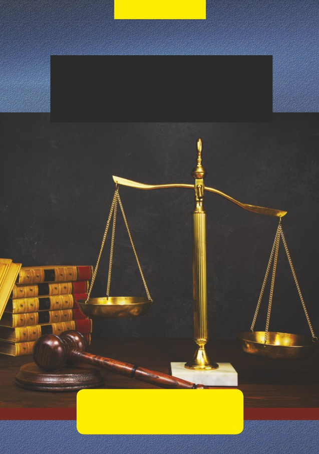
MWONGOZO
WA WAWEZESHAJI
WA WASAIDIZI WA KISHERIA
Toleo la Pili
Umeandaliwa na Chama Cha Wanasheria
Tanzania Bara - Novemba, 2015
Mwongozo
wa
Wawezeshaji
wa
Wasaidizi wa Kisheria
Toleo la Pili
Umeandaliwa na Chama Cha Wanasheria
Tanzania Bara kwa ufadhili wa Legal Service Facility (LSF)
Novemba, 2015
i
Kimetayarishwa na
Chama Cha Wanasheria Tanzania Bara
Kiwanja Na. 391, Mtaa wa Chato
Regent Estate, S.L.P 2148
Dar es Salaam, Tanzania.
Simu +255 22 2775313/ +255 22 5500002
Nukushi +255 22 2775314
Barua Pepe info@tls.or.tz
© Chama Cha Wanasheria Tanzania Bara, 2015
Toleo la Kwanza,2013
Toleo la pili, 2015
ISBN: 978-9976-9909-0-4
Waandishi
Kimeandikwa na kuhaririwa
Kaleb Gamaya,
chini ya usimamizi wa;
Mackphason Buberwa
Kamati ya Msaada wa Sheria
Stephen Msechu
Anna Kulaya-Mwenyekiti
Celina Kibasa
Butamo Philip
John Mwang’ombola
Daniel Lema
Alphonce Gura
Donesta Byarugaba
Judith Kapinga
Fulgence Massawe
Maria Matui
Wahariri
Daimu Halfan
Utti Mwang’amba,
Scholastica Jullu,
Kamati ya Utafiti na Machapisho
Selemani Pingoni,
Prof. Cyriacus Binamungu
Jane Magigita
Dr. Alex Makulilo
Magdalena A. Mlolere,
Dr. Lilian Mongela
Beatrice Cherdiel
Elifuraha Laltaika
Kees Groenendijk,
Madeline Kimei
Attilio Tagalile.
Nuhu Mkumbukwa
Juvenalis Rwegasira,
ii
Yaliyomo
Yaliyomo
iii
Finyazo/Vifupisho
iv
Dibaji
v
Shukrani
vi
Utangulizi
vii
SURA YA KWANZA
1
Msaidizi wa Kisheria na Majukumu Yake
1
SURA YA PILI
14
Kujenga Uwezo wa Jamii Kupitia Sheria
14
SURA YA TATU
32
Ushawishi
32
SURA YA NNE
46
Haki za Binadamu
46
SURA YA TANO
62
Haki za Wanawake
62
SURA YA SITA
69
Jinsia na Ukatili wa Kijinsia
69
SURA YA SABA
87
Ndoa na taratibu zake
87
SURA YA NANE
102
Ajira, Kazi na Hifadhi ya Jamii
102
SURA YA TISA
122
Mtoto na Haki zake
122
SURA YA KUMI
133
Urithi na Mirathi
133
SURA YA KUMI NA MOJA
151
Raslimali Ardhi
151
SURA YA KUMI NA MBILI
176
Mazingira na Uhifadhi wa Mazingira
176
SURA YA KUMI NA TATU
188
Haki za Raia Katika Mfumo wa Jinai
188
SURA YA KUMI NA NNE
207
Uongozi na Utawala
207
Rejea
224
iii
Finyazo/Vifupisho
ACOC
Association for Community Change
AICIL
African Institute for Comparative and International Law
CCT
Christian Council of Tanzania
CELG
Centre for Environmental Law and Governance
CWCA
Centre for Widows and Children Assistance
EFG
Equality for Growth
IPACE
Iringa Paralegal Centre
JINAMA
Jinsia na Maendeleo
JSDV
Jamii Salama Development Volunteers
LSF
Legal Services Facility
MBEPAC
Mbeya Paralegal Centre
MHOLA
Mama’s Hope for Legal Assistance
PACESHI
Paralegal Aid Centre Shinyanga
PADI
Tanzania Mission to the Poor and Disabled
SHEHABITA
Sheria Na Haki za Binadamu Tarime
TLS
Tanganyika Law Society
TEWOREC
Tanga Elderly Women Resources Centre
WASHEHABISE
Wasaidizi wa Sheria na Haki za Binadamu Serengeti
iv
Dibaji
Maelezo ya Jumla Kuhusu Mwongozo Huu
Kufanikisha uwezeshaji wa wasaidizi wa kisheria, ni muhimu sana kufahamu mila,
tamaduni na desturi za jamii katika maeneo unakofanyikia uwezeshaji huo. Ni muhimu
sana kuzingatia mazingira ya kijamii watokayo wasaidizi wa kisheria ili mafunzo
yatolewayo yakidhi mifumo na mahitaji ya jamii husika. Wasaidizi wa kisheria wanatoka
katika mazingira tofauti mfano mjini, vijijini, jamii za wafugaji, wakulima, wafanyabiashara
ndogondogo, wafanyakazi sekta rasmi na isiyo rasmi, wenye imani tofauti za dini n.k..
Ufahamu wa mila, desturi, tamaduni na mitazamo utakuwezesha kutambua mbinu gani
itafaa ili kubadilisha mitazamo na kuhamasisha ulinzi wa haki za binadamu katika jamii.
Kwa kila mada jadili na washiriki mifano ya mila zao zinamlinda vipi mwanawake, sifia
uzuri wa mila za jamii hiyo lakini kwa umakini mkubwa bila kuwakosea na kuwaudhi
washiriki na wanajamii, sisitiza kwamba baadhi ya mila hazifai katika mazingira ya dunia
ya sasa na ni vema zikabadilika. Pata mtizamo wa washiriki kwenye msimamo wako huo,
wao wanaonaje mila hizo. Mara zote ni vema kuwatumia wawezeshaji wenye ujuzi wa
huduma ya msaada wa kisheria ambao ni watu wa jamii husika, wanatoka au wameishi
eneo husika na wanafahamu vema mila, desturi, tamaduni na mazingira ya eneo hilo.
Mara zote hakikisha unatumia mbinu shirikishi za uwezeshaji ili kufanikisha kuyafikia
malengo ya mafunzo. Jitahidi kwa kadri uwezavyo kujifunza na kutumia mbinu tofauti
tofauti ambazo zinakidhi kulingana na mahitaji ya mada husika, mazingira, vifaa
ulivyonavyo, aina ya washiriki, muda, n.k. Jambo hili lizingatiwe kwenye kila mada
iliyopo kwenye mwongozo huu. Kwa muda wote wa mafunzo patakuwepo mazoezi
kadhaa kwa vikundi. Jaribu iwezekanavyo kugawa vikundi kwa idadi sawa kinambari na
kijinsi. Ni pale tu inapokuwa lazima ndipo vikundi vinaweza kugawanywa kwa misingi
ya jinsi. Baada ya kazi za vikundi washiriki watawasilisha kazi zao. Kwa kawaida mshiriki
hujitolea kufanya moja ya hayo lakini kama mwezeshaji jaribu kuona kuwa kila mshiriki
anapata nafasi ama ya kuandika au ya kuwasilisha. Hakikisha kuwa washiriki hawawapi
watu wale wale jukumu la kufanya kazi waliyopewa.
Mwezeshaji hakikisha kwa kila mada unaeleza malengo ya mada hiyo. Hakikisha pia
umegawa ratiba ya mafunzo na kuwataka washiriki wajiandae kwa mafunzo kulingana na
ratiba ya kila siku. Kila jioni wakumbushe washiriki mada ya siku inayofuata na usisitize
wajiandae vema ikiwemo kujisomea na kurejea mazingira halisi ya jamii wanayotoka au
kuihudumia.
Ujuzi na maarifa ya mbinu za uwezeshaji, ufahamu wa sheria na huduma ya msaada
wa sheria, ufahamu wa dhana ya msaidizi wa kisheria na nafasi aliyonayo katika jamii,
ufahamu wa jamii husika na matatizo ya kisheria na haki za binadamu na changamoto
zake katika jamii hiyo ndiyo sifa kubwa ya kuwa mwezeshaji wa programu za mafunzo
kwa wasaidizi wa kisheria.
v
Shukrani
Mwongozo huu ni matokeo ya juhudi za pamoja za wadau katika huduma ya msaada
wa kisheria (mtu mmoja mmoja na mashirika) wenye nia ya dhati kuona jamii hasa zile
za watu wasio na uwezo kuifikia na kupata haki wakiwezeshwa kuchukua hatua wao
wenyewe na jamii zao kufuatilia na kuipata haki hiyo kwa kufuata taratibu za kisheria
na kiutawala (legal and administrative procedures), mila na desturi za jamii husika. Siyo
rahisi kuwataja wadau wote kwa majina kwani ni wengi mno. Chama cha Wanasheria
Tanzania Bara au kwa Kiingereza Tanganyika Law Society (TLS) kinatoa shukrani zake
za dhati kwa wadau wote kwa moyo wenu huo wa kujitolea.
Hata hivyo, shukrani maalum zimwendee Jane Magigita, Mkurugenzi wa Taasisi ya
Equality for Growth. Akiwa mwezeshaji katika warsha ya wadau ameshiriki vema
kuhakikisha kwamba mwongozo unakidhi na kuakisi mahitaji ya jamii kimaudhui na
kimuundo.
Shukrani pia ziwafikie maafisa wa Chama cha Wanasheria Tanzania Bara kwa michango
yao juu ya mada mbalimbali kwenye mwongozo huu. Maafisa wafuatao walishiriki
kuweka sawa maudhui ya mwongozo: Stephen Msechu, Alphonce Gura, Celina Kibasa,
John Mwang’ombola, Judith Kapinga, Seleman Pingoni, Mack Buberwa na Magdalena
Mlolere
Tunatoa salaam maalum kwa mashirika yafuatayo kwa mchango wao mkubwa kwenye
warsha ya wadau kuhakiki maudhui ya mwongozo huu: EFG, CELG, MHOLA,
Kivulini, IPACE, MBEPAC, SHEHABITA, WASHEHABISE, JSDV, PACESHI,
CCT, TEWOREC, JINAMA, ACOC, CWCA, PADI na AICIL.
Tunathamini mchango mkubwa wa shirika la Legal Services Facility kwa ufadhili wake
katika uandishi na uchapishaji wa mwongozo huu. Shukrani pia ziwafikie maafisa wa
LSF Bibi Scholastica Jullu na Fortunata Kitokesya kwa ushirikiano wao wa karibu
na maafisa wa Chama cha Wanasheria Tanzania Bara katika uratibu wa uandishi wa
mwongozo huu.
Kwa namna ya kipekee tunalishukuru Baraza la Uongozi la Chama Cha Wanasheria
Tanzania Bara chini ya uongozi wa Wakili Charles Rwechungura kwa kuridhia na kutoa
rasilimali za chama katika kuandaa mwongozo huu.
Shukrani za dhati ziwafikie wanakamati wa Kamati ya Msaada wa Sheria inayoongozwa
na Wakili Anna Kulaya na Kamati ya Utafiti na Machapisho chini ya Prof. Cyriacus
Binamungu kwa ushauri wao uliolenga kuhakikisha mwongozo huu unakidhi viwango.
Mwisho japo sio kwa umuhimu, tunazitambua juhudi za Ndugu Seleman Pingoni na
Alphonce Gura kwa kuwa mstari wa mbele kuratibu shughuli za uandishi na uchapishaji
wa mwongozo huu hadi kukamilika kwake.
Kaleb Gamaya
Afisa Mtendaji Mkuu
Chama cha Wanasheria Tanzania Bara
vi
Utangulizi
Jukumu la kufahamu sheria na haki za binadamu ni la kila mtu katika jamii. Jamii ambayo
watu wake wanafahamu masuala ya sheria na haki za binadamu inayo nafasi kubwa ya
kupiga hatua za kimaendeleo, kiuchumi, kisiasa, kijamii na kiutamaduni. Utii wa sheria
na ulinzi wa haki za binadamu huwawezesha wanawake kupata na kufurahia fursa sawa
na wanaume, huku haki za watoto, walemavu na jamii za wachache zikilindwa na utu
wao kuheshimiwa na kuthaminiwa.
Ni kwa mantiki hiyo, Chama cha Wanasheria Tanzania Bara kwa kushirikiana na wadau
kutoka mashirika yanayotoa huduma ya msaada wa sheria wameandaa tolea hili la pili
la
“Mwongozo wa Msaidizi wa Kisheria.” Mwongozo huu hauondoi toleo liliyopita
(Mwongozo wa Wawezeshaji wa Mafunzo ya Wasaidizi wa Kisheria Tolea la Kwanza)
bali umeboresha zaidi. Hivyo basi, pale ambapo wawezeshaji wa wasaidizi wa kisheria
wataona kuna umuhimu kutumia mwongozo Wawezeshaji wa Mafunzo wa wasaidizi wa
kisheria toleo la kwanza, hawatakuwa wamekosea kufanya hivyo.
Katika Mwongozo huu, kuna jumla ya sura kumi na tano (15). Sura ya Kwanza inajadili
Msaidizi wa Kisheria na Majukumu yake. Sura hii imegawanyika katika sehemu mbili.
Sehemu ya kwanza inafafanua dhana ya msaidizi wa kisheria, sifa, mipaka na miiko.
Sehemu ya pili inafafanua kwa kina njia mbalimbali ambazo msaidizi wa kisheria
atazitumia katika kufanikisha majukumu yake.
Sura ya pili inazungumzia dhana ya utatuzi wa migogoro. Sura hii imegawanyika katika
sehemu mbili. Sehemu ya kwanza inaelezea kwa kirefu dhana ya migogoro, aina ya
migogoro, hasara za migogoro na manufaa ya migogoro. Sehemu ya pili inajadili mbinu
mbalimbali za utatuzi wa migogoro ambazo wasaidizi wa kisheria wataweza kuzitumia
kwenye utatuzi wa migogoro katika jamii zao.
Sura ya tatu inatazama dhana ya kujenga uwezo wa jamii kupitia sheria. Katika mada
hii unatolewa ufafanuzi wa kina kwa nini ni muhimu kuijengea jamii uwezo kutumia
sheria kulinda na kutetea haki zao. Mifumo ya utoaji haki kiutawala na namna ya kuifikia
mifumo hiyo inaelezewa kwa undani kabisa.
Sura ya nne imejikita katika dhana ya ushawishi. Hapa hatua muhimu ambazo wasaidizi
wa kisheria watazitumia katika kufanya ushawishi kwenye mifumo ya utoaji haki na
utawala inafafanuliwa kwa mapana.
Sura ya tano inaongelea masuala ya haki za binadamu. Masuala muhimu kama vile aina
za haki za binadamu, sifa za haki za binadmu na ulinzi wa haki za binadamu yamejadiliwa
katika sura hii.
Sura ya sita inajadili kwa kina haki za wanawake. Katika sura hii msisitizo umewekwa
katika kubadili mitazamo ya kijamii katika suala la haki za wanawake. Wawezeshaji
wanaelekezwa kutambua masuala ya uvunjaji wa haki za wanawake yaliyojikita katika
jamii maeneo wanayowezesha ili waweze kuyajadili vema na washiriki na kupanga
mikakati ya namna ya kubadili hali hiyo kwenye jamii.
vii
Sura ya saba inazungumzia dhana ya jinsia na ukatili wa kijinsia. Ufafanuzi unatolewa
kuhusu aina za ukatili wa kijinsia, madhara yake na mikakati ya kijamii inayoweza
kutumika kukabiliana na ukatili wa kijinsia
Sura ya nane inagusia suala la ndoa na taratibu zake.Kuna sehemu mbili katika sura hii,
sehemu ya kwanza inajadili maana ya ndoa, aina za ndoa na mambo muhimu katika ndoa
huku pia ikigusia haki za mwanamke katika ndoa. Sehemu ya pili inazungumzia ndoa
katika umri mdogo na kupendekeza mikakati ya kijamii inayoweza kupunguza tatizo
hili. Katika sura hii pia haki za mwanamke katika ndoa zinaelezewa kwa kina.
Sura ya tisa inazungumzia ajira, kazi na hifadhi ya Jamii. Katika sura hii haki mbalimbali
za wafanyakazi katika sekta rasmi na ile isiyokuwa rasmi kama vile mashambani,
vibarua viwandani na wafanyakazi katika kumbi za starehe au vilabu vya kuuza pombe
zinajadiliwa.
Sura ya kumi inaangalia mtoto na haki zake. Mikataba mbalimbali ya kimataifa na
kikanda inayolinda haki za mtoto inafafanuliwa. Pia haki za mtoto katika katiba na
sheria za nchi zinazungumziwa.
Sura ya kumi na moja inaangalia masuala ya urithi na mirathi. Hapa sheria zinazoongoza
masuala ya urithi na mirathi nchini Tanzania kwa maana ya sheria ya bunge, sheria za
kimila na sheria ya kiislam zinajadiliwa kwa ufasaha.
Sura ya kumi na mbili inazungumzia raslimali ardhi. Sura hii pia imegawanyika katika
sehemu tatu. Sehemu ya kwanza inajadili mgawanyo wa ardhi kitaifa na vyombo vya
utawala na usimamizi wa ardhi nchini. Sehemu ya pili inazungumzia upatikanaji na
umiliki wa ardhi nchini Tanzania. Masuala ya haki miliki ya ardhi na taratibu za maombi
ya hatimiliki yanajadiliwa pia katika sehemu hii ya pili. Sehemu ya tatu inaangalia
matumizi ya ardhi kama rasilimali kwa uchumi endelevu ikiwemo namna ya kutumia
ardhi kama dhamana kwa shughuli za kiuchumi
Sura ya kumi na tatu yenyewe inazungumzia mazingira na hifadhi ya mazingira. Faida
za ulinzi na utunzaji wa mazingira na uhusiano baina ya mazingira na haki za binadamu
unaangaliwa katika sura hii.
Sura ya kumi na nne inazungumzia haki za raia katika mfumo wa jinai. Katika sura hii
mamlaka ya vyombo vya dola hasa polisi na magereza yameainishwa. Pia haki za raia
katika mchakato mzima wa mfumo jinai zimeelezewa.
Sura ya kumi na tano inaangalia mambo ya uongozi na utawala. Sura hii imegawanywa
katika sehemu mbili. Sehemu ya kwanza inazungumzia taratibu za uendeshaji na
usimamizi wa ofisi ilhali sehemu ya pili inajadili taratibu za fedha na manunuzi.
Ni imani ya Chama cha Wanasheria Tanzania Bara kwamba mwongozo huu ukitumika
kama inavyokusudiwa utasaidia kwa kiasi kikubwa ufanisi wa shughuli za wasaidizi wa
kisheria.
viii
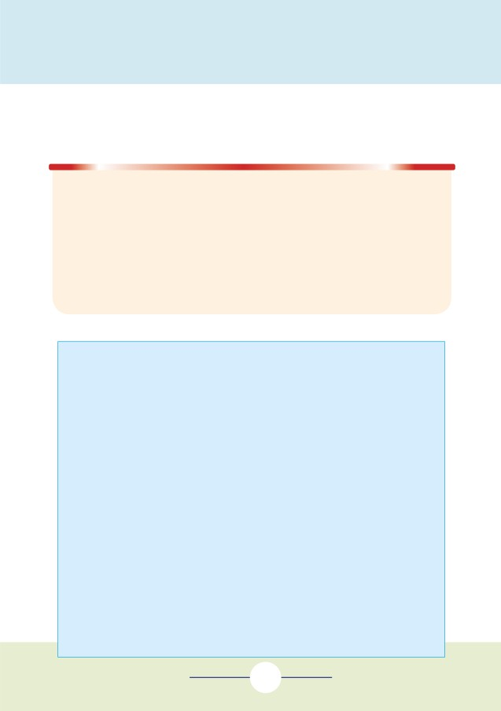
SURA YA KWANZA
Msaidizi wa Kisheria na Majukumu Yake
Lengo Kuu
Kujenga uwezo wa washiriki kufahamu dhana juu ya msaada wa sheria ,wasaidizi wa
kisheria na kazi zao katika jamii.
Malengo Mahsusi
Baada ya kumaliza kujifunza mada hii washiriki watafahamu;
a)
Tafsiri ya msaada wa sheria
b)
Maana ya wasaidizi wa kisheria
c)
Sifa za wasaidizi wa kisheria
d)
Majukumu ya wasaidizi wa kisheria
e)
Mipaka ya wasaidizi wa kisheria
f)
Faida wasaidizi wa kisheria katika jamii
g)
Miiko na maadili ya wasaidizi wa kisheria
h)
Mbinu zinazotumika kutoa huduma ya usaidizi wa kisheria
Sehemu ya Kwanza - Dhana ya msaada wa sheria na Msaidizi wa Kisheria
Jinsi ya Kuendesha
Mwezeshaji anaweza kutumia mbinu zifuatazo katika kufafanua maana ya Msaidizi wa
kisheria. (Mbinu hizi ni pendekezi tu, mwezeshaji anaweza kutumia mbinu nyingine
yeyote anayoona inafaa kwa mada hii, mazingira, vifaa na hata aina ya washiriki):
1. Mwezeshaji andika maneno Msaidizi wa Kisheria na dhana ya msaada wa
sheria kwenye bango kitita au ubaoni kutokana na mazingira unayo wezeshea
mfano shuleni, ukumbini n.k
2. Wagawe washiriki wawili wawili (jinsi {ME/KE} izingatiwe kati yao) na kwa
muda wa dakika 5 wajadili yafuatayo;
(i)
Sheria ni nini?
(ii)
Msaada wa sheria ni nini?
(iii)
Msaidizi wa kisheria ni nani?
(iv)
Wasaidizi wa kisheria wanafanya shughuli zipi katika jamii?
3. Baada ya kumaliza kujadiliana, washiriki watoe mrejesho. Muda uzingatiwe
sana wakati wa kupokea mrejesho huo. Mwezeshaji andika majibu ya washiriki
ubaoni au kwenye bango kitita.
Muhimu: Mwezeshaji ongoza vema mjadala, wasikilize washiriki kwa makini bila
kutoa ushawishi wa majibu kutoka kwako au kupendelea. Toa nafasi sawa kwa
kuzingatia jinsi, umri na namna washiriki walivyokaa (mfano mbele, nyuma, kulia,
kushoto, katikati). Hakikisha unaorodhesha majibu ya washiriki kwenye bango
kitita au ubaoni.
1
Mchango wa Mwezeshaji
Mwezeshaji kumbuka kuna uwezekano washiriki kutofahamu kabisa dhana ya msaidizi
wa kisheria na msaada wa sheria. Tumia mifano halisi na simulizi za kweli katika
mazingira ziishiyo jamii zetu kuelezea dhana ya msaidizi wa kisheria na umuhimu wa
uwepo wa msaada wa sheria kwenye jamii . Fafanua kwa kusisitiza kuwa Msaidizi wa
Kisheria si mwanasheria au wakili hata kidogo. Kwa mfano, waweza kuwauliza washiriki
ikiwa wanawafahamu wakunga na shughuli za wakunga katika jamii zao. Eleza kuwa
kama ambavyo wakunga si madaktari, ijapokuwa wanasaidia shughuli fulani za kiafya
katika jamii, ndivyo ilivyo kwa wasaidizi wa kisheria, nao pia si wanasheria au mawakili
japokuwa wanafanya shughuli za usaidizi wa kisheria.
Tumia ujuzi wako na maarifa yako ya mbinu za uwezeshaji kufafanua vema na kwa mifano
mada hii. Epuka kutumia muda mwingi kuelezea mambo ambayo tayari yamekwisha
fafanuliwa na washiriki kwa ufasaha. Anza na utangulizi kama inavyoonekana hapo
chini.
Utangulizi
Upatikanaji wa haki na huduma za kisheria ni tatizo linaloikabili sehemu kubwa ya
jamii ya Watanzania, hasa walio masikini. Huduma za kisheria zimekuwa zikitolewa
kwa kugharimiwa na hivyo kufanya jamii zenye uwezo mdogo wa kuwalipa mawakili
kukosa huduma hii ya msingi. Zaidi, huduma za msaada wa kisheria kwa kiasi kikubwa
imekuwa ikitolewa maeneo ya mijini na hivyo kuzifanya jamii za vijijini kugharimika
kifedha kwa usafiri, kutumia muda mwingi kufuata huduma hizi mijini na kupoteza
muda wa uzalishaji mali.
Kwa changamoto hizo, ipo haja ya kuwa na watu ambao watatoa usaidizi wa kisheria.
Huduma watakayoitoa wasaidizi wa kisheria itasaidia jamii, wakiwemo wanawake,
watoto, wanaume, wazee na watu wenye ulemavu kufikia suluhu ya matatizo yao kisheria.
Sehemu hii inafafanua maana ya sheria, msaidizi wa kisheria na sifa za msaidizi wa
kisheria
Maana ya Sheria
Neno “Sheria” linaweza kutafsiriwa kwa namna nyingi tofauti. Hata hivyo tafsiri iliyo
rahisi kabisa sheria ni kanuni zilizotungwa na Bunge au taasisi zingine zenye mamlaka ya
kutunga sheria ambazo huelekeza namna bora ya watu kuenenda kwa lengo la kuendeleza
na kudumisha haki na amani, utulivu na utengamano.
Kanuni hizi hutokana na vyanzo mbalimbali, mfano katiba ya nchi, kutungwa na bunge,
sheria ndogo zinazotungwa na serikali za mitaa, sheria za kimila ambazo hutokana na
mila na desturi na sheria zinazotokana na hukumu za mahakama za juu (Mahakama
kuu).
Maana ya msaada wa sheria
Msaada wa sheria ni huduma ya kisheria inayotolewa bure na mwanasheria au msaidizi
wa kisheria kwa mhitaji. Huduma hii hujumuisha ushauri wa kisheria , elimu ya sheria
2
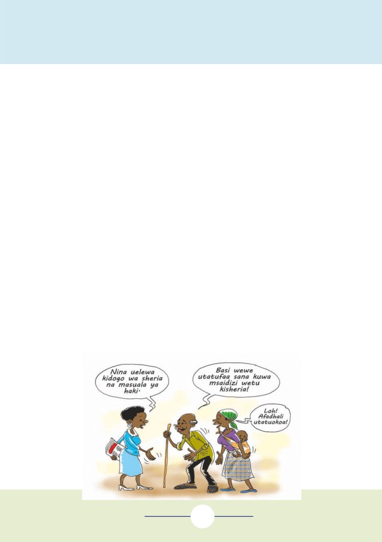
, kujengea jamii uelewa kuhusu sheria na haki za binadamu, kuwaelekeza wanajamii
vyombo na taasisi ambazo wanaweza kupata huduma za kisheria kulingana na tatizo la
kisheria ambalo analo. Uandaaji wa nyaraka na uwakilishi wa mahakama ni sehemu ya
msaada wa sheria.
Maana ya Msaidizi wa Kisheria
Msaidizi wa kisheria ni mtu mwenye ufahamu wa sheria na masuala ya haki. Pia msaidizi
wa kisheria ni mtu mwenye ufahamu wa jamii anayoihudumia na matatizo ya kisheria
na haki yanayoikabili jamii hiyo. Mwenye kuweza kushauri na kuelekeza jamii kufuatilia
haki katika vyombo vya kisheria na vya haki.
Sifa za Msaidizi wa Kisheria.
➣ Awe na akili timamu;
➣ Awe amepata mafunzo ya usaidizi wa kisheria na kuwa na ufahamu wa masuala ya
kisheria, sheria mbalimbali za nchi;
➣ Awe na ufahamu wa haki za binadamu;
➣ Awe na sifa ya kuheshimu na kulinda sheria mbalimbali za nchi na haki za
binadamu;
➣ Asiwe na sifa za ukiukaji wa haki za binadamu;
➣ Awe na moyo wa kuitumikia na kuhamasisha jamii katika masuala yanayohusu
haki zao za msingi ili kuweza kuleta ustawi, utengamano na Maendeleo endelevu
katika jamii;
➣ Awe mwadilifu, mwaminifu na aliyejijengea heshima katika jamii yake kutokana
na maadili aliyonayo lakini pia kutokana na jitihada zake katika kusaidia jamii
katika masuala mbali mbali;
➣ Awe anatoka katika jamii anayoitolea huduma ili aisaidie wakati wowote
kunapohitajika masuala ya usaidizi wa kisheria;
➣ Awe na ufahamu wa mila, desturi, tamaduni, na imani za jamii husika
➣ Awe mwenye uwezo wa kutunza siri za wateja anaowahudumia;
➣ Awe uelewa na elimu ya kutosha kufanya shughuli za msaada wa sheria
➣ Awe mwepesi wa kunyumbulika na kujifunza
3
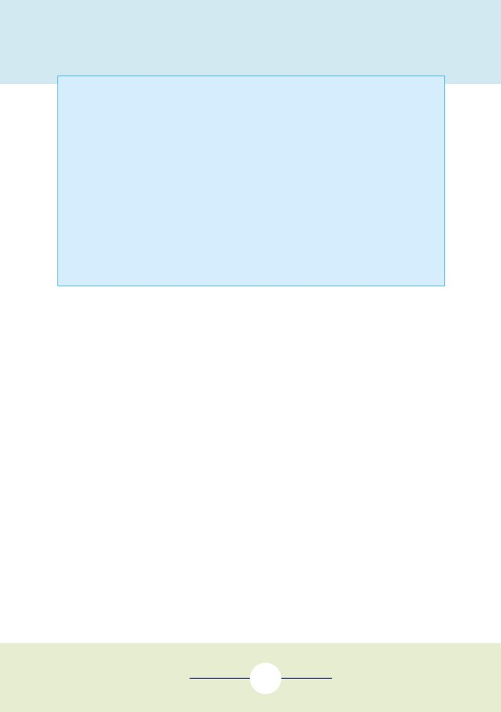
Wajibu na Majukumu ya Msaidizi wa Kisheria
Jinsi ya Kuendesha
1. Mwezeshaji kwa kutumia mbinu ya bangua bongo, pima uelewa wa washiriki
kwa kuwauliza maswali yafuatayo:-
➣ Ni changamoto gani za kisheria zinazoikabili jamii yako
➣ Ni matatizo gani ya kisheria yaliyoko kwenye jamii yako ambayo wasaidizi
wa kisheria wanaweza kusaidia kuyatatua?
➣ Elezea mipaka ya wasaidizi wa kisheria
Mbinu Mbadala
1. Mwezeshaji wagawe washiriki katika vikundi vya watu wasiozidi 8 na wafanye
mazoezi yafuatayo:
a.
Wajadili umuhimu wa wasaidizi wa kisheria katika jamii zao
b.
Waorodheshe kazi za mwanasheria au wakili
c.
Wataje kazi ambazo msaidizi wa kisheria hawezi kuzifanya
2. Baada ya kumaliza kazi za vikundi washiriki wafanye uwasilishaji wa kazi zao
Mchango wa Mwezeshaji
Mwezeshaji eleza kwa washiriki kuwa pamoja na kwamba msaidizi wa kisheria ni nguzo
muhimu ya ulinzi na uhamasishaji wa haki za binadamu katika jamii anayoishi. Mchango
mkubwa katika kufanikisha dhana ya ufikiaji na upatikanaji wa haki katika jamii hasa zile
masikini , za mijini na za vijijini unatolewa na msaidizi wa kisheria. Msaidizi wa kisheria
atakuwa na majukumu yafuatayo katika shughuli zake za kila siku kwenye jamii yake;-
i.
Kutoa elimu ya haki za binadamu kwa jamii;
ii.
Kutoa elimu ya sheria kwa wanajamii. Mkazo hasa ni kwenye zile sheria
zinazoigusa jamii katika maisha yao ya kila siku kwa mfano elimu juu ya sheria na
taratibu za kumiliki na kutumia ardhi, ndoa, haki za watoto, mirathi na urithi;
iii.
Kusaidia na kutoa elimu kwa jamii kuhusu taratibu za kisheria za kuufikia mfumo
wa utoaji wa haki
iv.
Endapo ikitokea mtu kuonesha kuwa ana tatizo la kisheria au haki yake, au juu
ya hatua za kuchukua katika kufuatilia upatikanaji wa haki yake, msaidizi wa
kisheria anao wajibu wa kuhakikisha mtu huyo anapata usaidizi kwa kuelekezwa
cha kufanya kulingana na tatizo alilonalo kadiri inavyowezekana ili aweze kufikia
haki yake;
v.
Kumuelekeza mtu mwenye tatizo la kisheria mahali ambapo anaweza kupata
ufumbuzi wa tatizo lake, kwa mfano Mahakamani au kwenye taasisi au kwa mtu
mwenye mamlaka ya kiutendaji au mwenye uwezo wa kulishughulikia tatizo lake
moja kwa moja, kwa mfano wakili, Tume ya haki za binadamu
vi.
Kutoa ushauri, unasihi, upatanishi wa kisheria kwa wadawa wa masuala ya kisheria.
Hivyo, atumie uelewa wake wa kisheria kumaliza tatizo la wadawa;
vii.
Kusaidia jamii katika kuandika barua kadhaa za kiutawala katika masuala ya
kisheria ya kuharakisha upatikanaji na upelekaji wa nakala muhimu za kisheria
katika maeneo mbalimbali ya utoaji haki;
4
viii.
Kutunza kumbukumbu za kazi zake, kutayarisha taarifa za kazi, kutoa taarifa kwa
wadau mbalimbali kama vile serikali za mitaa na wanufaika kwa madhumuni ya
kuona na kutambua uhalisia wa kazi yake katika jamii;
ix.
Kufanya ufuatiliaji na kutoa taarifa kwa vyombo husika kwa vitendo vyovyote
vya uvunjifu wa haki za binadamu, au vitendo vyovyote vinavyoweza kusababisha
uvunjifu wa sheria na haki za binadamu;
x.
Kutoa usaidizi wa kisheria kwenye vyombo vya usimamizi na utoaji haki kama vile
ofisi za serikali za mitaa, polisi, mabaraza na mahakama za mwanzo kulingana na
maelekezo au taratibu zilizowekwa;
xi.
Panapokuwa na uhitaji au matatizo makubwa ya kisheria, msaidizi wa kisheria ana
jukumu la kuelekeza mahali pa kupata msaada huo;
xii.
Kuamsha hisia na ari za wanajamii kufahamu haki zao na masuala mbalimbali ya
sheria katika jamii husika na taifa kwa ujumla;
xiii.
Kufanya mambo mengine yeyote ya kiusaidizi wa kisheria, kiutawala na haki za
binadamu yatakayojitokeza katika jamii;
Faida za Msaidizi wa Kisheria
i.
Hupunguza na hata kuziba pengo la ukosefu wa huduma ya msaada wa kisheria
katika jamii anayoishi kwa kutoa usaidizi wa awali wa kisheria;
ii.
Husaidia jamii katika masuala ya ujumla kwa kuelekeza jambo ambalo jamii
inaweza kulifanya ili iondokane na matatizo ya kisheria yaliyopo.
iii.
Ni mtu wa kawaida kabisa na ambaye anatoka katika jamii anayoishi, hivyo ana
uelewa mzuri zaidi wa mambo yanayoihusu jamii husika na mazingira yake;
iv.
Hupunguza na hata kuondoa kabisa tatizo la upotevu wa muda kwa wanajamii
kufuatilia haki zao mijini na hata kupunguza gharama za ufuatiliaji haki.
v.
Ni kiungo muhimu kati ya mifumo rasmi ya utoaji haki na ile isiyo rasmi toka
ngazi ya taifa na jamii;
vi.
Hafungwi na taratibu za kiufundi kama walivyo wanasheria ambao huhitajika
kufanya kazi wakiwa na leseni, mihuri na hata ofisi kwa ajili ya kutoa ushauri wa
kisheria
vii.
Hana gharama ya ushauri wowote atakaoufanya katika mambo ya kisheria.
Mipaka ya Msaidizi wa Kisheria
i.
Msaidizi wa kisheria hawezi kusimama mahakamani kumwakilisha mtu kwa ajili
ya kumtetea. Hata hivyo, msaidizi wa kusheria anaweza kuendelea kutoa msaada
wa sheria hata katika vyombo vya maamuzi kama vile mabaraza au mahakama
za mwanzo pale anapoombwa au kuelekezwa na sheria, kanuni au mabaraza
kuendelea kutoa usaidizi wa kisheria;
ii.
Msaidizi wa kisheria hawezi kuendesha viapo kama wafanyavyo mawakili, hakimu,
mkuu wa wilaya, mashehe na wachungaji na au watu wowote waliokasimiwa
dhamana ya kuendesha viapo kisheria;
iii.
Msaidizi wa sheria hapaswi kuandika nyaraka za kitaalamu za kisheria kwani
5
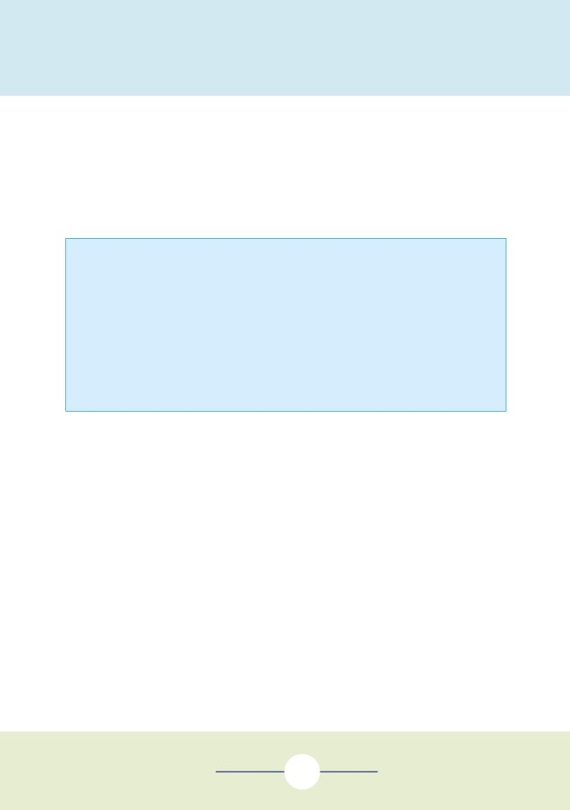
zinahitaji ujuzi wa kusomea sheria kama vile stashahada, shahada na kuendelea;
iv.
Msaidizi wa kisheria sio hakimu wala jaji wa mahakama mwenye uwezo wa kutoa
hukumu. Bali msaidizi wa kisheria ni mshauri na mfuatiliaji wa ukiukwaji wa haki
za kisheria na haki za binadamu. Hivyo, kwa kuwa wajibu wake ni kushauri na
kuelekeza jamii, hapaswi kumlazimisha mtu au mteja wake kufuata ushauri wake
wala kumuamulia juu ya hitaji lake;
v.
Msaidizi wa kisheria haruhusiwi kutoza tozo za ujuzi au tozo nyinginezo
zinazofanana na hizo kutokana na huduma yake ya usaidizi wa kisheria.
Sehemu ya Pili - Mbinu za Kutumia Kutoa Huduma ya Usaidizi wa Kisheria
Jinsi ya Kuendesha
1. Mwezeshaji waombe washiriki kusimama na kujibu maswali kwa kushindana ili
atakayetoa jibu mapema akae chini;
2. Waulize washiriki wataje mbinu ambazo msaidizi wa kisheria atazitumia ili
kufanikisha kazi zake za kila siku. (majukumu yake). Kila mmoja ataje angalau
mbinu moja.
3. Orodhesha majibu yao kwenye bango kitita au ubaoni kulingana na vifaa vya
uwezeshaji unavyovitumia;
4. Kwa wale watakaojikuta hawakuweza kupata nafasi ya kujibu, basi wape nafasi
ya kutoa ufafanuzi.
Mchango wa Mwezeshaji.
Mwezeshaji jumuisha majibu ya washiriki na fafanua kwa kubainisha mbinu mbalimbali
ambazo msaidizi wa kisheria atazitumia kukamilish majukumu yake. Zifuatazo ni baadhi
ya mbinu hizo;
i.
Utoaji elimu;
ii.
Uhamasishaji (uwezeshaji);
iii.
Ugawaji wa machapisho yenye maelezo mafupi na marefu;
iv.
Usuluhishi na Upatanishi;
v.
Unasihi;
vi.
Ushauri;
vii.
Ushawishi;
viii.
Ufuatiliaji;
Sehemu hii itajadili kwa kina mbinu za kutoa huduma ya msaada wa kisheria. Hata
hivyo, mbinu zingine kama vile ushawishi na ufuatiliaji wa uvunjaji wa haki za binadamu
na kisheria zitatolewa maelezo yake ya kina katika sura nyingine inayofuata.
6
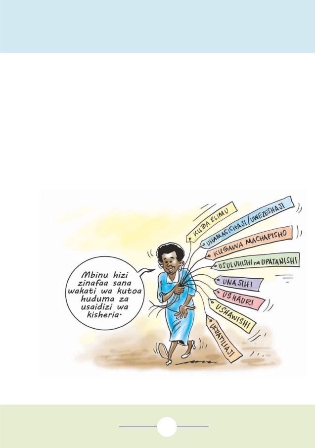
i.
Utoaji Elimu kwa Jamii na Uhamasishaji (Uwezeshaji Jamii Kisheria)
Utangulizi
Hii ni mbinu inayotumika kuifahamisha jamii kuelewa haki zao za kikatiba na kisheria ili
izitambue, kuzitetea na kuzilinda haki hizo pale watu binafsi au wanajamii (katika ngazi
za vijiji, kata na hata wilaya) wanapoporwa haki zao na mamlaka za serikali, watumishi
wa umma au watu binafsi. Mfano wa elimu itolowayo kwa jamii ni haki ya kumiliki
ardhi, nguvu na mamlaka ya wanakijiji kupitia mkutano mkuu wa kijiji katika ugawaji wa
ardhi ya kijiji, haki za binadamu, haki za wanawake na watoto n.k
Mbinu hii inaweza kutumika katika majukwaa mbalimbali kwa mfano kwenye mikutano
ya vijiji, sherehe za kimila, gulio, siku za ibada, michezoni, kwenye vikundi vya kina
mama, VICOBA n.k. Pia inaweza kutolewa kwa njia ya mhadhara, redioni, mazungumzo
ya kawaida baina ya vijana, wazee au viongozi wa kimila, kidini na kiserikali.
Ili kuwezesha, kuelimisha au kuhamasisha jamii kufahamu haki zao, msaidizi wa kisheria
atafanya yafuatayo;
7
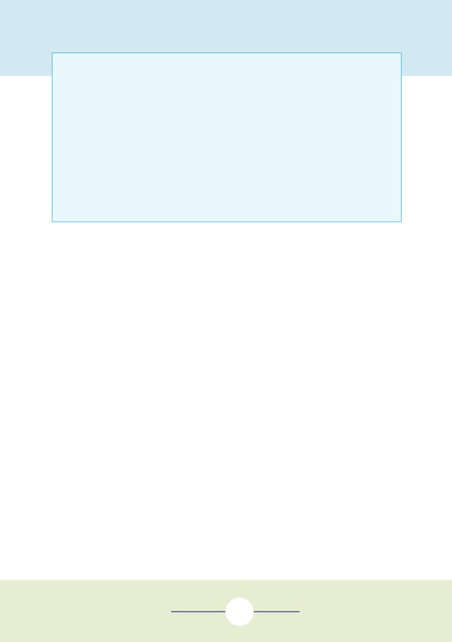
Jinsi ya Kuendesha
1. Mwezeshaji awagawe washiriki katika makundi makuu mawili, kisha waandae
namna ya kuendesha uwezeshaji wa mada watakayoichagua.
2. Kisha washiriki kutoka kundi moja watumie mbinu walizoziandaa kuwezesha
kundi jingine.
3. Kundi litakalokuwa linawezeshwa liwasilishe mrejesho/tathmini.
4. Mwezeshaji ahitimishe mjadala kwa kufafanua hatua stahiki.
Njia Mbadala
5. Wagawe washiriki kwenye makundi manne, kila kundi litaje na kuelezea mbinu
za uwezeshaji watakazotumia kuhamasisha jamii
Au
6. Kwa kutumia njia ya bungua bongo, mwezeshaji anaweza kuendesha mjadala
utakaoonesha hatua za kuandaa uwezeshaji
Mchango wa Mwezeshaji
Baada ya kupata mchango kutoka kwa washiriki, mwezeshaji aweke mkazo kwa washiriki
kwamba wakati wa kutoa elimu na kuhamasisha jamii, ni vema wafanye yafuatayo;
a)
Kujiandaa vyema kabla ya kuanza shughuli za utoaji wa elimu kwa jamii (uwezeshaji);
Katika kujiandaa kufanya uwezeshaji ni vyema kufahamu au kuzingatia mambo makuu
yafuatayo;
ü
Andaa mavazi ya heshima na yenye hadhi ya mwezeshaji kulingana na tamaduni,
mila, rika na hata mazingira ya wahusika;
ü
Soma na kuelewa mada au jambo la kuwezesha/kuelimisha;
ü
Tayarisha au andaa mazingira na vifaa vya kuwezeshea (kuelimishia) kulingana na
mazingira;
ü
Andaa rejea au mifano halisi ya kuwezeshea;
ü
Andaa mada kulingana na uhitaji wa walengwa na muda na kazi za kila hatua
katika uwezeshaji;
ü
Andaa maswali na kazi za vikundi; na
ü
Andaa vitu vingine vyovyote muhimu wakati wa uwezeshaji
b)
Kuandaa au kujua mbinu au namna ya kutumia wakati wa uwezeshaji, au ufundishaji
ü
Andaa namna ya kuanza kuwezesha au kuongea na wahusika;
ü
Kwa kushirikiana na wahusika/washiriki, andaa na fafanua taratibu mbalimbali
zitakazotumika wakati wa uwezeshaji;
ü
Andaa utaratibu wa kufahamu matarajio ya washiriki, uelewa wao kuhusu lengo la
uwezeshaji, hofu zao kuhusu shughuli ya uwezeshaji;
ü
Tumia mbinu za uwasilishaji mada kama vile mhadhara, maigizo, mjadala, maswali
na majibu, bungua bongo, video, picha na maswali, makundi ya majadiliano; kisa
mkasa, matembezi ya kujifunza, nyimbo, ngonjera na mashairi;
ü
Epuka kukaa sehemu moja ya ukumbi au eneo unalowezeshea;
ü
Zungumza kidogo kisha chokoza washiriki kwa namna yeyote ili waongee na
kuchangia zaidi;
8
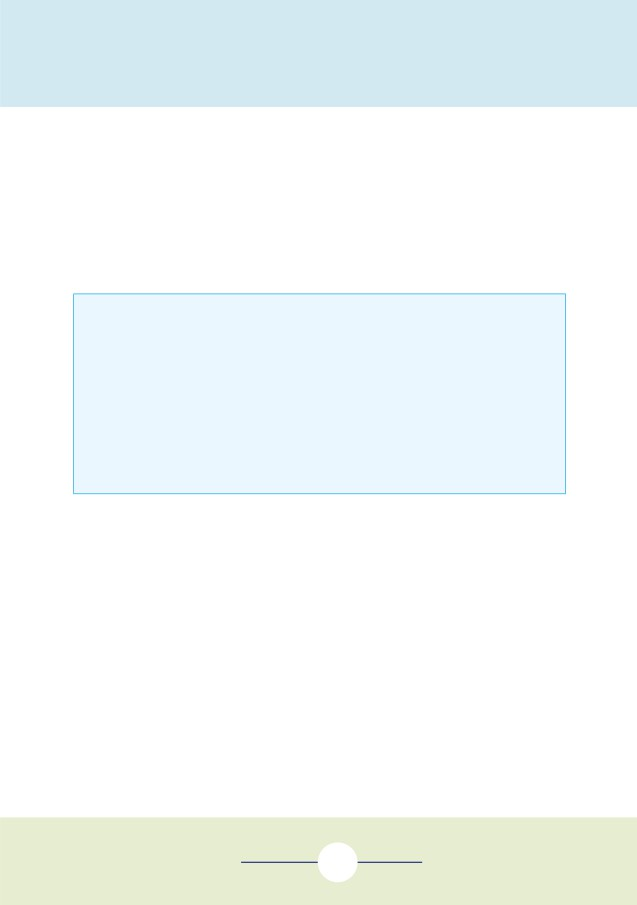
ü Rudia au rejea kila baada ya muda ili kuweka msisitizo katika jambo ulilokwisha
lifanya.
ü Zingatia muda wa uwezeshaji.
c)
Kuandaa namna ya kujua ufahamu wa mada baada ya kumaliza uwasilishaji au
ufundishaji.
ü Toa maswali ya mhusika mmoja mmjoa au vikundi;
ü Fanya tathmini ya uwezeshaji kwa kutumia maswali yaliyotayarishwa au maswali
ya papo kwa papo;
ü Fanya mrejesho wa kazi iliyopita kwa kutumia mrejeshaji;
ü Toa maswali kwa kuandika au kufanya mtihani.
ii)
Usuluhishi na Upatanishi
Jinsi ya Kuendesha
1. Mwezeshaji aandae kisa mkasa chenye mgogoro unaohitaji usuluhishi;
Au
Washiriki wasimulie mgogoro uliopo au uliowahi kutokea kwenye jamii yao;
2. Wagawe washiriki kulingana na nafasi zilizopo kwenye mgogoro mfano
wasikilizaji, wasuluhishi, wadaawa (walio kwenye mgogoro), mashahidi n.k.
Washiriki wote wapate nafasi kushiriki kwenye kisa mkasa hicho;
3. Watende shughuli ya usuluhishi;
4. Baada ya zoezi la usuluhishi kukamilika, washiriki wawasilishe mrejesho
kuhusu mafanikio, upungufu, changamoto, mbinu mbadala ambazo zingeweza
kutumika kwenye zoezi la usuluhishi.
Mchango wa Mwezeshaji
Mwezeshaji wafafanulie washiriki mbinu ya usuluhishi na upatanishi huku ukirejea
mifano kadhaa.
a) Upatanishi
Katika upatanisho, tofauti na mapatano huwa ni makubaliano ya pande mbili wa mgogoro
kwa kuhusisha upande mwingine ulio nje ya mgogoro kusaidia kufikia muafaka. Mara
nyingi upatanishi hauhusishi njia zilizo rasmi katika kusuluhisha wadaawa kama ilivyo
kwenye mabaraza ya usuluhishi.
Njia hii hutumiwa sana na watu walio karibu na mgogoro kuzisaidia pande mbili kufikia
muafaka. Kwa mfano, kama kuna mgogoro baina ya baba na mama ndani ya familia juu
ya jambo fulani basi wawili hawa wanaweza kumtafuta mtu wa tatu au zaidi ili asaidie
kuwaweka pamoja, au kuwaunganisha pamoja katika hatua za kutafuta suluhu au muafaka
wa mgogoro wao bila ya kufikishana kwenye vyombo maalumu vya usuluhishi.
b) Usuluhishi
Tofauti na upatanishi, usuluhishi ni makubaliano baina ya pande mbili zilizo katika mgogoro
9
kwa kuhusisha mtu maalumu au chombo maalumu kama vile kituo cha upatanishi, baraza
la upatanishi, kutafuta suluhu. Mpatanishi hutumika kama daraja kuzisaidia pande mbili
kufikia muafaka. Katika usuluhishi wa aina hii, msuluhishi anaweza kufafanua haki, wajibu
na madhara ya kila upande na kuwaacha wenye mgogoro kufanya maamuzi ya kutatua
mgogoro wao.
Majukumu ya Msuluhishi
Kazi ya usuluhishi sio kazi rahisi kama ambavyo inaweza kuonekana. Kazi ya kutambua na
kuweka maslahi ya wadaawa katika mzani, kuwaunganisha wadaawa waliokata mawasiliano
kuridhisha pande zote mbili katika msingi wa mahusiano sio kazi rahisi. Hata hivyo, ili
kuhakikisha usuluhishi unaanza na kuisha salama, msuluhishi anakuwa na majukumu
kadhaa ambayo miongoni mwao ni haya yafuatayo;
➣
kuratibu mikutano ya usuluhishi ikiwa ni pamoja na;
ü kuandaa sehemu na vitendea kazi vya usuluhishi,
ü kuandaa agenda na taratibu zitakazo tumika kwenye hatua za usuluhishi,
ü kutambulisha wadaawa kwenye mikutano ya usuluhishi, na
ü kuelezea hatua za usuluhishi kwa wadaawa
➣
Kutengeneza mazingira ya kutogombana miongoni mwa wadaawa kwa kufungua na
kuhakikisha kuwa milango au njia zote za mawasiliano miongoni mwao zinafunguka
na wanawasiliana;
➣
Kutambua na kukusanya habari/taarifa mbalimbali ambazo zinaleta vikwazo katika
hatua za usuluhishi kwa kuruhusu wadaawa waelezee hisia zao na kuchuja hisia
kulingana na mwenendo wa usuluhishi;
➣
Kuwasaidia wadaawa kutambua na kujua masilahi na vipaumbele vyao kwa kulingana
na mwenendo wa usuluhishi kwa kutambua ukomo wa madai yao kulingana na hali
halisi;
➣
kuruhusu hatua ya usuluhishi iendelee kulingana na mahitaji na mwenendo wa
wadaawa kwa kuwasaidia kutafsiri vigezo mbalimbali vya ufumbuzi vinavyokubalika
na kutafuta njia mbadala ya ufumbuzi wa mgogoro wakati wa zoezi la usuluhishi na
kutathimini;
➣
Kuwasaidia wadaawa kutayarisha na kuandika mkataba wa makubaliano ikiwa ni
pamoja na kuhakikisha kwamba makubaliano hayo yanapata nguvu ya kisheria kwa
kuusajili mkataba wa makubaliano mahakamani kama mahakama inahusika.
Faida za Usuluhishi
Jinsi ya kuendesha
Kwa kutumia kisa mkasa hapo juu, mwezeshaji anaweza kufanya yafuatayo;
1. Kuendesha mjadala kwa washiriki wakitaja faida za usuluhishi na upatanishi
2. Au wagawe kwenye makundi ili washiriki waelezee faida za usuluhishi na
upatanishi
10
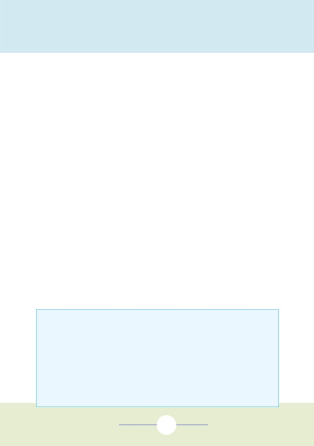
Mchango wa Mwezeshaji
Mwezeshaji eleza kuwa usuluhishi una faida nyingi katika mlolongo wa utatuzi wa migogoro.
Miongoni mwa faida za usuluhishi ni kama ifuatavyo;
➣
Usuluhishi husaidia wadaawa kuwa na mahusiano mazuri hata baada ya mgogoro. Hii
hutokana na ukweli kwamba, wadaawa wamemaliza mgogoro wao kwa makubaliano
na hivyo hakuna anayepoteza au kupata zaidi ya mwingine.
➣
Usuluhishi hufungua mahusiano mapya katika mahusiano ya wadaawa. Mfano:
migogoro ya kazi, migogoro ya majirani, migogoro ya wafanyabiashara, na hata
migogoro ya kisiasa inaweza kuleta sura mpya baada ya kupata suluhu ya mgogoro.
➣
Usuluhishi haufungwi na kubanwa na kanuni za kiufundi, sheria wala taratibu kwani
wadaawa kupitia kwa msuluhishi wanaweza;
ü kupanga sehemu ya kufanyia usuluhishi;
ü kuamua wakati wa kufanya usuluhishi;
ü kuamua idadi ya wahusika katika usuluhishi;
ü kuchagua vigezo vya ufumbuzi wa tatizo;
ü Usuluhishi hauna urasmi wa aina yoyote kwani wadaawa wana uwezo wa
kuwasilisha madai na hisia yao kwa kutumia njia yeyote wanayoona inawafaa
na kufahamika upande wa pili;
➣
Usuluhishi hutumia mda mfupi kuliko njia nyingine za ushindani kwa kutumia
mahakama au mabaraza;
➣
Usuluhishi hauna gharama kubwa kwani matumizi yasiyo ya lazima kama vile
ya uwakilishi sio vitu vya lazima. Upangaji wa mahali pa kusuluhisha, muda wa
kusuluhisha, nani wa kuendesha usuluhishi, na vingine vingi vinavyohitajika wakati
wa usuluhishi vinaweza kufanyika kulingana na uwezo na nafasi za wadaawa;
➣
Usuluhishi hauna ukomo na haufungwi na matokeo yake. Wadaawa kama wataona
hawaridhiki na makubaliano yaliyopita, wako huru kuendelea na usuluhishi ili mradi
tu kila upande ufikie mwafaka unaokubalika na pande zote;
➣
Usuluhishi hutunza siri za wadaawa ikiwa ni pamoja na hisia na mwenendo wa
usuluhishi. Mambo mengine yote, isipokuwa tu yale yatakayowekwa kwenye mkataba
(endapo wadaawa wataandikishiana) yanaweza kuonekana kwa jamii zingine.
i)
Unasihi
Jinsi ya Kuendesha
1. Mwezeshaji andaa kisa mkasa kinachohitaji huduma ya unasihi
Au
Washiriki wasimulie tukio la mhusika katika jamii yao linalohitaji unasihi
2. Washiriki wajichague au mwezeshaji chagua washiriki watakaoshiriki kwenye
tukio la unasihi
3. Wafanye shughuli ya unasihi mbele ya washiriki wengine
4. Baada ya zoezi la unasihi kukamilika, washiriki wawasilishe mrejesho kuhusu
mafanikio, upungufu, changamoto, mbinu mbadala ambazo zingeweza kutumika
kwenye zoezi la unasihi
5. Washiriki pia waeleze mahala panapofaa kufanyia unasihi
11
Mchango wa Mwezeshaji
Mwezeshaji fafanua vile ambavyo wasaidizi wa kisheria wataitumia mbinu ya unasihi katika
shughuli zake za kuhudumia jamii kama inavyoelezwa hapo chini.
a.
Maana ya Unasihi
Maana yake ni maoni au mawazo anayopatiwa mtu mwenye tatizo ili aweze kutumia
kupata suluhisho wa tatizo lake. Unasihi humsaidia mtu kulielewa tatizo lake vizuri zaidi
na kupata mbinu za kukabiliana na tatizo hilo bila kumuathiri. Unasihi humwezesha mtu
kupata matumaini mapya na hivyo kupata unafuu wa mzigo wa mawazo alionao baada ya
kufahamu namna ya kushughulikia tatizo lake.
b.
Mahali pa Kutolea Unasihi
ü Mahali popote penye utulivu na faragha; mfano
ü Ofisini au mahali pa uwazi;
ü Ndani ya nyumba;
ü Kwenye uwanja mkubwa wenye faragha;
ü Kandokando ya bahari (beach);
c.
Wakati wa Kufanya Unasihi
ü Mnasihi anapogundua kuwa kuna suala la kufanyia unasihi;
ü Anapoombwa na wadaawa kutoa unasihi;
ü Wadaawa wanapofika kuomba ushauri wa aina nyingine na yeye kugundua
cha kufanya;
d.
Umuhimu wa Unasihi
ü Unasihi husaidia kutatua matatizo ambayo yangeweza kumletea mtu madhara
kiafya, kisaikolojia, kimaadili, kisheria na kijamii;
ü Unasihi husaidia kujenga mahusiano mazuri kwa jamii kwa kupunguza au
kuondoa migogoro ya uvunjaji wa sheria katika jamii;
ü Hutatua na kumaliza tatizo la wadaawa kwa muda mfupi na hivyo kuwasaidia
waendelee na shughuli zingine za kimaendeleo;
ü Hupunguza msongamano wa mashauri katika vyombo vya utoaji haki;
e.
Hatua za kufuata wakati wa Kutoa Unasihi
1.
Mapokezi
➣ Katika hatua hii, utambulisho unapaswa kufanyika na mapokezi yatolewe
vyema kwani mara nyingi mtu huwa katika hali isiyo ya kawaida kwa hivyo
aina ya mapokezi anayopata kwa mnasihi inaweza kuwa kikwazo kikubwa
kwake au kitulizo. Hivyo, mshauri anatakiwa kujenga mazingira mazuri na
mnasihiwa ili awe huru ,na ajenge utulivu , na ukaribu kueleza shida zake kwa
kuhakikisha;-
12
2.
Kuibua tatizo
Katika kuibua tatizo, mnasihi anapaswa azingatie yafuatayo;-
ü kusikiliza kwa makini ili aweze kuelewa tatizo la mshauriwa;
ü kuonesha kuwa anamjali mnasihiwa kwa kuonesha ishara kama kuitikia na
kumwangalia kwa makini;
ü kuheshima, kujali na kutulia katika kuhoji maswali ili kupata undani wa
tatizo;
ü kuweka kumbukumbu kwa umakini bila kuchukua muda mwingi
ü Kutuliza huzuni au hasira za mtu wakati wa unasihi;
ü Kufahamu hitaji au shida ya mtu wakati wa zoezi la unashi;
3.
Kufikia Suluhu
ü Mnasihi kufanya muhtasari wa maelezo ya mshauriwa;
ü Kutoa mapendekezo yake kuhusu hatua za kuchukua kuendana na tatizo lake.
Katika hatua hii mnasihi anatakiwa amweleze msimamo kisheria au kitaalam
kuhusu tatizo lake. Pia amweleze njia mbadala ya kutatua tatizo lake, faida na
hasara zake;
ü Mnasihi ampe mtu muda wa kutafakari kabla ya kufanya maamuzi;
ü Mnasihi na mnasihiwa kwa pamoja wakubaliane hatua za kuchukua;
ü Mnasihiwa asilazimishwe kufanya maamuzi ambayo haridhiki nayo kwani
yeye ndiye mtekelezaji wa maamuzi.
4.
Ufuatiliaji
Baada ya kufanya maamuzi, mnasihi na mnasihiwa wapange ufuatiliaji. Inawezekana ushauri
zaidi au mbinu mbadala ikahitajika ili kufanikisha au kutatua tatizo. Katika hatua hii,
kimsingi mnasihiwa na mnasihi wanafanya tathmini kuona kama kuna dalili za mafanikio
au la.
f.
Maadili, Miiko au Mambo Muhimu Kimaadili kwa Mnasihi
ü kuepuka kumlaumu mshauriwa. Mnasihi hatakiwi kumwonyesha mnasihiwa
kuwa yeye ndio chanzo cha tatizo au ndiyo tatizo;
ü Mnasihi hatakiwi kutumia lugha ngumu ambayo mnasihiwa atapata shida
kuelewa;
ü Ni mwiko mnasihi kutoa siri ya mshauriwa;
ü Kutomkatisha tamaa mnasihiwa bali kuendelea kumtia moyo kuwa shauri lake
litapatiwa ufumbuzi kwa kuzingatia haki;
ü Kutotoa ahadi za uongo au zisizoweza kutekelezwa
ü Kutochanganya tatizo la mnasihiwa na matatizo ya watu wengine;
ü Kwa hali yeyote ile, kutoonesha kumdharau mshauriwa;
ü Kutoegemee au kupendelea upande wowote;
ü Ni mwiko kupokea rushwa; na
ü Kutomharakisha mshauriwa/mnasihiwa bali kutoa muda wa kutosha katika
kusilikiza tatizo na mapendekezo ya mtu.
13
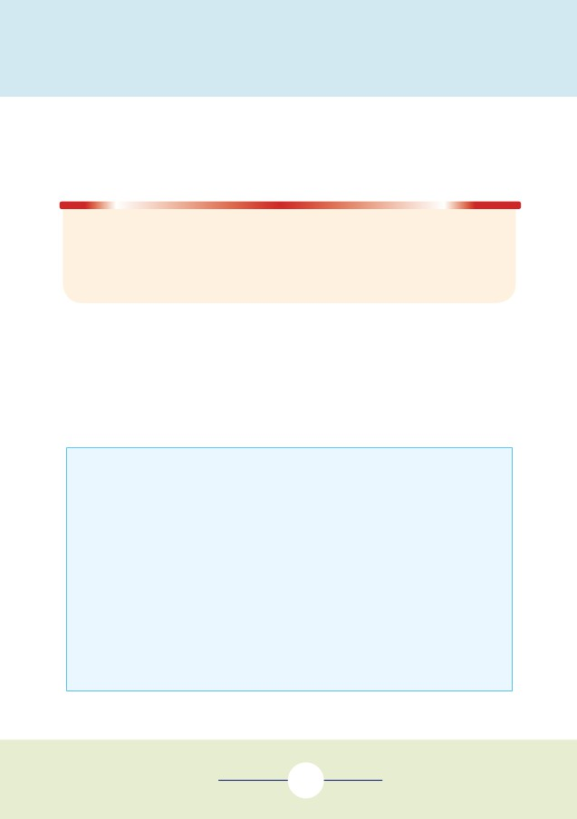
SURA YA PILI
Kujenga Uwezo wa Jamii Kupitia Sheria
Lengo Kuu
Kujenga uwezo wa jamii kutumia sheria kama nyenzo ya kulinda, kutetea, kutafuta na
kutekeleza haki.
Malengo Mahsusi
Kuhakikisha kwamba, baada ya kumalizika kwa mafunzo ya mada hii washiriki watakuwa
na:
a. Ufahamu kuwa sheria ni chombo cha kulinda, kutetea, kutafuta na kutekeleza haki
b. Ufahamu wa namna ya kuwawezesha wananchi kutumia sheria kulinda, kutetea,
kutafuta na kutekeleza haki
Mada hii imegawanywa katika sehemu kuu 2:
➣ Sehemu ya 1: Kujenga Uelewa wa Sheria kwa Jamii
➣ Sehemu ya 2: Kujenga Ujuzi wa jamii kutumia Sheria
SEHEMU YA 1: Kujenga Uelewa wa Sheria kwa Jamii
Malengo Mahsusi:
ü Kufafanua maana na umuhimu wa kujenga uelewa wa jamii kuhusu sheria kama
nguzo muhimu katika kujenga uwezo wa jamii kupitia sheria.
ü Kufafanua mbinu ya kujenga uelewa wa sheria kwa jamii.
Jinsi ya Kuendesha
Mwezeshaji uliza maswali ya jumla kwa washiriki kubaini uelewa wao juu wa
sheria mbalimbali. Hakikisha unapata ushiriki wa wote wakati wa kupokea majibu:
1. Kama raia ni sheria zipi mnazozifahamu?
2. Ni kwa kiwango gani sheria zilizopo zinafahamika katika jamii?
3. Je, wahusika katika kusimamia sheria ni nani?
4. Je, haki za kisheria zinasimamiwa au kutekelezwa kwa kiwango gani katika jamii
yenu?
5. Je, ni hatua gani huchukuliwa na jamii pale haki za kisheria zinapokiukwa?
6. Nani ni wahusika katika kusimamia utekelezaji wa sheria?
Mwezeshaji kwa kushirikiana na washiriki wajadili njia muafaka kutoa elimu ya
uelewa wa sheria kwa jamii husika kwa kutathmini faida na mapungufu ya kila mbinu
inayopendekezwa. Lengo ni kusaidia washiriki wajue umuhimu wa kutumia njia sahihi
kufikisha elimu ili kuleta ufanisi na kuepuka madhara yanayoweza kutokea.
Maana
Uelewa wa Sheria ni uwezo wa jamii fulani kujua sheria mbalimbali na uhusiano wa sheria
hizo na maisha yao ya kila siku. Mara nyingi uelewa wa kisheria huwafanya wananchi
14
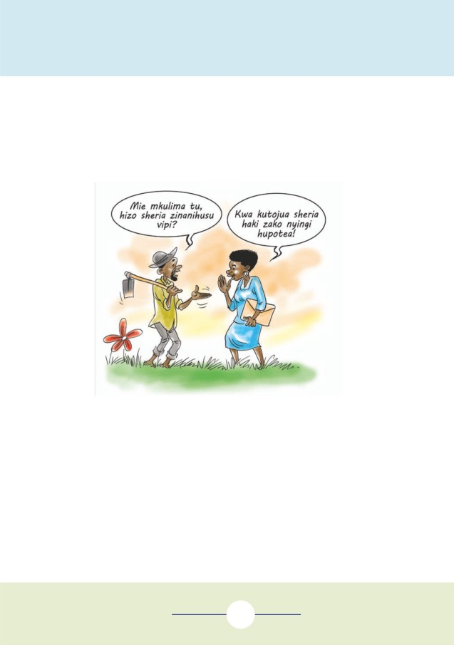
kung’amua kuhusu ushiriki wao katika utungwaji wa sheria na pia utawala wa sheria.
Kwa maana pana, zaidi uelewa wa sheria utaonekana iwapo wananchi watakuwa na uwezo
wa:
➣ kuchang’anua sheria
➣ kufuatilia mchakato wowote wa kisheria
➣ kuangalia ni kiasi gani cha rasilimali kimewekwa kuhakikisha kuna usimamizi na
utekelezaji wa sheria
Kwa maana nyingine, jamii isiyo na uelewa wa kisheria itaona kuwa sheria hazifahamiki na
watu, watu hawashiriki katika kutoa maoni wakati wa utungwaji wa sheria na pia hakuna
rasilimali toshelevu kuwezesha utekelezaji wa sheria hizo.
Haki za watu ikiwemo mali na nyezo zake za kiuchumi zinaposhindwa kulindwa na sheria,
mtu huyu huishi mazingira hatarishi, hukosa usalama na kuwa na uwezo mdogo katika
uzalishaji. Kwa maana hiyo, ‘Uelewa wa Sheria’ unabeba maana pana zaidi kuonyesha
umuhimu wake katika maendeleo na ukuaji wa kiuchumi wa mtu au kundi la watu.
Mbali na mambo mengine, kipengele muhimu sana katika kuongeza uelewa wa sheria kwa
jamii ni utoaji wa elimu. Utoaji wa elimu ya kisheria ni muhimu sana kwa kuwa mbali na
watu kupata elimu, pia jamii itaweza kupata taarifa muhimu kuhusu sheria. Cha muhimu
ni kuhakikisha taarifa hizi zinatolewa kwa wakati na kwa usahihi.
Uelewa wa sheria kwa kundi la wanawake pia ni muhimu sana kwa kuwa kundi hili
limebaguliwa na kutengwa kufikia haki nyingi. Ni jukumu la Serikali na asasi za kiraia
kutoa elimu kwa makundi mbalimbali yaliyo na changamoto ili yaweze kufikia huduma za
kisheria.
15
Faida za Uelewa wa Sheria kwa jamii
Uelewa wa sheria kwa jamii una faida kubwa zifuatazo:
➣ kujenga uwezo wa jamii kujiamini na kudai haki za kisheria pale zinapokiukwa
➣ kuimarisha uwajibikaji wa taasisi na vyombo mbalimbali
➣ husaidia kutolewa kwa fidia halisi katika ngazi zote
➣ wananchi kufahamu wajibu wao, kisheria, na kuuheshimu
➣ kupunguza kuwepo kwa mgongano kati ya wanainchi na sheria
➣ wanainchi kujenga imani na vyombo vya utoaji haki
Kuandaa Programu ya kujenga Uelewa wa Sheria
Ziko njia mbalimbali zinazoweza kutumika kuandaa Programu ya kujenga uelewa wa
sheria kwa jamii:
1.
Andaa programu ya sheria kwa kuzingatia mahitaji ya jamii. Mfano kama
programu inahusu wanawake au watu wanaoishi na ulemavu, basi mahitaji yao ndio
yatakayoangaliwa zaidi. Kama wengi wa wanajamii hawajui kusoma na kuandika
ni muhimu kuandaa programu kwa kutumia vipindi vya radio au vikundi vya
uhamasishaji.
2.
Hakikisha sheria husika zinatafsiriwa kwa lugha nyepesi na inayoeleweka na
kusambazwa kwa jamii.
3.
Ni muhimu kuhakikisha ushirikishwaji wa jamii husika katika programu
iliyoandaliwa. Ushirikishwaji wa jamii utasaidia kujenga jamii inayobeba jukumu la
kuwa wanamabadiliko na si kutegemea mabadiliko yanaletwa na mtu au kundi la
watu wengine.
4.
Makundi mbalimbali ya jamii yashirikishwe katika program ya uelewa wa sheria bila
kusahaulika. Mfano ni
➣ umuhimu wa kushirikisha vijana wa kike na kiume, wazee, wanawake
➣ kushirikisha makundi katika nyanja zote kama wasaidizi wa kisheria,
wafanyabiashara, watoa huduma, wasanii, viongozi wa dini,wanahabari, wazee
wa mila, shule n.k
5.
Andaa taarifa zingine muhimu kwa lugha nyepesi na lugha inayofahamika na
makundi yote na kisha kuisambaza kwa jamii. Kuandaa taarifa kwa maandishi au
kusambaza taarifa kwa njia mbadala. Mfano taarifa juu ya njia ya kutafuta na kupata
haki bila msaada wa mwanasheria, njia ya kujieleza mahakamani, njia ya kusuluhisha
migogoro, wajibu wa jamii katika kuheshimu sheria nk.
6.
Hakikisha serikali katika ngazi zote inakubali na kushiriki kusaidia utekelezaji
wa programu ya uelewa wa sheria. Mfano kushirikisha wasimamizi wa utekelezaji
wa sheria katika mafunzo au kama wakufunzi Mfano polisi, mahakama, mabaraza ya
kata, kamati maalum katika ngazi zote.
7.
Mara nyingi kuongezeka kwa uelewa wa sheria hupelekea baadhi ya watu kuibua
matatizo ya sheria yaliyowapa na hivyo kuhitaji huduma ya msaada wa sheria au
ushauri zaidi. Hakikisha huduma hizi zinawafikia kwa kutoa taarifa juu ya taasisi
zinazotoa huduma hizi au andaa mazingira maalum kuhakikisha wananchi hao
wanapata msaada zaidi wa sheria.
16
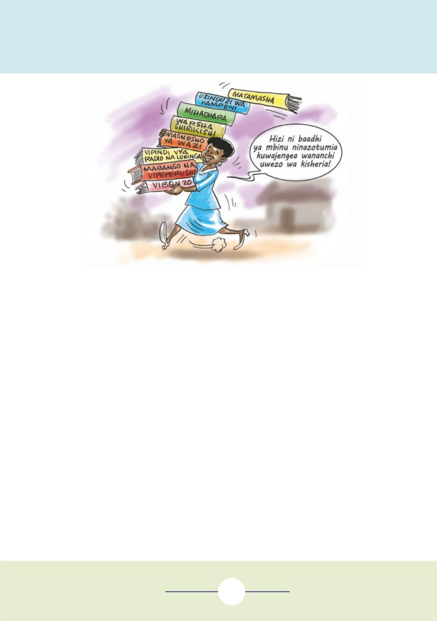
Njia za kujenga Uelewa wa Kisheria kwa jamii
Ziko njia mbalimbali zinazoweza kutumika kutoa uelewa wa sheria kwa jamii.
Baadhi ya njia hizo ni:
➣ Kuandaa matamasha ya utoaji elimu
➣ Uzinduzi wa kampeni
➣ Kufanya mhadhara
➣ Kuandaa warsha shirikishi
➣ Kufanya maonyesho ya wazi
➣ Kuandaa vipindi vya radio na luninga
➣ Kuandaa mabango na vipeperushi
➣ Kuweka michoro ya ukuta maeneo ya shule, biashara au barabarani
➣ Kuandaa maonyesho ya picha
➣ Kuandaa michoro ya vibonzo
➣ Kutumia ubao wa matangazo kuweka taarifa muhimu hasa kwenye majengo au ofisi
za serikali
Kubainisha vipingamizi katika kufikia Uelewa wa Sheria
Kwa kuwa lengo la kujenga uelewa wa sheria kwa jamii hulenga pia kuleta mabadiliko
kuhusu mwenendo wa watu na taasisi husika basi vipingamizi huweza kutokea.
Ni vizuri kubainisha vipingamizi na kuwa na mikakati ya kuvishughulikia. Uzoefu
unaonyesha vipingamizi vyaweza kusababishwa na elimu duni kwa jamii, umaskini au
vikwazo vya kiuchumi, lugha, misimamo inayotokana na mila, desturi na tamaduni, imani
na itikadi zinazoleta mitazamo tofauti, hali ya kisiasa na mwamko duni wa jamii kwa ujumla.
Mafanikio ya kuwepo kwa uelewa wa sheria
Ni vizuri kutathmini kama kuna matokeo chanya kwa jamii iliyolengwa kufikiwa katika
kupata uelewa wa sheria. La muhimu ni je, watu kwa kuitumia mfumo wa sheria, wanaweza
kujiongoza wenyewe na kuelewa kwa umakini kila hatua wanayoichukua?. Kama jibu kwa
17
swali hili litakuwa ni ‘Ndiyo’ basi hii ni dalili nzuri ya kuwepo kwa uelewa wa kutosha wa
sheria.
Kipimo cha kuwepo kwa mafanikio ya uelewa wa sheria ni iwapo jamii:
➣ Inatambua haki na wajibu katika sheria
➣ Ina uwezo wa kutambua tatizo la kisheria linapotokea na jinsi ya kulishughulikia
➣ Inachukua hatua muafaka kushughulikia tatizo
➣ Inafahamu mahali sahihi pa kupata taarifa kuhusu sheria na kuzipata
➣ inafahamu muda muafaka na mahali sahihi pa kupata msaada wa kisheria
➣ Ina imani na mfumo wa sheria katika kutoa haki
➣ Ina uelewa wa mchakato wote wa kufikia haki na kuona haki inafikiwa
Mbinu zilizooonyesha mfanikio
a.
Mafunzo ya wawezeshaji
Kuandaa mafunzo ya wawezeshaji kwa wanajamii kupitia warsha kutasaidia kujenga
timu ya wawezeshaji wenye ujuzi. iwapo watachaguliwa toka katika vikundi mbalimbali
vya jamii basi wataweza kupeleka elimu na ujuzi katika vikundi vyao na pia kwa jamii
wanayoshirikiana nayo. Baada ya kukamilisha mafunzo ni vizuri wawezeshaji wakaandaa
mpango kazi utakaotumika kueneza uelewa wa sheria kwa jamii husika. Pale inapowezekana,
ufanyike uchambuzi wa mahitaji muhimu kama vifaa vinavyohitajika kufanikisha shughuli
zao.
b.
Mafunzo kwa Jamii
Mafunzo ya jamii ni muhimu yakaandaliwa katika ngazi ya kaya au kijiji na yakafanyika kwa
kuwepo kwa makubaliano kati ya wawezeshaji na jamii. Maandalizi yazingatie muda, mahali
na nyenzo sahihi zinazohitajika ili kufanikisha kuwepo kwa uelewa wa sheria.
c.
Kusaidia shughuli za utetezi na ushawishi
Mara nyingi wanajamii wanapopata uelewa wa sheria huanza kushawishi mabadiliko ya sera,
kanuni au tabia toka kwa viongozi wao. Ni muhimu ukawepo utaratibu wa kusadia harakati
hizo kwa kutoa ushauri sahihi, kuandaa machapisho, mafunzo na kutoa rasilimali muhimu
hata kwa uchache kutia moyo jitihada zinazofanywa na vikundi.
d.
Huduma ya kujitolea
Ni vizuri kutumia fursa iliyopo kwa kukaribisha wanafunzi walio vyuoni au waliohitimu
fani ya sheria katika ngazi yeyote kutoa msaada wa kitaalamu kwa mashirika, vikundi na pia
kusaidia kutoa elimu kwa jamii.
Wanafunzi wa sheria wanaweza kusaidia kuandaa vijarida vya sheria vitakavyotumika
kutoa elimu, kufanya tafiti katika jamii, kuwezesha semina na warsha, kuandaa nyaraka
za mahakamani na kusaidia ufuatiliaji wa miradi. Mbali na wanafunzi kuwa na uwezo wa
kuisadia jamii, pia watapata fursa ya kujenga uwezo wao kitaaluma. Mara nyingi kupitia
shughuli za jamii wasomi huweza kuchagua kwa usahihi zaidi wapi uwe mwelekeo wao wao
kitaaluma.
18
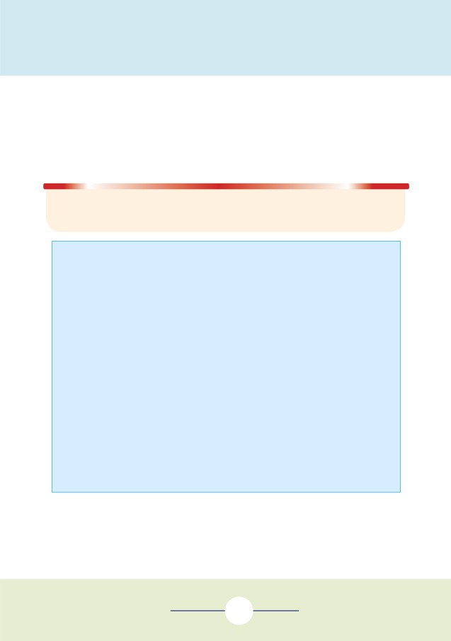
e.
Kufanya ufuatiliaji na tathmini ya shughuli
Ili kufanikisha shughuli katika kujenga uelewa wa jamii kuhusu sheria ni vyema kufanya
ufuatiliaji wa kila shughuli ili kuona kama kuna mafanikio yaliyopatikana. Kama ni
mafunzo, basi kubainisha ni kwa kiwango gani washiriki wameongeza uelewa juu ya sheria
tofauti na hapo awali. Mara nyingi ufuatiliaji husaidia kurekebisha upangaji na uendeshaji
wa shughuli zijazo.
Tathmini kwa upande mwingine hutoa nafasi ya kuona kama kuna matokeo yaliyozaliwa
kutokana na shughuli zilizofanywa.
SEHEMU YA 2: Kujenga Uwezo wa jamii kutumia Sheria
Malengo Mahsusi:
ü Kufafanua umuhimu wa kutumia uelewa wa sheria kuleta mabadiliko.
ü Kujenga ujuzi wa jamii kuitumia sheria kukuza maendeleo na kuboresha maisha yao
Jinsi ya Kuendesha
Mwezeshaji awagawe washiriki katika makundi kisha toa maswali ili wajadiliane na
kujibu yafuatayo
1. Je unalinda vipi nyumba, ardhi yako, simu yako au kitu chochote ambacho ni
mali yako?
2. Kwa nini watu wenye kipato cha chini, mara nyingi huishi katika nyumba
ambazo hazina hati rasmi na kusajiliwa?
3. Kwa nini ardhi za kijiji nyakati nyingine huchukuliwa na wawekezaji bila idhini
au ushirikishwaji wa wanavijiji kupitia mkutano mkuu wa kijiji?
4. Kwa nini wafanyabiashara ndogondogo wengi hufanya kazi zao maeneo yasiyo
ruhusiwa na bila leseni za biashara?
5. Ni fursa zipi ambazo zipo katika jamii ambazo wanadhani sheria imekuwa
ikiwakwamisha kuzitumia kwa manufaa yao kiuchumi, kijamii na kisiasa?
Mchango wa Mwezeshaji
Mwezeshaji toa mchango wako kwenye dhana ya Kujengea Uwezo Jamii Kupitia Sheria.
Anza na utangulizi, kisha endelea kufafanua dhana muhimu kwenye ujengeaji jamii
uwezo wa kisheria kama inavyoonekana hapo chini.
Ni vizuri mwezeshaji kutumia mifano hai inayoweza kusaidia jamii kuelewa vizuri juu ya
uwezo wa kisheria kwa jamii kupitia haki ya kumiliki mali. Washiriki waelezwe umuhimu
wa kubuni njia mpya zinazoweza kuongeza ujuzi kwa wanajamii kuhusu jinsi ya kuitumia
sheria.
Utangulizi
Kujenga ujuzi wa jamii kupitia sheria, kunahusisha utumiaji wa sheria kuongeza/kukuza
uwezo wa watu na jamii kutawala maisha yao kupitia elimu ya sheria na hatua za kisheria.
Hii ina maanisha mtu anakuwa na ujuzi na maarifa ya kutumia uelewa wa sheria alionao
kubadilisha maisha yake na yale ya jamii inayomzunguka. Ujuzi na maarifa huongeza na
hujenga uwezo wa mtu kisheria. Pia kupitia sheria, dhana ya utawala wa sheria inapanuliwa
kuinufaisha jamii yote kwa ujumla, matajiri kwa masikini, wanaume kwa wanawake, waishio
mijini na vijijini, bila kujali kuwa ni kundi la wengi au wachache.
19
Ujengwaji uwezo hutokea kwa mtu au kikundi cha watu pale hatua fulani zinapofanyika
kukuza nafasi ya mtu au kikundi katika kufanya uchaguzi juu ya jambo fulani. Hii
inahusisha kuimarisha uwezo wa mtu au jamii kufikiri na kwa makusudi kufanya uchaguzi
kwa kubashiri kulingana na rasilimali walizonazo, ikiwamo mali, uwezo na mitazamo na
uwezo ambao unajengwa kupitia fursa zilizoundwa katika sheria. Hivyo ujengewaji uwezo
huangaliwa kama hatua na matokeo.
Kubadili Mtazamo
Sheria na kanuni zimekuwa zikitazamwa kama kikwazo katika kufikia haki. Ili kuifanya
sheria imnufaishe kila mtu, sheria na kanuni zinatazamwa kama chombo kikuu cha
kuwajengea uwezo watu wenye kipato cha chini. Hili si suala la haki kuimarishwa, bali
kuwapa watu wenye kipato cha chini uwezo wa kutambua haki zilizopo katika mifumo ya
sasa na kupambana na mifumo iliyopo inayozuia upatikanaji na utekelezaji wa haki hizo.
Walengwa wa kupatiwa Uwezo kupitia sheria
Walengwa wa kupatiwa uwezo wa sheria ni kila mwanajamii ambaye hana ufahamu wa
umuhimu na juu ya sheria zinazomzunguka. Tofauti inaweza kuwepo kuhusu kiwango
cha uhitaji na uwezo wa mtu mmoja mmoja kufikia kiwango cha uwezo wa sheria. Mara
nyingi watu maskini na wale wanaoishi katika mazingira magumu au kupitia changamoto
za kimaisha, wamekuwa wakipewa kipaumbele zaidi. Neno masikini, katika hali ya kawaida,
huzungumzwa katika muktadha wa kipato na mali. Lakini ili kuwapa watu uwezo kisheria,
uwezo unaozungumziwa ni wa mtu masikini kuweza kutawala maisha yake. Hivyo basi,
masikini ataweza kutawala maisha yake si kwa kutatua ukandamizwaji wa kiuchumi pekee,
bali pia ukandamizwaji wa kijamii na kisiasa.
Nguzo Nne za Kuwapa Jamii Maskini na Watu Wenye Kipato cha Chini Uwezo
Nguzo kuu nne zilibuniwa na Tume kuhusu kuwapa watu maskini uwezo, kupitia sheria,
kama ajenda kuu ya utekelezaji katika kuwapa watu uwezo kupitia sheria ambazo ni lazima
zipewe nafasi katika juhudi zozote za kitaifa na kijamii za kuwapa watu wenye kipato cha
chini ulinzi na fursa ya kujiendeleza.
Mpango wa kuwapa watu uwezo kupitia sheria unaweza kutimia tu kupitia mabadiliko ya
mifumo yanayolenga kuwapa watu fursa ya kutumia uwezo wao wa kiraia na kiuchumi.
Nguzo hizi nne ni:
1. Upatikanaji wa Haki na Utawala wa Sheria
2. Haki ya Kumiliki Mali
3. Haki za Mahali pa Kazi
4. Haki za Biashara
Nguzo ya Kwanza: Upatikanaji wa Haki na Utawala wa Sheria
Haki ya kwanza miongoni mwa haki zote ni haki inayotoa hakikisho la kupatikana haki
zingine zote: kutendewa haki na utawala wa sheria. Uwezo wa kupitia sheria hauwezi
kupatikana wakati watu masikini wananyimwa mfumo bora wa kisheria, aidha kupitia
sheria mbovu au kupitia haki. Haki na majukumu ya jamii yanapotekelezwa kupitia sheria
bora, kunakuwa na manufaa yasiyo na kipimo kwa kila mtu, hasa wenye kipato cha chini.
20
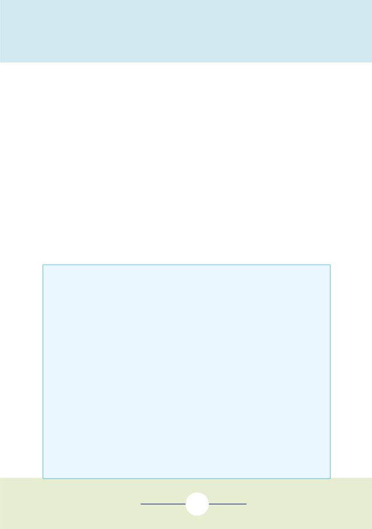
Kuhakikisha upatikanaji wa haki sawa si suala rahisi. Hata kama mfumo wa sheria unatambua
usawa wa watu wote katika katiba, upatikanaji wa haki sawa unaweza kufikiwa tu kupitia
kujitolea kabisa kwa serikali na taasisi za umma katika utekelezaji. Kwenye nguzo hii ya
kwanza, hatua za kuwapa watu uwezo kupitia sheria lazima zihakikishe mambo yafuatayo:
➣ Kuhakikisha kwamba kila mtu anapata haki ya kutambuliwa kisheria kwa
kuandikishwa baada ya kuzaliwa.
➣ Kuondoa au kubadilisha sheria zinazokinzana na haki, maslahi, na riziki za watu
masikini.
➣ Kufadhili na kubuniwa kwa mashirika ya serikali na makundi ya kiraia ikiwemo
makundi maalum ya kuwasaidia, kisheria, watu waliotengwa;
➣ Kubuni vyombo halali vya dola vya kushinikiza utekelezaji wa sheria, kwa mfano
kupitia idara ya polisi isyoegemea upande mmoja;
➣ Kuhakikisha upatikanaji rahisi wa huduma za mahakama rasmi, mifumo ya usimamizi
wa ardhi, na taasisi zingine husika za umma, kwa kutambua na kujumuisha sheria
zisizo rasmi zinazozingatiwa na watu mashinani, ambazo watu masikini tayari
wanazielewa;
➣ Kuhimiza mahakama kuzingatia maslahi ya watu masikini;
➣ Kuunga mkono njia za mbadala za kutatua mizozo miongoni mwa watu;
➣ Kubuni taasisi za kuwasaidia watu kupata huduma za kisheria, ili watu wenye kipato
cha chini wawe na ufahamu wa sheria na wazitumie kwa manufaa yao;
➣ Kuunga mkono hatua madhubuti za kuwapa uwezo, kupitia sheria, wanawake, jamii
za watu walio wachache, wakimbizi, watu waliopoteza makazi yao na jamii za kijadi.
Shirika:: Women Legal Aid Centre (WLAC)
Mradi: Kampeni ya TUNAWEZA
Lengo: Kutokomeza Ukatili wa Kijinsia katika jamii
Shughuli:
1. Msaada wa Kisheria
2. Elimu ya uelewa wa sheria kwa wanawake wenye migogoro ya kisheria
Huduma ya msaada wa kisheria na elimu ilitolewa kwa Aisha K. (miaka 52) aliyesaidiwa
kufungua shauri la mirathi Mahakama Kuu ya Tanzania mwaka 2009. Mbali na kupewa
huduma ya msaada wa sheria WLAC Aisha alipokea elimu ya mirathi na haki za kisheria
kupitia mafunzo yanayotolewa kwa wateja siku za huduma. Elimu hiyo imempa uwezo
wa kujiamini. Aisha aliamua kutoa elimu aliyopata kwa wanawake wengine katika
eneo la Manzese anakoishi. Mara kadhaa Aisha amewaleta wanawake wenye uhitaji
wa kisheria kupata ushauri WLAC na wengine wameweza kufungua kesi kutokana na
matatizo waliyokuwa nayo. Aisha huwasindikiza wanawake mpaka WLAC na kuhakikisha
wamehudumiwa ipasavyo.
Mafanikio:
Maisha ya Aisha yamebadilika kabisa, kwani amekuwa mwanamabadiliko katika jamii yake
kwa kujituma kusaidia wanawake wanaopitia changamoto za kisheria. Umri wa miaka 52
alionao si kikwazo cha kuendeleza harakati zake kwa jamii. Wanawake zaidi wananufaika
kupitia kwake.
21
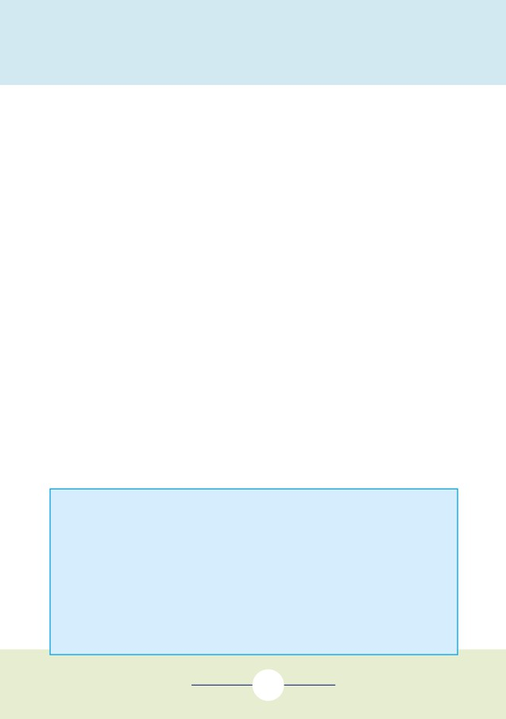
Nguzo ya Pili: Haki ya Kumiliki Mali
Kumiliki mali mtu binafsi au kwa vikundi ni haki ya binadamu. Mfumo halisi wa kusimamia
umiliki wa mali unajumuisha vyombo vinne:
➣ Sheria zinazoeleza haki na wajibu kati ya watu na mali,
➣ Mfumo wa utawala
➣ Soko la kubadilishana mali linalofanya kazi;
➣ Chombo cha sera za kijamii.
Kila moja ya vyombo hivi, kinaweza kukosa kuwafaidisha watu wenye kipato cha chini au
hata kuwakandamiza. Mfumo unapofanya kazi vizuri, unakuwa chombo cha kuwajumuisha
watu wenye kipato cha chini katika uchumi rasmi, na wanapata njia ya kujiimarisha kijamii.
Ikiwa mfumo mzima unashindwa kufanya kazi au hata mojawapo wa vyombo tanzi, watu
wenye kipato cha chini wananyimwa fursa na kubaguliwa.
Ili mali ziweze kutumika kuleta faida, zinahitaji kutambuliwa rasmi katika mfumo
unaojumuisha haki za mtu binafsi au makundi ya watu kumiliki mali. Hii inajumuisha:
-
kutambua haki za jamii katika ngazi za chini
-
Kuhifadhi kumbukumbuku ya haki hizi, stakabadhi na mikataba kulingana na sheria
kunahakikisha usalama wa mali kwa familia na biashara.
-
Watu waondolewe kwa nguvu kwenye mali zao ikiwa tu kuna hatari ya usalama wa
maisha au mali, au makubaliano ya mkataba yamekiukwa au chini ya taratibu za
haki za utawala. Fursa ya mhusika kukata rufani lazima iwepo, na mhusika alipwe
gharama za kuhamishwa kulingana na utaratibu.
-
Kutambulika kwa mali kuwape watu fursa ya kujiendeleza kupitia mikopo
iliyodhaminiwa na mali zao.
-
Kumbukumbu ya taarifa za umiliki wa mali zinapohifadhiwa, mipango iliyofanyika
katika nyakati na sehemu tofauti inakuwa chini ya mfumo mmoja wa sheria na
kuleta uwiano. Hii inasaidia kuleta pamoja masoko ya kijamii, na kuwezesha biashara
kupanuka zaidi pamoja na kuziweka chini ya mipango ya sheria inayotambulika
rasmi na hivyo kulindwa na sheria iliyopo.
Shirika: Morogoro Paralegal Centre (MPCL)
Jina la mradi: Mama Ardhi
Lengo la mradi: Kujengea jamii uelewa kuhusu sheria za ardhi na umiliki wa ardhi kwa
jamii hususani wanawake.
Mfadhili: Action Aid Tanzania
Eneo la mradi:
Mradi ulipangwa kutekelezwa katika vijiji 10 vya mkoa wa Morogoro ambavyo ni
Mvuha, Dalla, Lukulunge, Kikundi, Kiloka, Kiziwa, Kibangile, Mtamba, Kongwa na
Tawa. Wakati wa utekelezaji wa mradi kijiji cha Tawa kiliachwa kutokana na kugawanywa
kuwa vijiji viwili.
22
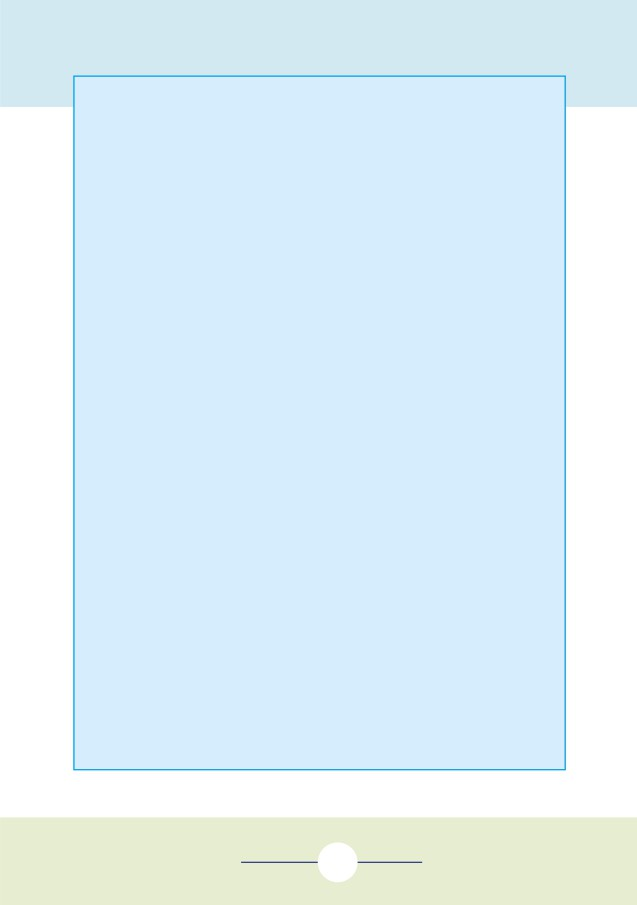
Yaliyofanyika:
1. Elimu kwa jamii kuhusu sheria za ardhi, katika kutoa elimu hiyo makundi
yafuatayo yalifikiwa
i.
Halmashauri ya Kijiji
ii.
Wajumbe wa mabaraza ya ardhi vijiji na kata
iii. Madiwani
iv. Wananchi katika maeneo ya mradi
2. Kupima vijiji. Vijiji vipatavyo 9 viliweza kupimwa
3. Kufanya mpango wa matumizi bora ya ardhi
4. Kujenga majengo ya masijala katika vijiji 9
5. Kununua vifaa vya Masijala
6. Kuandikisha watu kwa ajili ya hati miliki za kimila
Mafanikio
1.
Mradi ulifanikiwa kufikia vijiji 9 kati ya 10, kwa maana hiyo mradi ulifanikiwa
kwa asilimia 90. Wanainchi wenyewe kwa sehemu kubwa ndio waolifanikisha
mradi huu.
2. Wanajamii walijitokeza na kujiandikisha kupata hatimiliki za kimila, hati
zipatazo 710 zilitolewa, ambapo 450 zilitolewa kwa wanaume, 200 wanawake
na 60 umiliki wa pamoja.
3. Viongozi ambao walikiuka sheria kwa kugawa ardhi bila kufuata taratibu
kuwajibishwa.( mwenyekiti kijiji cha Dalla )
4. Diwani kijiji cha Mtamba alichangia mabati20 kuongeza ukubwa wa masijala
ambapo wasaidizi wa kisheria wamepatiwa ofisi.
5. Diwani kutoka Konde, kijiji ambacho hakikuwa kwenye mradi amehamasika
kufanyiwa mchakato na tayari ameshatoa mabati 10 kujenga masijala na MPLC
tumeanzisha kituo kidogo cha wasaidizi wa kisheria.
Changamoto
1. Mradi ulipokwisha MPLC inaendelea kuhamasisha jamii.
2. Ukosefu wa rasilimali fedha ni kikwazo kikubwa.
3. Viongozi kubadilishwa hususani wale wa kiserikali wenye dhamana kisheria na
kupelekea ugumu katika kuhamasisha upatikanaji wa hati miliki za kimila.
4. Mchango wa rasilimali fedha toka serikalini ulikuwa mdogo.
23
Hatua za Kuwapa watu uwezo kupitia sheria ya haki za kumiliki mali lazima izingatie
mambo yafuatayo:
i.
Kuhimiza usimamizi bora wa mali zinazomilikiwa na watu binafsi au makundi ya
watu ili kuleta pamoja shughuli za kiuchumi zisizotambulika rasmi kisheria, na zile
zinazotambulika katika sheria iliyopo, pamoja na kuhakikisha usawa.
ii.
Kuhakikisha kwamba mali inayomilikiwa inatambulika na kulindwa kisheria na
kwamba wamiliki wote wanapata haki sawa.
iii.
Kuhakikisha kwamba kuna soko au taasisi za kubadilishana mali kwa watu wote lenye
uwazi na uwajibikaji.
iv.
Kuongeza wigo wa haki za kumiliki mali, kujumuisha upatikanaji wa kibali cha
kumiliki, kupitia mipango ya kijamii au mipango mingine ya umma kama vile
upatikanaji wa nyumba, mikopo yenye viwango vya chini vya riba, na ugavi wa ardhi
ya umma.
v.
Kuhimiza mfumo wa wa haki za kumiliki mali, unaotambua mali zilizonunuliwa na
wanaume zinamilikiwa kwa pamoja na wake zao.
Nguzo ya Tatu: Haki za Mahali pa Kazi
Watu masikini hutumia muda mwingi mahali pa kazi huku kipato bado hakitoshi kumudu
maisha. Uhalali au kukubalika kwa uchumi kunategemea haki za msingi za ajira, sawa na
uwezo wa kufanya kazi unaohitajika ili uchumi kukua. Pia kuimarika kwa haki za kazi na za
kijamii, kunategema soko la kiuchumi lenye ufanisi na linalofanya kazi vizuri. Hii inaendana
na kubadili mtindo wa siku zote wa uzalishaji duni, mapato ya chini na kuhatarisha maisha
kazini na nafasi yake kuchukuliwa na utekelezaji wa kanuni za kimsingi za haki mahali pa
kazi pamoja na ajenda ya mazingira bora ya kazi na mkakati wa kuhakikisha usalama na
fursa kwa wafanyakazi katika biashara zisizotambulika rasmi.
Hili linawezekana kwa njia zifuatazo:
-
Kuheshimu, kuhimiza na kutambua uhuru wa watu kujiunga na makundi au vyama
ili kuimarisha sauti ya uwakilishi wa wafanyakazi maskini katika midahalo ya kijamii
na kisiasa kuhusu mabadiliko na miundo yake;
-
Kuimarisha taratibu za kusimamia maswala ya ajira na namna taasisi za kuyasimamia
zinavyofanya kazi, na kuleta ulinganifu kati ya usalama, uzalishaji kwa watu masikini;
-
Kuhakikisha utekelezaji wa kisheria wa haki za wafanyakazi na wenye biashara
ndogondogo zisizotambulika rasmi.
Sera na Haki za Kimsingi Kazini
i.
Kuongeza upatikanaji wa ajira katika uchumi unaokuwa, kujumuisha watu wote kwa
usawa (wanawake, wanaume, vijana, wazee, walemavu, makundi ya watu wachache
n.k).
ii.
Kuimarisha mipango ya usalama wa mapato ya watu masikini kazini wakati
kunapokuwa na mtikisiko wa kiuchumi au mabadiliko kazini;
24
iii.
Kuimarisha hatua za upatikanaji wa matibabu, bima ya afya na mafao ya uzeeni.
iv.
Kuhakikisha kwamba hatua za kuwapa watu uwezo kupitia sheria, zinazingatia viwango
vya shirika la kazi duniani ambalo linalenga kuondoa ubaguzi dhidi ya wanawake na
kutoa nafasi za kazi, kwa usawa, kwa wanawake, ambao ni nguzo muhimu katika
kuangamiza umaskini.
Nguzo ya Nne: Haki za Kupata Kipato/Biashara
Watu wenye kipato cha chini wanapaswa kupata haki za mahali pa kazi na vile vile haki
ya kuendeleza biashara zao wao wenyewe. Hii inajumuisha haki zifuatazo kwa mjasiria
mali:
i.
Upatikanaji wa huduma za kifedha kwa watu wanaotaka kuanzisha biashara
ii.
Usalama wa mali
iii.
Uwezo wa kuwa na mikataba
iv.
Kufanya makubaliano ya kibiashara
v.
Kujenga mitaji kupitia ununuzi wa hisa
vi.
Kuhakikisha sheria ya usajili wa biashara inalinda riziki ya mwenye biashara wakati
wa hasara inapotokea.
vii.
Uwezekano wa vizazi vingine kurithi biashara.
Haki hizi ni lazima zipatikane kwa wenye biashara ndogondogo katika nchi inayostawi
kama Tanzania, ambako biashara nyingi kama hizi zinaendeshwa na wanawake na
zinaajiri sehemu kubwa ya nguvukazi. Mara nyingi kufanikiwa au kushindwa kwa sekta
hii ya biashara ndogondogo kunaleta tofauti kati ya ufanisi na mdororo wa kiuchumi;
nafasi nyingi za kazi na ukosefu wa ajira; kubuniwa kwa vyama vya wafanyabiashara na
ukosefu wa usawa katika biashara.
25
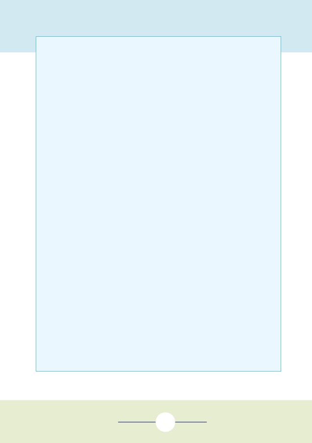
Mhusika: Equality for Growth (EfG)
Mradi: Sauti ya Mwanamke sokoni (2012-2014)
Malengo: Kujenga sauti na uchumi wa wanawake wafanyabiashara sokoni ili waweze kudai
uwajibikaji na utawala bora katika eneo la biashara
Eneo la mradi: Masoko 18 ya Dar-es-Salaam
Yaliyofanyika:
1. Kuanzisha huduma ya wasaidizi wa kisheria ambao ni wafanyabiashara wenyewe.
2. Kuanzisha vikundi vya kuweka na kukopa (VICOBA) kama vikundi vya kiuchumi
na kupokea elimu na ujuzi wa kisheria.
3. Kutoa elimu ya haki za binadamu na sheria kwa wanawake na viongozi katika
masoko.
4. Kusambaza taarifa na machapisho juu ya haki na sheria za soko.
5. Kusaidia hatua za kuleta mabadiliko masokoni ili kuimarisha uwajibikaji na
kuongeza nafasi za wanawake katika uongozi.
Mradi ulilenga kujenga uwezo wa wafanyabiashara kuelewa haki zao za kiuchumi na uwezo
wao kama raia katika kuleta mabadiliko katika masoko. Elimu ya sheria ilitolewa kwa
wanachama wa VICOBA vilivyoanzishwa na viongozi kupitia Kamati za soko.
Mafanikio:
1. Ongezeko la wanawake katika kugombea uongozi kwa asilimia 50 ikilinganishwa
na wale wa awali wa asilimia 30 wakichaguliwa kama viongozi katika masoko.
2. Kuongezeka kwa idadi ya matukio ya ukiukwaji wa haki za wanawake na
wafanyabiashara yanayoripotiwa katika vyombo vya utekelezaji wa sheria.
Wanafanyabiashara kuchukua hatua kufatilia haki zao.
3. Kubadilika kwa mitazamo na tabia kandamizi kwa baadhi ya viongozi wa masoko.
4. Kuongezeka kwa uwezo wa kiuchumi kwa wanawake ikiwemo kipato na kuendesha
biashara mbadala kutokana na kupungua kwa matukio ya bughudha za kijinsia
kwa wanawake. Hii imesaidia pia kujenga hali ya kujiamini kwa wanawake na
kufanya kazi kwa umoja, ili sauti zao zisikike.
5. Viongozi wa siasa kushughulikia kero za wanawake walio sokoni.
Changamoto:
1. Bajeti ya fedha inayotengwa na Manispaa kuhudumia masoko ni ndogo.
2. Kukosekana kwa usimamizi mzuri wa sheria zilizopo na mapungufu yake.
3. Kuendelea kwa mfumo dume unaolenga kuwakandamiza wanawake, ikiwemo
kuwanyima madaraka.
4. Usimamizi duni wa ukusanyaji wa ushuru na mapato ya soko unaodumaza ufanisi
wa masoko.
26
Hatua za kuwapa watu uwezo, kisheria, kupitia nguzo hii ya upatikanaji wa haki za kibiashara
ni lazima:
i.
Zitoe hakikisho la upatikanaji wa haki za kibiashara, ikiwa ni pamoja na haki ya
kuchuuza, kuwa na sehemu ya kufanyia biashara na mahitaji mengine, kama vile
vibanda umeme, maji na usafi;
ii.
Kuimarisha usimamizi bora wa kiuchumi unaorahisisha uwezekano wa kuanzisha na
kuendesha biashara, uwezekano wa kupata wanunuzi na uwezo wa kuacha biashara
hiyo panapo haja ya kufanya hivyo;
iii.
Kuhakikisha usajili wa biashara unatambua tofauti kati ya biashara hiyo na mali za
mtu binafsi, ili kuhakikisha usalama wa mali kama hizo endapo biashara itakumbwa
na matatizo kisheria.
iv.
Kuhakikisha wajasiriamali wanapata huduma muhimu za kifedha, kama vile benki
za kuweka akiba, mikopo, bima, malipo ya uzeeni na mbinu nyingine za usalama wa
biashara;
v.
Kuongeza nafasi za biashara, kupitia mipango maalum ya kuwahamasisha wajasiriamali
kuhusu masoko yanayoibuka, na kuwasaidia kufuata taratibu zinazohitajika na pia
mipango inayojenga uhusiano kati ya biashara ndogondogo na biashara kubwa.
Mwelekeo wa Kuwapa Watu Uwezo Kupitia Sheria
Mwezeshaji eleza kuwa ni muhimu kwa washiriki katika kufanikisha lengo la kuwapa watu
uwezo, kisheria, kuelewa kwa kina na mapana dhana hii. Katika kufanikisha hili, umasikini
ni muhimu uangaliwe kama ukandamizwaji katika uwezo na fursa badala ya kipato pekee.
Kwa mantiki hiyo, umasikini ni kiasi ambacho uwezo na fursa za mtu kufurahia na kuchangia
upatikanaji wa haki zake za msingi unazuiliwa na sababu zilizo nje ya uwezo wake.
Mifano ya Sheria Ambazo Zinawapa Watu Uwezo Kisheria
Zipo sheria nyingi Tanzania ambazo zinaweza kuleta tofauti katika kuwapa watu uwezo.
Baadhi zinawalenga watu wanaokandamizwa pekee na baadhi zinalenga makundi yote ya
watu. Sheria hizi zimeongelewa katika mada tofauti za kitabu hiki. Baadhi ya mifano ya
sheria zenye matokeo ya kuwapa watu uwezo ni:
a.
Katika Mali
➣
Sheria zinazopanua upatikanaji wa mikopo kwa dhamana ya mali isiyohamishika au
mali ambayo dhahiri.
➣ Sheria zinazorahisisha usajili, kwa mfano, usajili wa ardhi
➣ Sheria zinazoongoza usajili na zinazorahisha matumizi ya mali zinazohamishika katika
dhamana
➣ Sheria zinazotoa haki ya kumiliki mali pasipo vizuizi visivyo vya lazima katika
masharti, vibali, na taratibu.
➣ Sheria zinazozuia utwaaji wa mali binafsi kwa manufaa ya umma pasipo fidia kamili
na ya haraka.
➣ Sheria zinazotoa haki ya kumiliki mali pasipo vizuizi visivyo vya lazima katika
masharti, vibali na taratibu.
➣ Sheria zinazozuia utwaaji wa mali binafsi kwa manufaa ya umma pasipo fidia kamili
na ya haraka.
27
➣
Sheria zinazoruhusu watu wasio na makazi rasmi kupata haki katika ardhi waliyotwaa
na kutumia kwa amana.
➣
Sheria zinazoweka utaratibu mzuri, kisheria, kwa watuamiaji wa ardhi, aidha rasmi
ama siyo rasmi, ambao wapo katika hatari ya kufukuzwa au kunyang’anywa ardhi
hiyo.
➣
Sheria zinazozuia ubaguzi dhidi ya makundi yaliyo pembezoni.
b.
Katika Biashara
➣
Sheria zinazounda utaratibu kwa ajili ya kutoa ushauri na kuzitegemeza biashara
ndogo na mpya zikue.
➣
Sheria zinazotengeneza fursa kwa biashara ndogo na kuanzisha mpya kupitia miradi
na mikataba ya serikali.
➣
Sheria za manunuzi ya bidhaa na huduma ambazo zinatoa fursa ya ushindani kwa
wafanyabiashara wadogo na manufaa kwa wafanyabiashara wakubwa kwa wadogo.
➣
Sheria zinazotoa nafuu ya gharama za upatikanaji wa leseni za biashara na kuondoa
vigezo vya viwango vya ubora ambavyo ni vya kibaguzi.
➣
Sheria za mashirika na makampuni zinazolinda haki za wanahisa.
➣
Sheria zinazoweka taratibu fasaha za kusitisha mkataba wa ajira dhidi ya mfanyakazi.
c.
Familia
➣
Sheria zinazoimarisha haki za wanawake, hasa wajane na watalakiwa pamoja na
watoto wa kike katika umiliki wa mali
➣
Sheria zinazowalinda yatima dhidi ya unyang’anyi wa mali unaofanywa na walezi na
wanafamilia
d.
Haki za Kisiasa
➣
Sheria zinazoongeza uhuru wa watu kukusanyika kwa madhumuni ya kisiasa
➣
Sheria zinazopanua haki ya kupiga kura na kuondoa vikwazo vya upigaji kura
➣
Sheria zinazoruhusu wananchi kuwawajibisha viongozi waliowachagua
➣
Sheria zinazowapa fursa wananchi kuchangia maoni katika kuandaa bajeti ya serikali
za mitaa
e.
Utekelezaji wa Sheria
➣
Sheria zinazokuza njia mbadala za utatuzi wa migogoro, aidha za kisiasa au za
kitamaduni na kutambua makubaliano yanayoafikiwa.
Mwelekeo Katika Kuwapa Watu Uwezo Kupitia Sheria
i.
Mwelekeo wa Kiuchumi
Ili kuwajengea uwezo watu, hasa katika uwezo wa kufanya biashara, uanzishaji na utekelezaji
wa haki za umiliki wa mali na za wafanyakazi ni muhimu sana. Tokeo la kuwa na mfumo
imara wa umiliki na uhifadhi wa mali na kuchangia kukuwa kwa pato la mwananchi
hauchangiwi na uwepo wa sheria bora pekee, bali pia utaratibu mzuri wa namna gani ya
kushawishi tabia ya mtu mmoja mmoja na ushirika.
Mabadiliko ya sheria pekee hayawezi kukagua kukua kwa biashara au kuhakikisha ulinzi na
uhifadhi wa mali ambayo ni muhimu katika uwekezaji na uzalishaji.
28
Jitahada za kuanzisha biashara hufeli kwa sababu:
-
Gharama kubwa za uanzishaji na muda mrefu unaohitajika
-
Gharama kubwa na mlolongo mrefu wa kupata leseni za biashara
-
Rushwa
a.
Umiliki na Uhifadhi wa Mali
Haki ya kumiliki na kuhamisha mali, aidha kwa kuuza au kukodisha, ni sifa muhimu katika
kumjengea uwezo mtu yeyote. Umiliki pekee hautoshi, bali mifumo ya kisheria na ya kijamii
inabidi itambue umiliki na uhifadhi wa mali ili mwenye nayo aweze kuitumia kibiashara.
Hoja hii ni muhimu kwa sababu endapo mtu ana umiliki wa mali, lakini mifumo ya kisheria
na kijamii haitambui umiliki huo, basi matokeo matatu yanaweza kumkabili:
1.
Kutumia muda na nguvu/jitihada kubwa kutetea mali hiyo dhidi ya wengine.
2.
Ni vigumu au iswezekane kabisa kutumia mali hiyo kibiashara
3.
Mali hiyo itakuwa na thamani ndogo na kama akiitumia kibiashara, basi hatafaidika
nayo vile anavyostahili.
Kwa hiyo utambuzi wa haki ya umiliki na uhifadhi wa mali ni muhimu katika kumjengea
mtu uwezo, na katika biashara, thamani ya mali inaendana na utambuzi na uhifadhi kisheria.
Ni muhimu pia, kufahamu kwamba nchini Tanzania, kuna mahusiano ya kibiashara katika
mazingira mengi ambayo hayaongozwi au kuidhinishwa na sheria, bali hufanyika kwa amani
kwa sababu jamii inatambua mahusiano hayo.
Mazingira haya pengine ni rahisi zaidi kukua baina ya watu wenye kipato cha chini hasa
kwa lengo la makusudi la kukwepa mifumo rasmi ya uchumi ambayo hutizamwa na kundi
hili kama kandamivu. Hivyo utambuzi wa mali kisheria na utumiaji wa kibiashara unahitaji
kukubalika katika jamii ili mfumo huo rasmi ufanikiwe.
Kwa watu wenye kipato kidogo, ardhi ni rasilimali muhimu katika kuwajengea uwezo
kiuchumi. Lakini pia, utambuzi wa mali nyingine zinazoweza kumilikiwa na kundi hili ni
muhimu pia. Kwa mfano mazao yanayotarajiwa baada ya kuvuna yanaweza kutumika kama
kigezo cha kupata mikopo endapo mfumo wa kisheria ukitambua.
Faida Utambuzi na Uhifadhi wa Haki ya Kumiliki Mali
1.
Tamani kubwa ya mali
2.
Gharama ndogo kwa mmiliki katika kuhifadhi mali yake
3.
Nafasi au uwezo mkubwa wa kuwekeza
4.
Kunufaika na mipango, miradi na huduma za serikali kupitia umiliki wa mali hiyo,
mfano ruzuku katika pembejeo za kilimo.
5.
Upatikanaji wa mikopo kwa kutumia mali kama dhamana
6.
Uwezo mkubwa wa kutumia mali kibiashara
7.
Uwezo mkubwa wa kuhamisha mali kwa faida kubwa kwa namna mbalimbali,
kwa mfano kuuza, kupangisha, dhamana/rehani au kuhamisha katika ushirika wa
wafanyabiashara (trust)
ii.
Mwelekeo wa Kijamii
Katika kuwapa uwezo wa kisheria, mwelekeo wa kijamii unaangalia uwezo wa mtu wa
kipato cha chini kudai au kufanyia kazi haki alizonazo kisheria. Mwelekeo wa Kijamii katika
kuwapa watu uwezo unajuimsha:
29
a.
Sheria na Utaratibu
Uwepo wa chombo/vyombo madhubuti, kama vile serikali ya mtaa, polisi, ambavyo
vinahakikisha kuwa usalama wa maisha na mali za watu vinalindwa kwa ajili ya
kuwapa fursa za maendeleo. Uhalifu, vurugu na migogoro hugharimu maisha ya
watu ambao ndio nguvu kazi, lakini pia huathiri shughuli za kiuchumi na uwezo wa
watu kudai na kulinda haki zao kwa umoja pasi hofu.
b.
Ushirikishwaji
Umuhimu wa Ushirikishwaji upo hasa katika maamuzi. Wanawake hutengwa katika
kufanya maamuzi yahusiyo haki zao. Kukosa taarifa na fahamu kuhusu sheria,
kanuni na taratibu katika lugha nyepesi kunachangia kuwanyima wanawake fursa
ya kuboresha maisha yao. Hii husababisha kutowajibika kwa vyombo vinavyopaswa
kusimamia haki hizi.
c.
Elimu
Ukosefu wa elimu ya sheria, hasa kwa machapisho, unachangia sana ugumu wa watu
kufahamu na kupigania haki, fursa na ulinzi wa kisheria.
d.
Afya
Jamii isiyokuwa na afya nzuri, haiwezi kupigania au kutetea haki zake na kutumia fursa
zilizopo. Hali halisi ni kwamba juhudi zozote za kuwajengea watu uwezo haziwezi
kufanikiwa endapo hakuna upatikanaji wa huduma za afya, ulinzi wa walemavu, au
juhudi za makusudi kuzuia vifo vitokanavyo na magonjwa ya mlipuko na ukosefu wa
maji salama.
e.
Upatikanaji wa Chakula na Malazi
Haya ni mahitaji muhimu sana kwa watu masikini ili kufanikisha usalama wa maisha
yao. Mifumo duni ya ulinzi wa upatikanaji wa mahitaji haya huathiri uwezo wa watu
wenye kipato cha chini kutetea haki zao na kushiriki kwenye shughuli za kisiasa.
Mara nyingi mtu mwenye kipato cha chini yupo tayari kuvumilia ukandamizaji ilihali
apate kile kidogo cha kumsaidia kuishi tu. Wajane ni mfano mzuri pale wanapoporwa
mali na wakwe zao.
iii.
Mwelekeo wa Kisiasa
Watu wenye kipato cha chini mara nyingi huwa hawashiriki au hawashirikishwi katika
utungaji wa sheria na maamuzi ya kisiasa kuanzia ngazi ya chini kabisa. Demokrasia duni na
elimu ndogo vinaathiri uwezo wa watu wenye kipato cha chini kupaza sauti kutetea mahitaji
na haki zao. Hivyo ushirikishwaji katika nyanja ya kisiasa ni muhimu katika ujengwaji wa
uwezo, kisheria, kwa watu wenye kipato cha chini.
30
Katika kuwapa watu uwezo kupitia sheria, mambo muhimu ambayo msaidizi wa kisheria
anatakiwa ayasisitize kwa mwananchi katika mwelekeo wa kisiasa ni mawili:
-
Haki za binadamu
-
Uwepo wa demokrasia
a.
Haki za Binadamu
Wakati watu wenye uwezo/matajiri na wenye hali hawana ushawishi na uhusiano na watu
wenye nguvu, hivyo kujihakikishia ulinzi dhidi ya ukandamizwaji, watu masikini kwa
upande mwingine hutegemea zaidi haki zilizobainishwa, kisheria na zinazotekelezeka.
Hivyo, si utambuzi wa haki pekee unahitajika, bali pia uwezo wa kutekeleza haki hizo kwa
kutumia vyombo vinavyofikika na madhubuti.
Haki za kisiasa ni kipaumbele kwa sababu ni msingi wa ushiriki wa wananchi katika utunzi
wa sheria. Kukosekana kwa uhuru wa kuongea na haki ya kupata taarifa kuhusu shughuli za
serikali, huwanyima watu taarifa muhimu za kuwajengea uwezo. Vile vile, kuwanyima watu
haki ya kukusanyika, inaathiri ushiriki wao katika siasa. Hizi ni nyenzo muhimu kwa watu
masikini katika kuwawajibisha viongozi.
b.
Uwepo wa Demokrasia
Pasipo demokrasia watu masikini hukutana na vikwazo katika kupanga jinsi ya kufikia na
kutekeleza haki zao. Ili haki zilandane na mahitaji ambayo ni kipaumbele, ni muhimu sana
watu masikini washiriki katika maamuzi. Hili linawezekana tu iwapo kuna demokrasia ya
kweli na taasisi zilizokomaa katika demokrasia.
Demokrasia haijengwi kwa kupitia uchaguzi wa viongozi pekee, bali ni muhimu kwa watu
wa vijijini kupata fursa ya kuunda vyama vya ushirika na majukwaa ya sera kwa wakulima
wadogo na wafanyakazi kwa lengo la kutetea na kusimamia haki zao katika uzalishaji na
biashara.
Jambo la msingi pia ni ushirikishwaji wa watu masikini katika vyombo vya utunzi wa sera,
ili kukabiliana na ukosefu wa uwiano wa nguvu ambaz o hujitokeza katika siasa.
31
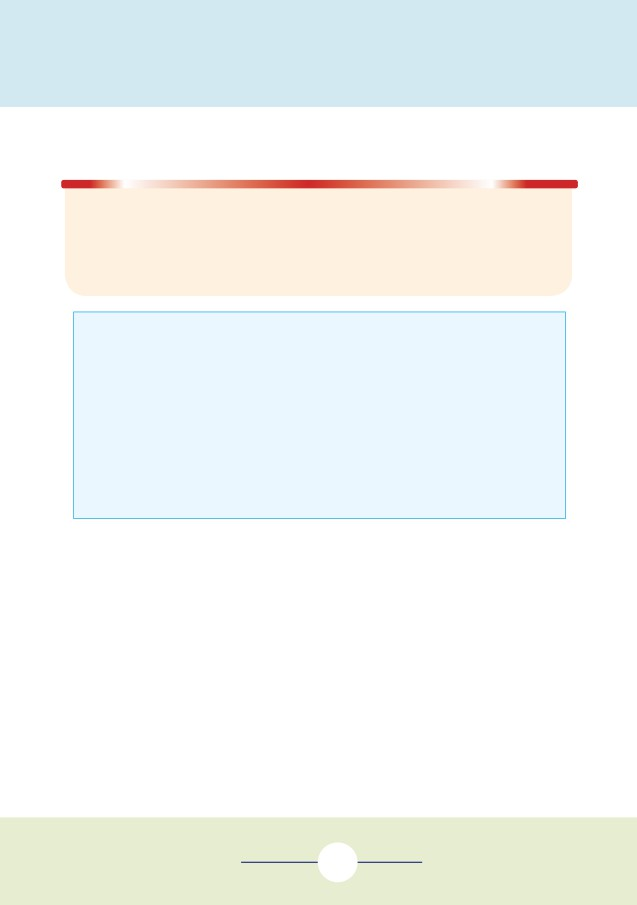
SURA YA TATU
Ushawishi
Lengo Kuu
Kujenga uwezo wa washiriki kufahamu dhana ya ushawishi na mbinu za ushawishi
Malengo Mahususi
Baada ya kumalizika mada hii washiriki watafahamu;
a. Maana ya ushawishi
b. Hatua muhimu katika shughuli ya ushawishi
c. Faida za ushawishi
d. Mbinu za kufanya ushawishi
Jinsi ya Kuwezesha
1.
Mwezeshaji wagawe washiriki katika makundi ya watu wanne hadi watano ili
waweze kujadili kwa pamoja maswali yafuatayo
i.
Nini maana ya ushawishi?
ii. Kwanini tunafanya ushawishi?
iii. Taja faida za kufanya ushawishi
2.
Baada ya kumaliza kujadili, mwezeshaji waelekeze washiriki wakusanyike kwa
pamoja ili kuanza kazi ya mrejesho. Kila kundi lifanye mrejesho na mara baada
ya makundi yote kufanya mrejesho, mwezeshaji ongoza mjadala wa kulinganisha
mrejesho wa kila kundi, ili kuona tofauti na ulinganifu katika majibu.
Mchango wa Mwezeshaji
Maana ya Ushawishi
Ushawishi ni juhudi zinazofanywa na mtu au kikundi maalumu mbele ya mtu yeyote au
chombo chochote cha maamuzi kwa ajili ya kutoa ufumbuzi au suluhisho juu ya shida au
tatizo au kubadilisha msimamo, shida au wazo fulani lililopo kuelekea kwenye suluhisho,
msimamo au wazo jingine linalotolewa na mshawishi au kikundi cha ushawishi. Kwa
maana nyingine, Ushawishi ni uwakilishi wa msimamo wa wazo fulani kwa watoa
maamuzi, kama vile mahakimu na majaji, viongozi wa ngazi za juu na wanasiasa, ili
waweze kufanya mabadiliko kama inavyopendekezwa na mshawishi.
Kwa mfano, wakili anapokuwa akimwakilisha mteja wake mahakamani au kwenye
mabaraza yeyote yaliyopo kisheria, hufanya juhudi za ushawishi, kwa kutumia mbinu
mbalimbali, kuiambia mahakama au baraza msimamo au tafsiri ya sheria, sera au taratibu
zilivyo, ili mahakama au baraza liweze kutoa maamuzi au ufumbuzi au haki, kulingana
na tafsiri anayoipendekeza.
32
Hali kadhalika, mbunge anapojadili jambo lolote bungeni na kutoa hoja yeyote
anayoihitaji yeye kama yeye au inayohitajika jimboni kwake au inayohitajika kwenye
jimbo lake, hutoa mapendekezo mbalimbali ili viongozi wa serikali waweze kufanya
mabadiliko kulingana na hoja yake.
Ushawishi hufanywa mbele ya mtu yeyote au chombo chochote cha maamuzi na mtu
yeyote au kikundi chochote kisichokuwa na uwezo wa kutoa maamuzi ya mabadiliko ya
moja kwa moja au suluhisho katika jamii au katika chombo chochote cha maamuzi juu
ya jambo fulani linaloleta tatizo au matatizo dhidi ya mtu, kikundi au jamii.
Kwa kawaida tunahitaji kufanya ushawishi ili tuweze kupata msimamo au misimamo
inayotufaidisha sisi kama sisi au inayofaidisha kikundi kama kikundi au inayofaidisha
jamii kulingana na kile tunachoona, au jamii inachokiona kuwa kiko sahihi na kinaweza
kuwapa haki.
Tunahitaji kufanya ushawishi ili kubadilisha uwepo wa sheria, kanuni, sera, mila na
desturi na au taratibu mbalimbali zilizopo na ambazo katika; maono yetu, zinakinzana
na; msimamo wa haki za binadamu;sheria za kimataifa; msimamo wa sheria na taratibu
mbalimbali za kimataifa;Katiba yetu;sheria, sera, kanuni na taratibu; na kwamba kuwepo
kwake kutaendelea kuhatarisha masilahi yetu, kisiasa, kiuchumi na kiutamaduni.
Hatua Muhimu Katika Ushawishi
Kuna hatua tano au sita hivi muhimu za kufuata katika shughuli nzima ya ushawishi
ili kuhakikisha ufanisi wa kazi ya ushawishi inaenda sawa sawa. Hatua hizo ni kama
ifuatavyo;
a)
Tambua Jambo au Mambo yanayohitaji mabadiliko
b)
Fanya Utafiti Yakinifu ili Kujua Chanzo
c)
Kupanga Mipango/mbinu za Ushawishi
d)
Kufanya Utekelezaji wa Mipango
e)
Uangalizi au Usimamizi
f)
Tathmini Matokea ya Ushawishi.
i)
Tambua Jambo au Mambo Yanayohitaji Mabadiliko.
Kabla ya kufanya ushawishi, ni vyema kuanza kazi ya ushawishi kwa kutambua au
kufahamu jambo au mambo yanayohitaji kufanyiwa mabadiliko katika jamii. Katika
hatua hii, jaribu kila uwezalo kutoa tafsiri inayofaa na kuonesha namna gani inagusa hali
ya maisha ya kikundi fulani unachokilenga. Tafsiri ya tatizo ni vizuri itokane na hali ya
mazingira yaliyopo na ni kwa namna gani wadau mbalimbali wanalichukulia tatizo hilo.
Mfano. No.1
Mwezeshaji waelekeze washiriki waangalie tatizo la rushwa katika jamii yetu.
Katika hatua hii, mwezeshaji anahitajika kutoa tafsiri ya neno rushwa na maelezo ya rushwa
kama tatizo katika jamii.
Ø Kazi kubwa utakayofanya katika hatua hii ni kutafsiri kuwa rushwa ni hongo au
33
fedha inayotolewa kwa mtoa huduma ili afanye upendeleo, afanye maamuzi au
akupatie huduma unayohitaji.
Baada ya kupata tafsiri ya tatizo katika jamii, basi utakuwa katika nafasi nzuri ya kutoa
maelezo yakinifu yatakayofafanua ni kwa namna gani hili ni tatizo katika jamii na kwamba
linahitaji kupatiwa ufumbuzi ili watu wasikose huduma pindi wanapokuwa hawana kitu
kidogo cha kutoa. Kwa hiyo maelezo ya tatizo hili yanaweza kuwa kama ifuatavyo;
Ø Tatizo kubwa la rushwa katika jamii yetu ni kwamba mtu asipokuwa na kitu
chochote cha kutoa kwa watoa huduma kama vile madaktari au wauguzi wakati wa
kujifungua kina mama, au polisi wakati mtu anahitaji dhamana, au mahakamani
wakati mtu anahitaji nakala ya hukumu, basi si rahisi kupata huduma. Matokeo
yake sasa, kama hautatoa kitu chochote kama una mgonjwa anaweza kufariki
bila huduma. Na kama unahitaji dhamana basi unaweza kujikuta unapelekwa
mahabusu wakati dhamana ni haki yako kabisa.
Mfano no. 2
Tatizo la kutokujua kusoma na utoro mashuleni
Tafsiri;
Ø Kutokujua kusoma ni ile hali ya kutotambua maandishi ya aina yeyote ambayo
huwakilisha mawazo yetu. Utoro mashuleni ni hali ya watoto walioandikishwa
kusoma ama kutoenda shuleni kabisa au kuenda na baadaye kushindwa kumaliza
vipindi vya masomo kama vilivyopangwa.
Maelezo ya Tatizo
Ø Kutokujua kusoma na kuandika ni tatizo katika jamii yetu kwani mara kadhaa
hutokea watu kusainishwa nyaraka za kuuziana mashamba au kupangisha nyumba
zao. Masharti yanayoandikwa kwenye mikataba na upande wa pili wanakuwa
hawajui na matokeo yake nyakati nyingi wanaingia kwenye makubaliano ambayo
hunyang’anya haki zao.
Ø Kwa upande mwingine, utoro ni sababu watoto walioandikishwa mashuleni
hawaendi shule au wanaenda na kutoroka, hali ambayo inawafanya wasimalize
masomo yao waliyopangiwa kuyasoma katika kipindi hicho. Matokeo yake
wanafunzi humaliza shule wakiwa hawajui kusoma na kuandika, au hawana
maarifa ya kutosha katika kujikwamua na maisha yao; na mbaya zaidi, wanakuwa
hawajafuta ujinga katika maisha yao.
Hatua hii ya utambuzi mara nyingi hufanikishwa, kwa, ama kuwepo katika jamii au
kupata taarifa juu ya kuwepo kwa tatizo katika jamii na wanajamii.
ii)
Fanya Utafiti Yakinifu
Kufanya utafiti ni hatua ya pili muhimu katika mtiririko wa kazi za ushawishi. Hii ni kwa
sababu uatafiti utakupatia majibu kutoka kwa wahusika juu ya chanzo cha tatizo, sababu
zinazofanya tatizo kukua, matokeo ya tatizo lenyewe, pamoja na namna jamii inavyoona
34
upatikanaji wa ufumbuzi. Kadhalika, utafiti utakuwezesha kuongea kwa kujiamini ukitoa
takwimu na mifano halisi kuhusu tatizo au matatizo yaliyopo katika jamii.
Hata kama jambo au tatizo limekwishafanyiwa utafiti wa kutosha, basi katika hatua hii
inatosha kufanya kazi ya kukusanya taarifa mbalimbali za utafiti na kisha kuzifanyia
uchambuzi yakinifu ili kujua chanzo, sababu, matokeo na mapendekezo mbalimbali
yaliyofanywa katika kutafuta ufumbuzi wa tatizo au matatizo husika.
Kwa hiyo, katika kufanya utafiti, utakuwa na uwezo wa kufahamu mambo kadhaa
yatakayokusaidia katika shughuli nzima ya ushawishi. Mambo hayo ni pamoja na
muundo wa vyombo vya kufanyia mabadiliko, hali ya watu na demokrasia, ushiriki wa
watu katika maamuzi na namna ya kufanya ushawishi.
Ø Fahamu chanzo cha tatizo au jambo.
Ø Kufahamu au chunguza hali halisi ilivyo.
Ø Kuchunguza matatizo yanayohitaji ufumbuzi
Ø Kufanya uchambuzi yakinifu ukiwa na lengo la kuweka vipaumbele kwa kila
hoja unayoona inahitaji mabadiliko.
Ø tafuta au onesha uhusiano wa tatizo na katiba, sera, sheria, kanuni, au taratibu
zilizopo,
Ø tafuta au toa mapendekezo ya ufumbuzi,
Ø fanya tathmini ya uwezo
(kimaarifa, kifedha, kiutendaji, vitendea kazi,
kimahusiano na mambo mengine yote utakayoona yanafaa katika hatua hii, na
Ø fahamu muundo wa serikali na ngazi zake za maamuzi, hali na maoni ya jamii,
wanasiasa, na vyombo vinginme vya dola juu ya jambo linalohitaji mabadiliko
Hebu tuendelee na mifano yetu ili tuone umuhimu wa hatua hii.
Mfano no. 3. Tatizo la rushwa katika jamii.
Kama tulivyoainisha hapo juu, hatua hii ya utafiti, itakusaidia kutambua chanzo, sababu,
matokeo, kwa upana, na namna ya kupata ufumbuzi kama ifuatavyo;
Ø Utafiti utakusaidia kujua chanzo cha rushwa kuwa ni;
ü kukithiri kwa umasikini katika jamii,
ü ubinafsi na watu wenye nafasi kujipendelea wenyewe,
ü mashindano ya utajiri miongoni mwa wenye nafasi,
ü kukosekana kwa uwazi,
ü uroho wa madaraka,
ü viongozi na watu kujilimbikizia madaraka,
ü kukosekana kwa sheria na kanuni madhubuti za kuadhibu wahalifu,
ü kuvinjika kwa maadaili ya jamii, na
ü tabia ya kuhujumu mifumo ya utawala.
Ø Utafiti utakusaidia kujua matokeo ya rushwa kuwa ni kama ifuatavyo;
ü Kuongezeka kwa umasikini na tabaka la wasiokuwa nacho kutengwa na
kunyimwa huduma muhimu katika jamii,
35
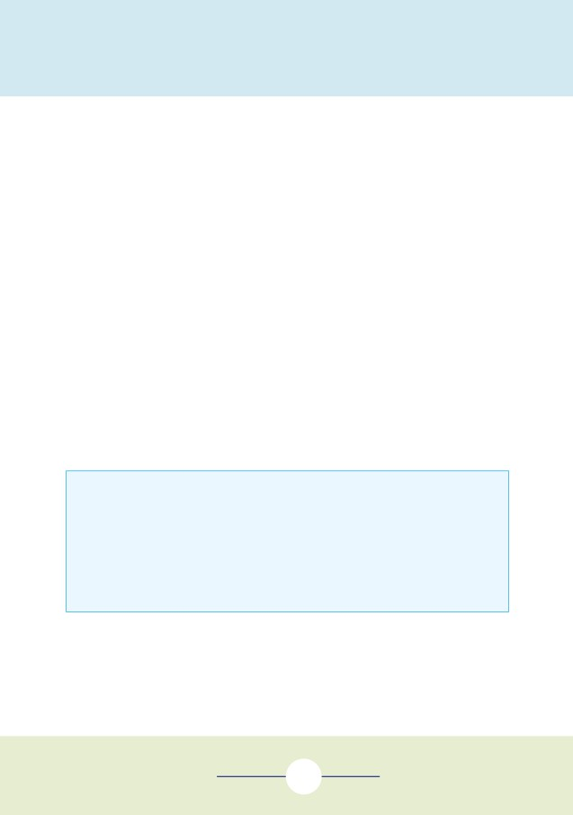
ü Jamii kukosa imani ya mfumo mzima wa utawala kwa sababu ya kukua kwa
tofauti za kimaisha,
ü Kudhoofika kwa mfumo wa huduma za jamii,
ü Kuvunjika kwa maadili ya jamii
ü Kukua kwa tabaka la wasiokuwa nacho,
ü Matumizi makubwa kuelekezwa kwa huduma za viongozi wa ngazi za juu,
na
ü Taifa kubaki tegemezi kutokana na kushindwa kuzalisha au kuweka akiba
baada ya uzalishaji.
Ø Utafiti utakusaidia kupata mbinu au namna ya kupata ufumbuzi wa tatizo kama
ifuatavyo;
ü Ili kumaliza rushwa lazima uwazi na uwajibikaji uongezeke,
ü Kuhakikisha kuwa jamii inashiriki katika utoaji wa maamuzi katika ngazi
zote,
ü Kutoa elimu katika ngazi zote kuanzia mtu na mtu, familia na familia na
kisha jamii nzima ili kila mtu ajue haki na wajibu wake katika jamii,
ü Kuweka au kutoa adhabu kali kwa wale wote watakao patikana na kosa la
rushwa,
ü Kuwa na uelewa na uwajibikaji wa kisiasa na kiutendaji,
ü Kuongeza au kukuza ushiriki wa vyombo vya habari ili kutoa habari au
taarifa katika jambo lolote linalohusu jamii kutokea, na
ü Kuhakikisha vyama vya kiraia na kijamii vinashiriki, kikamilifu, katika
utawala na ushawishi wa mabadiliko.
Zoezi 2.
1.
Mwezeshaji wagawe tena katika makundi washiriki watano hadi sita kwa kila
kundi ili wajadili uwezekano wa kupata majibu baada ya utafiti wa tatizo la
(mauaji ya albino, rushwa, utoro, kutokujua kusoma na kuandika au tatizo
lolote katika jamii).
2.
Mwezeshaji waombe washiriki wachague tatizo moja katika jamii na kisha
(a) waainishe tafsiri na maelezo ya tatizo walilolichagua, (b) watoe sababu,
matokeo na ufumbuzi wa tatizo hilo.
Mchango wa Mwezeshaji
Baada ya kufanya utafiti na kupata taarifa kama inavyoonekana katika mifano hapo juu,
hatua inayofuata ni kupanga mipango ya kufanya ushawishi ili mapendekezo yako ya
ufumbuzi uliyoyaona au kuyapata katika utafiti uweze kuyafanyia ushawishi kwa lengo la
kupata mabadiliko unayokusudia.
i)
Panga Mipango ya Ushawishi/Mbinu za Ushawishi
Kuna msemo usemao, kushindwa kupanga ni kupanga kushindwa. Maana yake ni kwamba,
36
ukishindwa kufanya mipango hapo awali basi ni wazi kwamba unapanga kushindwa
kutekeleza malengo.
Hivyo, katika hatua hii ya ushawishi, kazi kubwa unayohitajika kuifanya ni mipango
na uundwaji wa mbinu za ushawishi. Kazi hii kwa kiasi kikubwa, hufanywa ndani na
huhusisha vyombo vya ndani katika kutengeneza maandalizi ya ushawishi. Kwa hiyo,
katika kuhakikisha hatua hii ya mipango inakamilika, kuna hatua kadhaa muhimu za
kufanya na kuzingatia ili kufanikisha mipango thabiti ya ushawishi. Kwa kifupi, hatua
zifuatazo zinafaa kufuatwa ili kupata matokeo mazuri ya ushawishi;
a)
Kujitathmini au Kujitambua
Kuna hatua kadhaa za kujitathmini au kujiangalia kwanza kabla ya kuingia kwenye
shughuli za ushawishi. Hatua hii ni muhimu kwa sababu kabla hatujaingia kwenye
shughuli ya ushawishi ni lazima tutambue uwezo na udhaifu wa kila mmoja wetu, uwezo
wa sisi kama kikundi au sisi kama shirika; na kutambua tunaonekanaje mbele za watu
wengine kuhusu uwezo watu. Vile vile, ni vyema kutambua tunataka tupate kitu gani
katika shughuli ya ushawishi. Hebu tuangalie kwa makini kidogo hatua moja baada ya
nyingine;
i)
Fanya Utambuzi Binafsi
Tunafanya utambuzi binafsi kwa sababu tunahitaji kubadilisha mambo kadhaa katika
jamii ili yaweze kukidhi mahitaji yetu binafsi kwa sababu, pamoja na ubinafsi wa kila
mmoja wetu, sisi ni sehemu ya jamii na hivyo tunaathirika na hali ilivyo. Hivyo ni vyema
kujitambua ili tuone uwezo na udhaifu wetu katika kufanya shughuli za ushawishi.
ii)
Fanya Utambuzi wa Kikundi au Shirika
Kwa vile tunafanya ushawishi kama kikundi au kama shirika, basi ni vyema tufanye
tathminini ya kujua malengo yetu makuu katika shirika ili kujua njozi zetu, lengo letu kuu
na mwelekeo halisi wa kile ambacho tunataka kukikamilisha au kukifikia kama kikundi.
Kwa mfano, tukiwa ni shirika linalopinga ndoa za utotoni, ni vyema tutambue malengo
yetu mahususi ili tuwe na mwelekeo wa pamoja katika kuhakikisha tunatokomeza ndoa za
utotoni na hivyo kukamilisha njozi ya shirika. Kwa maana nyingine, tunafanya utambuzi
wetu kama kikundi au shirika ili kuona kama kile tunachotaka kukifanya kinaendana na
malengo yetu.
iii)
Fahamu Mwelekeo wa Kikundi au Shirika
Baada ya kufanya utambuzi wa binafsi na kikundi ni vyema pia katika hatua inayofuata
kufanya utambuzi wa mwelekeo wetu. Yaani ni vyema kujua au kuchagua kutoka kwenye
utafiti wetu kuwa ni tatizo gani tunataka kulitatua na tunataka matokeo ya aina gani.
iv)
Tambua Mwonekano Wako Nje
Ni vyema katika hatua hii ya awali kufanya tathmini ya mwonekano wa kikundi chako au
shirika lako nje ya shirika. Fanya tathmini kujua mashirika mengine au vikundi vingine
vinalionaje shirika lako na tatizo unalotaka kulitatua. Kadhalika, katika hatua hii, ni
vyema kujua mashirika, makundi au vyombo vya dola ambavyo vinaweza, kwa namna
37
nyingine, kutoa upinzani wakati unafanya utafiti. Unaweza kufanya kazi hii kwa kutumia
njia ya maswali au mahojiano ya moja kwa moja.
b)
Panga Mipango ya Muda Mfupi na Muda Mrefu
Hii ikiwa ni pamoja na kupanga shughuli mbalimbali zitakazofanikisha mbinu zako
katika ushawishi pamoja na vyombo utakavyovitumia katika ushawishi. Zifuatazo ni
baadhi yake;
Ø Tengeneza ajenda za muda mfupi na muda mrefu za ushawishi;
Ø Tambua wadau watakaokusaidia katika ushawishi na wale ambao watakupinga
katika shughuli ya ushawishi. Katika sehemu hii unapaswa kujua ni yupi atakusaidia
kimawazo, kifedha, kimipango, nk; na ni yupi atakupinga ili uandae mbinu za
kumaliza au kudhoofisha upinzani.
Ø Tengeneza malengo ya muda mfupi na mrefu yanayoweza kupimika;
Ø Utengenezaji wa njia za (ushawishi, jinsi ya kushawishi, ujumbe wa kushawishi, na
vifaa vitakavyotumika katika ushawishi);
Ø Unda mpango kazi kwa ajili ya ushawishi (action plan)
Ø Panga namna ya kukagua na kupima mafanikio.
c)
Weka Malengo Yako kwa Kufanya Maamuzi,
Tafsiri na utoe maelezo yakinifu ya kila lengo katika hali ambayo watu watatambua
na watakuunga mkono katika juhudi zako za ushawishi. Hatua hii ni muhimu pale
unapohitaji kuungwa mkono katika shughuli yako ya ushawishi.
Mfano. 4
Kuweka Malengo
Timu ya mpira wa miguu (a) lengo lake kuu ni kupata ubingwa na kuwa timu
bora dhidi ya timu zote zinazoshiriki katika mashindano mwisho wa mashindano.
Ili kupata ubingwa timu hiyo inabidi ijiwekee (b) malengo mahususi ya kucheza
vizuri, kucheza kwa nidhamu na kushinda kila shindano linalochezwa na
wapinzani wake. Na ili ishinde kila shindano linalochezwa na wapinzani wake,
inabidi ijiwekee (c) malengo ya kila wakati inapokuwa mchezoni kupata goli au
magoli.
Kama tunavyoona katika mfano wetu hapo juu, (a) ni lengo kuu;( b) ni malengo
mahususi na (c) malengo madogo madogo pamoja na kazi za kufanya.
d)
Tambua Njia au Vyombo Utakavyotumia
Kutambua njia utakayotumia katika ushawishi ni pamoja na namna utakavyowasilisha
ujumbe wa ushawishi. Mfano, ushawishi kwa njia ya; mahakama, migomo, vyombo vya
habari, machapisho, elimu kwa umma au kuhamasisha wananchi ili wakuunge mkono
katika ushawishi, na au utatumia njia ya majadiliano.
38
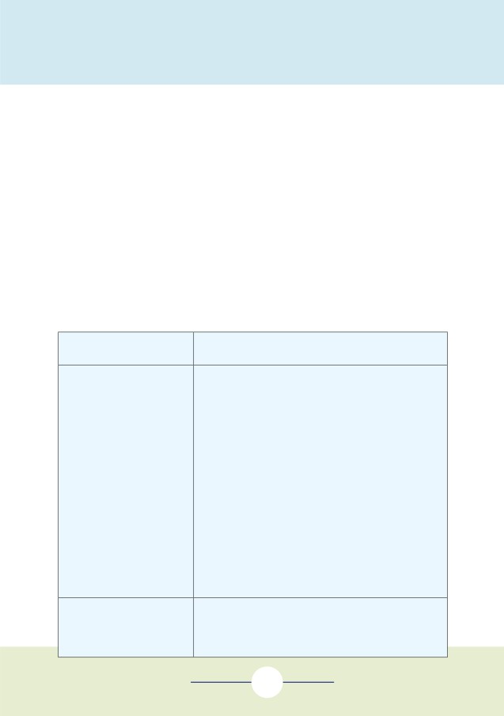
e)
Weka Mikakati ya Ushawishi katika Kila Hoja
Kwa kawaida kila hoja ina tofautiana na hoja nyingine, ijapokuwa zote zinaweza zikawa
zinaleta matokeo yanayofanana. Kwa hali hiyo, katika utayarishaji wa shughuli ya
ushawishi, ni vyema kila hoja ikawa na mkakati wake. Kuna baadhi ya hoja zitahitaji
maandamano na zingine zitahitaji mazungumzo ya mezani. Hivyo zile zinazohitaji
mazungumzo ya mezani ni vyema kupata wazungumzaji wazuri wenye mvuto wa hoja
na wenye kuzuia hisia zao binafsi. Kadharika, hoja ya maandamano ni vyema kupata
wazungumzaji, watayarishaji wa ujumbe mfupi mfupi, wahamasishaji wa maandamano
na waangalizi wa usalama.
f)
Ainisha na Fahamu Watoa Maamuzi na Wadau Kwenye Tatizo
Kila ufanyapo ushawishi, ni vyema kujua na kuainisha ni nani katika ngazi fulani anaweza
kutoa maamuzi fulani au nani katika ngazi fulani atakusaidia kupata nini. Hii itakusaidia
kuelekeza hoja za ushawishi katika ngazi inayostahili na kubakiza nguvu zingine katika
hatua nyingine ya ushawishi. Wakati mwingine, kuna maamuzi kadhaa huhitaji yaanzie
katika ngazi Fulani, ama ya chini au ya juu. Kwa hiyo kutokujua wahusika kunaweza
kuharibu shughuli nzima ya ushawishi kwa kukosa mwelekeo yakinifu.
Kwa marejeo zaidi angalia chati ifuatayo hapa chini;
Wahusika/Wadau
Matokeo na nini Kinaweza Kuchangiwa kwenye
Ushawishi
1. vyombo vya dola
Kitaifa;
Vyombo hivi vitakuunga mkono katika ushawishi wa
ü serikali, wizara na
kubadilisha na kukuza vitu vifuatavyo;
vyombo vyake
Ø Sheria,
ü bunge
Ø Utekelezaji wa sheria
ü mahakama
Ø Sera mbalimbali za kitaifa
ü polisi na majeshi
Ø Kanuni na mienendo ya kitaifa
ü watendaji wakuu wa
Ø Program mbalimbali
idara
Ø Bujeti ya serikali kuu au serikali za mitaa
serikali za mitaa
Ø Kupata habari nyeti za kitaifa
ü baraza la madiwani,
Ø Kufanya maamuzi ya kitaifa
ü kurugenzi
Ø Kukuza haki za binadamu, ikiwa ni pamoja na
vyombo vya kimataifa
kukuza haki za makundi maalumu, kama vile haki
ü UN, IMF, Benki ya
za kina mama, haki za watoto, ubaguzi wa rangi,
dunia
kuondoa ukabila, ikiwa ni pamoja na kutokomeza
ü Balozi mbalimbali
mila na desturi zinazo kiuka haki za binadaamu
2. Sekta binafsi
Sekta hii pia ni muhimu na itakusaidia, kwa kiasi
ü Wafanya biashara,
kikubwa, kubadilisha mambo mengi yaliyotajwa hapo
ü vyama vya wafanyakazi,
juu.
ü makampuni mbalimbali
39
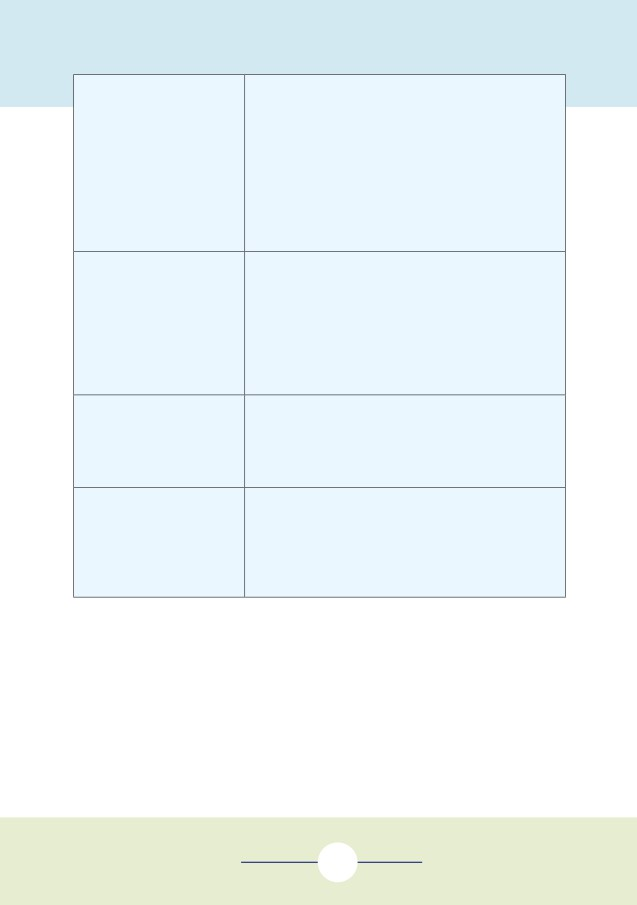
3.
Vyama vya Kiraia
Ø
Huimarisha na kukuza uwezo wa vyama vya
ü NGOs,
kiraia, mashirika,
ü CSOs,
Ø
hukuza uwajibikaji na uvumilivu miongoni
ü Mashirika ya dini,
mwa jamii,
ü Vyama vya ushirika
Ø
huwasemea na kuwapa nguvu raia ambao
wamesahaulika,
Ø
hukuza elimu ya uraia, ikiwa ni pamoja na
kuvifanya vyama vya kiraia kutengeneza
muungano na ushirikiano katika kudai na
kudumisha haki za kiraia.
4.
Vyama vya siasa
Ø
Hukuza demokrasia na ushiriki wa wananchi
katika kutoa maamuzi, kutunga sheria, uwazi
na uwajibikaji wa vyombo vya dola,
Ø
hubadilisha tabia na miiko ambayo hukera
wanajamii,
Ø
hutumia majukwaa kusema kero za wananchi
na husaidia kudai haki za wananchi katika
maeneo mbalimbali.
5.
Vyombo vya habari
Ø
Hufanya kazi ya kutoa taarifa, hata kule
ü Radio
ambapo hakufikiki,
ü Televisheni
Ø
Husaidia kujenga hoja na umoja,
ü magazeti
Ø
ni daraja kati ya wananchi na watawala au
vyombo vya dola,
6.
Watu maarufu na
Ø
Huunga mkono madai au hoja za ushawishi,
wananchi wa
Ø
ndio walengwa wa hoja zote za ushawishi,
kawaida
Ø
husaidia kueneza elimu na ujumbe wa
ushawishi,
Ø
husaidia katika kubadili tabia na mienendo
iliyozoeleka
a)
Ainisha na Fahamu ni wakati gani wa Kufanya Ushawishi
Ndiyo, ni vyema kujua ni wakati gani wa kufanya ushawishi na wakati gani haufai.
Kwa mfano, unapofanya ushawishi wa kuzuia tohara kwa kina mama, ni vizuri kujua
ni nyakati gani tohara hufanyika ili kugawanya hoja za ushawishi kulingana na nyakati.
Yale mambo yanayohitaji maamuzi ya ngazi za juu ni vyema yakafanyika tofauti na yale
maamuzi kutoka kwenye jamii yenyewe.
b) Tengeneza Bajeti na Tunisha Mfuko kwa Ajili ya Ushawishi
Mara baada ya kukamilisha mipango yote na kuainisha shughuli zitakazohusika, basi
ni vyema kuweka bajeti ya mipango yote ili kujua kiwango cha fedha kitakachotumika
katika utekelezaji wa shughuli. Hii ni kwa sababu, takribani kila jambo katika jamii
linagharama ya kuliendesha au kulifanya.
40
Kwahiyo, mara baada ya kukamilisha bajeti, kazi kubwa inayofuata ni kutafuta fedha kwa
ajili ya utekelezaji wa mipango kwa ujumla. Hapa itabidi kutumia mbinu mbalimbali
katika kutunisha mfuko wa ushawishi na shughuli zote kwa ujumla. Ni vyema kuanza
kutafuta fedha au kutunisha mfuko kwa kutumia vyanzo mbalimbali ambavyo viko
karibu na kikundi na kisha kuanza kutoka. Hii ni kwa sababu wale wanaokuzunguka
wanajua zaidi kazi yako kabla ya wale walioko mbali. Aidha wale wanaokuzunguka ndio
mashahidi wa kutetea mapendekezo yako kwa wale walioko mbali. Kwa kifupi zifuatazo
ni mbinu kadhaa za kutunisha mfuko kwa ajili ya ushawishi;
Ø Michango ya wanachama,
Ø Miradi ya kikundi au shirika,
Ø Tozo zinazotokana na huduma inayotolewa,
Ø Maombi ya msaada kutoka kwa mashirika au makampuni yanayotoa michango ya
huduma ya jamii,
Ø Misaada kutoka kwa wahisani wa maendeleo,
Ø Matukio ya kutunisha mfuko,
i)
Tekeleza Mipango Yako
Hatua hii inahusisha kuanza kutekeleza mipango uliyojipangia katika hatua ya mipango.
Hivyo, hatua hii huhusisha shughuli za nje baada ya kukamilisha mipango yote ya
maandalizi. Kwa maana nyingine, yale yote uliyoyapanga katika hatua ya mipango
huhitajika kuwekwa katika uhalisia. Mtego mkubwa hapa ni namna ya kuwasilisha.
Hatua hii ni muhumu sana kwani ndio matokeo ya mipango yote hupatikana katika
hatua hii.
Kwa kawaida utekelezaji wa mipango ndio haswa kazi ya ushawishi. Zifuatazo ni namna
mbalimbali ambazo zinaweza kutumika kukamilisha mipango ya ushawishi;
a) Njia ya kutoa ujumbe kupitia machapisho mbalimbali kama vile vitabu, vipeperushi na
mabango.
Njia hii ni nzuri kwani machapisho hufanya ushawishi wa moja kwa moja kupitia msomaji
wa maelezo yaliyomo katika chapisho. Njia hii ni nzuri na inafaa katika jamii ya watu
wanaojua kusoma na kuandika na kisha kufanyia upembuzi yakinifu kwa yaliyoandikwa.
Njia hii yaweza kutumika peke yake au yaweza kutumika kama chombo kimojawapo
katika shughuli ndani ya njia zingine za ushawishi.
b) Njia ya kutumia vyombo vya habari kama vile magazeti, television, redio na simu za
mikononi.
Matumizi ya vyombo vya habari ni njia muhimu na nzuri katika kufanya ushawishi. Hii
ni kutokana na sababu zifuatazo;
Ø hufanya suala au tatizo kubwa na lionekane haraka kwa watoa maamuzi;
Ø ni njia ambayo ujumbe wake hufikiwa au huwapata watu wengi katika jamii;
Ø huisaidia jamii kulifahamu tatizo ikiwa ni pamoja na kujua mapendekezo mbambali
unayoyatoa kuhusu ufumbuzi wa tatizo;
Ø njia hii hukusaidia kupata wafuasi watakao kuunga mkono na kukusaidia kueneza
ujumbe kwa haraka;
41
Ø husaidia kubadilisha mtizamo, tabia na mwenendo wa jamii juu ya jambo fulani;
Ø husaidia kurekebisha sera, mipango hata mienendo ya watu binafsi pamoja na jamii;
Ø huhamasisha na kuathiri misimamo ya watoa maamuzi, na
Ø husaidia kutunisha mifuko kwa ajili ya ushawishi zaidi.
Kwa ujumla, katika kutengeneza ujumbe kwa ajili ya vyombo vya habari, ni vyema kujua
haya yafuatayo;
Ø kujua hadhira yako inataka nini,
Ø kujua mazingira ya kisiasa kuhusu unyeti wa hoja, hofu zozote na nyakati
Ø kuhakikisha ujumbe wako ni mfupi na rahisi kueleweka;
Ø tumia habari au visa ambavyo vipo na vinaonekana katika jamii;
Ø iache hadhira ipate majibu yake yenyewe kutoka kwenye ujumbe
Ø pendekeza masuluhisho/suluhisho linalowezekana;
Ujumbe wa ushawishi kwa njia ya vyombo vya habari waweza kuwa katika mfumo wa
vitu hivi vifiatavyo;
Ø Barua kwa wasomaji,
Ø Makala,
Ø Michoro ya kuchekesha (vikaragosi),
Ø Taarifa maalumu kwa vyombo vya habari (Press release),
Ø Matangazo,
Ø Picha
Ø Filamu au mchezo wa kuigiza,
Ø Vichekesho,
Ø Ujumbe mfupi mfupi wa simu,
Ø Nyimbo n.k.
c) Njia ya mafunzo, semina na washa kwa kuielimisha na kuihamasisha jamii ili ishiriki
katika kudai mabadiliko.
Mafunzo ya aina mbalimbali kupitia semina, warsha na pengine kupitia mikutano,
husaidia kwa kiasi kikubwa katika kufanya ushawishi kwenye jamii tunazoishi. Hali hii
huwa hivyo kwa sababu;
Ø husaidia jamii au wanajamii kutekeleza au kufuatilia jambo wakiwa na uelewa juu
ya jambo wanalolifuatilia;
Ø hubadilisha matatizo au matakwa ya watu kutoka kwenye malalamiko na kuwa
kwenye mpangilio wa mapendekezo au madai sawia ya kudai haki zao;
Ø huingiza na kuwaleta waathirika pamoja katika kudai haki;
Ø huwezesha watu wa kawaida kushiriki katika shughuli za uraia na utawala wa jamii
Ø hukuza umiliki wa ushawishi kutoka mtu mmoja au kikundi hadi ushiriki wa jamii
kwa ujumla;
Ø hukuza ushirika wa washiriki waliopo ngazi za chini hadi kwenye ngazi ya taifa;
Ø pale ambapo hoja haikuwa nzito, huibadilisha na kuwa halali, ikimilikiwa na jamii
kwa ujumla.
d) Njia ya Sanaa
Japokuwa maandalizi yake huchukua muda mrefu, njia hii ya sanaa hutumika sana na
42
hufaa katika hatua za kutafuta watu wa kuwaunga mkono katika hoja yenu. Aidha njia
hii inafaa sana katika kuinua uelewa wa wananchi na hasa wananchi wa kawaida. Hii ni
kwa sababu sanaa hutumika kuonyesha, moja kwa moja, chanzo au sababu za matatizo,
madhara ya tatizo na hata ufumbuzi wa tatizo.
e) Njia ya mikutano ya hadhara
Njia hii haina tofauti sana na ile warsha, isipokuwa ujumbe unaotolewa katika njia ya
mihadhara ni ule unaoeleweka kwa urahisi kwa jamii nzima au wahusika katika mikutano
na hivyo husaidia;
Ø kuongeza joto la mabadiliko ya haraka;
Ø kuonesha ni kiasi gani hoja ya mabadiliko inaungwa mkono;
Ø kuanzisha mabadiliko kwa haraka zaidi kuliko semina na warsha na hivyo washiriki
wa ngazi zote huanza kudai mabadiliko;
Ø huwahusisha watu wa rika zote na haihitaji watu wenye elimu ya juu kukusaidia
katika kudai mabadiliko.
Ø inaweza kusababisha maandamano ambayo hudai mabadiliko ya mara moja;
f)
Njia ya maandamano
Maandamano ni njia mojawapo ya kufanya ushawishi katika hali ya ama kushinikiza
kufanyika kwa jambo fulani katika jamii au kuunga mkono kauli au kufanyika kwa jambo
fulani. Mara nyingi njia hii huvuta hisia za viongozi na katika hali ya kawaida, ujumbe
hufika kwa wepesi kwa wahusika. Hata hivyo, ni muhimu kufanya maandalizi kutoka
katika hatua ya mipango na hata katika hatua ya utekelezaji wa shughuli ya ushawishi.
Maandalizi yanayotakiwa ni pamoja na kuandaa hotuba ya mgeni rasmi, kupanga ni wapi
maandamano yataanzia na kuishia, kuomba kibali cha maandamano, kuandaa ujumbe
mfupi mfupi katika mabango yatakayobebwa na waandamanaji na kufafanua sababu ya
kufanya maandamano. Njia hii ina sifa kadhaa, ikiwa ni pamoja na hizi zifuatazo;
Ø Inafaa kwa mashirika makubwa na yenye ushawishi mkubwa,
Ø Ni njia mbadala baada ya njia zingine za majadiliano ya kila aina au njia ya kutumia
taarifa na maandishi kushindikana au kupuuzwa,
Ø Isipoandaliwa vizuri, ni rahisi kuonekana kuwa ina hoja na matakwa ya kisiasa
wakati ambapo madai yake yanaweza kuwa ni madai ya kawaida ya kijamii.
g) Njia ya ushawishi kupitia viongozi na wawakilishi kama vile madiwani na wabunge,
Njia hii hutumika kwa lengo la ushawishi kuwepo ama marekebisho au kutungwa kwa
sheria, kanuni au taratibu katika jamii. Aidha, ushawishi wa aina hii unafaa pale ambapo
mnashawishi kufutwa au kurekebishwa kwa sheria, kanuni au taratibu kandamizi katika
jamii. Njia hii huhitaji maandalizi ya awali yanayoonyesha sababu za kutaka kuungwa
mkono kwa hoja mnayoitaka.
h) Njia ya majadiliano na Watendaji wa Ngazi za Juu.
Njia hii huelekeza ushawishi kwa watumishi au watendaji wa idara kuu zinazohusika
na ushauri wa moja kwa moja kwa watoa maamuzi au pengine kwa watoa maamuzi.
Kwa kawaida, njia hii hutumika sana kuweka ushawishi wa kubadilisha sheria, kanuni,
43
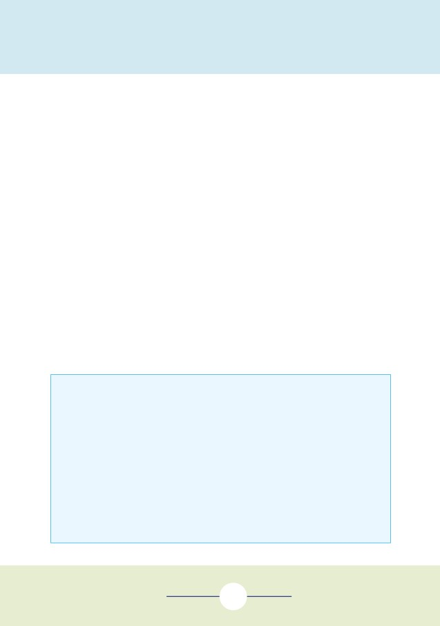
utaratibu, na hata sera katika jambo fulani.
i)
Njia ya kutumia mahakama
Njia ya kutumia mahakama au vyombo vingine vya maamuzi ni njia inayotumika katika
maeneo ambayo kuna vifungu vya sheria vinavyounga mkono kuwepo kwa haki fulani
lakini ama kwa kutokujua au kwa kiburi cha madaraka, haki hiyo haitolewi. Aidha njia
hii hutumika katika kupima au kutafuta namna ya kufuta sheria au kanuni ambayo katika
macho ya sheria mama au Katiba inaonekana kuvunjwa. Kwa hali hii, maamuzi ambayo
hutolewa na mahakama au baraza hutekelezwa kwa amani. Hata hivyo, njia hii huhitaji
utalaamu wa kisheria katika kufanikisha ushawishi.
j)
Njia ya Muungano na Ushirikiano na Wadau
Njia hii uhusisha kuunganisha nguvu kwa pamoja katika kushawishi juu ya jambo fulani
ikijumuisha mashirika mbalimbali yenye malengo ya kufanana katika kutetea na kulinda
haki za kijamii. Njia hii inafaa katika kuunganisha nguvu ya pamoja katika ushawishi wa
kuleta mabadiliko katika jambo moja au mawili. Kama watu wasemavyo kuwa umoja ni
nguvu, ndivyo hivyo hivyo njia hii husaidia kuleta nguvu ya pamoja. Njia hii pia husaidia
kutoa ulinzi wa kutosha pale ambapo hoja ya ushawishi ni ngumu na inaweza kuhatarisha
usalama wa kikundi au shirika.
k) Njia ya kugoma
Kwa kiasi kikubwa njia hii hutumika katika sehemu zenye watu wengi wanaopata au
kutoa huduma ya aina moja. Kwa mfano, watumishi katika mashirika ya utoaji wa
huduma kama vile viwanja vya ndege, hospitali, viwanda vingine vya aina yeyote; sehemu
za migodini na bandarini. Hata hivyo, ni vyema kutumia njia hii ya ushawishi kwa mujibu
wa sheria ya Mahusiano Kazini na taratibu zake ili kuepusha madhara zaidi yakiwamo ya
kufukuzwa kazi kwa sababu ya kushiriki katika mgomo usio halali.
Jinsi ya kuendesha
Mwezeshaji waelekeze washiriki wakae katika makundi ya watu watano hadi sita ili
wajadili na kupanga mambo yafuatayo;
1. Kwa kujadiliana katika kikundi, washiriki waorodheshe matatizo yaliyopo
katika jamii ambayo tayari yamekwisha fanyiwa utafiti na kujulikana sababu ya
vyanzo vyake, matokeo yake na ufumbuzi lakini bado haujafanyika ushawishi wa
kutosha kuleta mabadiliko yanayotakiwa.
2. Baada ya kuorodhesha, washiriki wachague tatizo moja ambalo watalifanyia
ushawishi, kisha waendelee kuorodhesha sababu au chanzo cha tatizo hilo,
matokeo ya tatizo hilo na pia ufumbuzi wa tatizo.
3. Mwezeshaji waelekeze washiriki watayarishe mpango wa ushawishi, wakiainisha
malengo ya ushawishi, gharama, wadau na namna mtakavyowatumia na mbinu
mtakazotumia kushawishi,
i)
Fanya Uangalizi wa Utekelezaji
Pamoja na kuwa na mipango mizuri, lakini mipango yote yaweza kuwa haina maana
44
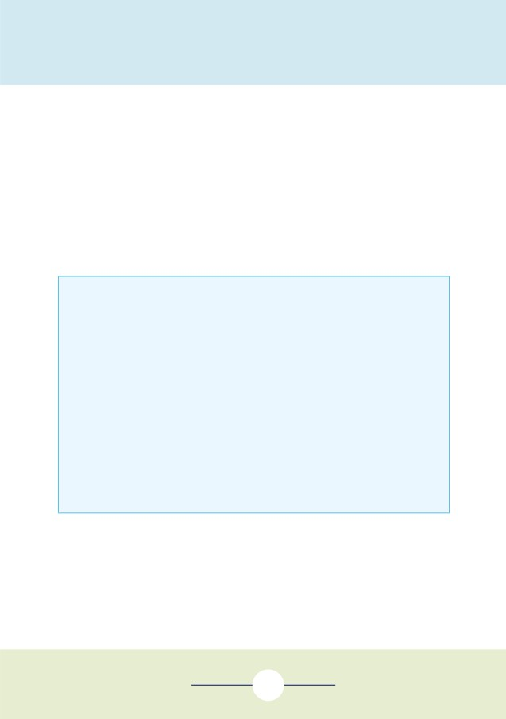
kama hakuna usimamizi na uangalizi wa kueleweka katika hatua zote, kuanzia mipango
na hata utekelezaji wa shughuli ya ushawishi. Hivyo, ni vyema kufanya shughuli hii kwa
usimamizi wa kueleweka katika hatua zote za ushawishi.
ii)
Fanya Tathmini ya Shughuli nzima ya Ushawishi
Tathmini ni kipimo cha mafanikio au vinginevyo vya shughuli yeyote ambayo mtu au
kikundi hujipangia. Tathmini husaidia kuonesha kama kuna dalili zozote za kusonga
mbele au kurudi nyuma.
Kwa kawaida, tathmini ni shughuli endelevu. Mara nyingi watu wengi katika mashirika
au vikundi huifanya kazi hii mwisho wa mradi au kazi. Kiuhalisia, kazi hii inapaswa
kufanywa kila wakati na inapofika mwisho wa mradi au shughuli, kazi kubwa hupaswa
kuwa ya majumuisho na kupata tathmini kwenye malengo makubwa kama vile mabadiliko
ya tabia, hali na mazingira.
Kazi ya Vikundi
1. Mwezeshaji wagawe washiriki katika makundi matano na waandae mbinu za
ushawishi katika mambo yafuatayo;
a. Kubadilisha tabia za wananchi wanaojichukulia sheria mkononi kama vile
mauaji ya watuhumiwa wa wizi n.k;
b. Kubadilisha tabia za wananchi wenye imani potofu kama vile mauaji ya
vikongwe na watu wenye ulemavu wa ngozi n.k;
c. Kushawishi utungwaji wa sheria au kanuni zitakazozuia jambo fulani kama
vile uharibifu wa vyanzo vya maji, uharibifu wa mazingira;
d. Kushawishi kwa mamlaka za serikali za mitaa/vijiji, kuanzisha huduma za
jamii kama vile ujenzi wa soko, zahanati, shule, ununuzi wa madawati n.k;
e. Kutambua na kutambulika kwa wasaidizi wa kisheria na kazi zao kwenye
makundi mbalimbali ya kijamii, mfano taasisi za kidini, vyama vya ushirika,
asasi za kijamii Kwanini tunahitaji kufanya ushawishi?
f.
Ni wakati gani tunaweza kufanya ushawishi?
45
SURA YA NNE
Haki za Binadamu
Lengo Kuu
Kujenga uwezo wa washiriki juu ya dhana ya haki za binadamu na ulinzi wa haki za
binadamu
Malengo Mahsusi
Baada ya kumalizika mada hii, washiriki watafahamu;
➣ Tafsiri ya haki za binadamu;
➣ Aina ya haki za binadamu;
➣ Umuhimu wa kulinda na kutetea haki za binadamu katika jamii
➣ Madhara ya uvunjaji wa haki za binadamu
Maana ya Haki za Binadamu
Mwezeshaji anaweza kutumia mbinu zifuatazo katika kufafanua maana ya haki za
binadamu:
Jinsi ya Kuendesha
1. Gawanya washiriki katika makundi (yasiyozidi watu watano) na waeleze wafanye
yafuatayo:-
a. Nini maana ya binadamu
b. Watoe sifa za binadamu;
c. Waorodheshe vitu muhimu ambavyo binadamu yeyote ni lazima awe navyo ili
ubinadamu wake ukamilike.
Mwezeshaji tumia mbinu ifuatayo katika kufafanua maana ya haki za binadamu.
1.
Andika maneno “binadamu” na “haki” juu ya karatasi kubwa au kwenye ubao.
Chini ya neno “binadamu: chora picha inayoonyesha umbo la binadamu
2.
Baadae, waulize washiriki nini kinahitajika kulinda, kukuza na kuendeleza sifa hizo
za binadamu. Orodhesha majibu ya washiriki chini ya upande wa ‘haki’. Hakikisha
washiriki wanatoa ufafanuzi wa majibu yao kadri inavyowezekana.
3.
Washiriki wajadili maana ya haki za binadamu. Jaribu kupata tafsiri ya haki za
binadamu inayokubaliwa na washiriki wengi na uiandike kwenye chati au ubaoni.
Unaweza kutumia maswali yafuatayo:-
➣ Tutatafsiri vipi haki za binadamu?
➣ Watu wana haki na wajibu gani?
➣ Jamii inatendeana vipi na watu wake? Na vipi watu katika jamii wanatendeana?
46
Mchango wa Mwezeshaji
Mwezeshaji onesha mambo muhimu katika mjadala, toa mchango wako kulingana na maoni
ya washiriki. Sisitiza kwamba binadamu ni kiumbe mwenye akili, busara na utashi (yaani
ana uwezo na hiari ya kuchagua mema na mabaya) na sifa hizo ndizo zinachangia utu wake -
kutimia kwa utu wa binadamu ambao ndio thamani au kipimo cha ubinadamu wenyewe.
Elezea kuwa kuna vitu vya asili ambavyo binadamu ni lazima awe navyo ili aweze kufaidi
UTU wake kama binadamu. Kila mtu ana STAHILI za msingi- kiraia, kisiasa, kiuchumi na
kiutamaduni.
STAHILI hizi za binadamu ndio zinafanya haki za binadamu - kila mtu ana haki za msingi
- kiraia, kisiasa, kiuchumi na kiutamaduni.
Kutokana na kutambulika kwa stahili za binadamu, ndio maana kuna sheria zinazolinda
haki za binadamu na kuheshimu utu wao. Kwamba kila mtu ni lazima akubali haki hizo ili
kulinda utu wa binadamu.
Mwezeshaji toa mchango wako kuhusu maana ya haki za binadamu na sifa za haki za
binadamu.
Mwezeshaji endeleza mjadala kwa kutoa mchango wako kuhusu maana ya haki za binadamu
kwamba chimbuko lake ni UTU wa binadamu.
Maana, Mwanzo na Utambuzi wa Haki za Binadamu
Haki za binadamu ni zile stahili ambazo kila mwanadamu anazo au anastahili kuwa nazo
kwa kuwa tu yeye ni binadamu. Haki za binadamu ni haki ambazo hazibagui mtu wa aina
yeyote, na bila haki hizo mtu hawezi kuwa binadamu kamili.
Haki za binadamu ni za asili, binadamu huzaliwa nazo na hivyo inabidi zitambuliwe na
kuheshimiwa. Hazitolewi kwa kutegemea hati yeyote ya kisheria kwa kuwa binadamu
huzaliwa nazo. Ikiwa stahili hizo zitaondoshwa au kukiukwa, basi utu wa binadamu huyo
unakuwa umedhalilishwa au kutwezwa.
Mwanzo wa Haki za Binadamu
Haki za binadamu zipo tangu binadamu alipoanza kuishi katika dunia hii. Ni haki ambazo
asili yake haiwezi kutenganishwa na kukua kwa binadamu na ushiriki wake katika kukabiliana
na changamoto kadhaa za kimazingira, kimila, kiutamaduni, kisiasa na kiuchumi. Hivyo,
kwa kifupi, haki za binadamu zinajumuisha haki za msingi kama vile kuishi, kujieleza,
kwenda mahali unapopenda, kutoa maoni, kujumuika na kujihifadhi ikiwa ni pamoja na
faragha.
47
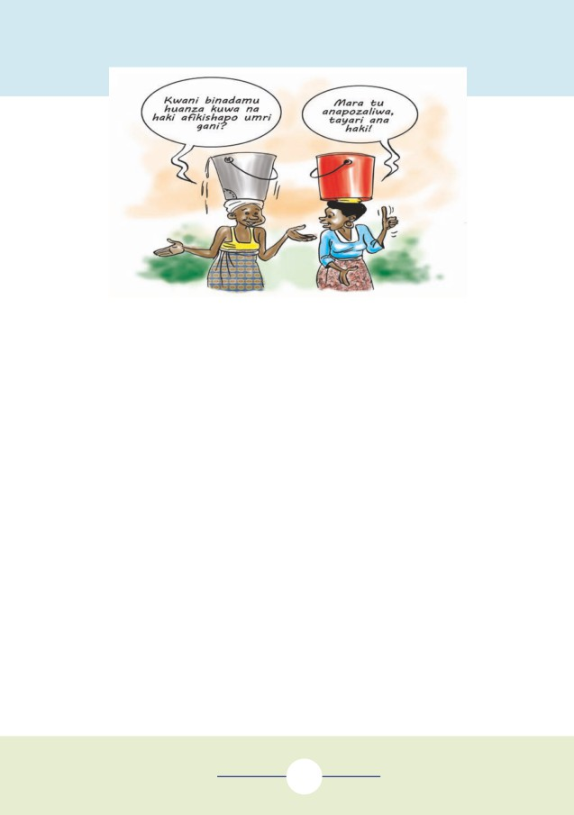
Chimbuko na Utambuzi wa Haki za Binadamu
Kwa kipindi kirefu haki za binadamu zimekuwepo na kuongoza maisha ya mwanadamu
kulingana na asili ya kila mwanadamu. Kukua na kutambulika kwa haki za binadamu
kumepitia madaraja kadhaa kulingana na hatua kadhaa za kukua kwa jamii. Kabla ya karne
ya 19 haki hizi zilikandamizwa na kupuuzwa na jamii, serikali iliyotawala katika jamii husika
na wakati mwingine mataifa yaliyoingia kutawala mataifa mengine. Hali hii ililawalazimisha
watetezi wa haki za binadamu kufanya kazi ya ushawishi ili kuanza hatua ya kuainisha na
kuzitambua haki za binadamu.
Hatua ya kwanza kabisa ya utambuzi wa haki za binadamu ilitokana na kuzidi kwa vitendo
vya ubaguzi, ukatili, unyanyasaji, kutumikisha watu kwa kuwaita watumwa na uonevu dhidi
ya binadamu na matendo mengine ya aina hiyo. Hali hii ililazimisha mataifa kuzitambua
haki za binadamu kupitia Tamko la Kimataifa la Haki za Binadamu la mwaka 1948. Tamko
hili liliweka bayana haki za binadamu na stahiki zake ikiwa ni pamoja na mataifa kuweka
mikakati ya kuziheshimu, kuzilinda na kuzitekeleza.
Tamko la Kimataifa la Haki za Binadamu la Mwaka 1948
Tamko hili limekubaliwa na kupitishwa na Baraza Kuu la Umoja wa Mataifa tarehe 10
Desemba, mwaka 1948; (na hivyo kufanya tarehe 10 Desemba kuwa siku ya haki za
binadamu duniani). Tamko hili ndilo chimbuko la kulindwa kwa haki za binadamu duniani
kote. Tamko hili linajumuisha, kwa pamoja, aina zote za haki za binadamu, yaani haki za
kiraia na kisiasa, na haki za kiuchumi, kijamii na kiutamaduni.
Tamko hili ndilo linachukuliwa kama tafsiri au ufafanuzi rasmi wa viwango vya kimataifa
vya haki za binadamu. Pia linachukuliwa kuwa ndiyo kielelezo kikuu cha viwango vya haki
za binadamu kwa kila nchi, hata kama sheria za nchi hiyo hazilindi haki za binadamu.
Tamko la Kimataifa la haki za binadamu ni “tamko” halina masharti ya kuzibana nchi
kutekeleza haki za binadamu kisheria. Pamoja na kuwa halina nguvu kisheria. Tamko hili
48
linaheshima kubwa sana kimataifa na nchi nyingi wamelitambua na kuingiza kwenye katiba
zao. Tanzania imefanya hivyo katika ibara ya 9 (f ) ya Katiba ya nchi ya mwaka 1977, kama
ilivyorekebishwa mara kwa mara.
Ili kuzipa haki za binadamu nguvu zaidi za kisheria na kuzibana nchi wanachama, Baraza
Kuu la Umoja wa Mataifa lilipitisha mikataba miwili mikuu ya haki za binadamu ya mwaka
1966, ambayo ni Mkataba wa Kimataifa wa Haki za Kiraia na Kisiasa na Mkataba wa
Kimataifa wa Haki za Kiuchumi, Kijamii na Kiutamaduni.
Mkataba wa Kimataifa wa Haki za Kiraia na Kisiasa wa Mwaka 1966
Mkataba wa Kimataifa wa Haki za Kiraia na Kisiasa ulipitishwa na Baraza Kuu la Umoja wa
Mataifa mwaka 1966 na kuanza kutumika Machi, 1976. Tanzania imeukubali na kuuridhia
mkataba huo tarehe 11 Septemba 1976. Nchi mwanachama wa Mkataba huu, ikiwemo
Tanzania, wamekubali:-
➣ Kuheshimu na kuwahakikishia watu wote uwepo wa haki hizi bila ubaguzi wa aina
yoyote, kama vile rangi, kabila, lugha, dini, asili au utaifa wao;
➣ Kupitisha sheria na hatua nyingine za kulinda haki zilizomo kwenye mkataba pale
ambapo sheria au hatua zozote hazijafanywa;
➣ Kuhakikisha mtu yeyote aliyeingiliwa au kukiukwa kwa haki na uhuru wake anapata
ufumbuzi kama vile kulipwa fidia;
➣ Kuhakikisha usawa kati ya wanaume na wanawake katika kufaidi haki za kiraia na
kisiasa zilizoorodheshwa kwenye mkataba.
Katika kuhakikisha kuwa kila taifa linakamilisha makubaliano ya pamoja mwaka 1966
ulipitishwa Mkataba wa Haki za Kiraia na Kisiasa ulioweka bayana orodha ya haki za
binadamu ikiwa ni pamoja na hitajio la kuziheshimu, kuzilindwa dhidi ya ukatili, unyanyasaji
na uonevu wa aina nyingine yeyote na kuhakikisha utekelezaji wake kitaifa na kimataifa.
Orodha kamili ya haki za kiraia na kisiasa inajumuisha haki zifuatazo:-
➣ Haki ya kuishi, ukamilifu, uhuru na usalama wa mtu;
➣ Haki mbele ya vyombo vya sheria;
➣ Haki ya faragha;
➣ Haki ya kuabudu dini au imani;
➣ Haki ya kutoa maoni na kujieleza;
➣ Haki ya mtu kwenda kokote na makazi;
➣ Haki ya kukusanyika na kujiunga kwenye kikundi au chama chochote;
➣ Haki ya kushiriki katika masuala ya kisiasa, kwa mfano, kupiga kura na kupigiwa kura,
haki ya ya kusema anachoamini; n.k.
Kwa ujumla haki hizi zinalindwa na mamlaka za nchi kama vile serikali. Na pale panapotekea
haki hizi zinavunjwa na mtu, mtu huyo anastahili kukamatwa na kufikishwa mbele ya
vyombo vya dola ili ajibu mashtaka ya kuvunja haki za binadamu.
Hatua ya pili ilikuwa ilikuwa ni utambuzi wa haki za binadamu ambazo zinakamilisha
ukamilifu wa haki za kiraia na haki za kisiasa. Hatua hii ilipitishwa na jumuiya ya kimataifa
mwaka ule ule wa 1966 kupitia Mkataba wa Kimataifa wa Haki za Kiuchumi, Kijamii na
Kiutamaduni.
49
Mkataba wa Kimataifa wa Haki za Kiuchumi, Kijamii na Kiutamaduni wa Mwaka
1966
Mkataba wa Kimataifa wa Haki za Kiuchumi, Kijamii na Kisiasa ulipitishwa na Baraza Kuu
la Umoja wa Mataifa tarehe 16 Desemba 1966 na umeanza kutumika tarehe 3 Januari 1976.
Tanzania imekubali na kuuridhia Mkataba huu tarehe 11 Septemba 1976. Nchi wanachama
wa mkataba huu zina majukumu ya jumla yafuatayo:-
➣ Kuchukua hatua - peke yake au kupitia msaada na ushirikiano wa kimataifa, hasa
hatua za kiuchumi na kiufundi kwa kadri ya hali ya rasilimali zake - kwa lengo la
kuhakikisha kuwa haki zilizomo zinafaidiwa, hatua kwa hatua, kwa njia zote muafaka,
ikiwemo kupitisha sheria;
➣ Kuhakikisha watu wake wanafaidi haki bila ubaguzi;
➣ Kuhakikisha usawa kati ya wanaume na wanawake katika kufaidi haki zilizoorodheshwa
kwenye mkataba huu.
Kwa hiyo, hatua hii ilizitambua na kuzijuisha haki za kiuchumi, kijamii na kiutamaduni
katika mikakati ya utekelezaji wa haki za binadamu. Orodha kamili ya haki za kiuchumi,
kijamii na kiutamaduni inajumuisha haki zifuatazo:
➣ Haki kufanya kazi katika mazingira mazuri ya kazi;
➣ Uhuru wa kuwa au kujiunga kwenye vyama vya wafanyakazi;
➣ Haki ya kiwango cha kutosheleza cha maisha (ikiwemo chakula, mavazi na malazi);
➣ Haki ya afya, kupumzika, burudani na starehe;
➣ Haki ya elimu;
➣ Haki ya kushiriki katika maisha ya kiutamaduni ya jamii inayomhusu; n.k
Kwa kawaida haki hizi zinapaswa ziheshimiwe, zilindwe na kutekelezwa na serikali kwa
kutumia mifumo kadhaa ya serikali. Kwa mfano, haki ya kupata elimu na afya bora inataka
serikali kuweka mifumo itakayowezesha upatikanaji wa haki hizi kwa raia wake.
Baada ya utambuzi wa haki za binadamu kupitia hatua hizo hapo juu, jumuia ya kimataifa na
wanachama wake imeendelea kuainisha na kuzitambua haki kadhaa za makundi mbalimbali
kama vile haki za wanawake, haki za watoto, haki za wazee, haki za mazingira mazingira bora
na salama, haki za Maendeleo, haki za kijtawala, haki ya kutumia rasilimali za nchi kwa faid
ya wananchi na haki za watu wenye ulemavu kulingana na hitatijio katika jamii.
Mkataba wa Kiafrika wa Haki za Binadamu na Haki za Watu wa Mwaka 1981
Mkataba huu ulipitishwa na wakuu wa nchi na serikali za Umoja wa Nchi za Afrika (OAU),
Nairobi - Kenya mwaka 1981. Hadi leo nchi zote za Afrika ni wanachama wa Mkataba
huu. Nchi wanachama zina wajibu wa kutambua haki, uhuru na wajibu uliomo kwenye
mkataba na kuchukua hatua za kisheria kuzipa nguvu haki. Mkataba wa Kiafrika wa Haki
za Binadamu na Haki za Watu unatambua na kulinda aina zote za haki za binadamu yaani
haki za kisiasa, kiraia, kiuchumi, kiutamaduni na kijamii. Kwa mantiki hii Mkataba huu
unazitambua haki za binadamu kwa pamoja.
50
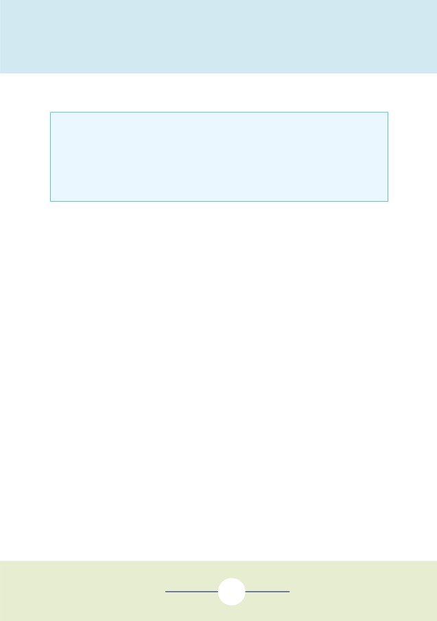
Mfano wa haki za binadamu zinazotambuliwa na kulindwa kwa Haki za Binadamu ni
pamoja na Haki ya kutobaguliwa, usawa, haki ya kuheeshimiwa, haki na uhuru ya kuabudu
na kujumuika na wengine.
Ulinzi wa Haki za Binadamu.
Jinsi ya Kuendesha
Mwezeshaji anzisha mjadala juu ya ulinzi wa haki za Binadamu. Washiriki wafikirie namna
ambavyo haki za Binadamu zinaweza kulindwa katika jamii zao na kwa nini? Hivyo basi,
kwa kutumia mbinu ya bangua bongo, wajibu swali lifuatalo;
Je, unadhani kuna umuhimu wowote wa kulinda haki za binadamu katika jamii yako?
Kwa nini?
Mchango wa Mwezeshaji
Mwezeshaji endeleza mjadala kwa kusisitiza umuhimu wa kulindwa haki za Binadamu
duniani licha ya kuwa haki hizi za Binadamu huzaliwa nazo. Fafanua, kwa ufupi, jinsi
hati au mikataba hii ilivyotengenezwa, aina za haki zinazolindwa na majukumu ya nchi
wanachama, kama vile Tanzania, ndani ya hati au mikataba hii.
Mlinzi wa kwanza wa haki hizi ni binadamu mwenyewe akifuatiwa na vyombo vya dola.
Hata hivyo, vyombo vya dola kama vile polisi, majeshi na serikali katika kutekeleza ulinzi wa
haki za binadamu na vyenyewe hujikuta vikivunja haki za binadamu. Hivyo, ili kuhakikisha
kuwa haki za binadamu zinalindwa na kutekelezwa, Katiba ya nchi husika hulazimika kuwa
na vipengele vya Haki za Binadamu.
Hapa Tanzania Haki za Binadamu zinaorodheswa vizuri katika Katiba ya Jamhuri ya
Muungano ya Mwaka 1977 kama ilivyorekebishwa katika ibara 12 hadi 30. Huu ni msingi
wa awali kabisa unaolazimisha Katiba zote zitakazotungwa katuka nchi ziwe na kipengere
hiki muhimu kwa wananchi. Kwa mfano, Katiba Inayopendekezwa imeainishwa vizuri
vipengere vya haki za binadamu.
Hivyo, ili kuhakikisha utekelezaji wa haki za binadamu unaenda inavyotakiwa bunge
hulazimika kutunga sheria zinazoainsha na kutoa namna haki na wajibu wa binadamu
itakavyotekezwa na raia. serikali na vyombo vyake. Pale haki hizi zinapovunjwa na raia au
seriakli na ama chombo kingine chochote dhidi ya raia au kundi la watu, mtu huyo au kundi
la watu wanaweza kupekeleka malamiko yao mahakamani au kwenye vyombo vyovyote
kama vile Tume ya Haki za Binadamu na Utawala Bora.
Sifa za Haki za Binadamu
Haki za binadamu zina sifa kuu zifuatazo;
i.
Zinalinda na kuheshimu utu na thamani ya kila binadamu
ii.
Hazibagui: kwa misingi ya jinsia, rangi, kabila, ukoo, dini, itikadi za kisiasa,
uwezo wa mtu kifedha au rika, makundi ya jamii (yaani haki hizi ni za ulimwengu
mzima);
51
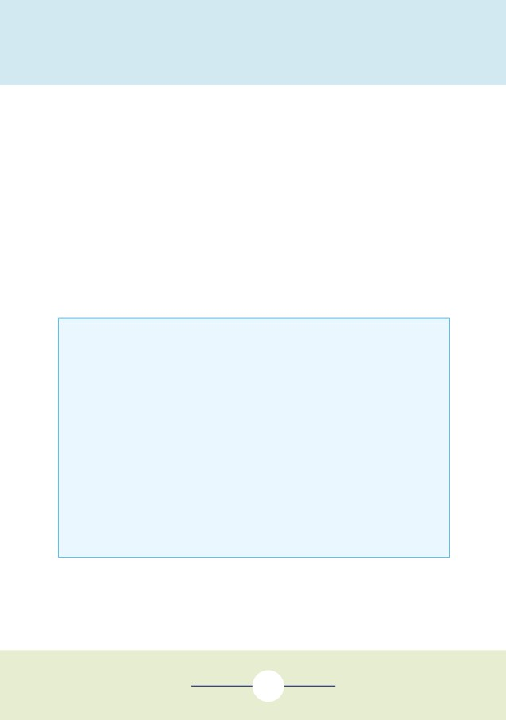
iii.
Ni za asili: zipo bila kutegemea utashi wa mtu au kikundi cha watu. Kwa maneno
mengine, haki za binadamu hazipewi au kutolewa na mtu au kikundi cha watu.
Zinaweza zisitambuliwe au kuheshimiwa lakini bado ni za mtu/binadamu;
iv.
Zote ni sawa na zinategemeana: Hii ni kwa sababu ni vigumu kuheshimu baadhi
ya haki na kudharau nyingine. Mfano haki ya kuishi inahusiana kwa karibu sana na
haki ya kupata chakula, malazi na makazi bora.
v.
Hazipokonyeki au kuchukulika:kwa mfano na vyombo vya dola au mtu yeyote.
Hii inamaanisha kuwa haki za binadamu si upendeleo ambao unaweza kupokonywa
kama adhabu. Na pia hazitolewi kama zawadi ya kutimiza maadili/jambo fulani.
Serikali, kikundi cha watu au mtu yeyote hawezi kuzichukua au kuziondoa haki za
mtu - kama isivyowezekana kubatilisha hali ya mtu kuwa mtu. Hata hivyo, haki za
binadamu zinaweza kuwekewa mipaka. Mfano, uhuru wa mtu unaweza kuwekewa
mipaka/ masharti na mahakama iwapo mtu ametenda kosa la jinai.
Mwisho wa mada
Mwezeshaji funga mjadala kwa kusisitiza kuwa haki za binadamu ni haki za asili ambazo kila
binadamu huzaliwa nazo. Hii ni tofauti na sheria za haki za binadamu ambazo zina lengo la
kulinda na kukuza haki za binadamu kwa madhumuni ya kulinda utu wa binadamu.
Jamii ya Haki za Binadamu
Jinsi ya Kuendesha
Mwezeshaji kwa kutumia mbinu ya mjadala au bangua bongo, waulize maswali yafuatayo
washiriki;
a. Je mahitaji muhimu ya binadamu yaweza kugawanywa?
b. Mwezeshaji pamoja na washiriki waanze kwa kuandaa orodha ya vitu ambavyo
wanadhani ni lazima mtu/binadamu awe navyo au kuvipata ili aweze kufaidi
utu wake kama binadamu. Baada ya kuorodhesha mwezeshaji abandike orodha
iliyopatika ukutani au sehemu ya wazi;
c. Kisha, chora majedwali tofauti ubaoni au piga mistari tofauti katika bango kitita na
kila jedwali au kalamu ipe majina A, B, C, na D (kadri watavyopenda washiriki);
Washiriki wachague vitu wanavyodhani vinafanana au kushabihiana na waviandike
kwenye jedwali A, B, C au D, kimoja baada ya kimoja (kitu kimoja kinaweza kuwa
kwenye jedwali zaidi ya moja). Wakati wa zoezi hili, sisitiza washiriki watoe sababu
za kuweka/kuvitenganisha vitu hivyo. Sababu zinazotolewa ziandikwe kwenye kila
jedwali;
d. Malizia kwa kuhesabu idadi ya makundi/namba ya majedwali uliyopata katika
kugawanya vitu muhimu anavyohitaji binadamu.
Mchango wa Mwezeshaji
Baada ya zoezi hili kukamilika, mwezeshaji endeleza mjadala kwa kutumia maswali
yafuatayo:-
➣ Haki gani ni muhimu kwako na kwa jamii yako?
➣ Haki zote wanazofikiri watu, je watu wanazihitaji ili kuishi kwa utu na haki sawa?
Mwezeshaji wafafanulie washiriki mgawanyo wa haki za binadamu kama ulivyoainishwa
52
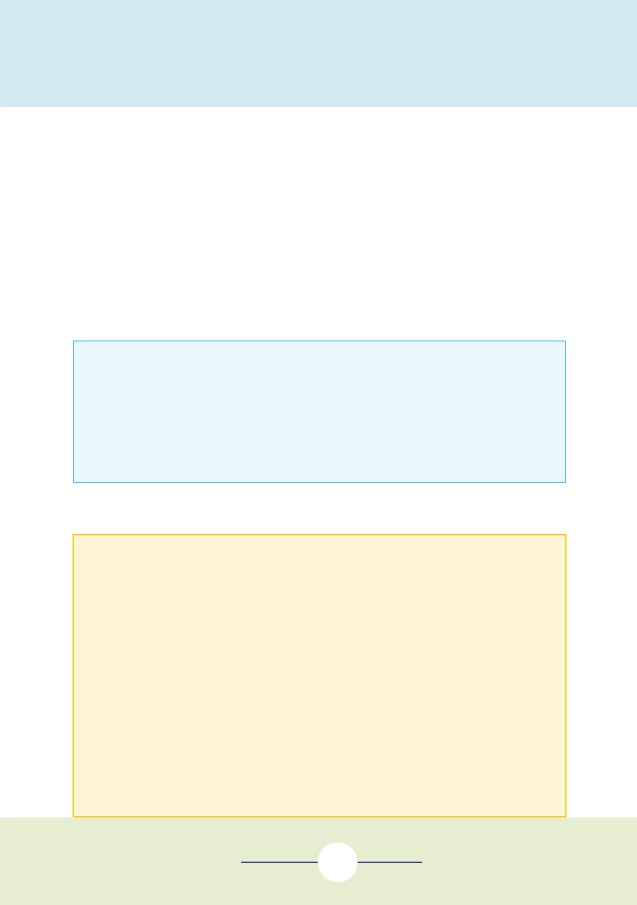
ndani ya jedwali hapa chini kulingana na kiwango cha uelewa wa washiriki, Mwezeshaji
anaweza kueleza ni kwanini haki za binadamu zimegawanywa katika makundi tofauti..
Angalizo: Vizazi hivi vimetokana na mijadala mbalimbali iliyofikia maamuzi ya kuziweka
haki za binadamu katika mikataba miwili tofauti ya kimataifa. Nchi za magharibi zilijali
zaidi haki za kizazi cha kwanza, wakati nchi za mashariki ziliweka kipaumbele haki za kizazi
cha pili. Nchi zinazoendelea zinaweka msisitizo katika haki za kizazi cha tatu.
Hata hivyo, imethibitika kuwa licha ya mgawanyo wa haki za binadamu katika makundi
matatu, haki za binadamu zimeshikana na zinahusiana. Mfano; haki ya kuishi, ili mtu
aishi anahitaji chakula, malazi na pia matibabu. Pia mtu akipewa haki ya kujieleza, lakini
asipatiwe haki ya elimu, basi maelezo yake yanaweza yasiwe na manufaa sana kwake. Vivyo
hivyo, kama mtu akipewa haki ya uhuru ya kwenda atakako wakati hakuna amani na kuna
vita, hataweza kufaidi haki ya kufanya hivyo. Pia, haki ya raia kushiriki uchaguzi kama
vile kupiga kura ni wazi kuwa serikali inahitaji pesa kuandaa chaguzi kama vile karatasi za
kupigia kura na pia kulipa wasimamizi
Maelekezo kwa Mwezeshaji
Mwezeshaji malizia mjadala katika mada hii kwa kuwauliza washiriki maswali yafuatayo:
➢ Kati ya haki ya kuishi na kupata matibabu, ipi ni ya muhimu kwa binadamu kuliko
nyingine?
➢ Je haki ya uhuru wa mtu kuongea ni bora zaidi kuliko haki ya kupata chakula
➢ Je unakubaliana na mgawanyo huu wa haki za binadamu? Kama hukubaliani nao,
haki zipi ungefanya ni za kizazi cha kwanza, kizazi cha pili na cha tatu?
Uvunjwaji/Ukiukwaji wa Haki za binadamu
Jinsi ya Kuendesha
Wasomee washiriki habari iliyoandikwa na gazeti la Kombora linalotoka kila wiki kuhusu
kisa cha mama Mzobi.
Mama Mzobi ni muuza maandazi maarufu kando ya barabara ya Tendali, ambayo ni
maarufu mno kwa biashara ndogondogo. Inasemekana kuwa eneo la Tendali limeathiriwa
na kipindupindu. Asubuhi ya jumamosi ya wiki iliyopita, Mama Mzobi, kama kawaida
yake aliamka mapema kwa ajili ya kufanya kazi ya kupika maandazi, na jumamosi ndio
siku ya kutengeneza faida kutokana na kuwa na watu wengi wapo majumbani mwao,
hawendi kazini. Hivyo alipika maandazi mengi na kuyapanga kwenye sinia lake barabarani
kusubiria wateja. Mnamo majira ya saa mbili na robo hivi, askari wa jiji kama watatu hivi
walimfuata mama Mzobi na bila kusema kitu chochote walibeba sinia lake la maandazi na
kulitupa ndani ya karandinga. Hiyo haitoshi, wakamvamia mama Mzobi kwa vipigo na
kumbeba mzobemzobe na kumtupa ndani ya karandinga lao. Moja kwa moja hadi ofisini
kwao wakamfungia mama Mzobi kwenda kukamata wengine. Mama Mzobi alijaribu
53
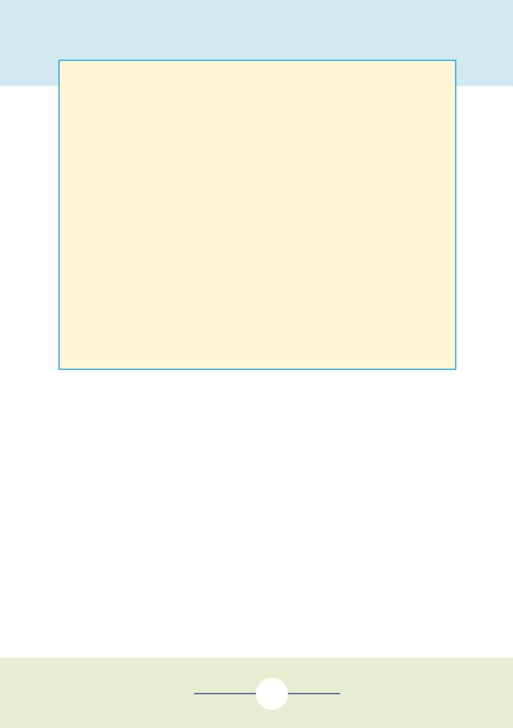
kutoroka na bahati mbaya askari wa jiji wakamuona na kumpa vipigo tena na kuamua
kumpeleka polisi; ambapo huko nako alipewa vipigo na kebehi baada ya tu kuwauliza polisi
kosa lake ni lipi hadi kufikishwa pale. Mama Mzobi ameswekwa ndani. Na jumatatu asubuhi
polisi wakamuachia bila kumfungulia mashtaka yoyote. Akiwa njiani kurudi nyumbani
Mama Mzobi anakutana na Mwandishi wa habari hii, ambae ni mteja wake maarufu wa
maandazi na kumuuliza kulikoni hakupika maandazi kwa siku mbili zilizopita. Mama
Mzobi akaeleza yaliyomkuta. Ni kweli mwenzetu yamemkuta!
Baada ya kueleza hadithi hiyo, mwezeshaji anzisha mjadala juu ya ukiukwaji na uvunjwaji
wa haki za binadamu. Ili kuchochea mjadala, unaweza kuwauliza washiriki maswali
yafuatayo:
➢ Kuna kosa lolote ametendewa mama Mzobi? Ni kosa gani?
➢ Nani ametenda kosa hilo?
➢ Kwani Mama Mzobi ana haki yeyote pale? Haki gani?
➢ Unafikiri ni kwa nini kuna ukiukwaji wa haki za binadamu?
➢ Je ni haki gani zinakiukwa katika wilaya au kijiji chenu? Kwa vipi na kwa nini?
➢ Nani anakiuka haki za binadamu katika wilaya au kijijini kwenu?
Mchango wa Mwezeshaji
Mwezeshaji toa mchango wako kwa kueleza nadharia juu ya ukiukwaji wa haki za
binadamu.Ni muhimu washiriki kuelewa dhana ya uvunjwaji na ukiukwaji wa haki za
binadamu.
Maana ya Ukiukwaji wa Haki za Binadamu
Ukiukwaji wa haki za binadamu ni ile hali ya kukataa, kukataza, kumnyima na kuminya
stahili ambazo binadamu anapaswa kuzifaidi kwa kuwa tu yeye ni bindamu.
Kiasili haki za binadamu zinadaiwa dhidi ya serikali. Hata hivyo, kadri muda unavyokwenda,
inaonekana dhahiri kuwa hata watu binafsi wanahusika na ukiukwaji wa haki za binadamu.
Watu binafsi wakitenda vitendo vya ukiukwaji haki na wasipochukuliwa hatua na serikali,
basi ndipo suala hilo linakuwa la haki za binadamu na serikali inapaswa kuwajibika.
Ukiukwaji wa haki za binadamu unajumuisha:-
a)
Kwa Serikali:
i)
Kufanya vitendo vinavyokiuka haki za binadamu kama vile kupitisha sheria, sera au
matendo yanayoingilia watu katika kufaidi haki zao.
ii)
Kwa kutofanya mambo ambayo ni muhimu kwa watu kufaidi haki zao kama vile
kujenga shule, hospitali au kuandaa chaguzi.
b) Pia ukiukwaji wa haki za binadamu unatokea pale serikali inapojitoa au kuondoa vitu
vinavyolinda haki za binadamu. Kwa mfano, Serikali kutokuweka ulinzi wa mali na
raia hivyo raia kupoteza haki yao ya kumiliki mali na kwenda popote kwa amani.
c)
Pia ukiukwaji wa haki za binadamu unatokea pale vyombo vya dola vinapofanya
54
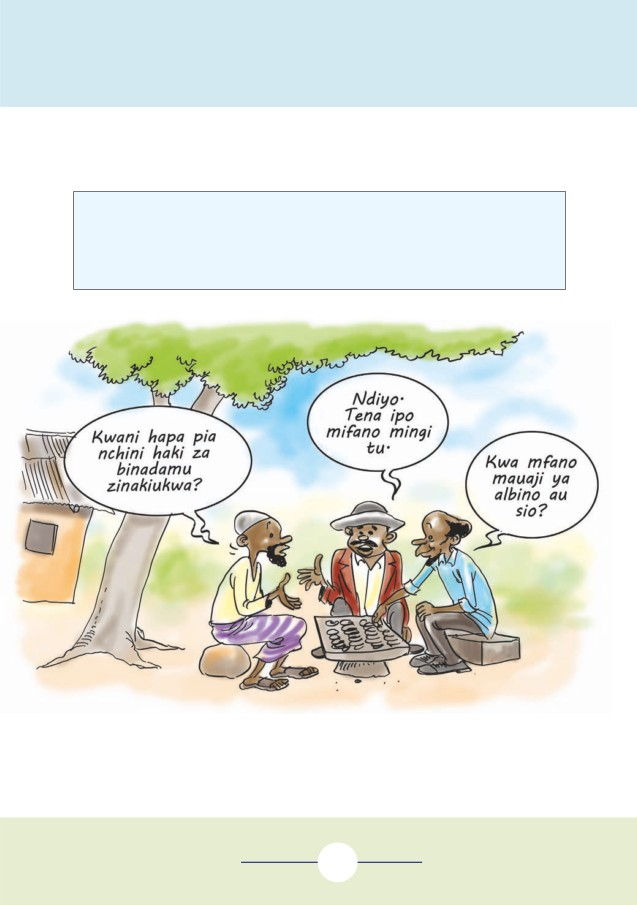
matendo yanayokiuka haki za binadamu kwa mfano kupiga raia au watuhumiwa,
kuwatesa, kunyima dhamana, na kuwashikilia bila kuwafikisha mahakamani
d) Haki za binadamu pia zinakiukwa pale wananchi na jamii wanapotenda matendo
yanayokiuka haki za binadamu kwa mfano mauaji ya watu wenye ulemavu wa ngozi
(albino), mauaji ya vikongwe na kujichukulia sheria mkononi, kwa mfano kuchoma
moto au kupiga wezi/vibaka
Maelekezo kwa mwezeshaji
Mwezeshaji malizia mada hii kwa kuwataka washiriki wajadili suala lolote
wanalodhani ni la ukiukwaji wa haki za binadamu katika eneo, kijiji, wilaya au
mkoa wao.
55
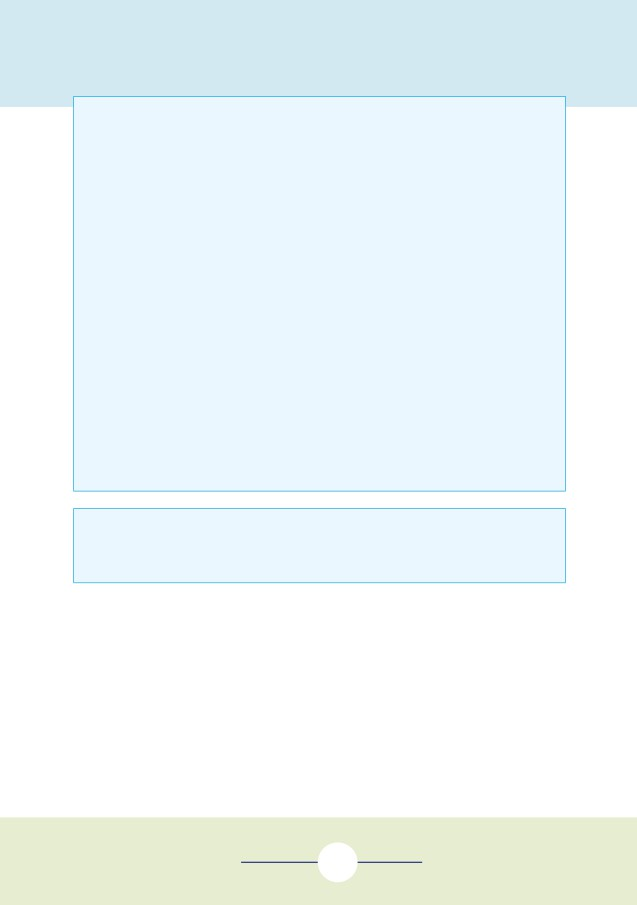
Faida za Kuheshimu Haki za Binadamu katika Jamii
Jinsi ya Kuendesha
Mwezeshaji gawa makundi manne ya washiriki wajibu maswali yafuatayo. Unaweza
kutumia mtindo wa bungua bongo au maswali ya haraka, kuuliza washiriki umuhimu wa
haki za binadamu katika jamii au maisha yao ya kila siku.
Maswali ya Mwongozo
➢ Unafikiri haki za binadamu zikilindwa, kuna faida gani katika ngazi ya familia, jamii
na taifa?
➢ Unafikiri haki za binadamu zisipolindwa, kutakuwa na athari jamii yako itaathirika?
Kwa vipi?
Mazoezi zaidi kwa Washiriki
Baada ya kujadili maana ya haki za Binadamu na pia kujifunza jamii ya haki za Binadamu,
ni vizuri washiriki wajikumbushe somo hili. Unaweza kugawa washiriki katika
vikundi na kujibu Maswali yahusuyo mada iliyopita.
➢ Binadamu ana sifa zipi?
➢ Haki za Binadamu ni nini?
➢ Taja sifa tano (5) za haki za Binadamu
➢ Taja haki tano (5) za kiuchumi, kijamii na kiutamaduni unazozijua?
➢ Je unazijua haki za kizazi cha tatu? Zitaje.
➢ Haki za binadamu zina umuhimu gani katika maisha yako ya kila siku ?
➢ Elezea ni vipi haki za binadamu hasa hasa za makundi maalumu kama vile wanake
na watoto, watu wenye ulemavu, wazee na masikini zinakiukwa/zinavunjwa katika
kijiji au wilaya yenu?
Maelekezo kwa Mwezeshaji
Mwezeshaji funga mjadala wa mada hii kwa kuonyesha umuhimu wa kuheshimu na
kuthamini utu wa kila mtu. Mwezeshaji, sisitiza uhusiano wa haki za binadamu na jamii
na pia uonyeshe ni kwa nini haki za binadamu inabidi zilindwe na kuheshimiwa.
Faida za Kuheshimu Haki za Binadamu
Ziko faida nyingi za kuheshimu haki za binadamu. Faida ambazo Taifa huweza kupata kwa
kuheshimu na kulinda haki za binadamu ni kama zifuatazo:
➣ Hufanya jamii iwe na haki na usawa
➣ Jamii huwa ya amani na utulivu
➣ Jamii iwe na maendeleo: haki za binadamu zinafanya jamii iendelee kwa kutumia utu
wako, ustaarabu na uhodari wao.
➣ Utii na imani ya umma kwa uongozi wa Taifa hujengeka zaidi pale haki za binadamu
zinapolindwa na kuzingatiwa na dola;
➣ Haki zikiheshimiwa, husaidia uendeshaji bora wa mashtaka mahakamani
➣ Wasimamizi wa sheria huaminika kama sehemu muhimu ya jamii;
➣ Kushamiri kwa usimamizi bora wa mfumo wa usimamizi na utoaji wa haki;
➣ Wasimamizi wa sheria wanakuwa mifano bora kwa jamii;
➣ Wasimamizi wa sheria wanakuwa karibu zaidi na raia, hivyo kuwapa uwezo wa
56
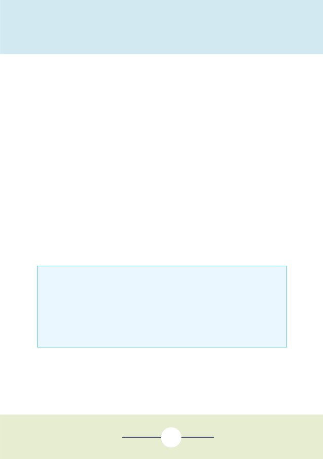
kufanya kazi yao kwa umakini na usahihi zaidi pamoja na kuweza kuzuia uhalifu;
➣ Hali ya uchumi huimarika kwa kuwa heshima kwa haki za binadamu huboresha
ustawi wa jamii, pamoja na uzalishaji mali katika jamii. Badala ya watu kushughulikia
migogoro, hujishughulisha zaidi na shughuli za kiuchumi na uzalishaji mali.
➣ Heshima ya Taifa huimarika mbele ya jumuiya ya kimataifa na hivyo kuvutia
wawekezaji, watalii na shughuli nyingi zaidi za kibiashara kutokana na kuimarika
kwa amani na utulivu
➣ Dola hupata uhalali zaidi wa kisiasa na kisheria kwa wananchi wake, hivyo kusababisha
Taifa kuwa imara na salama zaidi
Mchango wa Mwezeshaji
Mwezeshaji sisitiza faida na umuhimu wa kuheshimu na kuthamini utu wa kila mtu kwa
kukusitiza mambo kadahaa kama ifuatavyo:
Haki hizo zisipoheshimiwa, huleta hasara kubwa katika jamii ikiwemo adhabu kali za
kisheria huweza kutolewa na mahakama, kulazimishwa na mahakama kulipa fidia kubwa,
husababisha migogoro katika jamii ikiwemo vita, kuchafua sifa njema ya taifa (mfano mauaji
ya watu wenye ulemavu wa ngozi(Albino), uongozi wa taifa kupoteza sifa ya kuaminiwa na
umma, kuyumba kwa uthabiti wa mfumo wa utawala wa taifa, kupungua kwa usalama wa
taifa, kuzuia ufanisi katika kusimamia haki mahakamani, kujenga ufa na utengano baina
ya wasimamizi wa sheria na umma wao, kusababisha wahalifu kuachiwa huru na watu
wasiokuwa na hatia kutiwa hatiani na kuadhibiwa, kuwaacha wahanga au waathirika wa
uhalifu wakiendelea kuteseka na bila kupata nafuu yeyote ya kisheria, kusababisha askari na
wasimamizi wa sheria kuhusika katika kupambana zaidi na uhalifu kuliko kuuzuia, kuifanya
dola na vyombo vya serikali kudharauliwa na kubezwa na raia, kuhamasisha vuguvugu na
harakati zisizotulia za wananchi kudai haki zao kwa nguvu n.k
Serikali za Mitaa na Haki za Binadamu
Jinsi ya Kuendesha Mwezeshaji gawa karatasi kwa washiriki wanne wanne walioka
mahala pamoja na kisha wajadiliane na kujibu yafuatayo;
a. Je katika vijiji na mitaa wanayotoka, haki za binadamu zimekuwa zikilindwa au
kuvunjwa?
b. Serikali za mitaa zimekuwa zikihusika vipi na ulinzi wa haki za binadamu?
c. Je sheria ndogondogo zinazotungwa na serikali za mitaa zinalinda au kukiuka
haki za binadamu?
d. Je ni nani amezitunga sheria hizo?
Mchango wa Mwezeshaji
Mwezeshaji fafanua kuwa mamlaka za serikali za mitaa nchini Tanzania zina wajibu wa
kikatiba na kisheria kulinda na kuheshimu haki za binadamu. Hata hivyo uzoefu hapa
nchini unaonesha kuwa kwenye ngazi ya vijiji na mitaa kumekuwa na uvunjaji mkubwa
wa haki za binadamu. Haki ambazo huvunjwa mara nyingi ni pamoja na haki ya kushiriki
katika maamuzi; haki ya kumiliki mali; haki ya mtu kutendewa kama mtu asiyekuwa na
hatia hadi atakapotiwa hatiani na mahakama; haki ya usawa kwa wote; haki za makundi -
mfano, haki za wanawake, haki za watu wenye ulemavu, na haki za watoto.
57
Masuala mengi yanayowahusu wanakijiji au wanamtaa yanapaswa kujadiliwa na mkutano
wa Kijiji au Mtaa ambao kisheria hupaswa kufanywa kila baada ya miezi mitatu. Hali
kadhalika, halmashauri ya kijiji imepewa mamlaka ya kutunga sheria ndogo za kijiji.
Wakati wa utungaji wa sheria hizo ni lazima wananchi washirikishwe na kuhakikisha sheria
hazikinzani au kwenda kinyume na sheria mama (Katiba ya nchi). Uzoefu unaonyesha kuwa
hayo yote mara nyingi huwa hayafanyiki. Viongozi hujiamulia mambo yao bila ya wananchi
kushiriki na kutoa ridhaa yao.
Wajibu wa Viongozi
Katika ngazi hii, viongozi wa Vijiji au Mitaa wanao wajibu kisheria kuhakikisha kuwa
wananchi wanashiriki kikamilifu katika kuamua mustakabali wa maisha yao kupitia vikao
halali vya Serikali za Vijiji au Mitaa. Viongozi wanao wajibu wa kufahamu sheria, Katiba
pamoja na haki za msingi za raia. Hali kadhalika, viongozi wanapaswa kuwajibika katika
kusimamia utekelezaji wa sheria na udhibiti wa amani na usalama katika maeneo yote ya
vijijini vyao au mitaa yao.
Sheria Ndogondogo na Haki za Binadamu
Katika kutunga sheria ndogondogo, halmashauri inapaswa kuhakikisha kuwa haki za msingi
za binadamu zinasimamiwa na kupewa kipaumbele. Maofisa na viongozi wa Halmashauri za
Serikali za Mitaa kwa ujumla wao wana jukumu la ziada kuhakikisha kuwa wananchi wanafaidi
haki yao ya kikatiba ya kushiriki katika shughuli za uendeshaji wa nchi au halmashauri yao.
Pamoja na sheria kusisitiza ushiriki wa wananchi, bado utaratibu unaotumika haujaweza
kuhakikisha ushiriki wa kutosha wa wananchi katika kutunga sheria hizo. Kwa sababu hiyo,
maofisa na viongozi wa Halmashauri za Serikali za Mitaa wana wajibu wa kuhakikisha kuwa
wananchi wanashiriki, kwa kufanya yafuatayo:
➣ Kupokea maoni ya wananchi kuhusu mambo ambayo yanapaswa kutungiwa sheria
ndogo.
➣ Kupokea maoni ya wananchi kuhusu sheria ndogo zinazopaswa kurekebishwa au
kufutwa.
➣ Kuwajulisha wananchi kuhusu miswada au mapendekezo ya halmashauri ya kutunga
sheria ndogo.
➣ Kupokea maoni ya wananchi kuhusu miswada ya sheria ndogo
➣ Kuwasilisha na kusimamia maslahi ya wananchi wakati wa kutunga sheria ndogo.
➣ Kuhakikisha wakati wote kuwa sheria ndogo zinazotungwa hazikiuki haki za msingi
za wananchi zilizowekwa kwa mujibu wa Katiba ya Jamhuri ya Muungano wa
Tanzania.
Kwa ujumla maofisa na viongozi wa Halmashauri za Serikali za Mitaa wana wajibu wa
kuhakikisha kuwa Ibara ya
21(2) ya Katiba ya Jamhuri ya Muungano inatekelezwa
kikamilifu. Ibara hii inasema hivi:
Uhuru wa kushiriki shughuli za umma
i.
“Bila ya kuathiri masharti ya ibara ya 5, ya 39 na ya 67 ya Katiba hii na ya sheria
za nchi kuhusiana na masharti ya kuchagua na kuchaguliwa, au kuteua na kuteuliwa
58
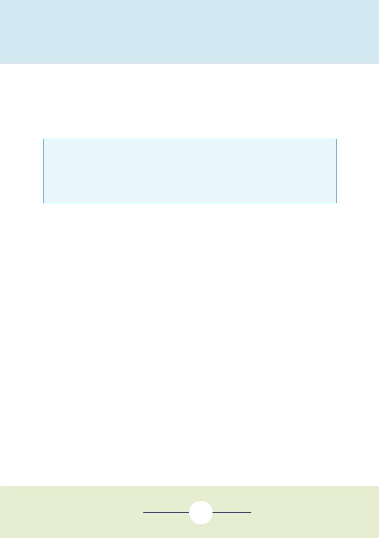
kushiriki katika shughuli za utawala wa nchi, kila raia wa Jamhuri ya Muungano
anayo haki ya kushiriki katika shughuli za utawala wa nchi, ama moja kwa moja au
kwa kupitia wawakilishi waliochaguliwa na wananchi kwa hiari yao, kwa kuzingatia
utaratibu uliowekwa na sheria au kwa mujibu wa sheria”.
ii.
“Kila raia anayo haki na uhuru wa kushiriki kwa ukamilifu katika kufikia uamuzi juu
ya mambo yanayomhusu yeye, maisha yake au yanayolihusu Taifa”.
Usimamizi na Utiliaji Nguvu wa Haki za Binadamu - Vyombo vya Usimamizi na Kutilia
Nguvu Haki za Binadamu Tanzania
Jinsi ya Kuendesha
1. Mwezeshaji kwa kutumia mbinu ya bangua bongo, waulize washiriki wanadhani
ni wapi wanaweza kupeleka taarifa za ukiukwaji/uvunjaji wa haki za binadamu
ili hatua za kisheria zichukuliwe
2. Je hatua zipi za kisheria zinaweza kuchukuliwa dhidi ya wavunjaji wa haki za
binadamu?
Mchango wa Mwezeshaji
Baada ya washiriki kutoa maoni yao juu ya wapi pa kupeleka malalamiko dhidi ya matendo
ya uvunjaji wa haki za binadamu, fafanua vyombo vinavyohusika na usimamizi na kutilia
nguvu haki za binadamu nchini Tanzania. Vyombo hivyo ni Jeshi la Polisi, Mahakama Kuu,
Tume ya Haki za Binadamu na Utawala Bora.
Jeshi la Polisi
Polisi ni idara nyeti na muhimu ambayo pia ipo karibu zaidi na wananchi. Wajibu wa Jeshi
la Polisi ni kuwalinda raia na mali zao. Hii yamaanisha kuwa wajibu wa polisi ni kuhakikisha
kwamba haki za raia za kisiasa, kiuchumi na kijamii zinalindwa na kutimizwa bila kuvunjwa.
Wana jamii wengi wamekuzwa katika mtizamo wa kuwaogopa polisi. Kwa dhati kabisa,
polisi ni rafiki wa raia, Polisi ni walinzi wa amani na maelewano kwenye jamii.
Katika dira yake, Jeshi la Polisi linaeleza kuwa linataka kuwa jeshi lenye weledi, la kisasa
na linaloshirikisha jamii katika kudumisha amani, utulivu na kuongeza kasi ya maendeleo
ya nchi kisiasa, kijamii na kiuchumi. Kwenye dhima yake, Jeshi la Polisi linaeleza kuwa ni
Kulinda usalama wa raia na mali zao, kusimamia utekelezaji wa sheria, kuzuia na kudhibiti
uhalifu, kuwakamata watuhumiwa na kudumisha amani katika Jamhuri ya Muungano
wa Tanzania. Mambo ya msingi ambayo jeshi la polisi litayapa kipaumbele ni pamoja na
uadilifu, utiifu, ujasiri na haki. Hivyo utaona kuwa kwa maelezo haya, jeshi la polisi ni
chombo muhimu cha ulinzi wa haki za binadamu.
Hata hivyo jeshi la polisi kwa nyakati kadhaa kufika kutekeleza majukumu yake limejikuta
likihusika na matendo ya uvunjaji haki za binadamu. Mfano ni baadhi ya watuhumiwa wa
matukio ya uhalifu kupigwa wakiwa wanashikiliwa vituoni, wakati mwingine kuwanyima
watu kutekeleza haki zao za kisiasa kama kuzuia maandamano ya vyama vya siasa bila sababu
za msingi n.k.
Pamoja na changamoto hizi ni wajibu wa raia kushirikiana na jeshi la polisi ili kuimarisha
ulinzi wa haki za binadamu nchini.
59
Usimamizi wa Haki za Binadamu katika Mahakama za Mwanzo, Wilaya, Mkoa na
Mabaraza Mengine
Kwa kawaida, makosa mengi kama sio yote ambayo yameorodheshwa katika kanuni za
adhabu hukiuka haki za binadamu. Jamii au wasaidizi wa sheria wanawajibu wa kutoa taarifa
polisi au katika vyombo vya usimamizi wa sheria ili kuzuia au kutoa maamuzi dhidi ya
uvunjifu wa haki za binadamu. Hivyo, wasaidizi wa sheria wananaweza kutoa taarifa polisi
au wanaweza kukamata wavunjaji wa haki za binadamu na kuwapeleka katika vyombo vya
dola kama vile polisi au kwa mjumbe ili waweze kufikishwa kwenye mahakama za mwanzo,
wilaya, mkoa na hata kwenye mabaraza ili waweze kupewa adhabu stahiki.
Mahakama Kuu
Pale inapotokea sheria fulani au kipengele fulani cha sheria au kanuni zinakiuka misingi ya
haki za binadamu kama zinavyolindwa katika Ibara ya 12 hadi 29 sheria hiyo au kanuni hiyo
inaweza kupingwa mahakamani ikiwa shauri la kupinga litapelekwa katika Mahakama Kuu
ya Tanzania. Hivyo, sheria, kanuni au maamuzi ya kikanuni yataakayotungwa kukinzana
na masharti ya haki za binadamu kama zilivyoainishwa kwenye Katiba itapingwa katika
Mahakama Kuu ya Tanzania.
Tume ya Haki za Binadamu na Utawala Bora
Tume ya Haki za Binadamu na Utawala Bora, inaanzishwa na Katiba ya Jamhuri ya Tanzania
ya mwaka 1977 (kama ilivyorekebishwa), ibara ya129 (1). Na ili kutekeleza Katiba, Bunge
la Jamhuri ya Muungano wa Tanzania lilipitisha Sheria ya Tume ya Haki za Binadamu na
Utawala Bora, namba 7 ya mwaka 2001, ambayo ilianza kutumika toka tarehe 2 Mei 2001.
Kazi, Mamlaka na Mipaka ya Tume
Kazi za Tume kama zilivyoainishwa katika Katiba ya nchi na Sheria ya Tume ni pamoja na:
➣ Kukuza haki za binadamu nchini;
➣ Kupokea malalamiko ya haki za binadamu;
➣ Kuchunguza mambo yanayohusiana na ukiukwaji wa haki za binadamu na kanuni za
utawala bora;
➣ Kufanya tafiti juu ya mambo ya haki za binadamu na utawala bora;
➣ Kupeleka mashauri mahakamani;
➣ Kuchunguza mtu au taasisi yoyote juu ya ukiukwaji wa haki za binadamu;
➣ Kuishauri serikali juu ya sheria, kanuni au taratibu za utawala zilizopo au
zinazopendekezwa na serikali;
➣ Kuwezesha nchi kuridhia na kukubali mikataba ya kimataifa ya haki za binadamu na
kuwezesha uwiano wa sheria za nchi na sheria za kimataifa za haki za binadamu.
Hivyo, Tume ya Haki za Binadamu na Utawala Bora ina mamlaka ya kuchunguza ukiukwaji
wa haki za binadamu na kanuni za utawala bora; kwa kupokea malalamiko au tuhuma za
ukiukwaji wa hali za binadamu toka kwa Mtu yoyote aliyeathirika; Chama kinachotenda
kwa maslahi ya wanachama wake; na Mtu anayetenda kwa maslahi ya kundi la watu au
tabaka fulani la watu.
60
Tume ina mipaka mikuu miwili:-
i)
Haiwezi kumchunguza au kumfungulia mashtaka Rais wa Jamhuri ya Muungano na
Rais wa Serikali ya Mapinduzi ya Zanzibar;
ii)
Haiwezi kuchunguza shauri ambalo tayari lipo mahakamani au masuala yanayohusu
mahusiano ya serikali ya Tanzania na serikali ya nchi nyingine au shirika la kimataifa.
Malalamiko mbele ya Tume yanaweza kupelekwa kwa kutumia njia zifuatazo:-
(i)
Kwa njia ya mdomo; au
(ii)
Kwa njia ya maandishi.
Malalamiko yaweza kufanywa na mtu binafasi au kikundi cha watu wawe kwenye ushirika
unaotambuliwa kisheria au ushirika usiotambulika kisheria.
Ahueni zinazopatikana kutoka Mamlaka Mbalimbali Zinazolinda Haki
Ahueni dhidi ya uvunjifu wa haki za binadamu nchini Tanzania kwa kiasi kikubwa hutolewa
au kuamriwa kutolewa na Mahakama Kuu na Tume ya Haki za Binadamu. Baadhi ya ahueni
zinazoweza kutolewa au kuamriwa ni:
i)
Tamko la uwepo wa haki au uvunjifu wa haki fulani. Lengo la tamko hili ni kusema
haki aidha ipo na hivyo mlalamikaji anapaswa kuifaidi au kusema kuwa haki fulani ni
kweli imekiukwa au kukandamizwa;
ii)
Zuio, hili ni katazo la mahakama kwa mtu au taasisi kwamba isiendelee kuvunja haki
ya mlalamikaji
iii)
Kurudishiwa mali au fursa iliyopokonywa ambayo ni haki ya binadamu
Angalizo: Ufuatiliaji wa haki zilizovunjwa mahakamani ni suala linalohusisha utaalamu na
taratibu za kisheria hivyo ni vyema ikafanywa kwa ushirikiano na mawakili.
61
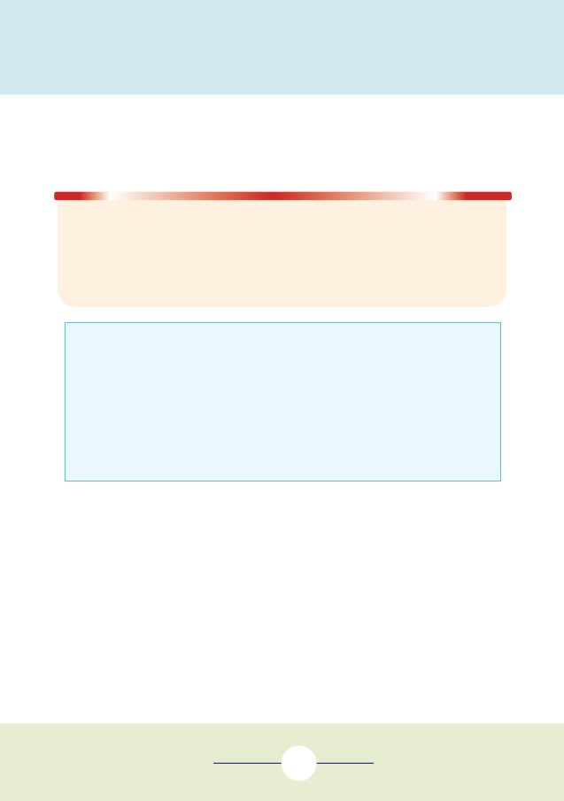
SURA YA TANO
Haki za Wanawake
Lengo Kuu
Kuwajengea uwezo wa washiriki wafahamu haki za wanawake na ulinzi wa haki hizokatika
jamii
Malengo Mahsusi
Baada ya kukamilika mada hii washiriki watafahamu;
➣ Mikataba ya kimataifa inayolinda haki za wanawake
➣ Sheria na sera za nchi zinazolinda haki za wanawake
➣ Vyombo vinavyosimamia mikataba inayolinda haki za wanawake
➣ Mikakati ya ulinzi wa haki za wanawake katika jamii
Jinsi ya Kuendesha
1. Mwezeshaji gawanya washiriki katika vikundi vya watu wasiozidi sita.
2. Wape nafasi washiriki kujadili maswali yafuatayo:-
➢ Unadhani wanawake wanafaidi haki sawa na wanaume kiuchumi, kisiasa na
kijamii katika eneo unalotoka?
➢ Unadhani kuna haja gani za kulinda haki za wanawake
➢ Je unadhani haki za wanawake zinalindwa? Vipi?
3. Kila kikundi kiwasilishe maoni yake mbele ya washiriki wengine
4.
Toa nafasi kwa washiriki wengine (wasio wana kikundi) kutoa maoni zaidi juu ya
uwasilishi wa wenzao.
Mchango wa Mwezeshaji
Mwezeshaji eleza kuwa wanawake na wanaume wana haki sawa. Hata hivyo kutokana na
sababu mbalimbali wanawake hawakuweza kufaidi haki zao kama wanaume. Mikataba
mbalimbali imepitishwa kuhakikisha wanawake wanafaidi haki sawa na wanaume. Pia kuna
sheria mbalimbali za nchi zinazolinda haki za wanawake
Mwezeshaji endelea kueleza kuwa ikumbukwe kuwa mikataba mikuu ya haki za binadamu
imeweka kanuni kuu ya kutobaguliwa katika kufaidi haki za binadamu kwa misingi ya jinsi,
dini, kabila, rangi, umri, utaifa, na kadhalika. Hii inamaanisha kuwa haki za binadamu
zapaswa watu wote wazifaidi bila ubaguzi wa aina yoyote.
Hata hivyo bado baadhi ya makundi ya watu katika jamii hasa wanawake, hawakuweza
kupewa nafasi sawa kufaidi haki zao. Ndio maana juhudi zimefanyika na zinaendelea
kufanyika katika ngazi ya kimataifa, barani Afrika na hata hapa nchini Tanzania kuhakikisha
kwamba haki za wanawake zinalindwa.
62
Mikataba ya Kimataifa inayolinda Haki za Wananwake
Mkataba wa Kimataifa wa Kuondoa Aina Zote za Ubaguzi dhidi ya Wanawake wa
Mwaka 1979
Mkataba wa kimataifa wa kuondoa aina zote za ubaguzi dhidi ya wanawake au kwa jina
jingine unajulikana kama ‘Mkataba wa Wanawake’ ndio mkataba mkuu unaolinda haki za
wanawake duniani. Mkataba huu ulikubaliwa na Baraza Kuu la Umoja wa Mataifa, mwaka
1979 na ulianza kazi tarehe 3 Septemba, 1981. Tanzania imesaini na kuukubali mkataba
huu tarehe 19/09/1985.
Mkataba huu umelenga kuhakikisha kuwa wanaume na wanawake wanafaidika kwa usawa
na fursa za kiuchumi, kijamii, kitamaduni, kiraia na kisiasa kwa kuondoa aina zote za
ubaguzi dhidi ya wanawake
Maana ya Ubaguzi:
Tafsiri ya ubaguzi, kwa mujibu wa mkataba huu, ni tofautisho, au katazo litakalofanywa kwa
minajili ya jinsi na kuleta athari kwa wanawake katika kufaidi haki za kisiasa, kiuchumi na
kijamii.
Wajibu wa nchi mwanachama
Nchi wanachama kama vile Tanzania zina wajibu wa kulaani aina zote za ubaguzi kufuata
sera ya kuondoa ubaguzi dhidi ya wanawake kwa kuahidi yafuatayo:-
➣ Kuingiza kanuni ya usawa kwa wanawake katika katiba/sheria nyinginezo.
➣ Kuweka sheria na adhabu pale inapobidi ili kukataza aina zote za ubaguzi dhidi ya
wanawake.
➣ Kulinda haki za wanawake kwa msingi ya usawa
➣ Kufuta sheria zote zinazobagua wanawake
➣ Kupitisha sheria, kurekebisha, kufuta sheria, mila na desturi zinazochangia kuleta
ubaguzi dhidi ya wanawake.
Mkataba nyongeza wa Haki za Wanawake Barani Afrika wa mwaka 2003
Mkataba huu umepitishwa na wakuu wa nchi na serikali za Afrika mwaka 2003 huko
Maputo, Msumbiji. Hadi Agosti 2004, ni nchi nne (4) tu za Umoja Afrika zilizoridhia
mkataba huu. Tanzania imesaini mkataba huu tarehe 5 Novemba.
Kwa ujumla, mkataba huu ambao pia unajulikana kama “Mkataba wa Maputo” unalinda
haki za wanawake wa barani Afrika. Na mojawapo ya sifa yake kuu ni kutamka wazi kwa
mara ya kwanza katika sheria za kimataifa haki za uzazi za wanawake ikiwemo kutoa mimba
kama imepatikana kutokana na kubakwa au inamuweka hatarini mwanamke.
Pia mkataba huu nyongeza unapiga marufuku ukeketaji wa wanawake. Kwa ujumla, mkataba
wa nyongeza wa haki za wanawake wa Afrika unaweka majukumu kwa nchi na serikali za
Afrika kulinda na kutekeleza haki za wanawake katika nchi zao.
Hata hivyo, mkataba nyongeza huu bado haujaanza kufanya kazi na utaanza kutumika pale
ambapo nchi 15 za Afrika zitakuwa zimeuridhika. Tanzania bado haijauridhia mkataba huu
63
Ubaguzi wowote wa kijinsia ni kinyume cha Katiba ya nchi. Katiba ya Jamhuri ya Muungano
wa Tanzania ya mwaka 1977 (kama ilivyorekebishwa) inatamkwa kuwa “binadamu wote ni
huru na sawa”. Na pia “watu wote ni sawa mbele ya sheria na wanayo haki bila ya ubaguzi
wowote kulindwa na kupata haki sawa mbele ya sheria”
Katiba inakataza sheria kuweka sharti lolote ambalo ni la kibaguzi ama wa dhahiri au kwa
taathira yake. Ubaguzi unaokatazwa na Katiba unaweza kuwa dhidi ya rangi, kabila, jinsia,
utaifa, mahali mtu alipozaliwa au hali ya maisha ya mtu. Kwa maana nyingine, katiba ya
nchi inatoa haki sawa kwa wanaume na wanawake nchini Tanzania katika Nyanja zote za
kisiasa, kiuchumi, kijamii na kiutamaduni.
Sheria na Sera za Nchi zinazolinda Haki za Wanawake
Sera ya Taifa ya Maendeleo ya Wanawake na jinsia ya Mwaka 2000
Sera ya maenedeleo ya wanawake ya 2000 (ambayo inachukua nafasi ya sera ya wanawake
katika maendeleo ya mwaka 1992) inahusika moja kwa moja na haki za wanawake nchini
Tanzania.
Malengo makuu ya sera ni:-
i.
Kuweka mazingira muafaka yatakayowezesha wanaweka na wanaume kutekeleza
majukumu yao katika jamii kwa kuzingatia mahitaji yao kijinsia.
ii.
Kusawazisha mapungufu yanayojitokeza katika ushirikishwaji wa wanawake katika
shughuli za maendeleo na
iii.
Kuiwezesha jamii ya watanzania kuheshimika imani ya kitaifa ya kuwepo usawa na
haki miongoni mwa wananchi bila kuwepo tofauti za kijinsia.
Sera hii inatoa mwelekeo, mikakati na shguhuli mbalimbali za uongozi na maendeleo katika
kila sekta na taasisi hapa Tanzania kuhakikisha inazingatia usawa wa kijinsia.
Sera nyingine Zinazotambua Haki za Wanawake
(i)
Sera ya Taifa ya Ajira ya mwaka 1997: Pamoja na mengineyo, sera hii inaweka
mikakati ya kulinda na kutetea ajira kwa misingi ya jinsia na usawa. mojawapo ya
mikakati hiyo ni kuhakikisha inaondoa sheria za ajira na kazi ambazo ni za kibaguzi
dhidi ya wanawake.
(ii)
Sera ya Elimu na Mafunzo ya mwaka 1999:Sera hii inatambua haki ya kupata elimu
bila ubaguzi wa jinsia, rangi, kabila na uwezo wa kiuchumi. Mojawapo ya malengo ya
sera hii ni kuhakikisha idadi ya wasichana wanaopata elimu nchini inaongezeka.
Baadhi ya Sheria zinazolinda Haki za wanawake Tanzania
Serikali imepitisha sheria mbalimbali ambazo zinalinda haki za wanawake. Sheria muhimu
ni pamoja na:-
(i)
Sheria ya kanuni za adhabu Na. 16: Sheria hii imekuwepo ili kulinda na kurudisha
utu na heshima ya wanawake na watoto. Sheria hii inatoa adhabu kali kwa makosa
kama vile ukeketaji, ubakaji na udhalilishwaji wa wanawake na watoto wa kile.
(ii)
Sheria ya Ndoa ya mwaka 1971: Sheria hii inatoa haki kwa mwanamke aliye katika
ndoa. Ufafanuzi zaidi juu ya sheria hii unatolewa kwenye sura inayozungumzia ndoa
na mtoto
64
(iii) Sheria za Kazi: Wanawake wanapewa haki ya kuwa na fursa ya kufanya kazi na
kulipwa ujira unaostahili. Pia sheria za kazi zinatoa haki ya mwanamke kufaidi mafao
ya uzazi.
(iv) Sheria ya Elimu: Iinatoa fursa kwa watoto wa kile kupatiwa elimu
(v)
Sheria za Ardhi za mwaka 1999: Ardhi ni raslimali kubwa ya Watanzania wengi hasa
walio vijijini. Kwa muda mrefu wanawake wa Tanzania wamekuwa wakipewa nafasi
finyu/ndogo ya kumiliki ardhi. Mwaka 1999, Bunge la Jamhuri ya Muungano wa
Tanzania lilipitisha sheria kuu mbili za ardhi ambazo ni Sheria ya Arhi Na. 4/199 na
Sheria ya Ardhi ya Kijiji Na. 5/1999.
Mabadiliko makubwa yaliyofanywa na sheria hizi ni kuhakikisha haki ya mwanamke katika
umilki, utumiaji na utawala wa ardhi inakuwa sawa na mwanaume bila ubaguzi au upendeleo
wowote. Hii inaonekana katika yafuatayo:-
Kwanza, mojawapo ya misingi mikuu ya sheria ya ardhi ni haki sawa kwa wanawake
na wanaume katika kupata, kumiliki, kutumia, kuuza na kugawa ardhi kwa kiwango na
masharti yale yale bila ubaguzi. Sheria hiyo ya Ardhi inaeleza kuwa sheria yoyote ya kimila
itakayokwenda kinyume kwa kuwanyima wanawake, watoto au watu wenye ulemavu uhalali
wa kumiliki mali, kutumia au kupata ardhi, basi sheria hiyo ya mila itakuwa batili kwani
imevunja sheria mama (katiba) na sheria za nchi.
Pili, mwanamke anatambuliwa kama mmojawapo wa watu wenye haki na sifa ya kuomba
kumiliki ardhi sawa sawa kabisa na mwanaume.
Tatu, katika masuala ya usimamizi wa sheria hizi, hasa Sheria ya Ardhi ya Kijijini, wanawake
wamepewa nafasi sawa na wanaume ya kushiriki. Mfano, kwenye vyombo vya utatuzi wa
migogoro ya ardhi, kama vile Baraza la Ardhi la Kijiji, sheria inatamka kuwa baraza la Ardhi
la jiji litakuwa na wajumbe saba (7) na kati yao angalau watatu lazima wanawake. Kwenye
Baraza la Kata ambalo linaundwa na wajumbe wasiopungua wanne na wasiozidi nane, sheria
inatamka kuwa wajumbe wanawake wasipungue watatu.
Sheria za Mirathi: zinatoa nafasi kwa wanawake kurithi mali. Hata hivyo kuna mapungufu
katika sheria hizi pia.Mifano ya apungufu hayo ni;
➣ Mjane hana fungu la urithi katika mali iliyoachwa na marehemu mume wake.Bali
atatunzwa na watoto wake
➣ Watoto wa kike wamewekwa katika daraja la tatu ambalo hupata fungu dogo zaidi la
urithi kuliko watoto wote.
➣ Watoto wa kike hawaruhusiwi kurithi ardhi ya ukoo
➣ Mchango wa mjane katika upatikanaji wa mali za marehemu hautambuliki na
hautolewi kabla mali hazijagawanywa kwa warithi wa marehemu.
65
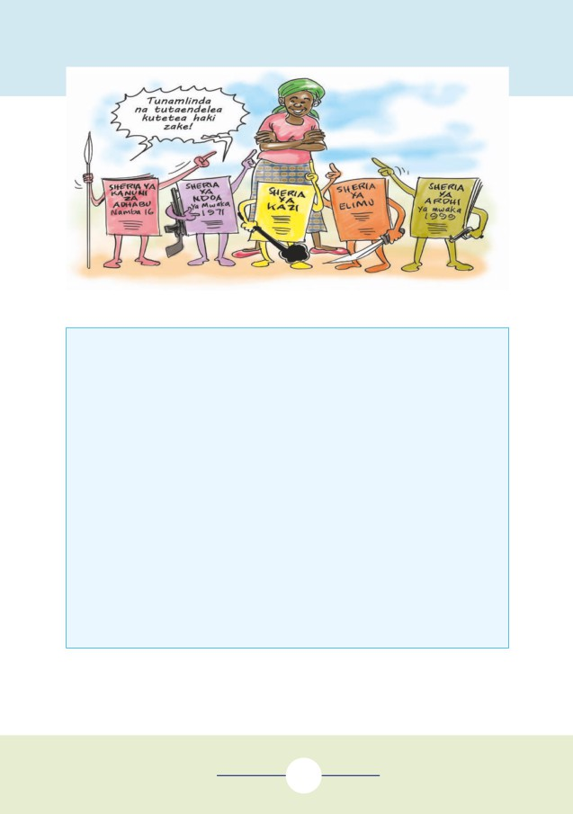
Mikakati ya Ulinzi wa Haki za Wanawake katika Jamii
Jinsi ya Kuendesha
Bangua Bongo (Brainstorming), majadiliano na mchango wa mwezeshaji)
1.
Mwezeshaji wagawe washiriki katika makundi ya watu 5 hadi 8 na wajibu maswali
yafuatayo;
a.
Haki zipi za wanawake zimekuwa zikivunjwa kwenye jamii yako, familia yako na
kazini kwako?
b.
Uvunjaji huu wa haki za wanawake unawaathiri vipi wanawake kwenye jamii yako?
c.
Washiriki wajadili kwa kina je uvunjaji wa haki za wanawake unasababishwa na
nini? Mila, desturi, imani, n.k. Wape uhuru washiriki kuchambua kwa kina na
kutoa mawazo yao kwa uhuru.
d.
Je wanawake wana haki ya kumiliki ardhi sawa na wanaume? Kama jibu ni ndiyo,
kwa nini, kama jibu hapana ni kwa nini?
e.
Je wanawake wana haki ya kurithi mali? Kama ndiyo ni kwa nini, kama hapana
kwa nini?
f.
Mikakati ipi ifanywe na jamii kulinda haki za wanawake.
g.
Washiriki watumie karatasi kubwa kujibu maswali haya na kuwasilisha. Mwezeshaji
pia anaweza kutumia njia nyingine aonayo inafaa.
h.
Mwezeshaji rekodi majibu haya ili kutunza kumbukumbu ya mitazamo ya
washiriki juu ya haki za wanawake.
Mchango wa Mwezeshaji
Mwezeshaji endeleza mjadala kwa kusisitiza umuhimu wa kulindwa kwa haki za wanawake.
Eleza kuwa kwa kiwango kikubwa uvunjaji wa haki za wanawake unatokana na mila, desturi
na tamaduni. Pia eleza kuwa kwa kiwango fulani baadhi ya sheria za nchi nazo zinachangia
uvunjaji wa haki za wanawake mfano sheria ya ndoa ambapo ina vifungu ambavyo havisaidii
ulinzi wa wanawake na watoto wa kike.
66
Jadili pamoja na washiriki mikakati inayoweza kutumika kulinda haki za wanawake ukirejea
pia michango ya washiriki wakati wa uwasilishaji wao.
Baadhi ya mambo yanayokiuka au kuvunja haki za wanawake Tanzania
Mila na Desturi: Kwanza kabisa tuone maana ya maneno ‘desturi’ na ‘mila’. Kwa kifupi neno
desturi lina maana ya tabia ya kikundi, watu au kabila fulani, inayotambulika, kukubalika
na kufuatwa na watu hao, kikundi hicho au kabila hilo kwa muda mrefu, ambapo mtu
akikiuka, anakuwa amekiuka mpangilio.
Mila ni desturi zilizoshamiri au zilizotumika kwa muda mrefu na kukubalika katika jamii
husika. Mila hizi zikipata nguvu ya sheria, yaani zikitungiwa sheria, huitwa sheria za kimila.
Makabila mengi hapa nchini yana mila na desturi zao zinazoongoza mienendo ya watu
wake katika maisha ya kila siku. Baadhi ya desturi hizo zimekuwa zikikiuka na kuvunja kwa
kiwango kikubwa haki ya mwanamke. Tabia kama ukeketaji wa watoto wa kike, kuwanyima
wanawake haki ya kurithi mali ya marehemu mume wake au kuwapa cheo cha daraja la tatu
watoto wa kike kwenye urithi wa mali ya wazazi wao, kuwanyima haki ya kupata elimu,
kuwaoza katika umri mdogo, kuwanyima haki ya kumiliki ardhi n.k ni mifano michache tu
ya ukiukaji mkubwa wa haki za wanawake kwa kisingizio cha mila na desturi.
Sheria ya ndoa ya mwaka 1971: Sheria ya Ndoa ya Mwaka 1971, Sura ya 29 inatoa
mwongozo kuhusu haki na wajibu kwa wanandoa, utaratibu kuhusu jukumu la malezi, haki
na maslahi ya watoto wa ndoa. n.k
Sheria hii inatambua ndoa za kimila, ndoa za kidini na ndoa za kiserikali zinazofungwa
bomani. Hata hivyo sheria hii ina vipengele vinavyokiuka na kuvunja haki ya mtoto wa kike.
Kwa mfano sheria inaeleza kuwa wanandoa lazima wawe wametimiza umri unaokubalika
kisheria kufunga ndoa (miaka 18 au zaidi). Hata hivyo mwanamke anaweza kuolewa akiwa
na umri wa chini ya miaka18 lakini sio chini ya miaka 15 kama atapata idhini ambayo
hutolewa na baba na kama hayupo ni mama au kama wote wamefariki idhini itatolewa na
mlezi wa binti huyo.Kama wote wamefariki basi hatahitaji idhini. Katika mazingira fulani
mahakama pia inaweza kutoa idhini kwa binti kuolewa akiwa na miaka 14 lakini si chini ya
hapo ikiwa ataonekana kwa mfano ana mimba. Ndoa chini umri wa miaka 18 ni ndoa ya
utotoni na ni ukiukwaji wa haki yamtoto wa kike.
Baadhi ya mikakati wanajamii wanaweza kuitumia kuhamasisha ulinzi wa haki za wanawake
katika jamii ni kama ifuatayo
➣ Kutoa elimu kwa jamii (wanaume, wanawake, viongozi wa kimila, viongozi wa dini,
walemavu n.k) kuachana kabisa na mila na desturi zinazomkandamiza, kumuumiza
na kumbagua mwanamke.
➣ Kutoa elimu katika ngazi ya familia na kaya juu ya haki za wanawake
➣ Elimu hii itolewe kwenye mikutano ya vijiji, mashuleni, masokoni, gulioni, nyumbani,
kwenye vikundi vya kuweka na kukopa, vyama vya ushirika n.k
➣ Kutoa taarifa kwa vyombo husika pale haki za wanawake zinapovunjwa. Vyombo
hivi ni pamoja na serikali ya mtaa, polisi, idara ya ustawi wa jamii, asasi za kiraia
67
zinazopinga ukatili dhidi ya wanawake n.k.
➣ Kushirikisha wanaume kwenye ulinzi wa haki za wanawake
Kumbuka wanawake wanayo haki ya kufaidi matunda ya utu/ubinadamu wao sawa kabisa
na wanaume. Baadhi ya mifano ya haki za wanawake ni:-
➣ haki ya kuishi, uhuru na usalama wa maisha yake
➣ haki ya kutobaguliwa katika jamii kwa sababu tu ya jinsi yake
➣ haki ya kutotendewa kinyama au kikatili
➣ haki ya kumiliki ardhi na/au mali nyingine yeyote inayohamishika na isiyohamishika
➣ haki ya uhuru wa kutoa na kueleza maoni yake
➣ haki ya kushiriki katika kutoa maamuzi yahusuyo maisha yake, familia yake na jamii
yake
➣ haki ya kupata elimu
➣ haki ya kupata fursa sawa ya ajira na kulipwa ujira unaostahiki
➣ Haki ya afya na afya ya uzazi
➣ haki ya kupumzika kwa likizo ya uzazi
Kwa kifupi tunaweza kusema kuwa haki za wanawake ni haki za binadamu. Kwani
mwanamke anastahili kulindwa na kuheshimiwa utu wake na kufaidi fursa zote zilizoko
katika jamii yake kiuchumi, kisiasa, kiutamaduni na kijamii.
Mwisho wa mada
Mwezeshaji hitimisha mjadala wa haki za wanawake kwa kusisitiza umuhimu wa kulinda na
kutetea haki za wanawake na eleza kuwa uvunjaji wowote wa haki za wanawake ni uvunjaji
wa haki za binadamu.
68
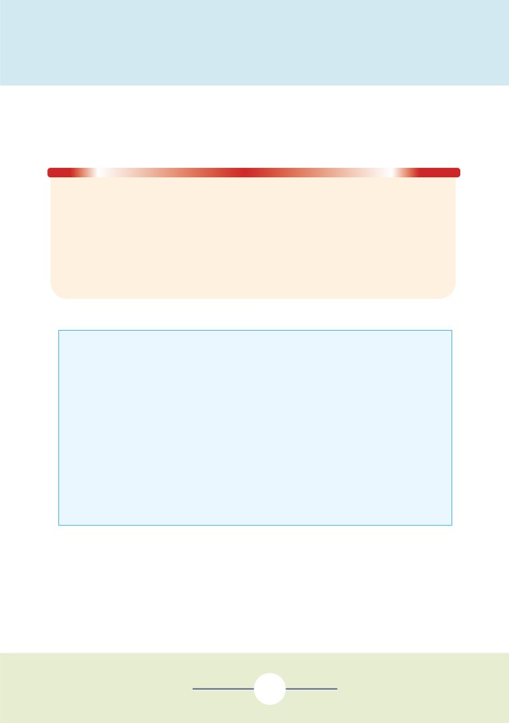
SURA YA SITA
Jinsia na Ukatili wa Kijinsia
Lengo kuu
Kujenga uwezo wa washiriki juu ya dhana ya jinsia na ukatili wa kijinsia katika jamii
Malengo Mahsusi
Baada ya kukamilika kwa mada hii washiriki watafahamu;
a.
Maana ya jinsi na jinsia
b.
Dhana ya usawa wa kijinsia
c.
Uhusiano baina ya jinsia, mamlaka na ukatili wa kijinsia
d.
Aina za ukatili wa kijinsia
e.
Sababu na madhara ya ukatili wa kijinsia
f.
Mikakati ya kupinga ukatili wa kijinsia katika jamii
Sehemu ya Kwanza - Jinsia
Jinsi ya Kuendesha
Maana ya Jinsia
1.
Mwezeshaji andika maneno yafuatayo kwenye bango kitita au kutumia njia
nyingine kutokana na mazingira unayowezeshea.
a.Jinsi
b.Jinsia
2.
Waeleze washiriki watoe tofauti baina ya meneno hayo mawili (yaani jinsi na
jinsia). Orodhesha majibu yao kwenye bango kitita.
3.
Wagawe washiriki kwenye makundi ya wanawake pekee na wanaume pekee na
wafanye yafuatayo;
i.
wanawake waeleze majukumu yao na kuelezea majukumu ya wanaume
katika jamii na kisha wafanye uwasilishaji.
ii.
Wanaume waeleze majukumuyao na kuelezea majukumu ya wanawake
katika jamii na kisha wafaye uwasilishaji.
Mchango wa Mwezeshaji
Mwezeshaji toa mchango wako kuhusu maana ya jinsi na jinsia na ueleze mahusiano baina
ya dhana hizi kwenye jamii kama inavyofafanuliwa hapa chini
Maana ya Jinsi na Jinsia
Jinsi
Ni hali ya kuwa na maumbile ya kike au kiume. Ni maumbo aliyozaliwa nayo mwanamke
au mwanaume, na ambayo hayawezi kubadilika.
69
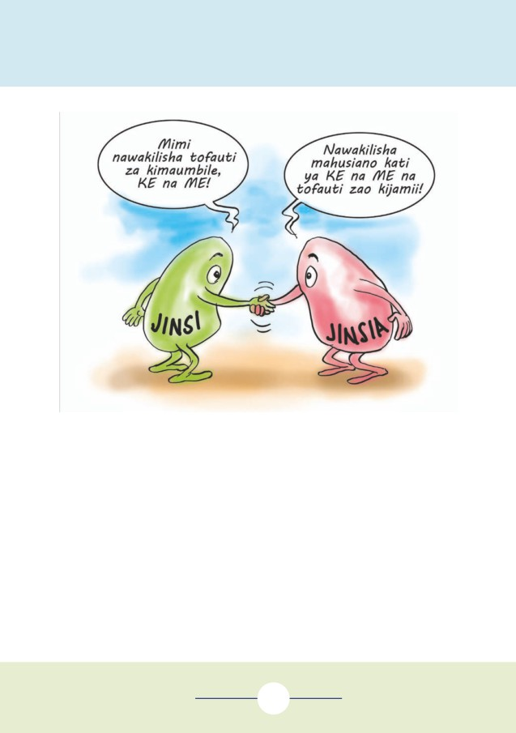
Hata hivyo kuna baadhi ya nchi ambazo wanaweza kubadilisha maumbile ya via vya uzazi
vya kike kuwa vya kiume na vya kiume kuwa vya kike, kwa njia za upasuaji.Suala hili bado
halikubaliki katika jamii na nchi yetu.
Jinsia
Ni neno na pia ni dhana. Kama neno, hutumika kueleze mahusiano ya kijamii kati ya
mwanamke na mwanaume.
Kama dhana, neno jinsia, hutumika kuelezea tofauti za kijamii baina ya wanawake na
wanaume ambazo zinaonekana kupitia mgawanyo wa kazi, upatikanaji na udhibiti wa
raslimali, mitazamo, tabia, maadili na uwezo au muundo wa kaya.
Mahusiano haya yanahusiana na hali ya kiuchumi, kisiasa na kiutamaduni na hujengwa na
jamii. Pia, mahusiano hayo yanaweza kubadilika kutokana na wakati na kulingana na hali
ya kiuchumi kwa wakati husika.
Msamiati na Tafsiri ya Baadhi ya Maneno Yatumikayo Kwenye Dhana ya Jinsia
Bughudha za kijinsia
Ni kitendo au hali anayotendewa mwanamke au mwanaume na mtu mwingine bila yeye
mwenyewe kukipenda.
Ubaguzi wa kijinsia
Hali inayowaathiri wanawake na wanaume kwa mtizamo kuwa jinsi moja ni dhaifu au ni
bora zaidi ya nyingine.
70
Ukandamizaji wa kijinsia
Ni hali ya kutumia nguvu au madaraka kwa madhumuni ya kuminya haki za jinsi moja
katika jamii na kunufaisha jinsi nyingine kwa imani kuwa watu wa jinsi hiyo wana haki
zaidi kuliko jinsi nyingine
Usawa wa kijinsia
Hali ya kutokuwa na ubaguzi kwa misingi ya jinsia ya mtu katika mgao wa rasilimali au
mapato, au katika ufikiaji wa huduma mbalimbali za kijamii. Usawa wa kijinsia unaweza
kupimika kwa mifano ya kuwepo kwa fursa sawa au matokeo sawa. Au kwa kifupi, tunaweza
kusema kuwa ni haki, majukumu na fursa sawa kwa wanawake na wanaume na kwa
wasichana na wavulana
Jinsia na Maendeleo
Wanawake na wanaume ni sehemu ya jamii na ni dhahiri kuwa maendeleo ya jinsi hizi mbili
ni ushirikiano wa pande zote pamoja na juhudi na mchango kutoka makundi mbalimbali
ya kijamii. Makundi haya ni kama vile, serikali, mashirika yasiyo ya kiserikali na ya hiari,
wahisani, mashirika ya kijamii na wanawake kama kundi la msingi.
Jinsia na mgawanyo wa kazi
Ni hali ya kuainisha majukumu ya kazi na kuyagawa kwa wanawake na wanaume kwa
misingi ya ubaguzi wa kijinsia iwe kwenye familia au jamii kwa ujumla. Wanawake na
wanaume hujifunza majukumu haya kwenye malezi na makuzi yao kuanzia utotoni.
Majukumu ya kijinsia
Hizi ni kazi mbalimbali, wajibu na matarajio ambayo Jamii imetafsiri na kupanga kufanywa
na wanaume, wanawake, wasichana na wavulana. Kazi hizi sio lazima ziwe za kibailojia. Kwa
hiyo zinaweza kubadilika kufutana na wakati na mazingira yaliyopo. Wajibu uliopangwa
kufuatana na jinsi ni wajibu wa Jamii na umekuwa ukibadilika kutokana na wakati.
Majukumu ya kijinsi
Haya ni majukumu yatokanayo na maumbile ya kibaolojia (yaani kuwa me au ke). Kwa
mfano kubeba mimba, kujifungua na kunyonyesha ni kazi za jinsi ya kike wakati wanaume
hutoa mbegu katika hatua za uzazi. Majukumu haya hayabadiliki.
Mahusiano ya Kijinsia
Dhana hii inaelezea jinsi mwanaume na mwanamke wanavyohusiana katika shughuli za
kijamii, kisiasa, kiuchumi na kiutamaduni katika Jamii yao. Mahusiano haya ya kijinsia
kwa kawaida hutokana na mtiririko wa malezi na makuzi na huimarishwa na mtu binafsi,
familia, taasisi za kijamii, utamaduni na itikadi.
Ushirikishwaji
Unatafsiriwa kuwa hali ya wanawake kushiriki kwa idadi na mchango sawa na wanaume
katika katika kushiriki kufanya maamuzi yanayolenga kuleta maendeleo ya kijamii,
kiuchumi, kisiasa na kiutamaduni.
71
Fursa sawa
Ni mbinu/njia ya kuwafanya wanawake na wanaume kuwa na fursa zinazolingana za kupata
au kutumia rasilimali na huduma kama vile ardhi, fedha, mtaji, mafunzo na huduma za afya
bila kujali tofauti za kijinsia
Ufahamu wa Jinsia
Ufahamu wa mahitaji na matarajio ya wanawake na wanaume na hali zao za kutokuwa na
usawa na ufahamu kuwa hali hiyo husababishwa na mahusiano ya kijamii ambayo yanaweza
kubadilika.
Mwamko wa kijinsia
Dhana hii inahusu kutambua kuwa wanawake na wanaume wana jukumu tofauti katika
Jamii na kuwa mahitaji yao huwa tofauti na hivyo sharti yatambuliwe katika michakato ya
maendeleo.
Upofu wa Jinsia
Ni hali ya kutambua tofauti za kijinsia na kushindwa kuchukua hatua ili kubadili hali hiyo.
Nguvu
Ni nafasi/mamlaka/madaraka aliyonayo mwanaume na mwanamke katika jamii husika
ambayo kwa kiwango kikubwa ndiyo husababisha mgawanyo wa rasilimali katika jamii
husika.
Mwisho wa mada
Mwezeshaji funga mjadala wa mada kwa kueleza kuwa katika jamii nyingi dhana ya jinsia
imekuwa ikichukuliwa kuwa ni suala linalohusu wanawake. Elezea kuwa dhana hii si sahihi
hata kidogo. Ni muhimu washiriki watambue kwamba dhana ya jinsia lengo lake ni kuelezea
mahusiano baina ya wanawake na wanaume kwenye jamii na kuchambua kama mahusiano
hayo hayabugui wanawake au wanaume bali yamejengwa katika misingi ya usawa. Hata
katiba ya Jamhuri ya Muungano wa Tanzania ya mwaka 1977 (ibara ya 12 na 13) inatambua
usawa baina ya wanawake na wanaume.
Malizia kwa kuwapa kazi za makundi washiriki waeleze kwa mifano halisi aina za ubaguzi
wa kijinsia ulioshamiri kwenye jamii yao (mfano wa kiuchumi, kisiasa, kiutamaduni).Hali
kadhalika washiriki waeleze hatua zinazoweza kufanyika ili kuondoa tatizo hilo. Uwasilishaji
ufanyike mapema siku inayofuata.
Sehemu ya Pili: Ukatili wa Kijinsia
Angalizo: Ni muhimu kwa mwezeshaji kuhakikisha kwamba washiriki wameielewa vema
mada ya dhana ya jinsia kabla ya kuanza kuzungumzia ukatili wa kijinsia.
72
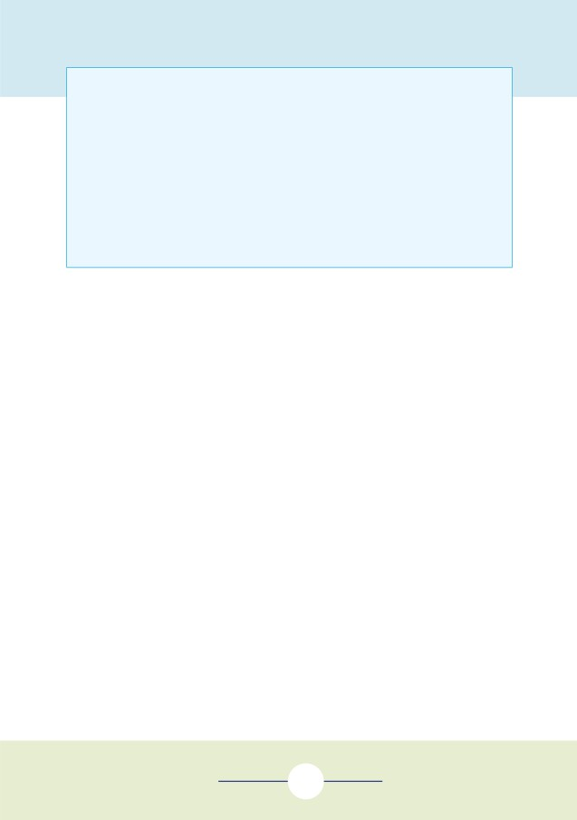
Jinsi ya Kuendesha
1.
Mwezeshaji andika neno Ukatili wa Jinsia Kwenye bango kitita/ubaoni/ama
kwa kutumia njia yoyote iliyo mahsusi
2.
Washiriki wataje jambo/tendo lolote wanalodhani ni ukatili wa kijinsia.
3.
Chora jedwali kwenye bango kitita au ubaoni na andika majibu yao kwenye
jedwali hilo/kwa kutumia njia nyingine iendayo na muktadha.
Baada ya zoezi hapo juu kukamilika, mwezeshaji endeleza mjadala kwa maswali na
bangua bongo. Waulize washiriki maswali yafuatayo?
➢ Ukatili wa kijinsia maana yake ni nini?
➢ Kundi lipi katika jamii linaathirika zaidi na ukatili wa kijinsia? Kwa nini?
Mchango wa Mwezeshaji
Mwezeshaji fafanua kuwa ukatili wa kijinsia ni tatizo kubwa ambalo linawanyima uhuru
wanaume, wanawake na watoto kufurahia haki zao msingi ambazo pia ni haki za binadamu.
Tatizo hili lipo duniani kote kwani tafiti zinaonesha kuwa mwanamke mmoja katika kila
wanawake watatu katika maisha yake amewahi kufanyiwa ukatili wa kijinsia ama kimwili,
kingono na kisaikolojia. Tafiti pia zaonesha kuwa duniani kote, asilimia 16-52 ya wanawake
wanafanyiwa ukatili wa kimwili na waume au wapenzi wao walau mara moja katika
maisha yao. Hali duni ya kiuchumi na kutofahamu sheria kunawafanya wahanga wengi wa
ukatili wa kijinsia kushindwa kupata msaada pindi wanapofanyiwa ukatili huo. Sehemu hii
inazungumzia ukatili wa kijinsia kukuza ufahamu wa washiriki juu ya dhana hiyo.
Baada ya majibu ya washiriki mwezeshaji wafafanulie washiriki maana ya ukatili wa kijinsia
na maneno mengine yanayoambatana na dhana ya ukatili wa kijinsia kama inavyoainishwa
hapo chini.
Maana ya Maneno
Ukatili wa kijinsia
Ni ukatili unaowapata wanaume, wanawake, watoto kike na watoto wa kiume unaosababishwa
na miiko na majukumu ya kijinsia na pia kutokuwepo kwa nguvu sawa kati ya mwanaume
na mwanamke. Ukatili huu hufanywa kwa mtu kwa sababu tu ya jinsi yake. Mifumo ya
kijamii, mila, desturi na tamaduni huchangia kwa kiwango kikubwa ukatili wa kijinsia.
Ukatili wa kijinsia huwapata wote wanaume na wanawake. Hata hivyo tafiti zaonesha kuwa
wanawake ni waathirika wakubwa zaidi wa ukatili wa kijinsia katika jamii kuliko wanaume .
Ukatili
Shirika la Afya Duniani (WHO) limetoa maana ya neno ukatili kuwa ni matumizi ya nguvu
au mamlaka dhidi ya mtu mwingine yanayoweza kusababisha majeraha, kifo, madhara ya
kiakili, kudumaa au kukosa mambo muhimu kwa yule anayetendewa ukatili.
73
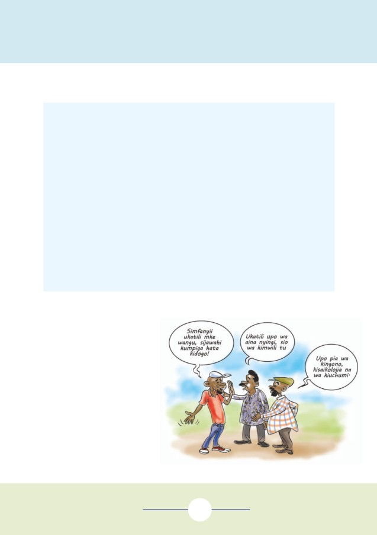
Ukatili dhidi ya wanawake
Hivi ni vitendo vya ukatili wa kijinsia vinavyopelekea, au vinavyoweza kusababisha
mwanamke kupata madhara au maumivu, yanayotokana na vitisho, kulazimishwa au
kunyimwa uhuru, kunakoweza kufanywa mbele ya jumuia au eneo la faragha.
Aina za Ukatili wa Kijinsia
Jinsi ya kuendesha
1.
Mwezeshaji wasimulie washiriki hadithi hii ya kufikirika. Siku moja Juma
alikuwa akitembelea shule ya Msingi Mwinyimvua iliyopo Mkoani Morogoro.
Alipokaribia eneo la shule akamwona Mwalimu Pingoni akimzonga
Mwanafunzi wa kike anayesoma darasa la tano aitwae Mwanaidi kwa kumshika
sehemu zake nyeti za kifuani huku akimtaka kimapenzi na kumtishia kuwa
asipokubali basi atahakikisha Mwanaidi hafaulu mtihani wa somo ambalo yeye
Mwalimu Pingoni anafundisha. Juma akaendelea na shughuli zake bila kusema
chochoote.
2.
Baada ya hadithi hii mwezeshaji waulize washiriki maswali yafuatayo:-
➢
Je Mwanaidi ametendewa ukatili wowote wa kijinsia hapo?
➢
Ni aina gani ya ukatili ambao Mwanaidi ametendewa?
➢
Ni madhara gani anayoweza kupata Mwanaidi kwa matendo ya Mwalimu
Pingoni?
➢ Kama wewe ungekuwa ndie ulieshuhudia kitendo cha Bw. Pingoni dhidi ya
Mwanaidi, ni hatua gani ungechukua dhidi ya Mwalimu Pingoni?
➢ Watake washiriki waeleze aina nyingine za ukatili wa kijinsia wanazozifahamu
na madhara ya ukatili huo
Mchango wa Mwezeshaji
Mwezeshaji eleza kuwa ukatili
wa kijinsia umegawanyika katika
makundi mbalimbali. Mfano
ukatili wa kimwili, ukatili wa
kisaikolojia, ukatili wa kingono,
ukatili utokanao na mila na
desturi zenye madhara, ukatili
wa kiuchumi, ukatili wa kijinsia
sehemu za kazi n.k. Toa mchango
wako kwa kueleza aina za ukatili
wa kijinsia na madhara yake kwa
jamii Kama inavyoainishwa hapo
chini.
74
Aina za Ukatili wa Kijinsia
Ukatili wa kimwili.
Ukatili wa kimwili ni matendo anayofanyiwa mwanamke au mwanaume kwa kuumizwa
sehemu za mwili wake. Wakati mwingine muathirika wa ukatili hupata maumuvi bila watu
wengine kutambua kuwa amepata maumivu.
Mifano ya matukio ya ukatili wa kimwili ni: Shambulio la mwili, kukeketa wanawake,
kupiga, kuchoma mwili moto, matumizi ya silaha kwenye mwili, matumizi ya vitu vyenye
ncha kali kudhuru mwili, kuvuta nywele, kusukuma, kunyonga mkono au mguu, kupiga
kichwa au kubamizia ukutani n.k.
Madhara yanayoweza kutokea kwa ukatili huu ni: Majeraha, ulemavu wa kudumu, vifo,
huzuni, msongo wa mawazo, kushindwa kutimiza majukumu ya ulezi, uzazi na uzalishaji,
kuharibika kwa mimba, hofu, hasira, kutokuaminiana katika familia, na maambukizi ya
VVU/UKIMWI ambayo husababisha magonjwa nyemelezi, matokeo yake ni kujitenga na
jamii, kushindwa kufanya kazi, na kutumia fedha nyingi kwa matibabu na hivyo kupunguza
kipato cha familia.
Ukatili wa kingono
Ukatili huu ni ule unaohusisha masuala ya ngono na mahusiano ya mapenzi iwe katika ndoa
au nje ya ndoa. Ukatili huu umewasababishia madhara makubwa waathirika hasa wanawake
ikiwemo kuharibu mirija ya uzazi, kupata mimba zisizotarajiwa na kuambukizwa magonjwa
ya zinaa na VVU/UKIMWI
Mifano ya ukatili wa kingono ni: Kutumia vitu kama chuma, fimbo, kisu, mti n.k kuingiza
kwenye sehemu za siri za mwanamke au mwanamume, kubaka, kujaribu kubaka/jaribio la
kubaka, kulawiti (kuingilia kinyume cha maumbile), usafirishaji/utoroshaji wa binadamu
kwa ajili ya ngono, utumwa wa kingono, unyanyasaji wa kingono, bugudha za kingono
mfano kutomaswa sehemu za matiti, makalio, kiuno na sehemu nyingine za mwili bila
ridhaa, kulazimisha tendo la ndoa hata kama ni wanandoa, ndoa za utotoni, kupima ubikira
kwa wasichana, kulazimisha kutoa mimba, kulazimisha kutia mimba, kulazimisha ngono
bila kujali maambukizi ya magonjwa kama VVU na UKIMWI na magonjwa mengine ya
zinaa na kulazimisha kufanya biashara ya ukahaba.
Mwathirika wa ukatili wa kingono anaweza kupata madhara yafuatayo;- kupata mimba bila
kupanga; kupata magonjwa ya magonjwa ya zinaa ikiwemo VVU na Ukimwi; kuharibika
kwa mfumo wa uzazi, ugumba; maumimivu yasiyoisha;kupoteza hamu ya kufanya tendo la
ndoa; kupoteza maisha; ulemavu na majeraha; kutokujiamini, hasira msongo wa mawazo
na huzuni; kutokwa na damu kupita kiasi; hofu na kukosa amani ya nafsi; kuhisi kutengwa
nakupoteza matumaini ya maisha; magonjwa ya akili; majaribio ya kujiua; kuhisi kukosa
ulinzi katika maisha; kuhisi kuaibishwa; migogoro kwenye familia; mzigo mkubwa kwenye
huduma za afya ya umma; kupungua kwa uzalishaji mali; na kulegalega kwa malezi ya
watoto.
75
Mtendaji wa ukatili huu anaweza kupata hasara zifuatazo: vifungo vya muda mrefu,
kutengwa na jamii, maambukizi ya magonjwa ya zinaa na ya kuambukiza mfano VVU na
UKIMWI
Ukatili wa Kisaikolojia
Hii na aina ya ukatili ambayo humsababishia mtu maumivu ya kihisia na kiakili. Husababisha
mwathirika kuona amedharauliwa na kushushwa hadhi yake katika jamii kwa sababu tu ya
jinsi yake.
Mifano ya ukatili wa kisaikolojia ni kama ifuatayo: Matusi kwa njia ya ishara au maneno
yenye lengo la kudhalilisha, kutishia kufanya fujo, maneno ya fedheha, dharau au kutishia
kutoa siri hadharani, kunyang’anywa watoto kwa makusudi, kuingiliwa faragha, kutishia
kufanya fujo, kutishiwa kuuawa, kunyang’anywa watoto makusudi, wivu wa kupindukia.
Msongo wa mawazo, kujenga hofu, kukosa amani ya nafsi, huzuni, kuhisi kutengwa,
madhara ya kukosa usingizi, kupoteza matumaini ya maisha, magonjwa ya akili, majaribio
ya kujiua, kuhisi kukosa ulinzi katika maisha, kuhisi kuaibishwa, vifo.
Madhara kwa jamii
Kupoteza rasilimali watu kwa sababu ya vifo, kukosekana kwa utulivu kwenye jamii kwa
hisia za kukosa ulinzi na usalama kwenye maisha.
Ukatili utakanao na mila na desturi zenye madhara
Ukatili huu ni ule ambao kwa kawaida umejikita kwenye imani za kidini, mila, desturi na
tamaduni za kijamii na imekuwa ni sehemu ya maisha ya kila siku ya mahusiano baina ya
wanawake na wanaume kwenye jamii husika kiasi kwamba wanajamii wanaona kwamba
mila, desturi, tamaduni na imani hizo haziwezi kubadilika. Kwa kawaida mahusiano hayo
ya kimila na kitamaduni yamekuwa yakikiuka haki za binadamu mfano; haki ya kumiliki
ardhi, haki sawa ya kurithi mali kwa wanaume na wanawake, kutakasa wajane n.k.
Mifano ya matukio ya ukatili utakanao na mila na desturi zenye madhara na athari zake
ni kama ifuatavyo; kunyimwa haki ya kumiliki mali, ardhi, na urithi kwa sababu ya jinsi
ya mtu, ukeketaji, ndoa za kulazimisha, ndoa za utotoni, kutakasa wajane, kurithi wajane,
mauaji ya vikongwe, mauaji ya watu wenye ulemavu wa ngozi, matambiko ya kingono kwa
watoto, kufungiwa au kuwekwa ndani kwa shuruti, ndoa za ushirika, ndoa za mkeka, ukatili
utokanao na mahari, miiko ya chakula kwa wanawake na wajawazito.
Madhara ya ukatili huu ni pamoja na vifo, ulemavu, kujeruhiwa kihisia, kupoteza uwezo
na hamu ya kufanya tendo la ndoa, kukosa uhuru, magonjwa, maambukizi kama HIV
na VVU, mimba za utotoni, kuharibu sehemu za uzazi kwa kufanyishwa ngono kabla ya
kupevuka, kupoteza haki ya kupata elimu kwa sababu ya ndoa na mimba za utotoni n.k
Ukatili wa kiuchumi
Ukatili wa kiuchumi ni ule unaonyima fursa za kiuchumi mwanamke au mwanaume
ili kuchangia katika maendeleo kwa sababu tu ya jinsi yake. Hii hujengwa na tafsiri ya
mahusiano ya kijamii katika kumiliki fursa za kiuchumi.
76
Mifumo ya kijamii katika nchi yetu inatoa fursa kubwa za umiliki wa mali kwa wanaume
kuliko wanawake na kuwafanya wanawake kuwa tegemezi hivyo kusababisha wanawake
kutokuwa na sauti kwenye ngazi ya familia na jamii na kutoshiriki au kushirikishwa kwenye
maamuzi yanayohusu maisha yao na jamii yao.
Mifano ya ukatili wa kiuchumi ni kama ifuatayo: Kunyimwa fursa za kumiliki ardhi,
kunyang’anywa mali kwa sababu za jinsi ya mtu, ubaguzi wa kijinsi katika fursa za kiuchumi
na biashara, ubaguzi katika fursa za ajira, ubaguzi katika fursa za elimu, kunyimwa sehemu
ya mapato ambayo umechangia uzalishaji wake mfano mazao ya kilimo n.k, kukatazwa
kufanya kazi, ubaguzi katika fursa za afya na afya ya uzazi, ubaguzi katika urithi wa mali ya
familia kwa sababu ya jinsi, ubaguzi katika fursa za kujielimisha.
Madhara ya ukatili huu ni pamoja na : utegemezi wa kupindukia, umasikini wa kupindukia,
ujinga, maradhi, makazi yasiyo bora, ukosefu wa chakula na lishe bora.
Ukatili wa majumbani
Hii ni aina ya ukatili wa kijinsia iliyoenea sana kwenye jamii nyingi Tanzania. Ukatili
majumbani hufanywa dhidi ya watoto (wavulana na wasichana), wake, wafanyakazi wa
majumbani, walemavu, waathirika wa VVU na UKIMWI, wazee n.k
Tafiti zinaonesha kuwa watendaji wa ukatili huu ni watu wa karibu sana na waathirika wa
vitendo hivyo wakiwemo wazazi, walezi, ndugu, jamaa, marafiki, majirani au waajiri wa
majumbani. Sababu kubwa za ukatili huu ni pamoja na mitazamo ya kijamii kuhusu ukatili
na unyanyasaji, uwezo mdogo wa mifumo ya ulinzi na ustawi wa jamii nchini n.k
Mifano ya matukio ya ukatili wa majumbani na athari zake ni: Kufanya maamuzi kama
kuuza shamba, nyumba nk bila kushirikisha mke/mume hivyo kuathiri maslahi ya familia,
kuzuia wanakaya kutafuta fursa za ajira kwa sababu ya jinsi zao, kubagua watoto kwa
kuzingatia misingi ya jinsi zao, kugawa urithi kwa kuzingatia misingi ya jinsi, kuwanyima
watoto fursa ya kupata elimu, kuozesha wanakaya ndoa za utotoni, kuajiri watoto chini ya
miaka 18 kufanya kazi za ndani/majumbani, kuwafanyisha watoto na wafanyakazi wengine
majumbani kazi za ndani/majumbani hadi usiku wa manane, kuwanyima chakula watoto,
na wanakaya wengine, kuwanyima ujira wao wa mwezi wafanyakazi wa majumbani, kupiga,
kuchoma moto sehemu za mwili kwa watoto, wazee au wanakaya wengine, kunyanyapaa
na kuwatenga wagonjwa hasa wa VVU na UKIMWI, matusi kwa wanakaya, wanafamilia,
kutumia vitu kama vyuma, kisu, miti na vitu vingine vyenye ncha kali kuadhibu wanakaya,
ubakaji , kufanya jaribio ya kubaka, kulazimisha ngono
Madhara ya ukatili wa majumbani ni pamoja na: umasikini, utegemezi, kupoteza upendo
miongoni mwa ndugu, jamaa na marafiki, migogoro ya kifamilia, mimba za utotoni, ujinga,
maradhi, ulemavu wa kudumu, migogoro isiyoisha n.k
Mwisho wa mada
Mwezeshaji waeleze washiriki kuwa ukatili wa kijinsia unaligharimu mno taifa na jamii.
Eleza kwamba Kiwango cha ukatili wa kijinsia ni kikubwa. Utafiti wa Ukatili Dhidi ya
Watoto Tanzania (UUDWT) umebainisha kuwa wasichana 3 kati ya 10 na mvulana 1 kati
77
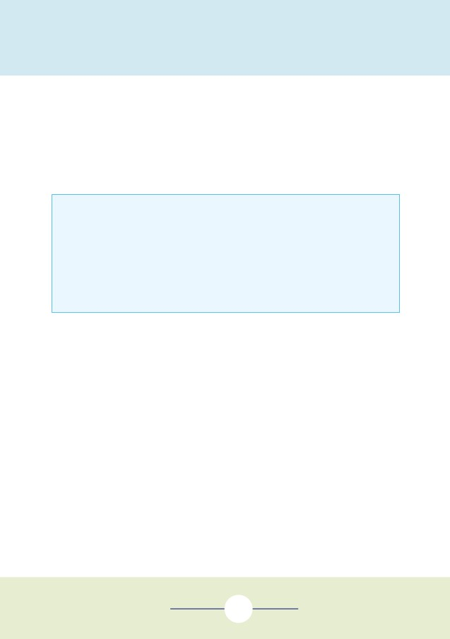
ya 7 wanasema walifanyiwa ukatili wa kijinsia kabla ya kufikisha miaka 18. Kiwango cha
ukatili wa kijinsia kwa wasichana ni mara mbili zaidi. Kwenye utafiti huu zaidiya asilimia
6 ya wasichana wenye umri kati ya miaka 13 hadi 24 ambao walipata mimba wanasema
angalau ujauzito mmoja ulitokana na kufanyiwa ukatili wa kijinsia. Robo ya wavulana na
wasichana wamefanyiwa ukatili wa kiakili na kwamba kiwango cha ukatili wa kimwili kipo
juu sana hapa nchini. Eleza kuwa tafiti zinaonesha kuwa matumizi ya nguvu ni jambo la
kawaida kabisa kutenda ukatili wa kijinsia kwenye jamii zetu. Kwenye utafiti wa UUDWT
takriban nusu ya wavulana wa Tanzania, na wasichana 7 kati ya 10 wanasemanguvu au
vitisho vilitumika katika kujaribu au kuwalazimisha kufanya ngono na kwamba matukio
mengi ya ukatili hufanyika majumbani au shuleni na hufanywa na watu tunaowafahamu.
Sababu za ukatili wa Kijinsia kwenye Jamii zetu
Jinsi ya Kuendesha
1.
Mwezeshaji wagawe washiriki katika makundi au njia nyingine ambapo utaona
inafaa kwa mazingira hayo
2.
Waelekeze washiriki kufanya yafuatayo;
➢
Wabainishe sababu za ukatili wa kijinsia
➢
Waeleze kwa nini wanawake ni waathirika wakubwa zaidi wa ukatili wa kijinsia
➢
Pia washiriki waeleze nini kifanyike katika jamii ili kukabiliana na kutokomeza
kabisa matendo ya ukatili wa kijinsia
➢ Washiriki waandike majibu yao kwenye bango kitita na kufanya uwasilishaji
Mchango wa mwezeshaji
Mwezeshaji toa mchango wako juu ya sababu au vyanzo vya ukatili wa kijinsia kama
inavyoainishwa katika sehemu hii.
Sababu za ukatili wa kijinsia.
Kuna sababu mbalimbali zinazopelekea ukatili wa kijinsia ikiwemo, mifumo ya jamii
isiyozingatia usawa baina ya wanawake na wanaume, wanawake kutokuwa na sauti na
ushiriki kwenye vyombo vya maamuzi ndani ya jamii, mitazamo hasi ya wanajamii kwa
kuwaona wanawake ni daraja la chini kuliko wanaume, nadharia zisizo sahihi kuhusu
majukumu ya wanawake na wanaume kenye jamii, mfumo dume kwenye jamii unaolinda
maslahi ya wanaume pekee, mila, desturi, tamaduni na imani za kidini.
Pamoja na sababu hizo, nyingine ni umasikini, kuanguka kwa mifumo ya kijamii inayolinda
maslahi ya wanajamii wote bila kujali jinsi, ukimya wa jamii kukemea matendo ya ukatili
wa kijinsia ikiwemo kuwapa kinga na kuwatetea watendaji wa ukatili huo, kukosekana
kwa utekelezaji wa sheria za kudhibiti vitendo vya ukatili wa kijinsia, uelewa mdogo wa
wanajamii kuhusu madhara ya ukatili wa kijinsia, familia zao na jamii, kukosa ushirikiano
kwenye vyombo vya ulinzi, usalama na sheria.
78
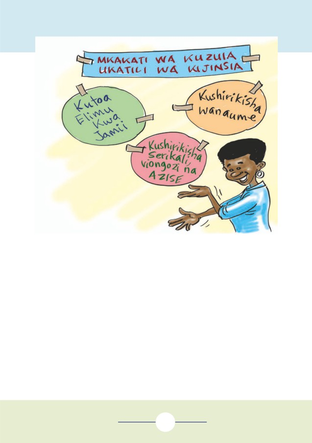
Mikakati ya kijamii kuzuia matendo ya ukatili ya kijinsia
i. Elimu kwa jamii
➣ Tumia majukwaa kama vile mikutano ya vijiji, magulio, sherehe za kimila, mikutano
ya vijana, matukio ya michezo n.k kutoa elimu ya haki za binadamu, jinsia na ukatili
wa kijinsia
➣ Shirikiana na viongozi wa serikali za mitaa kuomba kufanya mikutano midogo na
makundi maalum kama vile wanawake, wanaume, vijana, walemavu kutoa elimu ya
ukatili wa kijinsia
➣ Hamasisha watu waongee kwa uwazi bila woga au aibu kuhusu jinsia, nguvu na
mamlaka kwenye familia/kaya na jamii, mila, desturi na tamaduni zinachangia
ukatili wa kijinsia
➣ Eleza sababu na madhara ya ukatili wa kijinsia bila kukashifu mila na desturi za jamii
husika
➣ Hamasisha wana jamii kubadili mitazamo kuhusu mahusiano ya kijinsia na kinga
dhidi ya watendaji wa ukatili huo
➣ Hamasisha ulinzi wa waathirika wa ukatili wa kijinsia ndani ya jamii dhidi ya
majaribio mengine ya ukatili
➣ Hamasisha ulinzi na kuheshimu haki za binadamu kwa wanajamii
➣ Toa elimu ya baadhi ya sheria zinazozuia ukatili wa kijinsia hapa nchini
➣ Fafanua kwamba wanawake na wanaume, wavulana na wasichana wote wana haki
79
sawa ya kupata, kutumia na kufaidika na fursa zilizopo kwenye jamii ikiwemo elimu,
uchumi, biashara, afya na umiliki wa ardhi. Eleza kwamba hii ni haki ya kikatiba,
kisheria na hata kijamii kwa jamii zinazojali haki za binadamu
ii.
Shirikisha wanaume ili kupata mwitikio wao kuzuia ukatili wa kijinsia
➣
Waelimishe wabadilishe mitazamo yao (chambua mzizi wa tatizo kama ni mila,
desturi, imani, ujinga, umasikini, kukosa habari sahihi za mahusiano ya kijinsia) na
ongeza maarifa yao juu ya ukatili wa kijinsia na madhara yake. Waulize kwa mfano
kama wangependa kuona watu wao wa karibu mfano watoto, wake, dada au mama
zao wakipata athari kama vifo na ulemavu kwa sababu ya ukatili wa kijinsia
➣
Shirikisha viongozi wa dini kwa kuwajengea uwezo na kuwapa elimu ya ukatili wa
kijinsia
➣
Toa elimu ya baadhi ya sheria zinazozuia ukatili wa kijinsia hapa nchini
iii.
Shirikisha mamlaka za serikali za mitaa, viongozi wa dini na asasi zisizo za
kiserikali
➣
Shirikisha viongozi wa serikali za mtaa na vijiji kwenye mijadala ya ukatili wa kijinsia
na kwenye kazi zako za ushawishi na utetezi
➣
Lenga hasa kwa kile kilichoko ndani ya uwezo wa mamlaka za serikali za mitaa
➣
Wape ushahidi wa takwimu za ukatili wa kijinsia kwenye mtaa/kijiji husika
➣
Wape taarifa za mara kwa mara kuhusu maendeleo ya kazi unazozifanya
➣
Wapongeze na kuwashukuru mara kwa mara kwa ushirikiano wanaokupa.
➣
Jitahidi sana ukubaliane nao maeneo watakayokupa usaidizi.
➣
Shiriki kwenye mikutano wanayoiitisha na uombe ukatili wa kijinsia iwe moja ya
ajenda na uombe kutoa elimu
➣
Shawishi viongozi wa kijiji au mtaa kuingiza ukatili wa kijinsia kwenye mpango kazi
wa shughuli za kijiji.
➣
Omba usaidizi serikali ya mtaa kusaidia waathirika wa ukatili mfano kutoa ulinzi na
kuhamasisha jamii kutoficha watendaji wa ukatili huo.
➣
Omba viongozi wa dini watumie uwezo wao na heshima waliyonayo kwa jamii kutoa
elimu na kukemea matendo ya ukatili wa kijinsia.
➣
Shirikiana na asasi zisizo za kiserikali zilizopo eneo lako kwa kutoa elimu na usaidizi
mwingine kuzuia ukatili wa kijinsia.
➣
Kumbuka kujenga mahusiano na taasisi hizi sio jambo la siku moja. Litachukua
muda kufanikiwa lakini yawezekana.
iv.
Muhimu pia:
➣
Usisahau kutoa elimu ya jinsia, ukatili wa kijinisa na haki za binadamu kwa viongozi
wa kimila
➣
Shirikiana kwa karibu na idara ya polisi hasa dawati la jinsia na watoto kwenye eneo
lako
➣
Shirikiana kwa karibu na vituo vya afya kwa ajili ya tiba na unasihi kwa waathirika
wa ukatili wa kijinsia
80
Ikiwa unakutana na kiongozi wa kimila au dini kwa mara ya kwanza unaweza kumuuliza
maswali yafuatayo:
➣ Ukatili wa kijinsia kwako una maana gani?
➣ Kwa mtizamo wako, je ukatili wa kijinsia ni tatizo kwenye jamii yetu?
➣ Ikiwa kuna mwanamke amefanyiwa ukatili na kuja kukuona kwa msaada au ushauri,
utamsaidiaje?
➣ Unadhani mifumo yetu ya kijamii, mila na desturi zinawalinda watu wetu dhidi ya
ukatili wa kijinsia?
➣ Tufanye nini kama wanajamii kuzuia vitendo vya ukatili wa kijinsia
➣ Wewe binafsi kiongozi wetu kwa kushirikiana na wenzako mna mikakati gani kuhusu
kulinda watu wetu dhidi ya ukatili wa kijinsia?
Sehemu ya kupeleka taarifa za ukatili wa kijinsia
Ikiwa ukatili wa kijinsia utatokea kwenye kaya yako au ndani ya jamii unaweza kupeleka
taarifa kwenye sehemu zifuatavyo
➣ Dawati la jinsia na watoto kwenye jeshi la polisi.
➣ Ikiwa hakuna dawati la jinsia basi peleka taarifa hiyo kituo chochote cha polisi
kilichoko karibu
➣ Serikali za mtaa au ya kijiji
➣ Waone wasaidizi wa kisheria walioko karibu na eneo ukatili ulipotokea
➣ Mashirika ya huduma ya msaada wa sheria n.k
Mwisho wa Mada
Sheria za Tanzania na Ukatili wa Kijinsia
Mwezeshaji funga mjadala kwa kueleza kuwa sheria za nchi zinatambua baadhi ya makosa
ya kijinsia kama makosa ya jinai yanayostahili adhabu ikiwemo kifungo cha muda mrefu..
Sheria hizi ni pamoja na Sheria ya Kanuni ya Adhabu, Sura ya 16, Sheria ya Ndoa ya
Mwaka 1971 na Sheria ya Mtoto ya Mwaka 2009. Eleza kuwa Sheria ya Kanuni za Adhabu
ndiyo sheria kubwa yenye kutoa adhabu kwa kutenda makosa ya jinai hapa Tanzania. Katika
makosa mengi ambayo yametamkwa na sheria hii kuwa ni ya jinai, yamo makosa mengi
ndani yake ambayo yanatokana na ukatili wa kijinsia. Sheria hii inaharamisha vitendo kama
inavyoainishwa kwenye jedwali hapo chini:
81
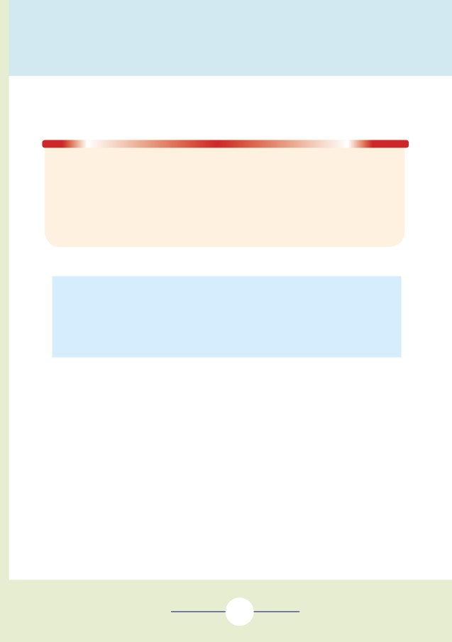
SURA YA SABA
Ndoa na taratibu zake
Lengo Kuu
Kujenga uwezo kwa washiriki kufahamu taratibu za ufungishaji ndoa na haki za wanandoa
Lengo Mahsusi
Baada ya kukamilika mada hii washiriki watafahamu;
a. Maana ya ndoa
b. Aina za ndoa
c. Sifa za kufunga ndoa
d. Taratibu za kufunga ndoa
e. Haki na wajibu wa wanandoa
Sehemu ya Kwanza - Ndoa na Mambo Muhimu katika Ndoa
Jinsi ya Kuendesha
Mwezeshaji wagawe washiriki katika makundi ya watu watano watano wajibu maswali
yafuatayo:-
➢ Ndoa ni nini?
➢ Kuna aina ngapi za ndoa? Zitaje
➢ Katika mila na desturi za jamii yenu taratibu za kufunga ndoa zikoje?
Mchango wa Mwezeshaji
Mwezeshaji toa mchango wako kwa kufafanua sheria ya ndoa ya mwaka 1971 na
kuanisha mambo muhimu juu ya ndoa na talaka. Eleza kuwa sheria ya Ndoa ya Mwaka
1971, Sura ya 29 inatoa mwongozo kuhusu haki na wajibu kwa wanandoa, utaratibu kuhusu
jukumu la malezi, haki na maslahi ya watoto wa ndoa. n.k. Sheria hii inatambua ndoa
za kimila, ndoa za kidini na ndoa za kiserikali zinazofungwa bomani. Sheria imetambua
tofauti hizi kwa kuzingatia maslahi na utofauti wa kiutaratibu wa maisha ya wanajamii.
Sheria ya Ndoa ya Mwaka 1971
Sheria hii ndiyo inayoshughulikia mahusiano ya wanandoa (mke na mume) nchini
Tanzania.
Maana ya Ndoa
Kwa mujibu wa sheria hii, ndoa ni muungano wa hiari kati ya mwanamke na mwanaume
unaokusudiwa kudumu kwa muda wa maisha yao yote.
Utambuzi wa ndoa (Aina za ndoa na sifa za kufunga ndoa)
Kisheria ndoa hutambulika pale ambapo watu wawili kwa hiari yao wataamua kuungana
chini ya mamlaka husika. Watu wanaoishi bila ndoa hawatakuwa na haki kama
87
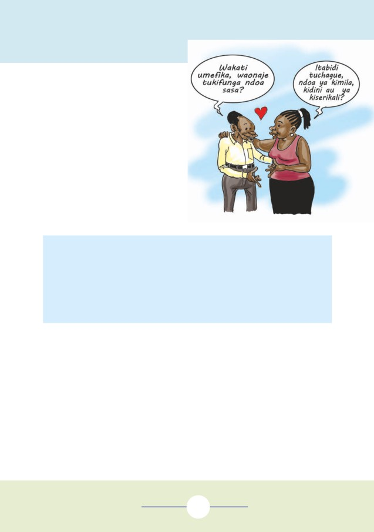
zile za wanandoa, mfano juu ya mali
walizochuma. Mtu yoyote kati yao ana
uwezo wa kupinga kwa kutoa sababu
kwamba hawakuwa kwenye ndoa.
Aina za Ndoa
Kuna aina kuu mbili za ndoa:-
(i)
Ndoa ya mke mmoja; na
(ii)
Ndoa ya wake wengi.
Taratibu za kufunga ndoa hizi zaweza
kuwa:-
(i)
Kimila;
(ii)
Kidini [kikristo au kiislamu]
na/au
(iii)
Kiserikali.
Sifa za Kufunga Ndoa
Jinsi ya Kuendesha
1.
Mwezeshaji kwa kutumia njia ya bungua bongo
waache
washiriki
wajadili
yafuatayo;
a.
Sifa za mtu kufunga ndoa ni zipi?
b.
Umri upi ni sahihi kwa mwanamke kufunga ndoa?
c.
Umri upi ni sahihi kwa mwanaume kufunga ndoa?
d.
Haki za wanandoa ni zipi?
e.
Wajibu wa wanandoa ni upi?
Mchango wa Mwezeshaji
Mwezeshaji fafanua kwa washiriki sifa za kufunga ndoa na haki na wajibu wa wanandoa
huku ukitoa mifano hai kama inavyoelezwa hapo chini;
Sifa za kufunga ndoa
Ndoa lazima iwe ya Hiari Muungano wa ndoa kati ya mwanaume na mwanamke ni
lazima uwe wa hiari kwa pande zote mbili. Hivyo basi, hiari iliyopatikana kwa njia ya
udanganyifu, ulaghai, kwa kurubuni au kulazimisha, haiwezi kisheria kuhesabika kuwa
hiari kwakuwa haikutolewa kwa uhuru. Na hivyo muungano kati ya watu hao wawili
hautahesabika kuwa ni wa hiari na unaweza kuifanya ndoa kuwa batili. Mmoja wa
wanandoa anaweza kwenda kwenye mamlaka husika na kuomba ndoa ibatilishwe.
Muungano lazima uwe kati ya mwanamke na mwanaume: Sheria za Tanzania
inatambua ndoa kama muunganiko wa hiari baina ya mwanamke na mwanaume.
Muunganiko wowote tofauti na huo unavunja sheria za nchi
88
Umri: Umri unaokubalika kisheria ni miaka 18, ila binti anaweza kuolewa akiwa chini
ya umri huo lakini si chini ya umri wa miaka 15 kwa idhini ya wazazi/walezi wake;
Ikiwa umri wake ni chini ya miaka 14 basi kibali maalumu kitatolewa na mahakama.
Wanaharakati wa Haki za binadamu wamekuwa wakikosoa kifungu hiki kwa kuwa
kinaleta ubaguzi na kuruhusu binti kuolewa akiwa mtoto hivyo kumvunjia haki zake za
mtoto na haki za binadamu
Muungano wa ndoa uwe wenye kutazamiwa kudumu: Sheria ya Ndoa inasema
muungano wa mume na mke uwe unakusudiwa kuwa wa kudumu mpaka pale kifo
kitakapowatenganisha au endapo, kwa dini ya Kiislamu, kutatolewa talaka. Ndoa za muda
mfupi kama vile za mikataba kwa mujibu wa sheria ya ndoa ya Tanzania hazikubaliki.
Wanandoa wasiwe maharimu (ndugu wa damu): Kwa mujibu wa sheria hii, hairuhusiwi
baba na binti, mama na mwana, babu na mjukuu, au bibi na mjukuu, kaka na dada,
kuoana
Wanandoa ni lazima wawepo wakati ndoa ikifungwa.Wanandoa wote ni lazima
wawepo wakati wa tukio la kufunga ndoa. Hata hivyo, sheria inaruhusu ndoa kufungwa
katika mazingira ya mwanandoa mwingine kutokuwepo ikiwa kuna sababu za msingi.
Hata hivyo, ni lazima mwanandoa huyo awe ametoa idhini hiyo mbele ya mashaidi.
Kuwepo na Mashahidi: Hawa lazima wawe watu wenye akili timamu na wawe na umri
wa miaka 18 na kuendelea. Mashahidi wanatakiwa wasiwe chini ya watu wawili
Kusiwe na ndoa inayoendelea: Kwa wakristo hairuhusiwi kufunga ndoa zaidi ya mke
mmoja, na kwa waislamu wanaruhusiwa kuoa si zaidi ya wake wanne.
Mfungishaji ndoa lazima awe na mamlaka: Mfungishaji ndoa ni lazima awe na leseni
au kibali cha kufungisha ndoa kutoka kwa msajili wa ndoa. Hata hivyo, ndoa iliyofungwa
na mtu asiye na leseni kisheria si batili ikiwa haitapingwa na mtu yeyote mahakamani.
Mwanamke asiwe katika Eda: kwa mujibu wa sheria za kiislamu, mwanamke wa kiislamu
hatakiwi kufunga ndoa awapo kwenye eda ya kufiwa na mume au wakati ameachana
na mume wake.Eda ni kipindi cha miezi 3kinachotolewa kwa mwanamke wa kiislamu
aliyeachika katika ndoa au aliyefiwa na mumewe, ili taratibu fulani za kidini zifanyike.
Kama mwanamke ambaye ndoa ilifungwa Kiislamu anaolewa wakati wa kipindi cha
Eda hakijaisha basi ndoa hiyo ni batili. Lakini mfaruku au mtalikiwa awe anafuata dini
ya Kiislamu. Kama atabadili dini baada ya kufiwa au kupewa talaka masharti ya Eda
hayatambana.
Ndoa itangazwe kwa muda wa siku 21 na kusiwe na pingamizi:Wanaotazamia kufunga
ndoa wasiwe wamewekewa pingamizi la msingi na mtu yeyote. Sheria ya ndoa inatamka
wazi kwamba kabla ya ndoa kufungwa lazima tangazo litolewe kuonyesha kusudio la
kufunga ndoa. Tangazo lazima liwe la siku 21 kabla ndoa husika kufungwa, lakini pia
sheria inamruhusu msajili wa ndoa kufungisha ndoa bila tangazo la siku 21 kama kuna
sababu za msingi.
89
Haki na Wajibu wa Wanandoa
Sheria ya ndoa imeainisha haki na wajibu mbalimbali kwa wanandoa kama ifuatavyo:-
(i)
Matunzo: Mume anawajibu wa kumtunza mkewe kwa malazi, mavazi na
chakula kulingana na kipato chake. Wajibu huu huhamia kwa mke pindi mume wake
anaposhindwa kuutimiza kwa sababu za msingi kama vile kuugua.Hata
hivyo, ni muhimu kukumbuka kuwa, mke ambae anauwezo wa kuingiza
kipato, anao wajibu wa kuchangia katika kutunza familia na si kumuachia
mume peke yake.
(ii)
Kuishi katika nyumba ya ndoa: Nyumba ya ndoa ni ile wanayoishi wanandoa
na inaweza kuwa nyumba waliyojenga au kupanga. Ikiwa nyumba hiyo
imejengwa na wanandoa hakuna mwenye mamlaka ya kuiuza au kuiweka
rehani kwa ajili ya kuchukua mkopo benki bila idhini ya mwanandoa
mwenzake.
(iii)
Kumiliki mali: Sheria hii inatoa haki sawa kwa mume na mke kumiliki
mali aidha kwa pamoja au kila mmoja na mali yake. Inapotokea ndoa
kuvunjwa mahakamani mgawanyo wa mali utategemea na mchango wa
kila mwanandoa katika upatikanji wa mali hiyo. Ikiwa mwanandoa atasema
hakuchuma mali hiyo kipindi cha ndoa basi atapaswa athibitishe hilo.
Ikiwa itathibitika kuwa alipata mali hiyo kabla ya ndoa au kipindi ambapo
wanandoa walikuwa wametengana basi mali hiyo inaweza kuwa ni yake
binafsi. Hata hivyo ifahamike kuwa mwanandoa mmoja kutokuwa na kipato
haiwezi kufanya kuwa asipate mgao, kwakuwa alihusika katika njia nyingine
ya kutoa mchango kama vile kutunza watoto, kuiweka nyumba katika hali ya
usafi, kuitunza n.k
(iv)
Dhana ya mkopo: Mke ana haki ya kukopa kwa jina la mume wake au
kuuza vitu vya mume kwa lengo la kuipatia familia mahitaji muhimu ikiwa
mume hatoi mahitaji hayo bila sababu za msingi.
(v)
Matunzo ya watoto wa ndani ya ndoa: Ni wajibu wa mwanaume kutunza
watoto wake bila kujali anaishi nao au la. Hii ni pamoja na gharama za
chakula, mavazi na shule.
(vi)
Uhuru wa kuishi popote: Endapo mume atafariki basi mwanamke anao
uhuru wa kuishi popote na anayo haki ya kuolewa au kutokuolewa.
(vii)
Kufanya tendo la ndoa:Wanandoa wanao wajibu wa kutimiza tendo la ndoa
ikiwa hakuna udhuru wa ugonjwa au sababu zingine.
(viii)
Wajibu wa kuzaa: Ikiwa mwanandoa (ambaye ni mke) anao uwezo wa
kubeba mimba au kutunga mimba (akiwa mwanaume), ni wajibu wake
kuzaa. Kuzuia kwa makusudi kutozaa ndani ya ndoa husababisha migogoro
ya ndoa na kufanya ndoa kuvunjika. Hivyo wanandoa wanapaswa kujadiliana
na kukubaliana wakati wa kuzaa, idadi ya watoto wanaotaka kuzaa na muda
wa kusubiri kabla ya kupata mtoto mwingine.
90
Ndoa batili: Ndoa batili ni ndoa ambayo si halali kisheria toka kufungwa kwake. Vitu
vinavyofanya ndoa kuwa batili kama vifuatavyo;
➣ Mmoja au wanandoa hao hawakufikisha umri unaotambulika kisheria wa
kufunga ndoa
➣ Kama wanandoa hao ni maharimu
➣ Kama mmoja wa wanandoa hao alikuwa na ndoa inayoendelea (alishaoa au
kuolewa)
➣ Mmoja au wanandoa hao walilazimishwa kuoa au kuolewa
➣ Mmoja au wanandoa hao hakushiriki katika sherehe ya kufungwa ndoa hiyo
➣ Kama mfungishaji wa ndoa hiyo hakuwa na mamlaka kisheria ya kufungisha
ndoa hiyo
➣ Kama ndoa hiyo ilifungwa kwa malengo kwamba itakuwa ni ya muda mfupi (ya
mkataba)
Ndoa Batilifu: Ndoa batilifu ni ndoa ambayo itachukuliwa kisheria kuwa ni ndoa halali
hadi hapo amri ya kuivunja itakapotolewa na mahakama. Ndoa batilifu ni halali kama
ndoa nyingine isipokuwa ina kasoro fulani. Wanandoa katika ndoa hii wana haki na wajibu
sawa kama ilivyo katika ndoa nyingine zisizo na kasoro. Kadhalika watoto waliozaliwa
katika ndoa ya namna hii ni halali na wana haki zote kisheria.Vitu vinavyofanya ndoa
kuwa batilifu ni kama vifuatavyo;
➣ Mwanandoa kutoweza kufanya tendo la ndoa.
➣ Mmoja wa wanandoa kudhihirika kuwa na kichaa au kifafa.
➣ Mmoja wa wanandoa kuthibitika kuwa na magonjwa ya zinaa.
➣ Mke kudhihirika kuwa alikuwa na mimba ya mwanaume mwingine wakati wa
kufunga ndoa.
➣ Mwanandoa mmoja wapo kukataa kwa makusudi kufanya tendo la ndoa tangu
ndoa kufungwa.
Angalizo: Hata hivyo, ndoa batilifu itaendelea kuwa ndoa halali kisheria mpaka pale
mmojawapo atakapoamua kupeleka malalamiko mahakamani na mahakama kuibatilisha
baada ya kupata uthibitisho wa sababu yoyote kati ya hizo tajwa hapo juu.
Haki za Mwanamke katika ndoa
Mwanamke alie katika ndoa ana haki sawa kama zile za mwanaume ikiwa ni pamoja na
haki ya;
➣ Kununua, kumiliki au kuuza mali zake mwenyewe
➣ Kukopa kwa jina la mume wake kwa ajili ya kuihudumia familia yake
➣ Kudai au kupokea mshahara wa mume wake kwa ajili ya kuitunza familia
yake pale ambap mume wake hawezi kutimiza wajibu huo
➣ Kuuza mali ya familia kwa ajili ya kuihudumia familia
➣ Kutonyanyaswa au kupewa adhabu za kutandikwa viboko
➣ Kupendwa, kutunzwa na kuhifadhiwa kulingana na uwezo wa mume
Angalizo: mwanamke pia ana wajibu wa kumtunza na kumhifadhi mume wake pale
ambapo mume wake ni mgonjwa au ameshindwa kufanya shughuli zake kwa sababu ya
kuumia au kutokuwa na kazi inayomuingizia kipato.
91
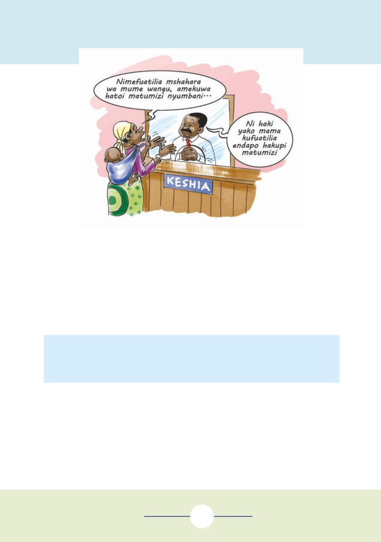
Mamlaka za Ufungishaji Ndoa
Sheria imebainisha na kutoa nguvu kwa mamlaka zifuatazo kuwa na uwezo wa
kufungisha ndoa. Watu ambao wanahitaji kufunga ndoa wanaweza kwenda kwenye
mamlaka zifuatazo:
(i)
Msajili mkuu au Msajili msaidizi katia ofisi za Wilaya/Manispaa
(ii)
Viongozi wa dini katika Makanisa na Msikiti
(iii)
Viongozi wa mila katika kabila/kijiji
Mahari
Jinsi ya Kuendesha
Mwezeshaji wagawe washiriki katika makundi na wafanye yafuatayo;
➢ Washiriki waeleze kama mahari ni muhimu au siyo muhimu kwenye ndoa
➢ Kama ni muhimu watoe sababu na kama siyo muhimu watoe sababu
Mchango wa mwezeshaji
Mwezeshaji funga mjadala kwa kutia msisitizo kuwa kwa mujibu wa sheria, mahari siyo
kigezo cha kufungisha ndoa. Jambo la msingi ni kwamba wanaokusudia kufunga ndoa
wawe wametimiza sifa za kufunga ndoa mfano umri, hiari n.k
92
Dhana ya Ndoa
Jinsi ya Kuendesha
Nini dhana ya Ndoa: Mwezeshaji wasomee washiriki kisa mkasa kifuatacho;
Juma na Mage ni vijana wanaoishi pamoja katika nyumba moja baada ya kumaliza masomo
ya chuo kikuu. Watu hawa wanaishi kwa kipindi cha zaidi ya miaka sita sasa ingawa bado
hawajaoana. Hata hivyo wote wanafurahia kuishi pamoja kama mke na mume ingawa bado
hawajaamua kuzaa watoto. Kwa kipindi cha maisha yao walioishi pamoja wamefanikiwa
kujenga nyumba Tegeta, kununua gari na fenicha za ndani. Juma na Mage pia wanaishi na
mtoto wa dada yake na Juma aitwae Neema. Hatimae Neema amepata mchumba aitwae
Baraka. Wazazi wa Neema wapo mbali na kijiji na wametoa ruhusa kwa Mage na Juma
kupokea barua ya uchumba wa Neema kwa niaba yao. Siku ya siku ilipofika, kuna baadhi ya
dada wa Juma walitaka Mage asiwepo kwenye kupokea mahari eti kwa sababu sio mke halali
wa Juma. Pia wakamtaka Juma amfukuze mwanamke huyo kwani pamoja na kwamba
hajamuoa pia inaonekana kuwa hazai. Wakamshauri Juma kuoa mwanamke mwingine.
Hatimae, Juma akaamua kumfukuza Mage nyumbani kwao bila ya kumpatia kitu chochote
sababu hawakuwa wameoana na pia vitu vyote viko kwenye jina la Juma. Mage amefungua
madai mahakamani anadai kuwa yeye alikuwa mke halali wa Juma na hivyo anadai kupewa
talaka na pia kugawiwa mali waliyochuma pamoja baada ya kuachana.
Maswali kwa washiriki
➢ Je ni kweli Juma na Mage walikuwa wanandoa au si wanandoa? Jadili.
➢ Mage baada ya kufukuzwa na Juma, ana haki yeyote ya kupata mgao wa mali
walizochuma wakati akiishi na Juma? Kwa nini?
➢ Nini ni faida za kufunga ndoa/
➢ Zipi ni hasara za kuishi kama mke na mume bila kufunga ndoa?
Mchango wa Mwezeshaji
Baada ya washiriki kujadili kisa hiki, mwezeshaji elezea dhana ya ndoa na mambo
muhimu yanayojenga dhana hiyo kwa kufafanua kama ifuatavyo;
Dhana ya Ndoa
Sheria ya Ndoa ya mwaka 1971 inatambua kuwepo kwa dhana ya ndoa kwa mujibu wa
kifungu cha 160. Kwa mujibu wa kifungu hiki, sheria ya ndoa inaeleza kwamba watu
wawili (mke na mume) ni wanandoa ingawa hawajafuata taratibu zozote za kufunga
ndoa iwe kimila, kidini au kiserikali.
Na ili mke/Mume aweze kuithibitishia mahakama kuwa alikuwa anaishi kwenye dhana
ya ndoa, mambo yafuatayo ni muhimu.
(i)
Kwamba wanandoa walipoanza kuishi kwenye dhana ya ndoa, hawakuwa na
ndoa inayoendelea;
(ii)
Wanandoa hao wanaishi/waliishi kwa pamoja kwa muda wa miaka miwili
mfululizo na jamii inayowazunguka inawatambua kuwa mume na mke;
93
(iii)
Wanandoa hao wametimiza umri unaokubalika kisheria ambao ni miaka 18.
Angalizo: Dhana ya ndoa inaweza kukanushika mahakamani ikiwa mmoja wa wenzi hao atatoa
ushahidi wa kuonyesha kuwa hawakuishi kama mke na mume au muda wa miaka miwili
haukutimia.
Dhana hii ya ndoa husimama pale tu ambapo hakuna mmoja kati ya wenzi hao wawili aliyekuwa
na ndoa inayoendelea wakati akiingia katika mahusiano hayo. Kwa hiyo, kimada au ‘nyumba ndogo’
ya mtu mwenye ndoa hawezi kudai haki ya ‘dhana ya ndoa’.
Usajili wa Ndoa
Sheria ya ndoa inamtaka kila mwanandoa kusajili ndoa yake katika mamlaka husika
ndani ya siku 30 baada tu ya kufunga ndoa. Ndoa za aina zote zinatakiwa kusajiliwa
kwenye mamlaka husika na kutolewa cheti cha ndoa.
➣ Kama ndoa ilifungwa kimila, au kiislamu, na kama msajili hakuwepo, mwanandoa
atatakiwa kwenda kusajili ndoa hiyo kwa Msajili wa wilaya au kwa kadhi (kama
ni ndoa ya kiislamu) ndani ya siku 30.
Ndoa ambazo zimefungwa muda mrefu pia zinaweza kusajiliwa kama haikusajiliwa
kabla.
Faida za Kusajili Ndoa
➣ Usajili wa ndoa na cheti cha ndoa unarahisisha taratibu na mashauri yanayohusu
mirathi kwa kujua aina ya ndoa na yupi ni mke/mme halali, hivyo kusaidia
kulinda haki ya mjane na mgane.
➣ Pia katika mashauri ya talaka, cheti kitahitajika mahakamani katika kuthibitisha
mzazi halali wa mtoto na kuamua juu ya nani atakaa na mtoto.
➣ Cheti cha ndoa kinahitajika katika sehemu nyingi zinazochangia kujenga
uchumi wa familia, kama vile wakati wa kuuza ardhi, kuomba mikopo benki n.k
➣ Pia usajili wa ndoa na cheti cha ndoa unawatambulisha wanandoa kimataifa pale
watakapohitaji kusafiri kwenda nchi za nje.
➣ Pia inasaidia katika kuweka ushahidi kwamba watu hawa ni wanandoa, na
kusaidia katika regista na kumbukumbu za taifa.
➣ Umiliki wa mali - kusajili ndoa yako kunasaidia katika kutambulisha wanandoa
halali, hii itasaidia katika kujua nani ana haki ya kumiliki mali za ndoa. Wanandoa
wana haki sawa ya kumiliki mali walizonazo ndani ya ndoa.
Talaka
Jinsi ya Kuendesha
Mwezeshaji jadili pamoja na washiriki maswali yafuatayo:-
➢ Talaka ni nini?
➢ Ni nani anaweza kutoa talaka?
➢ Ni sababu zipi zinaweza kufanya kutolewa talaka?
94
Mchango wa Mwezeshaji
Mwezeshaji toa ufafanuzi wa talaka ni nini na mambo muhimu katika kushughulikia
masuala ya talaka kwa kutumia ujuzi wako na msaada wa mwongozo huu kama
inavyoelezwa hapo chini.
Maana ya Talaka
Kwa mujibu wa dini ya kiislamu ndoa inaweza kuvunjwa kwa njia ya talaka. Hata hivyo
kwa mujibu wa Sheria ya Ndoa, ndoa itahesabika kuwa imevunjika ikiwa imevunjwa na
mahakama pekee
Kwa maana hiyo, talaka inaweza pia kutafsiriwa kuwa ni ruhusa ya kisheria ambayo
mahakama hutoa kwa mume au mke kumwacha wanandoa mwenzake
Sababu za Kutoa Talaka
Mahakama hutoa talaka inapoona na kuridhika kuwa ndoa imevunjika kiasi ambacho
haiwezi kurekebishika tena. Ili kuthibitisha kuwa ndoa imevunjika na haiwezi
kurekebishika tena, mahakama hutumia vigezo vikuu vifuatavyo:-
i.
Ukatili: unaweza ukawa wa maneno kama vile matusi au ukawa wa matendo
(kama vile kwa mwanandoa);
ii.
Uasi/utoro;
iii.
Ugoni/kufumaniwa;
iv.
Kulawiti/kuingilia kinyume na maumbile;
v.
Kutotimiza tendo la ndoa kwa makusudi;
vi.
Kutengana kwa zaidi ya miaka mitatu (3);
vii.
Kifungo cha mwenza kisichopungua miaka mitano (5) au cha maisha;
viii.
Dhana ya vifo kwa kipindi kisichopungua miaka mitano (5);
ix.
Kichaa kisichotibika na kiwe kimethibitishwa na madaktari bingwa wa magonjwa
ya akili wasiopungua wawili.
Taratibu za kuomba talaka
Kwa utaratibu wa kisheria, mwanandoa anayetaka kupata amri ya mahakama ya kuvunja
ndoa yake anapaswa afanye yafuatayo;-
i.
Atapeleka malalamiko yake kwenye Baraza la Usuluhishi la Ndoa linalotambulika
kisheria. Mabaraza hayo ni BAKWATA, baraza la ndoa la kanisa, baraza la kata
na baraza la kamishna la ustawi wa jamii.
ii.
Baraza likishindwa kusuluhisha wanandoa litatoa hati ya kwenda mahakamani.
iii.
Akipata hati hiyo ya kushindikana kwa usuluhishi atafungua shauri la kutaka talaka
mahakamani, ataomba mali walizochuma zigawanywe na pia ataomba mahakama
ielekeze jinsi uangalizi na malezi ya watoto yatakavyokuwa.
iv.
Ataambatanisha orodha ya watoto wa ndoa na umri wao katika hati ya kudai
talaka.
v.
Ataambatanisha pia orodha ya mali za wanandoa hao walizochuma pamoja wakati
wa ndoa yao.
95
Angalizo: ndoa yoyote haiwezi kuvunjwa hadi iwe imefikisha muda wa miaka miwili,
labda kuwe na sababu nzito ambayo inaweza kuishawishi mahakama kutoa hati ya talaka
kabla ya ndoa kutimiza miaka miwili.
Uangalizi na Matunzo ya Watoto Baada ya Ndoa Kuvunjika
Kwa kawaida mzazi yoyote anaweza kuomba apewe amri ya kukaa na mtoto baada ya
ndoa kuvunjika. Mahakama ndio yenye mamlaka ya kuamua mtoto ataishi na nani pindi
ndoa inapovunjwa na baada ya ndoa kuvunjika. Amri ya kubeba dhamana ya malezi ya
mtoto/ watoto inaweza kutolewa kwa baba, mama au ndugu wa karibu wa mtoto/watoto.
Haitajalisha mtoto/watoto watakaa na nani, mume na mke watatakiwa kuchangia kutoa
matunzo kwa ajili ya watoto, na kuhakikisha haki zao za msingi kama elimu, chakula,
mavazi, kutibiwa, hazipotei.
Sehemu ya Pili - Ndoa za Utotoni/Ndoa Katika Umri Mdogo
Jinsi ya Kuendesha
1.
Mwezeshaji andika kwenye bango kitita au ubaoni neno Ndoa za Utotoni kama
kichwa cha habari. Chini ya kichwa cha habari andika maneno yafuatayo:
➢ Ndoa
➢ Mtoto
2.
Waombe washiriki kwa namna waelewavyo wao waeleze maana ya (a) Ndoa (b)
Mtoto.
3.
Washiriki pia waeleze yafuatayo
➢
Ndoa za utotoni ni nini
➢
Kwa nini kuna ndoa za utotoni kwenye jamii zao
➢
Je kuna madhara yeyote yatokanayo na ndoa za utotoni, kama ndiyo madhara hayo
ni yapi, kama hakuna kwa nini?
➢ Orodhesha majibu ya washiriki kwenye bango kitita ili uyatolee ufafanuzi
Mchango wa mwezeshaji
Mwezeshaji toa ufafanuzi kwa washiriki juu ya ndoa za utotoni kwa kutoa maana ya
ndoa za utotoni, na madhara yake kwa watoto hasa watoto wa kike. Angalia ufafanuzi
hapo chini.
Ndoa za Utotoni
Ndoa za utotoni ni nini?
Mtoto ni mtu yeyote mwenye umri chini ya miaka 18. Hivyo basi ndoa za utotoni ni
kitendo cha kuishi maisha ya mke na mume na mtu mwenye umri chini ya miaka 18.
Ufungishaji wa ndoa kwa watu walio chini ya umri wa miaka 18 ni ukiukaji wa haki za
mtoto.
Tanzania ni miongoni mwa nchi zinazoongoza kwa ndoa za utotoni duniani. Tafiti
mbalimbali zinaonesha kuwa mnamo mwaka 2010,asilimia 37 ya wanawake wenye umri
wa miaka 20 hadi 24 walioolewa kabla ya kufikisha miaka 18. Maana yake ni kwamba
wasichana wawili (2) kati ya watano (5) nchini Tanzania waliolewa wakiwa watoto.
96
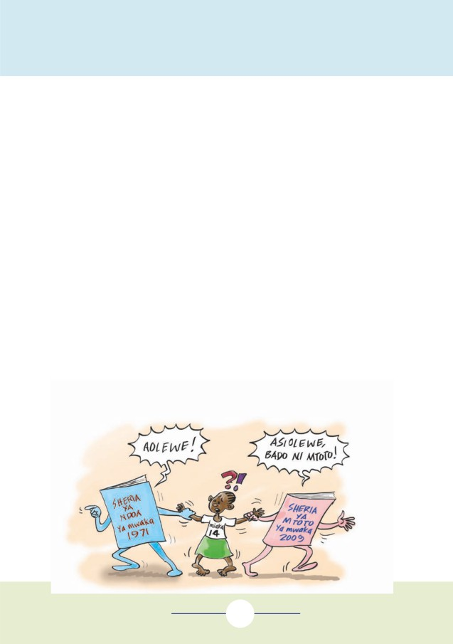
Kwa mujibu wa Chama cha Wanahabari Wanawake Tanzania (TAMWA) ndoa za umri
mdogo zinaonekana ni jambo la kawaida nchini Tanzania. Mikoa inayoongoza kwa ndoa
za utotoni ni Shinyanga (asilimia 59), Tabora (asilimia 58), Mara (asilimia 55), Dodoma
(asilimia 51), Lindi (asilimia 48), Mbeya (asilimia 45), Morogoro (asilimia 42), Rukwa
(asilimia 40), Ruvuma (asilimia 39), Mwanza (asilimia 37), Kagera (asilimia 36), Mtwara
(asilimia 35), Manyara (asilimia 34), Pwani (asilimia 33), Tanga (asilimia 29), Arusha
(asilimia 27), Kilimanjaro (asilimia 27), Kigoma (asilimia 26), Dar es Salaam (asilimia
19), na Iringa (asilimia 8).
Kikwazo kikubwa katika kupambana na tatizo la ndoa za utotoni ni sheria ya ndoa ya
mwaka 1971. Sheria hii inaruhusu wasichana wenye miaka 14 kuolewa (kwa ruhusa
maalum ya wazazi), inaruhusu wasichana wenye umri kuanzia miaka 15 kuolewa iwapo
umbile lao linaonekana kubwa.
Baadhi ya Sababu ya Ndoa za Utotoni
Sheria ya Ndoa ya Mwaka 1971
Sheria ya ndoa hubagua kati ya wasichana na wavulana, ikitambua umri wa miaka 15
kama umri wa kisheria wa mwanamke kuweza kuolewa na umri wa miaka 18 kwa
mwanaume kuweza kuoa. Sheria hiyo inaashiria kukubalika kwa dhana kwamba miaka
michache baada ya kupevuka, wasichana huwa tayari kufanya ngono na kupata watoto,
haya pia ndiyo mapokeo katika tamaduni nyingi hapa nchini
Mgongano/Mkinzano wa Sheria Hapa Nchini
Mgongano wa sheria hapa nchini kwa kiwango kikubwa pia unachangia kushamiri
kwa ndoa za utotoni. Sheria ya mtoto ya mwaka 2009 haitaji moja kwa moja umri wa
kuolewa, hata hivyo inafafanua kuwa mtoto ni mtu yeyote wa umri wa chini ya miaka
18. Kwa hali hiyo basi, sheria ya ndoa ya mwaka 1971 inaridhia moja kwa moja ndoa za
utotoni. Pia sheria ya kanuni za adhabu inawabagua wasichana kwa kuruhusu ndoa za
umri mdogo mradi tu mke na mume hawatafanya tendo la ndoa hadi wafikishe umri wa
miaka kumi na tano au zaidi na wawe hawajatengana. Kumpa majukumu ya ndoa mtoto
wa kike kabla ya kufikisha umri wa miaka 18 ni kumbagua na kumnyima fursa sawa za
97
elimu, ukuaji na afya ya akili, afya ya uzazi, na kufurahia utoto wake sawa na mwenzie
wa jinsi ya kiume.
Kumaliza mgogoro wa ukatili wa kijinsia
Familia za wahalifu wa ukatili wa kijinsia pamoja na waathirika (watoto wa kike chini ya
miaka 18) huamua kumaliza mgogoro kwa kuoana, ikiwa na maana kwamba mwathirika
huolewa na mbakaji.
Ulinzi
Wakati mwingine wazazi huamini kwamba ndoa hizi zinawalinda wasichana hasa pale
wanapoona kwa kufanya hivyo huenda wanawaepusha wasichana na ukatili wa kimwili
au kingono. Hata hivyo dhana hii si ya kweli hata kidogo kwani tafiti zinaonesha kuwa
wasichana walioolewa kwenye umri mdogo wamekuwa wakipata mateso makubwa
kwenye ndoa zao ikiwemo kupata mimba za utotoni ambazo wakati mwingine
husababisha vifo na maradhi ya kudumu
Umasikini
Kwa baadhi ya familia masikini sana mahari inayolipwa, kama chanzo cha mapato
kwenye familia na wazazi huamini kuwa kwa kumuozesha binti katika umri mdogo
kunapunguza mzigo na gharama kwa familia kwani baba anakuwa amepunguza idadi ya
watu wa kuwalisha, kusomesha na kutunza
Mila na desturi
Ndoa za utotoni kwenye Mila na desturi za makabila mengi ya Tanzania zinatokea kwa
sababu tu ni utamaduni. Kwa sababu eti imekuwa hivyo katika jamii zetu vizazi kwa
vizazi basi tuendeleze ndoa za utotoni. Ikumbukwe kuwa tamaduni, mila na desturi
zililetwa na watu/binadamu na zinaweza kubadilika. Huko nyuma mababu na mabibi
hawakufahamu madhara ya ndoa za utotoni na mazingira ya ulimwengu yamebadilika
sana. Kizazi hiki cha sasa kina wajibu wa kuachana na utamaduni huu unaombagua
mtoto wa kike.
Majukumu ya Kijinsia
Kwenye jamii nyingi nchini ambako ndoa za utotoni zimeshamiri watoto wa kike
wanabaguliwa na kutothaminiwa sawa na wenzao wa jinsi ya kiume. Mara nyingi
huonekana kama mzigo kwa familia kutunza na kusomesha. Jitihada zifanyike kubadili
mitazamo na kusisitiza kuwa watoto wa kike ambao hawaozwi wakiwa na umri mdogo
na wamemaliza masomo yao bila kukatishwa kwa sababu yeyote ile wana nafasi kubwa
ya kutoa mchango kwenye maendeleo ya familia na jamii.
Madhara ya Ndoa katika Umri Mdogo
Vifo kutokana na mimba za utotoni
Wasichana wanaoolewa katika umri mdogo wako katika hatari kubwa ya kupoteza
maisha kutokana na kupata mimba katika umri mdogo. Tafiti zinaonesha kuwa wengi
ya wajawazito wanaopoteza maisha wakati wa kujifungua ni wale walio na umri chini
98
ya miaka 18. Aidha, watoto wachanga wanaozaliwa na mama mwenye umri mdogo
wanakabiliwa na hatari kubwa zaidi ya kupoteza maisha kuliko wale waliozaliwa na
mama wa umri mkubwa. Wataalamu wanasema miongoni mwa kila vichanga 1,000
vinavyozaliwa na mama wa umri wa chini ya miaka 18, vichanga 41 hupoteza maisha
ndani ya mwezi mmoja baada ya kuzaliwa. Hata hivyo mama anapokuwa na umri wa
miaka 20 hadi 29, idadi ya vifo vya vichanga hupungua hadi kufikia vifo 22 kwa kila
vichanga 1,000 vilivyozaliwa hai. Pia kutokana na kupata mimba wakiwa watoto mno
katika ndoa zao mara nyingi wasichana hukatiza masomo yao na kukosa haki ya kupata
elimu, uhuru wa kiuchumi, na hukabiliwa na unyanyasaji wa majumbani kwa sababu ya
hali yao ya ujauzito ikiwemo ubakaji wa kwenye ndoa.
Ongezeko la hatari za kiafya
Hatari kadhaa za kiafya pia huwakabili wasichana wanaoolewa katika umri mdogo
ikiwemo kupasuka mirija ya uzazi, mimba kutunga nje ya mfuko wa uzazi, kupata fistula
(Kwa kitaalamu fistula hujulikana kama njia isiyo ya kawaida inayounganisha mfuko wa
mkojo na uke, ambayo huruhusu mkojo na/au haja kubwa kutoka kwenye kuta za uke
bila mwanamke kuwa na uwezo wa kujizuia. Fistula hutokea baada ya mwanamke kupata
madhara wakati wa kujifungua pale ambapo kichwa cha mtoto ni kikubwa kuliko njia ya
uzazi. Mimba katika umri mdogo hasa kutokana na ndoa za utotoni ni chanzo kikubwa
cha tatizo la Fistula. Pia ndoa za utotoni zinaongeza athari ya maambukizo ya VVU
na UKIMWI kwa wasichana kwani mara nyingi hawana sauti kwenye ndoa kuweza
kufanya maamuzi ya kutumia kinga wakati wa tendo la ndoa.
Kumnyima mtoto wa kike haki ya kupata elimu
Haki ya Elimu ni haki ya kikatiba nchini Tanzania. Ibara ya sita (6) ya katiba inaeleza
kuwa “Kila mtu nayo haki ya kujielimisha na kila raia atakuwa huru kutafuta elimu katika
fani anayoipenda hadi kufikia upeo wowote kulingana na stahili na uwezo wake.” Hata
hivyo watoto wa kike wamekuwa wakikatizwa masomo yao au kutopelekwa shuleni kabisa
(na wazazi au walezi wao) ili kuwaoza. Tafiti zinaonesha kuwa uwiano wa watoto wa kike
na kiume hupungua kadri wanavyoendelea na masomo ingawa wakati wa uandikishaji
uwiano huwa sawa. Kupungua kwa uwiano mara nyingi husababishwa na wasichana
kukatizwa masomo kwa ajili ya kuolewa au kupata mimba. Huu ni uvunjaji wa haki za
binadamu, kuvunja katiba ya nchi na kukiuka sheria za nchi zinazotoa haki sawa ya elimu
kwa watoto wa kike na wa kiume bila kujali jinsi zao au hali zao za kiafya, kiuchumi,
kitamaduni na kisiasa. Ikumbukwe kuwa wahenga walinena “Elimu ni Ufunguo wa
Maisha”. Katika mfumo wa maisha ya mwanadamu elimu imekuwa nyenzo muhimu ya
kumpa mwanadamu maarifa, ujuzi na stadi za kukabiliana na changamoto zinazomkabili
binadamu katika mazingira anayoishi. Mtoto wa kike pia anahitaji nyenzo hii imsaidie
kukabiliana na changamoto za maisha.
Umasikini
Kwa kuwa mara nyingi hukatizwa masomo hivyo kushindwa kuhitimu elimu yao
wasichana wanaoolewa katika umri mdogo, mara hivyo hukosa uwezo wa kuchangia
katika pato la kaya. Matatizo ya kiuchumi huwasababishia wasichana walio kwenye ndoa
katika umri mdogo usumbufu mkubwa kwenye ndoa zao kwa kuwa tegemezi kupita kiasi
99
kwa waume zao jambo ambalo huwaweka katika hatari zaidi ya kufanyiwa vitendo vya
unyonyaji na ukatili.
Ukatili wa kijinsia
Wasichana kwenye ndoa za umri mdogo wako katika hatari ya kufanyiwa vitendo vya
ukatili wa kijinsia kuliko kundi lolote lile kwa kuwa kwa umri wao mara nyingi hawawezi
kujitetea dhidi ya vitendo vya ukatili mfano kupigwa au kulazimishwa ngono, mara
nyingi hawana ufahamu wa haki zao na ni tegemezi kiuchumi.
Ubaguzi dhidi ya wasichana
Ndoa katika umri mdogo zinaongeza ubaguzi dhidi ya wasichana kwani sheria inaruhusu
ndoa kwa wasichana wenye umri wa miaka15 kuolewa kukiwa na idhini ya wazazi na
miaka 14 kwa idhini ya mahakama. Hata hivyo hakuna mahala popote pale sheria inataja
mtoto wa kiume kupata idhini ya wazazi au mahakama pale anapotaka kuoa. Huu ni
ubaguzi dhidi ya watoto wa kike na ni kuwanyanga’anya uhuru wa kufurahi haki zao
utotoni kama ilivyoanishwa kwenye sheria ya mtoto ya mwaka 2009, ni uvunjaji wa
katiba ya nchi inayotoa haki sawa kwa wanawake na wanaume na ukiukaji mkubwa wa
haki za binadamu na haki za wanawake
Tufanye nini kukabiliana na ndoa za umri mdogo?
Jinsi ya Kuendesha
1.
Mwezeshaji waelekeze washiriki kila mmoja amgeukie jirani yake (wawe
wamegeukiana wawili wawili) na wajadili na kujibu suala lifuatalo;
a.
Je jamii ifanye nini ili kukomesha ndoa zinazofungwa katika umri mdogo?
b.
Andika majibu ya washiriki kwenye bango kitita na utumie majibu yao kama
mwongozo kufafanua hatua za kuchukua kukomesha ndoa katika umri
mdogo
Mchango wa Mwezeshaji
Mwezeshaji eleza kuwa ndoa za utotoni ni tatizo kubwa na itagharimu muda na fedha
nyingi kulimaliza. Lakini jamii inaweza kutumia baadhi ya mikakati ifuatayo kupunguza
tatizo hili. Mikakati hiyo ni:
➣ Wasaidizi wa kisheria wawajengee uwezo viongozi na wazee wa mila ili waelewe
madhara ya ndoa za utotoni katika familia na jamii wanayoishi
➣ Wasaidizi wa kisheria waishawishi jamii kujenga tabia ya kuwashirikisha
viongozi muhimu katika jamii wakiwemo wale wa kimila ili kuwe na uelewa wa
aina inayofanana miongoni mwao kuhusu haki za wasichana na wanawake na
athari za ndoa za utotoni kwa familia na jamii wanayoishi
➣ Elimu kwa jamii ili kubadili mitizamo, mila na desturi zinazochangia kushamiri
kwa ndoa za umri mdogo
➣ Kushirikisha viongozi wa dini na kuwaomba watumie majukwaa yao siku za
100
ibada kukemea ndoa za umri mdogo na kutoa elimu ya madhara ya ndoa hizi
kwa waatharika.
➣ Kuwajulisha wanawake na wasichana haki zao za kikatiba na kisheria na
kuwawezesha wasichana na wanawake kutetea haki hizo kwa njia ambayo ni
sahihi na inakubalika na jamii zao
➣ Kuwashirikisha wanaume na watoto wa kiume kwenye ulinzi na utetezi wa haki
za watoto wa kike kwa namna ambayo inakubalika na jamii
➣ Kujenga mahusiano bora na mamlaka husika kwenye jamii mfano serikali za
vijiji, mitaa, idara za ustawi wa jamii, maendeleo ya jamii, viongozi wa kimila,
wakunga wa jadi, mangariba n.k ili kwa pamoja kushirikiana kupinga na
kutokomeza ndoa za utotoni
➣ Kutoa taarifa polisi au kwenye mamlaka nyingine mfano serikali ya kijiji pale
inapobainika kuna ushahidi wa kumuoza mtoto chini ya umri mdogo au
kumkatiza masomo mtoto wa kike au wa kiume kwa sababu yeyote ile
➣ Wazazi na wanajamii kuhakikisha kwamba watoto wa kike wanapata haki yao ya
elimu na wanahitimu masomo yao sawa na wenzao wa jinsi ya kike
➣ Jamii kuendelea kuzisisitiza serikali za mitaa ili kuishawishi serikali kufanya
mabadiliko kwenye sheria ya ndoa ya mwaka 1971 ili umri wa kufunga ndoa
uwe miaka 18.
Angalizo: Ni muhimu pia kuwekeza kwa wasichana na wanawake ili wapate fursa za
elimu na uwezo wa kujitegemea kiuchumi.
101
SURA YA NANE
Ajira, Kazi na Hifadhi ya Jamii
Lengo Kuu
Kujenga uwezo wa washiriki kufahamu dhana ya ajira na sheria za ajira nchini Tanzania. .
Malengo Mahususi
Mwishoni mwa mada hii washiriki watafahamu;
a.
Maana ya ajira
b.
Haki na stahiki za wafanyakazi sehemu za kazi
c.
Wajibu wa kudhibiti ajira za watoto
d.
Utatuzi wa migogoro mahali pa kazi
Utangulizi:
Katika Sura ya tatu, imeelezwa kuwa watu wenye kipato cha chini hutumia muda mwingi
mahali pa kazi huku kipato kikiwa hakitoshi kumudu maisha. Katika nchi yoyote ile
uhalali au kukubalika kwa uchumi kunategemea haki za msingi za ajira, sawa na uwezo
wa kufanya kazi unaohitajika ili uchumi kukua.
Pia kuimarika kwa haki za kazi na za kijamii kunategema soko la kiuchumi lenye ufanisi
na linalofanya kazi vizuri. Hii inaendana na kubadili mtindo wa siku zote wa uzalishaji
duni, mapato ya chini na kuhatarisha maisha kazini na nafasi yake kuchukuliwa na
utekelezaji wa kanuni za kimsingi za haki mahali pa kazi pamoja na ajenda ya mazingira
bora ya kazi, pamoja na mkakati wa kuhakikisha usalama na fursa kwa wafanyakazi.
Dira iliyowekwa na shirika la kazi duniani inasema “Iwapo mazingira ya kazi yaliyopo
yanajumuisha udhalimu, ugumu wa maisha na ufukara kwa idadi kubwa ya watu na hivyo
kusababisha vurugu kubwa sana kiasi kwamba yanahatarisha amani na utulivu duniani;
uboreshaji wa mazingira hayo unahitajika kwa haraka sana”.
Shirika la kazi duniani limeingiza dira hii katika ajenda ya kazi zenye staha ambayo
inajumuisha matamanio ya watu ya kuwa na ajira ya kudumu yenye kuzalisha kipato
ambayo inatoa kipato kwa haki, usalama mahali pa kazi na ulinzi wa kijamii, uhuru wa
watu kueleza matatizo yao, kuandaa na kushiriki katika maamuzi ambayo yanaathiri
maisha yao na kupata fursa usawa na kuwatendea haki wanawake na wanaume wote.
Kupitia MKUKUTA, Serikali ya Tanzania imechukua suala la ajira kama jukumu la
kijamii katika maendeleo na ustawi wa nchi. MKUKUTA unabainisha suala la ajira
kama la kimkakati na unajaribu kujenga fursa za kazi zenye staha.
Maneno muhimu yaliyotumika katika Sheria ya Ajira na Tafsiri zake
➣ Ajira: Ni kitendo cha mtu kufanya kazi katika shirika, kampuni au kwa mtu kwa
makubaliano ya kulipwa ujira waliokubaliana;
102
➣ Ujira: Malipo anayopata mwajiriwa kwa kazi anayoifanya;
➣ Mwajiriwa: Mtu yeyote aliyeingia katika mkataba wa ajira au wa aina nyingine
yoyote na kukubali kufanya kazi ambayo haihusishi taaluma au biashara
itakayomfanya mwajiri aonekane kama mteja wa mwajiriwa;
➣ Mwajiri: Ni mtu yeyote, ikiwemo serikali, mashirika ya umma, mashirika
binafsi,vyama vya hiari na watu binafsi wanaoajiri watu;
➣ Mkataba wa Ajira: ni makubaliano kati ya mwajiri na mwajiriwa kuhusu aina
fulani ya kazi, malipo, namna au jinsi ya kuifanya kazi hiyo.
HAKI NA STAHIKI ZA WAFANYAKAZI
1.
Haki ya Kuajiriwa na Kufanya Kazi
Katiba ya Jamhuri ya Muungano wa Tanzania ya 1977 inalinda haki chache za kiuchumi,
kijamii na kiutamaduni. Haki za kiuchumi katika Katiba ni pamoja na haki ya kufanya
kazi na usawa katika sehemu za kazi iliyoainishwa katika Ibara ya 22 ya Katiba. Hali
kadhalika, haki ya kupata ujira na malipo ya haki kulingana na kazi ambayo mtu ameifanya
imeainishwa katika Ibara ya 23. Ibara ya 25 inatoa wajibu kwa kila mtu kufanya kazi
kwa kujituma na kwa uaminifu.
2.
Haki ya Kupewa Mikataba ya Ajira
Mkataba wa Ajira
Jinsi ya Kuendesha
1.
Mwezeshaji kwa njia ya maswali ya papo kwa papo, waulize washiriki yafuatayo;
a.
Mkataba wa ajira ni nini?
b.
Kwa nini ni muhimu kuwa na makataba wa ajira baina ya mwajiri na mwajiriwa?
c.
Taratibu za kuvunja mkataba wa ajira ni zipi?
Mchango wa Mwezeshaji
Mwezeshaji fafanua Msingi wa uhusiano wa kiajira baina ya mfanyakazi na mwajiri wake
ni mkataba wa ajira. Mkataba wa ajira unaweza kuwa wa mdomo au wa maandishi.
Ili kuhakikisha mambo ya msingi yanawekwa wazi Sheria inamtaka mwajiri kumpa
mfanyakazi maelezo ya ajira yake kwa maandishi baada ya siku sita kuanzia siku ambayo
mfanyakazi aliajiriwa, isipokuwa pale ambapo mfanyakazi amepewa mkataba wa
maandishi ukiainisha waziwazi mambo hayo. Maelezo hayo ni haya yafuatayo
a.
Jina, umri, anuani na jinsi ya mfanyakazi.
b.
Mahali pa kuajiriwa,
c.
Kazi na maelezo ya kazi yenyewe,
d.
Tarehe ya kuanza kazi,
e.
Aina na muda wa mkataba
f.
Mahali pa kazi
g.
Saa za Kazi
103
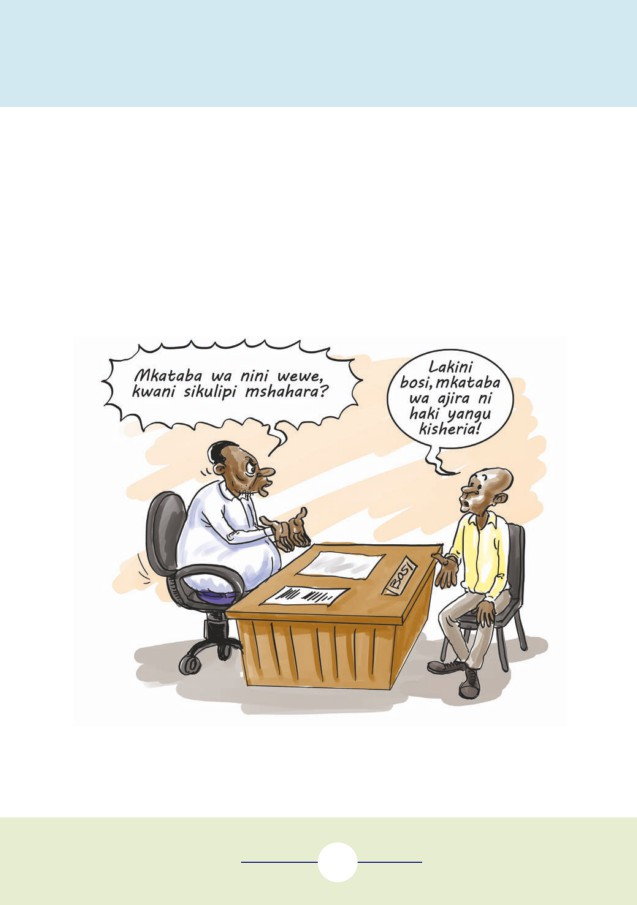
h.
Ujira, mahesabu ya ujira huo na maelezo kuhusu malipo mengine,
i.
Maelezo kuhusu likizo,
j.
Jambo lingine lolote ambalo kisheria lazima litolewe maelezo.
Angalizo: Mabadiliko yoyote ya maelezo ya ajira ni lazima yafanyike baada ya mwajiri
kushauriana na mfanyakazi na kumpa taarifa ya mabadiliko hayo kwa maandishi
Aina za Mikataba ya Ajira
Sheria ya Ajira na Uhusiano Kazini imeigawa mikataba ya ajira katika aina kuu tatu
ambazo ni;
a.
Mikataba isiyokuwa na muda maalum
b.
Mkataba wa muda maalum
c.
Mkataba wa kazi maalum
Mikataba Isiyokuwa na Muda Maalum
Mkataba usiokuwa na muda maalum ni mkataba ambao ukomo wa ajira haujatajwa
waziwazi. Chini ya mkataba huu mfanyakazi anaweza kuendelea na kazi mpaka kufikia
umri wa kustaafu endapo haitatokea sababu yoyote ya kusitisha ajira kabla ya umri huo
wa kustaafu.
104
Mkataba wa Muda Maalum
Mkataba wa Muda Maalum ni mkataba ambao kipindi cha ajira kimewekwa wazi na
tarehe ya ukomo wa ajira ipo wazi na inajulikana. Hata hivyo Sheria imeeleza wazi kuwa
aina hii ya mkataba itahusu
waledi na wafanyakazi wa kada ya uongozi.
Mkataba wa Kazi Maalum
Mkataba wa Kazi Maalum ni aina nyingine ya mkataba wa muda maalum ambao
hutegemea kumalizika kwa kazi na malipo hufanyika kwa siku au baada ya kumalizika
kwa kazi husika.
Angalizo: Uhalali wa mkataba ni lazima ujengwe katika nguzo kuu tano ambazo ni
makubaliano, hiari ya kuingia mkataba, malipo halali, uwezo wa kuingia mkataba pamoja
na uhalali wa shughuli yenyewe itakayofanyika..
Taratibu za Kuvunja Mkataba wa Ajira
Mkataba wa ajira, kama ilivyo mikataba mingine inayotambulika kisheria, inaweza
kusitishwa kwa namna mbalimbali. Njia ambazo mwajiri anaweza kuzitumia kusitisha
mkataba na mwajiriwa ni pamoja na:-
i.
Kumwachisha kazi mwajiriwa kwa kumpa taarifa (notisi).
ii.
Mwajiriwa kuamua kuacha kazi kwa kutoa taarifa.
iii.
Kustaafu.
iv.
Kifo/Ugonjwa.
v.
Kampuni/ mwajiri kufilisika.
vi.
Kuachishwa kazi kutokana na utovu wa nidhamu kazini.
vii.
Kupunguzwa kazini.
3.
Haki ya Muda Stahili wa kufanya kazi
Katika kulinda ustawi wa wafanyakazi kimwili, kijamii na kisaikolojia, imewekwa dhana
ya kazi zenye staha inayohusu kiwango cha mwisho cha mgawanyo wa saa za kazi.
Kiashiria cha kazi zenye staha kimefafanuliwa kwa kutumia uwiano saa 48 katika wiki
kama kiwango juu zaidi cha kufanya kazi kilichopendekezwa katika Mikataba ya Shirika
la Kazi Duniani.
Tanzania kupitia sheria ya Ajira na Mahusiano ya Kazi ya Mwaka 2004 imeweka kiwango
cha juu cha kufanya kazi kama ifuatavyo;
i.
Siku 6 kwa wiki.
ii.
Saa 45 kwa wiki.
iii.
Saa 9 kwa siku.
Sheria haimruhusu mwajiriwa kufanyakazi muda wa ziada labda tu kama imeelezwa
bayana kwenye mkataba wa ajira. Hata hivyo, saa hizo zisizidi masaa hamsini (50) katika
mzunguko wa wiki nne. Mwajiri atapaswa kumlipa mfanyakazi saa za ziada (overtime)
alizofanya kazi kwa malipo ambayo si chini ya moja na nusu (1½) ya mshahara mmoja wa
mwajiriwa kwa kila saa ya ziada.
Ni muhimu kwa Wasaidizi wa Kisheria kufahamu vikwazo katika kufikia masaa ya kazi
105
yenye staha kama ilivyoainishwa kwenye sheria. Utafiti wa Taasisi ya Taifa ya Takwimu
(2006) unaonyesha kuwa wastani wa masaa ya kazi kwa wiki ni asilimia 59.9 kwa
wanaume na 48.9 kwa wanawake huku wafanyakazi katika maeneo ya mijini wakiwa na
wastani wa masaa 62.2 kwa wiki.
Wastani unaonekana upo chini kwa wanawake ukilinganishwa na wanaume lakini
jambo la muhimu kuelewa kwa Wasaidizi wa Kisheria na jamii kwa ujumla ni kuwa
pia wanawake wanabeba kazi nyingine nyingi za kifamilia kabla na baada ya masaa ya
kazi walipoajiriwa. Mshikamano wa kazi za ulezi na kazi za kulipwa kwa wanawake ni
tatizo kwa sababu majukumu haya hayahesabiwi kama shughuli za kiuchumi na hivyo
hayajumuishwi katika upimaji wa masaa ya kazi. Hivyo wastani wao wa masaa ya kazi
kwa wiki pengine upo juu sana. Kwa mtizamo huu basi ni rahisi sana kwa wanawake
kujikuta katika masaa mengi ya kazi yasiyo na staha na hivyo kuathiri ustawi wao kimwili,
kisaikolojia na kijamii.
Pia matumizi ya masaa ya kazi ni vigumu kupima kwa maeneo ya vijijini kwa sababu kazi
kubwa ni kilimo ambayo kwa kiasi kikubwa haijarasimishwa na inategemea sana msimu.
Wasaidizi wa Kisheria wanapaswa kusisitiza wananchi kulipwa ujira kulingana na
uzalishaji na masaa ya kazi. Kama itatokeo basi wafanyakazi wanaenda masaa ya ziada
tofauti na ilivyoainishwa kwenye sheria basi wanastahili kulipwa ujira.
4.
Haki ya Likizo
Likizo ni sehemu muhimu katika kupima staha katika kazi kwa kuonyesha uwiano
ambao wafanyakazi wanaweka kati ya kazi zao na maisha binafsi. Sheria ya Ajira na
Mahusiano ya Kazi 2004, na Sheria ya Taasisi za Kazi 2004 zinazingatia mwingiliano wa
kazi, familia na maisha binafsi kwa kupitia likizo mbalimbali kama vile likizo ya mwaka,
likizo ya ugonjwa, likizo ya uzazi, na likizo ya ulezi.
i.
Likizo ya mwaka
Mwajiri hana budi kumpa mfanyakazi likizo ya siku 28 kwa mwaka yenye malipo. Katika
kipindi hiki cha likizo, siku zote zitahesabiwa zikiwemo zile za mapumziko ya wiki na
sikukuu. Mfanyakazi anayestahili likizo ni yule aliyefanya kazi kwa muda wa mwaka
mmoja.
Kwa mwajiriwa wa msimu, ikiwa amefanya kazi kwa mwajiri huyo huyo kwa zaidi
ya mara moja kwa mwaka na ikiwa vipindi hivyo alivyofanya kazi vinazidi miezi 6 na
kuendelea katika mwaka huo, basi anastahili likizo yenye malipo.
ii.
Likizo ya ugonjwa
Mfanyakazi anastahili likizo ya ugonjwa ya siku 126. Likizo hii imegawanyika katika
mafungu mawili;
a.
Siku 63 za kwanza za likizo ya ugonjwa zitakuwa na malipo kamili ya mshahara.
b.
Siku 63 za pili za likizo ya ugonjwa zitakuwa na malipo ya nusu mshahara.
Hata hivyo, mwajiri hatapaswa kumlipa mfanyakazi likizo ya ugonjwa endapo
mfanyakazi huyo atashindwa kutoa cheti cha daktari kuthibitisha ugonjwa wake.
106
iii.
Likizo ya uzazi
Mfanyakazi anastahili likizo ya uzazi kama ifuatavyo:-
a.
Siku 84 za likizo ya uzazi yenye malipo iwapo amejifungua mtoto mmoja.
b.
Siku 100 za likizo ya uzazi yenye malipo iwapo amejifungua watoto mapacha.
c.
Siku 84 za ziada za likizo ya uzazi yenye malipo ndani ya mzunguko wa likizo yake,
iwapo mtoto wake atafariki ndani ya mwaka mmoja wa kuzaliwa na mwajiriwa
huyo akapata ujauzito na kujifungua kabla ya miezi thelathini na sita.
d.
Ikiwa mfanyakazi ni mwanaume na mke wake amejifungua mtoto basi mfanyakazi
huyo mwanaume anayo haki ya kupata likizo ya siku 3. Likizo hii inapaswa
ichukuliwe ndani ya siku 7 tangu mtoto kuzaliwa.
Hakuna mfanyakazi aliyejifungua atakaefanya kazi ndani ya wiki 6 tangu ajifungue
isipokuwa kwa ruhusa ya daktari.
Jambo la muhimu kuzingatia ni kuwa mafao ya uzazi pengine yanatekelezwa vizuri
na sekta rasmi. Hata hivyo ni muhimu kwa wasaidizi wa kisheria kutambua kuwa ni
wanawake wachache tu waliojariwa katika sekta rasmi huku wengi wakiwa bado wapo
katika sekta isiyo rasmi ambapo ulinzi wa Sheria ya Kazi na Mahusiano Kazini hauwafikii.
5.
Haki ya Kujiunga na Vyama vya Wafanyakazi
Jinsi ya Kuendesha
1.
Mwezeshaji wagawe washiriki katika makundi matatu na wajadili yafuatayo,
a.
Zipi ni faida za kujiunga na vyama vya wafanyakazi?
b.
Kwanini ni muhimu kwa wanawake kujiunga na vyama vya wafanyakazi?
c.
Zipi ni taratibu za kujiunga na vyama vya wafanyakazi katika sekta unayofanyia
kazi?
d.
Taja vyama vya wafanyakazi unavyovifahamu
e.
Yapi ni majukumu ya vyama vya wafanyakazi?
Baada ya kumaliza majadiliano washiriki wafanye uwasilishaji na mwezeshaji afuatilie
kwa makini uwasilishaji huo ili apate fursa ya kufafanua baada ya zoezi la uwasilishaji
kumalizika.
Au,
2.
Mwezeshaji wagawe washiriki katika makundi matatu na wafanye yafuatayo;
a.
Wajadiliane namna gani wasaidizi wa kisheria wanavyoweza kusaidia utetezi wa
haki za wafanyakazi majumbani, mashambani, migodini na mahotelini
b.
Kwa namna gani watashirikisha serikali za mtaa/kijiji katika mchakato huo?
Au,
3.
Mwezeshaji aandae safari ya washiriki kutembelea chama cha wafanyakazi kujifunza
jinsi wanavyoendesha shughuli zao.
107
Mchango wa Mwezeshaji
Mwezeshaji fafanua kuwa vyama vya Wafanyakazi ni taasisi zinazoanzishwa kisheria na
wafanyakazi ili kuwaunganisha waweze kutetea haki zao na maslahi yao kazini kwa sauti
moja. Pamoja na mafao bora kulingana na uzalishaji wao kazini, maslahi ya wafanyakazi
yanajumuisha pia mazingira bora na yenye staha ya kufanyia kazi.
Sheria ya Ajira na Mahusiano ya Kazi ya mwaka 2004, na Sheria ya Taasisi za Kazi 2004
zinatoa haki kwa wafanyakazi wote kuanzisha na kujiunga na vyama vya wafanyakazi
na kwa waajiri kuunda vyama vya waajiri. Kushiriki katika shughuli halali za vyama
vyao, sheria inatoa haki ya vyama kuwa na kuandaa katiba na kanuni, kuwa na uongozi,
kushiriki katika shughuli tofauti na kubuni programu, kuingia na kufanya shughuli zao
mahali pa kazi, kukata michango ya vyama vya wafanyakazi. Pia inatoa sharti kwa vyama
vya wafanyakazi,vyama vya waajiri na mashirikisho ya vyama hivyo kuwa visajiliwe ndani
ya miezi sita.
Majukumu ya vyama vya wafanyakazi ni;
i.
Kutetea haki na maslahi ya wafanyakazi wote bila kuwabagua kwa misingi ya
kijinsia, rangi, imani, itikadi, hadhi n.k
ii.
Kuelimisha wafanyakazi kuhusu haki zao
iii.
Kuwakilisha wanachama katika ngazi zote za kitaifa na za kimataifa
iv.
Kushughulikia utatuzi wa migogoro ya kikazi
v.
Kutetea upatikanaji wa hali bora za kazi.
Faida za Kujiunga na Vyama vya Wafanyakazi
i.
Uwakilishi pindi unapotokea mgogoro wa kimaslahi kazini baina ya mwajiri na
mwajiriwa
ii.
Kutetea haki za mfanyakazi zisipindishwe na mwajiri mfano haki ya likizo,mafao
bora n.k
iii.
Kwa niaba ya wafanyakazi, kuhamasisha waajiri kuweka mazingira bora, salama na
yenye staha kazini
iv.
Kuwaelimisha wanachama wao juu ya haki zao za kazi, na namna bora ya kuzidai
haki hizo
Historia ya Shirikisho la Vyama vya Wafanyakazi ( TFL, NUTA, JUWATA na OTTU)
-
TFL (Tanzania Federation of Labour) - ilianzishwa mwaka 1964 kama shirikisho
la vyama vingine vidogo vidogo
-
NUTA (National Union of Tanganyika Workers) - ilianzishwa sambamba na
TANU. Mwaka 1979 ilibdilishwa kuwa JUWATA ( Jumuiya ya Wafanyakazi
Tanzania) baada ya kuundwa kwa CCM.
-
JUWATA ilibadilishwa kuwa OTTU (Organization of Tanzania Trade Unions)
mwaka 1992 na kuandikishwa kama chama huru cha Wafanyakazi chini ya vyama
vingi.
-
TUCTA (Trade Union Congress of Tanzania) iliundwa mwaka 2000 kama
shirikisho huru la vyama wafanyakazi chini ya sheria ya Vyama vya Wafanyakazi
ya mwaka 1998. Vyama vishiriki vya Shirikisho la Chama cha Wafanyakazi
108
(TUCTA) ni:
i.
RAAWU: Chama cha Watafiti na wataalamu wafanyakazi mbalimbali.
ii.
CWT: Chama cha Walimu Tanzania
iii.
CHODAWU: Chama cha Mahoteli, wafanyakazi majumbani na kwingineko
iv.
TRAWU: Chama cha Wafanyakazi wa Reli na Kilimo.
v.
TUICO: Chama cha Wafanyakazi wa Viwanda na taasisi za fedha
vi.
TPAWU: Chama cha Wafanyakazi Mashambani
vii.
COTWU: Chama cha Wafanyakazi katika Mawasiliano na Uchukuzi
viii.
TUGHE: Chama cha Wafanyakazi wa Serikali kuu
ix.
JT: Chama cha Waandishi wa Habari
x.
TALGWU: Chama cha Wafanyakazi wa Serikali za mitaa
xi.
TASU: Chama Wafanyakazi wa Ubaharia
xii.
TAMICO: Chama cha Wafanyakazi wa Madini, Migodi na Ujenzi
Angalizo: Ufanisi wa Sheria na kanuni kuhusu haki ya uwakilishi wa wafanyakazi
inaangaliwa zaidi katika sekta rasmi. Hata hivyo Tanzania ina idadi kubwa ya nguvu kazi
katika sekta isiyo rasmi kama kilimo na biashara ndogo na za kati. Hivyo Wasaidizi wa
Kisheria wanaweza kuwa chachu ya uundwaji wa vyama vya wafanyakazi katika sekta
isiyo rasmi.
Changamoto nyingine inatokana na ukweli kwamba idadi kubwa ya wafanyakazi hata
katika sekta rasmi aidha hawana haki ya kutosha ya kuanzisha au uelewa kuhusu vyama
vya wafanyakazi. Takwimu za Ofisi ya Taifa ya Takwimu zinaonesha kuwa idadi ya
Wanachama wa vyama vya wafanyakazi vilivyojiunga na TUCTA mpaka mwaka 2008
ni 403,838 ambayo ni asilimia 20.2 tu ya idadi ya wafanyakazi wa kulipwa kwa mwaka
2008. Asilimia hizi zimekuwa zikishuka mwaka hadi mwaka kutoka asilimia 26.6 mwaka
2001.
Hivyo ni jukumu la wasaidizi wa kisheria kuelimisha wafanyakazi katika sekta rasmi na
zisizo rasmi umuhimu kujiunga na vyama vya wafanyakazi na jinsi ya kuunda vyama vya
wafanyakazi mahali pa kazi.
6.
Haki ya Fursa Sawa Katika Ajira
Sera ya taifa ya Ajira ya mwaka 2008 imeweka masharti ya kutenda haki na usawa
kwa wanaume na wanawake kwa kutambua kuwa wanawake wananyimwa haki katika
ulimwengu wa kazi kwa sababu ya nafasi mbalimbali walizonazo kama wazalishaji,
warudifishaji na watoa huduma kwa familia.
Sheria inaharamisha ubaguzi wa aina yoyote kwenye masuala ya ajira na mahali pa kazi,
ikiwemo ubaguzi wa moja kwa moja na ule usio wa moja kwa moja kwa mfano, ubaguzi
wa rangi, kabila, dini, kisiasa, jinsi, jinsia, ubaguzi kutokana na ujauzito, hali ya ulemavu,
umri na ubaguzi kutokana na hali ya kimaisha aliyonayo mtu.
109
Fursa sawa katika Ajira kwa Wanawake
Jinsi ya Kuendesha
1.
Mwezeshaji jadili pamoja na washiriki na uwaelekeze wafikiri na kutoa majibu kwa
mifano ni sababu zipi zinafanya wanawake kukosa fursa sawa na wanaume katika
ajira na shuguli rasmi za kiuchumi
2.
Washiriki pia wafikirie na kueleza ni aina zipi za kazi katika jamii yao ambazo
wanawake wamekuwa wakizifanya zaidi? (mfano kilimo, uvuvi, kazi za nyumbani
n.k.
3.
Je washiriki wanadhani ni sahihi kwa wanawake kukosa fursa sawa na wanaume
kwenye mfumo wa ajira rasmi na isiyo rasmi?
Mwezeshaji andika majibu ya washiriki kwenye bango kitita au ubaoni na utoe ufafanuzi
baada ya kumaliza majadiliano
Mchango wa Mwezeshaji
Mwezeshaji eleza kuwa tafiti za Taasisi ya Taifa ya Takwimu (2006) zimeainisha maaeneo
kadhaa ambayo yanaashiria ukosekanaji wa fursa sawa kwa wanawake ukilinganisha na
wanaume katika ajira. Wanaume wamekuwa wengi zaidi katika makundi fulani ya kazi
kuliko wanawake. Takwimu za 2006 zinaonyesha:
i.
Wanawake wamekuwa wengi katika kazi za ukarani na kilimo ambazo malipo
yake ni madogo, hadhi ya chini na fursa ndogo za maendeleo ikilinganishwa na
makundi mengine ya ajira. Kwa mwaka 2006 kwa mfano asimilia 50.7 ya wanawake
waliajiriwa katika nafasi ya ukarani na asilimia 53.8 katika kilimo ukilinganisha na
asilimia 49.3 ya wanaume katika ukarani na asilimia 46.2 katika kilimo.
ii.
Kazi ya kuuza maduka, utoaji huduma na biashara ndogondogo pia imechukua
nafasi kubwa katika ajira za wanawake ambayo ni asilimia 47.7 huku wanaume
wakiwa katika asilimia 52.3.
iii.
Hali ni tofauti kwa upande wa wakurugenzi wa makampuni na mameneja wa
mashirika na nafasi za utawala kwa ujumla wake ambapo wanaume wamechukua
asilimia 84 na wanawake asilimia 16 kwa mwaka 2006.
iv.
Kazi za Taaluma kama udaktari, uhandisi, n.k. pia hazina uwakilishi mzuri wa
wanawake ambapo wapo asilimia 35 tu ukilinganisha na wanaume asilimia 65.
v.
Ushiriki wa wanawake katika viwanda pia umeendelea kuwa mdogo kutokana na
mawazo potofu kutokana kwamba kazi hizi ni za kiume. Wanawake mafundi stadi
ni asilimia 23 tu wakati waendesha mitambo na mashine za viwandani ni asilimia
12.9 tu. Hapa kuna utofauti mkubwa zaidi katika fursa za ajira na ubaguzi wa wazi
kwa wanawake.
vi.
Utafiti wa NBS pia ulidhihirisha kuwa mishahara ya wanawake kwa mwaka 2006
ilikuwa asilimia 40 pungufu ya mishahara ya wanaume.
vii.
Vivyo hivyo, idadi ya wanawake imebaki kuwa ndogo katika ajira za kulipwa ikiwa
ni asilimia 29.5 tu.
110
Kwa takwimu hizi ni wazi kuwa soko la ajira la Tanzania halitoi fursa za kutosha kwa
wanawake hasa katika sekta rasmi, nafasi za uongozi, na malipo mazuri ukilinganisha
na wanaume. Ubaguzi wa kijinsia upo wazi na unawaathiri wanawake zaidi. Hata hivyo,
ni muhimu kuzingatia kwamba Tanzania imepiga hatua kwa kuwa na sera na sheria
inayopinga ubaguzi na fursa sawa katika ajira. Hivyo ni wajibu wa Wasaidizi wa Kisheria
kutumia ulinzi wa sheria katika kupanua fursa za wanawake katika ajira na kuelimisha
jamii juu ya haki hizi za msingi kwa wanawake.
7.
Haki ya Afya na Usalama Kazini
Jinsi ya Kuendesha
Mwezeshaji kwa kutumia mbinu ya bango kitita, jadiliana na washiriki masuala yafuatayo;
1.
Je mazingira duni ya kazi ni yapi?
2.
Je ni athari gani zinaletwa na mazingira duni ya kazi katika sekta mbalimbali za ajira
amabako wanajamii wanazitumia kujipatia kipato?
3.
Je mazingira salama ya kazi ni yapi?
4.
Je kuna manufaa gani kufanya kazi katika mazingira salama?
5.
Je ni mazingira gani unafikiri yanawakibili wanawake ambayo yanaathiri afya na
ufanisi wao katika kazi?
Mchango wa Mwezeshaji
Mwezeshaji fafanua kuwa usalama kazini ni hali ya mfanyakazi kutoumia, kutojeruhiwa
na kutopata ulemavu, kifo, ajali, magonjwa au athari yeyote ile ya kiafya na kiakili
kutokana na kazi au mazingira anayofanyia kazi.
Tanzania imeridhia Mkataba wa Ukaguzi Kazini wa Shirika la Kazi Duniani wa mwaka
1947. Mfumo wa sheria uliopo Tanzania unaundwa na;
i.
Sheria ya Afya na Usalama Kazini ya mwaka 2003
ii.
Sheria ya Fidia kwa Wafanyakazi ya mwaka 2008.
iii.
Sheria ya Viwanda
Sheria hizi zinasisitiza mambo yafuatayo;
➣ Ukaguzi wa Afya za Wafanyakazi na utoaji wa huduma ya afya sehemu za kazi
➣ Uwekaji wa mazingira safi na salama kazini;
➣ Ukaguzi wa mitambo, mashine na vitendea kazi;
➣ Upatikanaji wa vifaa vya kinga na uwajibikaji katika masuala ya usalama kwa kila
mwajiri na mwajiriwa;
➣ Elimu kwa wafanyakazi juu ya afya na usalama kazini;
➣ Usimamizi mzuri wa mwajiri katika masuala ya afya na usalama kazini
➣ Ushirikishwaji wa mfanyakazi katika masuala ya afya na usalama kazini.
Mazingira ya Kazi za Wanawake
i.
Shughuli nyingi hufanyika nje kwenye uwazi hivyo wanawake huathirika kwa njia
mbalimbali kiafya kutokana na jua kali, mvua, baridi, hewa mbaya, vumbi na
mazingira yasiyo salama.
ii.
Kazi nyingi za wanawake ni za msimu, huchukua muda mrefu, na pia ni ngumu
111
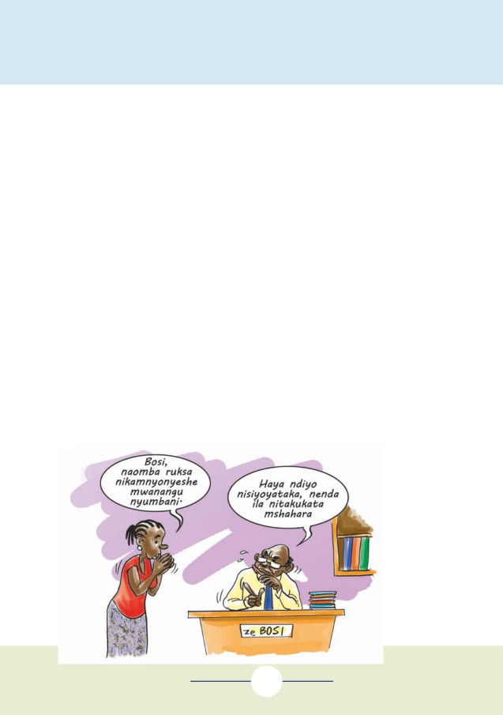
hivyo kuathiri viwango vya uzalishaji vya wanawake na aghalabu hata afya yake ya
uzazi na mpangilio wote kwa ujumla.
iii.
Wanawake wengi hufanya kazi zile zisizohitaji ujuzi, zinazochosha na kuleta
bugudha za kimwili na za kisaikolojia hasa kwa vile ni za marudio na kwa muda
mrefu.
iv.
Shughuli nyingi zipo mbali na makazi, katika mazingira magumu, bila maji ya
kunywa na kunawa, chakula vyoo au mahali pa kupumzika.
v.
Wanawake wengi huenda na watoto wao kazini na kuwafanya waathirike na
mazingira mabaya ya kazi kuanzia utotoni, kukosa haki za elimu. Matokeo ya
watoto hao ni kujiingiza katika ajira za watoto kwani wanaanza kuzoea kazi
wafanyazo mama zao.
vi.
Katika mazingira ya kazi za mama lishe wateja hupata mfadhaiko kutokana na
mazingira mabaya.
vii.
Katika mazingira ya kazi za wanawake kama mama lishe, kuuza pombe au upasuaji
wa kokoto, wanawake hubugudhiwa na wateja wakorofi na hali ya usalama
mara nyingi huwa ndogo sana. Wanawake wafanyao kazi katika mazingira haya
hudhulumiwa na kujeruhiwa mara kwa mara.
viii.
Kwa sababu sekta wafanyayo kazi wanawake si rasmi, fursa ya kupata mafunzo ya
kuongeza ujuzi wao wa uzalishaji, kupanua biashara na masoko ni ndogo sana.
ix.
Tozo kubwa ya kodi na ushuru ikiambatana na elimu ndogo ya kodi na ushuru ni
moja ya vizingiti vinavyowakabili wanawake katika mazingira yao ya kazi.
Kufanya kazi katika mazingira salama kuna manufaa mengi mfano kuongezeka kwa
uzalishaji na mapato; kuepuka ajali, magonjwa na migogoro ya kikazi. Ufanisi wa kazi
unaongezeka kutokana na wafanyakazi wenye nguvu na mwajiri kupata faida zaidi na
maendeleo kuwepo na ushirikiano mzuri kazini kati ya mwajiri na wafanyakazi.
112
Baadhi ya Athari za Kiafya Zitokanazo na Mazingira Duni ya Kazi (Hususan Kilimo,
Migodini na Majumbani)
➣ Ajali, majeraha, ulemavu au vifo vitokanavyo na vifaa hatari viwandani kama vile
mashine, magari, matrekta na mitambo mbalimbali.
➣ Magonjwa ya ngozi na mengine sugu yanayosababishwa na sumu za wanyama,
wadudu na mimea hasa kwa akina mama wafanyao kazi katika mashamba bila
vifaa vya kinga.
➣ Saratani inayosababishwa na kemikali na madawa yenye sumu kali ambayo
hutumika bila maelekezo sahihi kama vile Zebaki, Asbestos, Risasi na DDT.
Haki ya Hifadhi ya Jamii
Jinsi ya Kuendesha
1.
Mwezeshaji andika neno hifadhi ya jamii katika bango kitita
2.
Wagawe washiriki kwenye makundi matatu wajibu maswali yafuatayo;
a.
Taja mfuko wowote wa hifadhi ya jamii unaoufahamu
b.
Je, kuna faida zipi za kujiunga na mifuko ya hifadhi ya jamii?
c.
Je, katika mila na desturi zenu, kuna mfumo wa hifadhi ya jamii, kama ndiyo,
mfumo huo unawalinda vipi wanajamii?
d.
Je, wale wasiokuwa na ajira rasmi (mfano mama lishe, wafanyakazi vituo vya
mafuta ya petroli, wauzaji masokoni, wakulima n.k) wanaweza kujiunga na
mifuko ya hifadhi ya jamii?
e.
Je nini wajibu wa wasaidizi wa kisheria katika kuhamasisha wafanyakazi
kwenye sekta isyo rasmi kujiunga na mifuko ya hifadhi ya jamii?
Mchango wa Mwezeshaji
Hifadhi ya jamii ni utaratibu uliowekwa na jamii kujikinga na majanga ambayo
husababishwa na mazingira, njaa, ukame, maumbile, uzee, kazi, umri, ulemavu, maafa,
kutojiweza na mafuriko. Hifadhi ya jamii hudumisha utaratibu na mipango mizuri ya
kuendeleza jamii katika kusaidiana kwenye shughuli zao kwa mfano kilimo, ujenzi wa
barabara, ujenzi wa nyumba, mazishi, kuuguza au kitu kingine chochote kile kinachotaka
nguvu za pamoja kwa kuunganisha rasilimali fedha na watu.
Hifadhi ya jamii zipo katika aina mbili kuu;
i.
Hifadhi ya Jamii katika sekta iliyo rasmi
ii.
Hifadhi ya Jamii katika sekta isiyo rasmi
Hifadhi ya Jamii Katika Sekta Rasmi
Hifadhi ya Jamii katika sekta iliyo rasmi inalenga mtu aliyeajiriwa; ina masharti maalum
ya kufuatwa na mwanachama; ina mfumo wa ulipaji na kipindi cha kulipa; ina mikataba
ya maandishi na inalenga zaidi kumsaidia mwanachama pale anapokuwa hawezi kuingiza
kipato tena aidha kwa sababu ya ugonjwa, uzee au kustaafu. Mashirika yahifadhi ya jamii
ni mfano wa hifadhi ya jamii iliyo katika sekta rasmi.
113
Tanzania (bara) ina mashirika kadhaa ya hifadhi ya jamii ambayo ni:
➣ Mfuko wa Taifa wa Hifadhi ya Jamii (NSSF)
➣ Mfuko wa Pensheni wa Mashirika ya Umma (PPF)
➣ Mfuko wa Pensheni kwa Watumishi wa Umma (PSPF)
➣ Mfuko wa Pensheni wa Watumishi wa Serikali (GEPF)
➣ Mfuko wa Pensheni wa Serikali za Mitaa (LAPF)
➣ Mfuko wa Taifa wa Bima ya Afya (NHIF)
Sheria ya Hifadhi ya Jamii (Mamlaka ya Udhibiti) ya mwaka 2008 ni sheria inayotawala
na kupitia kanuni mbalimbali kutoa viwango vya mafao.
Mifuko iliyopo ya hifadhi ya jamii inatoa mafao mbalimbali ambayo ni ya muda mfupi
na ya muda mrefu.
Mafao ya muda mfupi ni;
➣ Huduma ya afya
➣ Mafao ya uzazi
➣ Malipo ya kuumia na mazishi
➣ Mafao ya kutokuwa na ajira
Mafao ya muda mrefu ni;
➣ Pensheni baada ya kustaafu
➣ Pensheni kwa waliofiwa na mtu anayeleta kipato katika familia
➣ Pensheni kutokana na kupata ulemavu
Uchangiaji katika mifuko ya hifadhi ya jamii kwa wanachama katika mfumo
rasmi hufanywa na mwajiri na mwajiriwa kulingana na sheria. Mfano wa viwango
vinavyokubalika ni;
➣ Wafanyakazi kuchangia asilimia 10 ya mshahahara na mwajiri kuchangia asilimia
10
➣ Wafanyakazi kuchangia asilimia 5 ya mshahara na mwajiri kuchangia asilimia 15
➣ Mwajiri kuchangia asilimia 20 ya mshahara na mfanyakazi kutochangia kabisa
Mifumo rasmi ya hifadhi ya Jamii ina mapungufu yafuatayo;
i.
Wanachama kutokuwa na kauli ya michango yao
ii.
Uwakilishi mdogo wa wanachama katika ngazi ya maamuzi
iii.
Kukosekana kwa kinga kwa wanachama dhidi ya kushuka kwa thamani ya fedha
iv.
Usumbufu mkubwa katika kulipa mafao ambayo huwa madogo ukilinganisha na
mahitaji ya mwanachama katika kujikimu na kuishi kwa staha;
v.
Mifumo hii inatawaliwa na kanuni za kimagharibi zaidi kuliko kuangalia hali
halisi na mahitaji ya Mtanzania.
vi.
Kutokuwepo kwa haki ya kuzishtaki taasisi/mifuko kwa mwanachama.
Licha ya mapungufu yaliyotajwa hapo juu, mifuko hii ya hifadhi ya jamii imeendelea
kuwa ni chachu ya kujenga mazingira ya staha kwa wafanyakazi kwenye sekta rasmi.
Hata hivyo changamoto kubwa ni idadi ya watu wanaofikiwa na mifumo rasmi ya hifadhi
ya jamii ni ndogo sana. Utafiti wa nguvukazi ya pamoja wa mwaka 2006 unaonesha watu
675,200 walikuwa wanahudumiwa na moja ya mashirika ya hifadhi ya jamii ambayo ni
asilimia 3.6 tu ya idadi ya watu wote Tanzania Bara wenye uwezo wa kufanya kazi ya
114
kuzalisha. Hali ni mbaya zaidi kwa wanawake ambapo ni asilimia 2.0 tu ya wanawake
wenye uwezo wa kufanya kazi ndio wanafikiwa huduma ya hifadhi ya jamii.
Hifadhi ya Jamii Katika Sekta Isiyo Rasmi
Hifadhi ya jamii isiyo rasmi ni ile inayotumika katika sekta isiyo rasmi na haitawaliwi na
kanuni au mwongozo wa serikali au shirika.
Hifadhi hii imejengwa katika misingi ya kuaminiana na kushirikiana, kukubaliana kwa
malengo maalum katika jamii husika au kikundi. Hifadhi isiyo rasmi inatofautiana
kutoka jamii moja hadi nyingine au rika moja hadi rika jingine.
Hifadhi hii inalenga kutatua tatizo mara moja kwa mtu aliyepatwa na janga kama vile
kuugua kwa muda mrefu, njaa, kufiwa, kuunguliwa na nyumba, uzee, mafuriko, ulemavu
n.k. Vilevile hifadhi ya jamii katika mfumo usio rasmi haitawaliwi na misingi ya kirasimu
au kanuni za jamii za magharibi.
Aina za mifumo ya hifadhi ya jamii isiyo rasmi ni:
i.
Kufa na kuzikana
ii.
Upatu
iii.
Vyama vya Maendeleo
iv.
Ujirani mwema
v.
Kusaidiana kutokana na kazi mbalimbali
vi.
Kuweka na kukopa
vii.
Kiwili
Namna ya kuanzisha hifadhi ya jamii isiyo rasmi miongoni mwa akina mama katika
mifumo isiyo rasmi:
i.
Kuangalia janga linalotakiwa kukabiliwa mfano: matibabu, kuzikana, au pia kupata
mitaji ya uzalishaji.
ii.
Akina mama wanaweza kukaa au kukubaliana kuchanga fedha ziwe zinazunguka
katika kuboresha shughuli zao za kiuchumi au kukabili janga la ugonjwa kwa
mfano huduma ya afya kwa mama mjamzito.
iii.
Kutengeneza katiba ya namna ya kuongoza na kudhibiti mfumo huo;
iv.
Kutengeneza sheria ndogondogo za kufuata kwa lengo la kuimarisha mfuko ili
kutambua wachangiaji na nani anayestahili kupata na wakati gani;
v.
Kufungua akiba benki na kuweka usimamizi kwa lengo la kuongoza uwekaji,
utoaji, na usalama wa fedha za wanachama.
Mfumo wa hifadhi ya jamii katika sekta isiyo rasmi una changamoto zifuatazo;
i.
Kutokuwepo na mtaji unaoaminika;
ii.
Kutokuwa na wataalamu wa kutosha kuelezea mfumo huu kwa jamii;
iii.
Kutokuwa na misingi mizuri ya sheria inayoongoza mfumo huo;
iv.
Kukosa mipango endelevu.
8.
Haki ya Ushirikishwaji Mahali pa Kazi
Sera ya Ushirikishwaji inagusa vyombo vyote muhimu katika kulinda haki na maslahi ya
wafanyakazi. Vyombo vikuu vitatu ni;
i.
Serikali: ni chombo cha usimamizi wa haki, sheria na usawa mahali pa kazi.
115
ii.
Waajiri: Ni watekelezaji wakuu wa haki, sheria na usawa mahali pa kazi.
iii.
Wawakilishi wa Wafanyakazi: ni watetezi na wahamasishaji wa haki, sheria na
usawa mahali pa kazi.
Matokeo ya Kutoshirikishwa kwa Wafanyakazi ni;
➣ Usiri unaochangia wafanyakazi kutokujua kinachoendelea katika mazingira ya
kazi hasa mipango, maamuzi na utekelezaji wake
➣ Uwezo mdogo wa watendaji au wawakilishi wa wafanyakazi katika kufikiria
namna ya kutenda bila kuleta upinzani katika sehemu za kazi
➣ Kutokuaminiana kati ya utawala na wafanyakazi
➣ Kutoelimishwa au kujua haki na wajibu wa mfanyakazi
➣ Kutokuwapo na Mikataba ya Kazi
➣ Kutothamini masuala ya kijinsia na haki wanawake mahali pa kazi.
Faida ya Ushirikishwaji wa Wanawake Mahali pa Kazi
➣ Kuwezesha mawazo ya wanawake kujumuisha misingi ya kufikia maamuzi pale
wanapofanya kazi
➣ Kupiga vita imani zisizo sahihi zinazokandamiza wanawake
➣ Kujenga mazingira mazuri ya kuongeza ushiriki wa wanawake katika masuala ya
vyama vya wafanyakazi
➣ Kubadilisha mwelekeo wa jamii kuhusu ajira za wanawake
➣ Kubainisha matatizo yanayohusu wanawake kwa uhalisi zaidi na kuchanganua
masuala ya kijinsia kwa undani zaidi
➣ Mbinu/mikakati mbadala ya kutatua matatizo ya wanawake na jamii nzima kwa
ujumla
➣ Kutekeleza kwa uhakika maamuzi yaliyopitishwa, na
➣ Kuongeza tija na kipato kwa kupunguza migogoro na kujenga mazingira bora ya
kazi.
Wajibu wa Kudhibiti Ajira zaWatoto
Jinsi ya Kuendesha
Mwezeshaji wagawe washiriki katika makundi matatu na wajadili yafuatayo;
i.
Mtoto ni nani?
ii.
Nini maana ya ajira ya mtoto?
iii.
Kuna tofauti gani kati ya ajira ya mtoto na kazi za mtoto?
iv.
Taja aina mbalimbali za ajira ya mtoto zilizokithiri katika jamii yako.
v.
Je ni athari gani ambazo watoto wanapata kutokana na ajira hizo?
vi.
Nini kinasababisha ajira kwa watoto?
vii.
Ni mikakati gani ambayo inaweza kupunguza na hatimaye kutokomeza kabisa ajira
ya watoto katika jamii yako?
Mchango wa Mwezeshaji
Mwezeshaji fafanua kuwa kazi ya mtoto ni ile kazi afanyayo chini ya uangalizi wa mzazi/
mlezi kwa muda mfupi ambayo haiingiliani na haki zake za msingi wala kumuathiri
kimakuzi, kisaikolojia wala kimwelekeo.
116
Kwa upande mwingine; Ajira ya mtoto ni kazi afanyayo mtoto kwa ujira mdogo au bila
ujira kwa muda mrefu bila uangalizi wa mtu mzima na ambayo inamfanye akose haki
zake za msingi kama elimu, kupumzika, matunzo na kadhalika. Kazi hizi zinamuathiri
mtoto kimaumbile, kiakili, kisaikolojia na kijamii.
Sheria ya Ajira na Mahusiano ya Kazi inatoa maelekezo maalum juu ya watoto. Kwa
mujibu wa Sheria ya Ajira na Mahusiano ya Kazi -
a.
Hakuna mtu yeyote anayeruhusiwa kumwajiri mtoto aliye na umri chini ya miaka
14.
b.
Mtoto aliye na umri wa miaka 14 anaweza kuajiriwa kufanya kazi nyepesi ambazo
haziwezi kudhuru afya yake au kumzuia asiende shule au asihudhurie mafunzo
mbalimbali ya ufundi ambayo yana faida kwake.
c.
Kwa watoto wenye umri zaidi ya miaka 14, hairuhusiwi kumuajiri mtoto aliye na
umri chini ya miaka 18 kufanya kazi za viwandani, machimboni, kwenye meli au
sehemu nyingine zozote ambazo kazi zake ni hatarishi, zikiwemo zile ambazo si
rasmi pamoja na sehemu za kilimo ambazo kwa mujibu wa Waziri wa Kilimo ni
sehemu hatarishi kwa afya ya mtoto.
d.
Hakuna mtu anayeruhusiwa kumwajiri mtoto katika ajira isiyokubalika au ambayo
siyo sawa kulingana na umri wake na inamuweka mtoto katika mazingira hatarishi
kielimu, kimwili, kiafya, afya ya akili, kimaadili, kiimani na kiukuaji.
Tofauti na Sheria ya Kazi, Shirika la Kazi Duniani limeweka wazi kuwa ajira ya mtoto
inamuhusisha mtoto aliye na umri chini ya miaka kumi na nane. Shirika la Kazi Duniani
limeainisha kuwa ajira mbaya kwa watoto ni pamoja na kazi za majumbani, ukahaba,
migodini, mashambani na uvuvi.
Jambo la muhimu kwa wasaidizi wa kisheria kufahamu ni kuwa familia kama hizi
zinachangamoto tatu kubwa:
➣ Baba na/au mama kutofahamu umuhimu wa elimu ya mtoto hasa
mtoto wa kike.
➣ Familia kutomthamini mtoto wa kike
hasa kwa kuangalia mgawanyo wa kazi
nyumbani usio na usawa na hivyo
kuelemea zaidi kwa mtoto wa kike.
➣ Uzazi usio wa mpango hivyo
familia kuwa na watoto wengi
na hatimaye kushindwa
kuwahudumia.
117
Mikakati ya Kudhibiti Ajira za Watoto
a.
Mikakati inayoweza kutumiwa na wasaidizi wa kisheria kudhibiti ajira za
watoto
i.
Kutembelea nyumba hadi nyumba na kujadiliana na wazazi/walezi/ waajiri kuhusu
ajira za watoto na athari zake na njia bora au mbadala za kuepuka ajira za watoto.
ii.
Kutumia njia shirikishi ya jamii kwa kuhusisha jumuia za kidini, jumuiya za
wafanyabiashara, vyama vya wafanyakazi, wazazi, viongozi katika serikali za mitaa,
walimu, watoto wenyewe na wafanyakazi wa majumbani.
iii.
Kutembelea sehemu za kazi kama vile mashambani, migodini, migahawa ya mama
lishe na hata kweye minada ya samaki.
iv.
Kujenga uhusiano na viongozi wa serikali na maafisa wa kazi na maafisa wa
maendeleo ya jamii katika maeneo yao ili kuwapa taarifa na kuwafuatilia wachukue
hatua na kuweka mikakati mingine stahili ya pamoja.
v.
Kubuni njia za kupenyeza hoja ya ajira za watoto na jinsia katika mikutano ya
kijiji na jinsi ambavyo akina mama na watoto wanaweza kuvutiwa kushiriki katika
mikutano hii na kutoa hoja.
vi.
Kuwahusisha watoto walioathirika na ajira za utotoni ili kuwafikishia ujumbe
jamii yote.
vii.
Kutumia njia za waajiri kuwafikia wazazi/walezi kwa wamiliki wa mashamba
makubwa.
viii.
Kuhimiza mikakati ya kuongeza ufanisi katika uzalishaji wa mwanamke katika
sekta mbalimbali kwa kuhakikisha kwamba wanapata rasilimali kama ardhi,
mikopo ya riba nafuu, na kuboresha programu za ufundi stadi na utafutaji masoko
kwa wanawake.
ix.
Kushawishi ongezeko la udahili na uandikishwaji wa wanafunzi katika shule za
msingi na sekondari.
b.
Serikali kama Wabia katika kupunguza ajira kwa watoto
Serikali ya Tanzania imeweka dhamira thabithi kwamba ajira ya watoto ipigwe marufuku
kwa gharama yoyote. Dhamira hii inajidhihirisha kupitia:
i.
Sera ya Maendeleo ya Watoto ya 1996 ambayo inabainisha wazi haja ya kuwalinda
watoto kutokana na utumikishwaji katika kazi hatari, kutowabagua watoto na
kuwalinda watoto dhidi ya mazingira hatarishi.
ii.
Sheria ya Ajira na Mahusiano Kazini ya mwaka 2004 ambayo inazuia utumikishwaji
wa watoto, kazi za shuruti kwa watoto, inaharamisha ajira za watoto chini ya miaka
14, na kukataza kuajiri watoto katika hali yoyoyte inayodhuru afya ya mtoto.
iii.
Sheria ya Usafirishaji Haramu wa Watu ya mwaka 2008
iv.
Viashiria katika MKUKUTA
118
v.
Kupitisha bajeti katika ngazi za taifa na wiliaya katika juhudi za kupambana na
utmikishwaji wa watoto.
vi.
Mpango wa Taifa wa Kupambana na Utumikishwaji wa Watoto wa Mwaka 2009
vii.
Uratibu wa shughuli za kutokomeza utumikishwaji wa watoto kitaifa kupitia
Wizara ya Kazi, Ajira na Maendeleo ya Vijana. Kitengo Maalamu kimeanzishwa
chini ya Wizara hii.
viii.
Kuanzishwa kwa Kamati za Wilaya za Kuratibu shughuli za Utokomezaji wa
Ajira za Watoto katika maeneo husika na kufuatilia utumikishwaji wa watoto; na
kufanya rufaa kwa ajili ya kuwabainisha watoto na kuwaunganisha na watoa elimu
na mafunzo ya ufundi stadi.
Kuachishwa Kazi Isivyo Halali
Mwajiri haruhusiwi kumuachisha kazi mfanyakazi kinyume na sheria. Kuachishwa
kazi kinyume na sheria ni pale ambapo mwajiri atashindwa kuthibitisha uhalali wa
kumuachisha kazi mwajiriwa au kutokuwa na sababu za msingi zinazoendana na
matendo, utendaji na uwezo wa mfanyakazi na hujumuisha kushindwa kwa mwajiri
kuthibitisha kuwa kuachishwa kazi kwa mwajiriwa ni sahihi kwa mujibu wa taratibu.
Mwajiri lazima athibitishe kwamba sababu za kumwachisha kazi mwajiriwa/mfanyakazi
ni halali na za haki na kwamba usitishaji huo wa ajira ya mfanyakazi ulifuata taratibu zote
za haki. Kwa mujibu wa sheria ya ajira na mahusiano kazini sababu zifuatazo haziwezi
kutumika kumwachisha mfanyakazi kazi;
➣ Mfanyakazi hawezi kufukuzwa kazi kwa sababu zinazohusiana na ujauzito.
Kufanya hivyo ni kuvunja sheria
➣ Mfanyakazi hawezi kuachishwa kazi kwa sababu zinahusiana na ulemavu
➣ Mfanyakazi hawezi kuachishwa kazi kwa sababu zinazohusiana na ubaguzi mfano
kw sababu ya jinsi yake, dini yake, itikadi yake kisiasa, kabila lake n.k
➣ Ikiwa mfanyakazi amefichua taarifa ambazo mfanyakazi ana haki au anatakiwa
kufichua kwa mtu mwingine kwa mujibu wa sheria
➣ Ikiwa mfanyakazi ameshindwa au amekataa kufanya kitu chochote ambacho
mwajiri hawezi kisheria kuruhusu au kumtaka mfanyakazi kufanya;
➣ Ikiwa mfanyakazi ametekeleza haki yoyote kwa mujibu wa sheria ya kazi au sheria
yoyote nyingine
➣ Kama mfanyakazi amejiunga au alijiunga kwenye chama chochote cha wafanyakazi
➣ Endapo mfanyakazi ameshiriki katika kazi halali za chama cha wafanyakazi,
ikijumuisha mgomo halali
Kuachishwa Kunakotokana na Mahitaji ya Uendeshaji
Usitishaji wowote wa ajira ya wafanyakazi kwa ajili ya uendeshaji
(kupunguza
wafanyakazi), mwajiri atatakiwa kufuata kanuni zifuatazo;
a.
kutoa notisi ya kusudio la kupunguza wafanyakazi mara tu baada ya kuona hivyo
b.
kutoa taarifa zote muhimu zinazohusiana na upunguzaji wa wafanyakazi
uliokusudiwa kwa ajili ya mashauriano mazuri
119
c.
kushauriana kabla ya kupunguza wafanyakazi;
i.
sababu za kupunguza wafanyakazi kunakokusudiwa
ii.
hatua zozote za kuzuia au kupunguza upunguzaji wa wafanyakazi;
iii. utaratibu wa kuchagua wafanyakazi wa kupunguzwa;
iv. muda wa kupunguza wafanyakazi; na
v. kiinua mgongo kinachohusiana na kupunguza wafanyakazi
Taarifa ya Kuachishwa
Kwa mujibu wa Sheria ya Ajira na Mahusiano Kazini, kama mkataba wa ajira unaweza
kusitishwa kwa notisi, muda wa notisi hautakuwa pungufu ya;
a.
Siku saba, kama notisi inatolewa katika mwezi wa kwanza wa ajira
b.
Siku nne, kama mfanyakazi ameajiriwa kwa msingi wa siku au wiki
c.
Siku 28 kama mfanyakazi ameajiriwa kwa msingi wa mwezi
Notisi ya Kusitisha Ajira
Notisi ya kusitisha ajira itakuwa kwenye maandishi, ikieleza;
a.
sababu za kusitisha; na
b.
tarehe ambayo notisi inatolewa
Notisi ya kusitisha ajira haitakiwi kutolewa;
a.
wakati wa kipindi cha likizo yeyote ya kazi kwa mujibu wa sheria (mfano likizo ya
mwaka, likizo ya uzazi)
b.
Kuenda sambamba na muda wowote huo wa likizo.
Angalizo: Badala ya kumpa notisi mfanyakazi, mwajiri anaweza kumlipa mfanyakazi
mshahara ambao angepokea kama angefanya kazi wakati wa notisi.
Malipo Baada ya Kuachishwa Kazi
Baada ya kusitisha ajira, mwajiri anapaswa kumlipa mwajiriwa malipo yafuatayo:-
i.
Malipo kwa kazi aliyoifanya kabla ya kuachishwa kazi.
ii.
Likizo yoyote ambayo ni stahili ya mwajiriwa.
iii.
Malipo badala ya notisi.
iv.
Malipo ya usafiri kurudi sehemu ile aliyoajiriwa (pale alipokuwa akiishi wakati
anaajiriwa).
v.
Malipo stahiki kama malipo ya hifadhi ya jamii, kiinua mgongo ( kuendana na
makubaliano ya mkataba).
Taratibu za Utatuzi wa Migogoro Mahali pa Kazi
Kwa mujibu wa Sheria ya Taasisi za Kikazi Na. 7 ya 2004 utatuzi wa migogoro ya ajira
utashughulikiwa na vyombo vikuu vitatu.Vyombo hivyo ni;
i.
Tume ya Upatanishi na Usuluhishi
(The Commission for Mediation and
Arbitration),
ii.
Mahakama Kuu ya Tanzania (Kitengo cha kazi)
iii.
Mahakama ya Rufani.
Mfanyakazi yeyote atakayepata mgogoro wa kikazi, anapaswa kupeleka malalamiko yake
120
kwenye chama cha wafanyakazi ikiwa tu yeye ni mwanachama hai au anaweza kupeleka
lalamiko lake moja kwa moja kwenye Tume ya Upatanishi na Usuluhishi ya migogoro
ya kazi. Ikiwa baada ya Tume ya Upatanishi na Usuluhishi wa migogoro ya kazi kutoa
tuzo au uamuzi na mfanyakazi hajaridhika, basi ataomba marejeo kwa kufuata taratibu
zilizoainishwa katika sheria. Maombi hayo yatapelekwa Mahakama Kuu -Kitengo cha
Kazi.
Utaratibu wa Kuwasilisha lalamiko katika Tume
i.
Mlalamikaji ajaze fomu maalum
(inapatikana Tume) na nakala ya fomu
hiyo atapewa mwajiri ambaye mlalamikaji anamlalamikia ili mlalamikiwa au
walalamikiwa wajibu madai dhidi yao.
ii.
Tume itawaita wahusika wote- mlalamikaji na mlalamikiwa kwa ajili ya kuwasikiliza
na kuwasuluhisha.
Ikiwa mwajiriwa ana lalamiko dhidi ya kuachishwa kwake kazi, muda wa kuwasilisha
lalamiko lake tangu mgogoro wa kuachishwa kazi utokee ni ndani ya siku 30. Migogoro
mingine yote ya kikazi haina budi kuwasilishwa ndani ya siku 90 tangu ilipotokea.
Ikiwa mlalamikaji atachelewa kuwasilisha shauri lake ndani ya muda uliotajwa basi
atalazimika kuapa akieleza sababu zilizomchelewesha kuwasilisha lalamiko lake kwa
wakati. Kiapo hicho kitawasilishwa mbele ya hakimu kuweza kusikiliza maombi ya
mwajiriwa.
Kisa Mkasa
Kabla ya kuhitimisha mada hii, mwezeshaji wasomee washiriki kisa mkasa hiki na uwape
mazoezi ya kufanya
Kisa Mkasa: Pole Hamisa Mwanakwetu
Hamisa ni mfanyanyakazi wa ndani nyumbani kwa Betina. Hamisa ndiye mlezi wa watoto
wawili wa Betina kwani yeye ndiye huwapikia, kuwalisha, kuwaogesha, kuwafulia na
kuwapa upendo kama mama. Hamisa pia hupika chakula cha familia, hufanya usafi wa
ndani pamoja na kulinda nyumba isiingiliwe na wezi nyakati ambazo mwajiri wake akiwa
kazini. Hamisa huanza kazi saa 11 alfajiri na humaliza kati ya saa 4 usiku na saa 6 usiku.
Pamoja na kufanya kazi zote hizo, Hamisa hajawahi kulipwa mshahara na mwajiri wake.
Maswali kwa washiriki (mwezeshaji wagawe washiriki katika makundi kadiri
uonavyo yafaa)
1. Ni mambo gani katika sheria ya ajira yanayonekana kukiukwa katika kisa mafunzo
hiki?
2. Kama msaidizi wa kisheria utamsaidiaje Hamisa ili aweze kufurahia haki zake?
3. Ukiwa kama msaidizi wa kisheria unafikiri ni ipi nafasi yako katika kubadilisha
mambo?
Baada ya kumaliza kujibu washiriki wafanye uwasilishaji.
121
SURA YA TISA
Mtoto na Haki zake
Lengo Kuu
Kuwajengea uwezo washiriki juu ya haki za mtoto na ulinzi wa haki hizo.
Malengo Mahsusi
Baada ya kumalizika mada hii washirikiki watafahamu,
a. Maana ya haki za watoto
b. Mikataba ya kimataifa inayolinda haki za mtoto
c. Sheria za nchi zinazolinda haki za watoto
d. Wajibu wa mtoto katika makuzi yake
e. Wajibu wa mzazi/mlezi katika malezi ya mtoto
Jinsi ya Kuendesha
1.
Mwezeshaji jadili pamoja na washiriki maana ya mtoto na haki za mtoto kwa
kutumia maswali yafuatayo.
Maswali ya mwongozo
➢ Mtoto ni nani?
➢ Kuna tofauti kati ya mtoto na mtu mzima?
➢ Je watoto wana haki gani katika jamii yako?
➢ Haki gani watoto hawastahili kuzifaidi au kuwa nazo katika jamii yako?
➢ Mnalinda au kutetea vipi haki za watoto katika jamii zenu?
Njia Mbadala;
Kila mshiriki ataje (aandike) haki moja ya mtoto katika jamii yake:
➢ Kila mshiriki ataje au aandike haki ambayo si ya mtoto katika jamii yake.
➢ Mwezeshaji orodhesha majibu ya washiriki kwenye bango kitita au ubaoni ambapo
kila mtu anaweza kuona. Orodha hii itumike wakati unapojadili haki za mtoto
zinazolindwa na Mkataba wa Kimataifa wa Haki za Mtoto na Mkataba wa Afrika
wa Haki na Ustawi wa Mtoto.
Au
➢ Kila mshiriki aandike kitendo kimoja alichofanyiwa akiwa mtoto ambacho
hakikumpendezesha.
➢ Kila mshiriki aandike kwenye karatasi kitendo kimoja alichofanyiwa akiwa mtoto
ambacho kilimpendezesha.
➢ Washiriki wajadili kati ya matendo hayo, yapi ni haki za mtoto na yapi si haki za
mtoto
122
Mchango wa Mwezeshaji
Baada ya washiriki kutoa maoni yao juu ya haki za mtoto, mwezeshaji endeleza mjadala
kwa kueleza ni kwa nini dunia imeamua kulinda haki za watoto. Ongelea mambo muhimu
yaliyoainishwa kwenye mikataba inayolinda haki za watoto. Angalia ufafanuzi zaidi;
Sababu za kuwa na ulinzi wa haki za mtoto ni pamoja na:-
➣ Watoto ni binadamu, wana haki sawa;
➣ Watoto hawana sauti ya kujisemea au hawana uwezo wa kupigania haki zao
wenyewe;
➣ Kuwepo kwa wimbi kubwa la ukiukwaji wa haki za watoto mfano ukatili dhidi ya
mtoto, utesaji na ubakaji.
Mkataba wa Kimataifa wa Haki za Mtoto wa mwaka 1989
Huu ndio mkataba mkuu unaoshughulikia haki za watoto duniani kote. Mkataba huu
ulipitishwa na Baraza Kuu la Umoja wa Mataifa Novemba 1989 na kuanza kufanya kazi
tarehe 2 Septemba 1980. Tanzania imeukubali Mkataba huu tarehe 10 Julai 1991.
Maana ya Mtoto
Kwa mujibu wa Mkataba huu, mtoto ni kila banadamu aliye chini ya umri wa miaka 18
(ibara ya 1).
Haki za mtoto zinazolindwa na mkataba huu
Kwa ujumla, haki za mtoto zinazolindwa na mkataba huu zinaweza kugawanywa katika
makundi makuu manne:-
(i)
Haki ya kuishi kwenye mazingira mazuri ikiwemo kupata lishe bora;
(ii)
Haki ya kuendelea, kukua ikiwemo haki ya kupata elimu, haki ya kucheza;
(iii)
Haki ya kulindwa na wazazi/walezi/jamii au serikali dhidi ya madhara;
(iv)
Haki ya kushiriki katika masuala yanayomgusa.
Unyonyaji wa Mtoto
Hili ni tatizo kubwa duniani kote ambalo mkataba huu unataka kulitokomeza. Unyonyaji
wa watoto mara nyingi unakuwa katika maeneo makuu mawili ambayo ni (i) unyonyaji
wa kiuchumi (ii) unyonyaji wa kimapenzi
(i)
Unyonyaji wa Kiuchumi
Mara nyingi unyonyaji huu kutokea kwa kutumia watoto kibiashara, kuwafanyisha kazi
za nyumbani , mashambani , migodini, sehemu za kuuza vileo, migahawani, hotelini .
Ajira kwa watoto daima huambatana na:-
➣ Ujira mdogo au kutolipwa ujira kabisa;
➣ Masaa marefu ya kufanya kazi;
➣ Kazi za hatari kwenye hali mbaya kiafya;
➣ Kupewa vitisho vya kupigwa na mwajiri.
Unyonyaji wa kiuchumi mara nyingi unasabishwa na umaskini wa wazazi wa mtoto. Pia
tatizo hili huchangiwa na serikali kwa kushindwa kutoa huduma kijamii kwa watoto
kama vile elimu na afya.
123
(ii) Unyonyaji wa Kimapenzi
Huu unajumuisha kutumia watoto kufanya ngono kwa ajili ya utalii, umalaya wa
watoto, watoto kupigwa picha za ngono na kusafirisha watoto kwenda sehemu (nchi)
nyingine kwa ajili ya kufanya biashara ya ngono. Vyanzo vya unyonyaji huu ni vingi na
vinatofautiana. Katika mazingira ya Tanzania, chanzo cha tatizo hili ni ukatili dhidi ya
kuleta mijini watoto kwa ajili ya kufanya kazi za ndani. Vyanzo vingine vya tatizo hili ni
utandawazi, umaskini na ubaguzi dhidi ya wanawake.
(iii) Aina nyingine za Unyonyaji
Japokuwa unyonyaji wa kimapenzi na kiuchumi ndio aina kuu mbili za unyonyaji dhidi
ya watoto, mkataba huu pia unazitaka nchi wanachama kumlinda mtoto dhidi ya aina
nyingine zote za unyonyaji ambazo zinaathiri ustawi wa mtoto.
Mkataba wa Kiafrika wa Haki na Ustawi wa Mtoto wa mwaka 1990
Mkataba huu ulipitishwa na wakuu wa nchi na serikali za Umoja wa Nchi huru za
Afrika (sasa hivi unajulikana kama Umoja wa Afrika) Julai 1990. Mkataba huu umeanza
kufanya kazi tarehe 29 Novemba 1999. Hadi Agosti 2004, nchi 35 kati ya nchi 53 za
Afrika zimeuridhia, Tanzania imesaini mkataba huu tarehe 3/10/1998 na kuuridhia
tarehe 16/03/2003.
Mambo Muhimu juu ya Haki za Mtoto kwa Mujibu wa Mkataba huu
Kwa ujumla, mambo muhimu yaliyoainishwa ndani ya mkataba huu ni;-
➣ Kanuni za msingi: haki za kiafrika ndani ya mkataba huu zimejengwa katika
kanuni kuu nne kama ilivyo kwa Mkataba wa Kimataifa wa Haki za Mtoto wa
mwaka 1989. Kanuni hizo ni:- maslahi makuu ya mtoto, kutobaguliwa, ushiriki na
kukua na kudumu kwa mtoto.
➣ Haki za kiuchumi, kijamii na kiutamaduni nazo zinatambuliwa sawa na haki za
kiraia na kisiasa.
➣ Haki za kuwalinda mtoto kuzingatia utamaduni, historia, mila na desturi za
kiafrika na pia kulinda umoja na mshikamano wa Afrika. Dibaji ya mkataba huu
inazitaka nchi za kiafrika kuangalia utamaduni, historia na maadili ya kiafrika
katika kutelekeza majukumu yao chini ya mkataba huu.
Mila na tamaduni potofu: Mila na tamaduni potofu za kiafrika zinazoathiri ustawi,
utu na maendeleo ya mtoto hasa zile zinazohusu afya na maisha ya mtoto zimepigwa
marufuku na Mkataba huu. Hii ndiyo mojawapo ya sifa kuu za Mkataba wa haki za
mtoto wa kiafrika.
Baadhi ya Sheria Zinazolinda Haki za Mtoto Tanzania
Kuna sheria nyingi ambazo zinalinda haki za mtoto nchini Tanzania. Baadhi ya sheria
hizi ni:-
Sheria ya Mtoto ya Mwaka 2009
Mtoto ni mtu yeyote mwenye umri chini ya miaka kumi na nane kwa mujibu wa sheria
hii. Sheria hii ya mwaka 2009 inafanunua zaidi kuwa mtoto ni pamoja na mtoto yatima,
mtoto aliye katika mazingira magumu, mtoto aliyezaliwa nje ya ndoa, mtoto wa kuasiliwa,
na mtoto anayelelewa katika vituo vya kulelea watoto.
124
Sheria ya Mtoto Namba 21 ya Mwaka 2009 inashughulikia haki za watoto Tanzania.
Sheria hii inajumuisha mambo mbalimbali ya kukuza, kulinda, na kuhifadhi ustawi wa
mtoto; masharti ya unajibishaji wa mtoto aliyezaliwa nje ya ndoa; masuala ya kulea, kuasili
na uangalizi. Pia inatoa maelekezo na masharti yanayohusu mtoto anapokuwa katika
mgogoro na sheria. Sheria hii inatumika kutetea masuala yote ya kuboresha, kulinda na
kuhifadhi ustawi wa mtoto pamoja na haki zake.
Haki za Mtoto kwa Mujibu wa Sheria ya Mtoto
➣ Haki ya kuishi;
➣ Haki ya kupumzika
➣ Haki ya kuheshimiwa na kuthaminiwa;
➣ Haki ya kutokubaguliwa;
➣ Haki ya jina na utaifa;
➣ Haki ya kuishi na wazazi wake;
➣ Haki ya kupata huduma bora za elimu, malazi matibabu kwa ajili ya ustawi wake;
➣ Haki ya kushiriki michezo na shughuli za kiutamaduni;
➣ Haki ya huduma za pekee kwa walemavu;
➣ Haki ya kunufaika na kutumia kwa uangalifu mali za wazazi wake;
➣ Haki ya kutoa maoni, mawazo kusikilizwa na kutoa maamuzi ya ustawi wake;
➣ Haki ya kutoajiriwa katika ajira zenye madhara;
➣ Haki ya kulindwa dhidi kudhalilishwa kijinsia.
Wajibu wa Mtoto
Jinsi ya Kuendesha
Mwezeshaji wagawe washiriki kwenye makundi utayoona yanafaa na wajadili yafuatayo;
1. Wajibu wa mtoto ni nini?
2. Upi ni wajibu wa mzazi au mlezi kwa mtoto?
3. Upi ni wajibu wa jamii kwa mtoto
Baada ya kumaliza majadiliano washiriki wafanye uwasilishaji
Mchango wa Mwezeshaji
Mwezeshaji eleza wajibu wa mtoto, mzazi/mlezi na jamii kwa mtoto kama ifuatavyo;
Wajibu wa Jumla wa Mtoto
Pamoja na haki za mtoto pia anawajibika katika maeneo yafuatayo;-
➣ Kufanya kazi kwa ajili ya mshikamo wa familia;
➣ Kuwaheshimu wazazi, walezi, wakubwa wake wote na atawasaidia pale
inapohitajika;
➣ Kuhudumia jamii yake na taifa lake kwa uwezo wake wote kimwili na kiakili kadiri
ya umri na uwezo wake;
➣ Kutunza na kuimarisha mshikamo wa jamii na taifa;
➣ Kutunza kuimarisha mambo mema ya utamaduni wa jamii na taifa kwa ujumla
katika uhusiano na wanajamii au taifa.
➣ Mtoto yeyote aliyepata mafunzo ya ufundi anawajibu wa kufuatilia kwa makini
na kukubali kwa uaminifu, mafunzo aliyopewa na Mwalimu kwa kuhudhuria
125
mafunzo na kuzuia uharibifu wowote wa makusudi na kutoharibu mali za mtoa
mafunzo.
Wajibu wa Mzazi
Chini ya Sheria ya Mtoto (2009) mzazi, mlezi, ndugu au mtu au taasisi yeyote inayomlea
mtoto ni wajibu wa kumtunza mtoto.
Wajibu wa Mzazi au Mlezi kutunza mtoto
Ni wajibu wa mzazi au mlezi au mtu yeyote anayekaa na mtoto kumtunza mtoto kwa
kumpatia mtoto haki na mahitaji yafuatao:
➣ Chakula;
➣ Makazi,
➣ Mavazi;
➣ Matibabu ikiwa ni pamoja na kupata chanjo stahiki na kwa wakati;
➣ Elimu na malezi bora;
➣ Uhuru;
➣ Haki ya kucheza na kupumzika.
Wajibu wa Mzazi au Mlezi Kulinda Haki za Mtoto
Kila mzazi ana kazi na wajibu, uwe wa kisheria, kisera, kimkakati, kimpango, kimalezi au
vinginevyo kumwangalia mtoto wake kwa kufanya yafuatayo:
➣ Kumlinda mtoto dhidi ya vitendo vya kiubaguzi, unyanyaswaji, kuwekwa katika
Mazingira magumu na hatarishi ya kiroho au kimwili;
➣ Kutoa malezi, ulinzi, msaada na matunzo ya mtoto ili kuhakikisha ustawi na
makuzi bora ya mtoto;
➣ Kuhakikisha kuwa pale mzazi asipokuwepo basi
mtoto yuko chini ya uangalizi wa mtu mwenye
uwezo wa kumlea;
➣ Kutunza na kuhifadhi desturi mustakabali
wa jamii na taifa;
➣ Kutunza na kuhifadhi mila sahihi za jamii
na taifa lake kwa ujumla kama ilivyo kwa
wanajamii na Watanzania wengine.
Wajibu wa Jamii
Sheria imeipa jamii jukumu la kutoa taarifa pale
ambapo mwanajamii ana taarifa au ushahidi kuwa
haki za mtoto zinavunjwa na mzazi, mlezi, ndugu
au mtu yeyote katika jamii.
➣ Mtu yeyote hapaswi kumbagua mtoto kwa kuzingatia jinsi, utaifa, umri,
dini, lugha, siasa, ulemavu, afya, desturi, uzawa, mazingira aliyokulia, kiuchumi,
kuwa mkimbizi na mengineyo.
➣ Mtu yeyote hapaswi kumnyima mtoto haki ya jina, uraia na haki ya kuwajua wazazi
wake wa kumzaa na ndugu zake.
➣ Mtu yeyote hapaswi kumnyima mtoto haki ya kuishi na wazazi wake, walezi au
familia na kukua katika mazingira salama na ya amani.
126
Sheria ya Mtoto na Ajira kwa Watoto
Chini ya sheria hii mtoto mwenye umri wa kuanzia miaka 14 na zaidi ana haki ya kufanya
kazi nyepesi na kupata malipo stahiki. Ieleweke kuwa, kazi nyepesi ni zile ambazo
haziathiri afya ya mtoto, hazikwamishi maendeleo yake kielimu au makuzi yake.Kazi
yoyote itahesabiwa kuwa ya kinyonyaji endapo itakuwa na viashiria au mambo yafuatayo:
➣ Inayoathiri afya na ukuaji wa mtoto;
➣ Inayozidi masaa sita kwa siku;
➣ Isiyoendana na umri wake;
➣ Isiyompa mshara wa kujitosheleza;
➣ Mtoto hatoajiriwa au kuhusishwa na mikataba ya kazi inayomtaka mtoto kufanya
kazi usiku;
Pia Mtoto ana haki ya kupokea malipo ya mshahara kulingana na kazi aliyofanya. Sheria
imetoa adhabu mbalimbali kwa wale watakaovunja haki za mtoto mfano :
➣ Mtu yeyote atayemsababishia au kumpeleka mtoto kupata mateso atakuwa
ametenda kosa na atatiwa hatiani na kulipa faini isiyozidi milioni tano au kifungo
kisichozidi miezi sita au vyote kwa pamoja;
➣ Mmiliki au mpangaji yeyote anayeendesha au anayesimamia baa, kumbi za muziki
au kumbi za starehe endapo akimruhusu mtoto kuingia maeneo hayo atakuwa
ametenda kosa na atatatiwa hatiani na atapaswa kulipa faini isiyopungua shilingi
milioni moja na isiyozidi milioni tano za kitanzania au kifungo kisichozidi miezi
kumi na mbili au vyote kwa pamoja.
Mahakama ya Watoto
Mahakama ya Watoto imeanzishwa Kisheria ili kuhakikisha mashauri yote yanayohusu
watoto yanasikilizwa na kuamuliwa kwa kuzingatia taratibu zilizowekwa kwa mujibu wa
Sheria ya Mtoto. Hivyo;
➣ Mahakama ya Watoto itasikiliza na kuamua mashauri ya jinai dhidi ya mtoto;
➣ Maombi yanayayohusu matunzo ya mtoto;
➣ Mahakama ya Watoto itaongozwa na Hakimu Mkazi;
➣ Mashauri yataendeshwa kwa faragha;
➣ Ni haki ya mzazi, mlezi au ndugu kuwepo; Ofisa wa Ustawi wa Jamii atakuwepo
wakati wa kuendesha mashauri;
➣ Mtoto atakuwa na haki ya kuwa na ndugu wa karibu au kuwakilishwa na Wakili;
➣ Haki ya kukata rufaa itafafanuliwa kwa mtoto ili aielewe;
➣ Mtoto atakuwa na haki ya kutoa ufafanuzi na maoni.
➣ Uwepo wa Afisa Ustawi wa Jamii unahitajika katika Mashauri yote yamhusuyo
mtoto ;
Angalizo: Shauri la mtoto isipokuwa shauri la mauaji litasikilizwa mara moja kwa muda
wa siku moja na kutolewa uamuzi siku hiyo hiyo au ndani ya muda mwafaka ambao
utazingatia maslahi ya mtoto.
Sheria ya Makosa ya Kujamiiana ya mwaka 1998
Kwa ujumla, sheria hii inamlinda mtoto dhidi ya unyonyaji wa kimapenzi, udhalilishaji
127
wa kijinsia kama vile ubakaji, ulawiti, uwekaji kinyumba wa watoto na ukeketaji wa
watoto wa kike. Adhabu kali zimewekwa na sheria hii kwa makosa yaliyoanishwa ndani
yake.
Sheria ya Elimu ya mwaka 1978
Sheria hii, pamoja na mengineyo, inaeleza kuwa ni wajibu wa mzazi/mlezi kumpeleka
mtoto yeyote wa kike au wa kiume mwenye umri wa miaka saba shule ya msingi. Elimu
ya msingi ni lazima kwa kila mtoto nchini Tanzania.
Sheria ya Ndoa ya mwaka 1971
Sheria hii inaelezea kuwa ni wajibu wa baba kuwatunza watoto wake kwa kuwapatia
elimu, matibabu, malazi na mavazi. Hata hivyo pale ambapo baba atakuwa ni mgonjwa,au
mama anaingiza kipato atakuwa na wajibu wa kuwatunza watoto kwa kuwapatia mahitaji
yao ya muhimu.
Pia inatamka kuwa ni kosa la kisheria kumuozesha mtoto wa kike aliye chini ya umri wa
miaka 16. Iwapo mtoto wa chini ya miaka 14 ataozeshwa basi ni lazima kuwepo na kibali
cha mahakama. Mtoto wa umri wa miaka 15 anaweza kuozeshwa tu pale ambapo kuna
idhini ya wazazi au walezi wake.
Pamoja na masharti hayo ya kisheria kuruhusu mtoto kuolewa akiwa na umri wa miaka
15 ni mojawapo ya mapungufu ya sheria. Hii, kwa sababu inakinzana na sheria za
kimataifa na hata sheria ya makosa ya kujamiana inayomlinda mtoto dhidi ya vitendo
vya ngono katika umri wa chini ya miaka 18.
Pale ambapo msaidizi wa kisheria ataona kuna matukio ya kuwaozesha watoto wa kike
atapaswa kutoa taarifa polisi , Dawati la Jinsia na Watoto au awashauri wazazi/ walezi
wa mtoto athari za kumuoza mtoto wa kike katika umri mdogo ikiwa ni pamoja na
kumnyima haki ya elimu, matatizo anayoweza kupata iwapo atapata ujauzito ikiwa ni
pamoja na kifo wakati wa kujifungua.
Cheti cha Mtoto cha kuzaliwa
Sheria inamtaka kila mzazi kuhakikisha mtoto ana cheti cha kuzaliwa. Cheti cha kuzaliwa
ni haki kwa mtoto anayezaliwa. Wazazi wana wajibu wa kufuatilia cheti cha kuzaliwa.
Cheti cha kuzaliwa kinaweza kufuatiliwa kuanzia katika hospitali aliyojifungulia mama
na kupewa hati ya usajili wa mtoto ambayo ataweza kuitumia katika kupata cheti cha
kuzaliwa kutoka katika ofisi ya msajili wa vizazi na vifo (RITA) ambazo zitakuwa katika
ofisi ya wilaya ya mahali hapo. Huduma ya kusajili mtoto aliyezaliwa ni bure, na kupata
cheti cha kuzaliwa ni shilingi 3,500 kwa watoto chini ya umri wa miaka 5. Msaidizi
wa kisheria anaweza kumsaidia mtoto kupata cheti cha kuzaliwa kutoka ofisi za RITA,
pia anaweza kumwelimisha mzazi au mlezi kuhusu umuhimu wa kuwa na cheti cha
kuzaliwa.
Umuhimu wa cheti cha kuzaliwa ni:-
➣ Cheti cha kuzaliwa kinamsaidia mtoto kuandikishwa shule bila usumbufu
➣ Utambulisho wa utaifa wa mtoto
➣ Cheti kinaonyesha wazazi wa mtoto
128
Sehemu ya Pili: Mtoto aliye kwenye mgogoro na Sheria
Jinsi ya Kuendesha
1.
Mwezeshaji jadili pamoja na washiriki dhana ya Mtoto aliye kwenye mgogoro na
sheria kwa kutumia maswali yafuatayo.
❖ Mtoto aliye kwenye mgogoro na sheria ni yupi?
❖ Je mifumo iliyopo katika jamii inawalinda watoto wasiingie katika mgogoro na
sheria?
❖ Washiriki wajadili kwa kina na mwezeshaji andika majibu yao kwenye bango kitita
au ubaoni
Mchango wa Mwezeshaji
Mwezeshaji eleza kuwa mtoto aliye kwenye mgogoro na sheria ni yule ambaye amefanya
vitendo ambavyo ni makosa ya jinai chini ya Sheria ya kanuni za makosa ya jinai kama
vile kuiba, kutukana, kudhuru mwili, na kadhalika. Makosa hayo pia yanaweza kuwa yale
ambayo hayaendani na maadili ya jamii husika.
Uhamasishaji wa Maslahi na Ustawi wa Mtoto Aliye kwenye mgogoro na Sheria
Mfumo wa sheria ya haki jinai unatakiwa kulinda na kuhamasisha ustawi wa mtoto na
kuhakikisha kwamba haki muhimu za mtoto aliye kwenye mgogoro na sheria zinalindwa.
Mfumo na sheria za haki jinai unatakiwa kuwa wa usawa kwa mtoto na kuhakikisha
mtoto anakuwepo kwenye hatua zote za ufikiaji haki, ikiwa ni pamoja na kuhudhuria
mahakamani. Lakini pia ratiba za mahakama ya watoto zinatakiwa zizingatie kumpatia
mtoto nafasi ya kuhudhuria shuleni.
Msaidizi wakisheria anaweza kutoa taarifa kwa Afisa wa Ustawi wa jamii kama mtoto
huyo amechanganywa na watu wazima kwenye kesi yake, na kesi hiyo inasikilizwa katika
mahakama ya wazi. Endapo ana taarifa juu ya kuwepo mahabusu /rumande kwa mtoto
aliye katika mgogoro wa sharia ambaye amechanganywa na watu wazima basi anapaswa
kutoa taarifa kwa Mkuu wa Polisi wa Kituo ili jitihada za makusudi zichukuliwe ili
kumtoa mtoto huyo na watuhumiwa ambao ni watu wazima. Endapo msaidizi wa kisheria
anajua wazazi/ walezi wa mtoto na anazo taarifa juu ya mtoto kukamatwa na polisi basi
anaweza kuwasiliana na wazazi/ walezi wa mtoto ili waweze kumuwekea dhamana.
Makosa Ambayo Mtoto Anaweza Kufanya
Watoto wengi wanaofanya makosa ya kuvunja sheria ni wale ambao wanaishi kwenye
mazingira magumu na hatarishi mfano mitaani. Makosa mengi ambayo watoto wanafanya
ni:: kubaka au kulawiti watoto wenzao, wizi, kudhuru mwili, kuvunja na kuiba, kuwapa
ujauzito wanafunzi wenzao.
Angalizo:Mtoto ambaye anafanya makosa haya lakini ana umri chini ya miaka 10 hawezi
kushitakiwa chini ya sheria ya kanuni za adhabu, wala hatakiwi kukamatwa na polisi
129
lakini anaweza kuonywa, kushauriwa na kuwa chini ya uangalizi wa afisa ustawi wa jamii.
Vitendo ambavyo mtoto anafanyiwa
Lakini pia mtoto anaweza kufanyiwa vitendo kama: kutelekezwa au kutopatiwa matunzo
na wazazi/walezi, kupigwa, kubakwa, kulawitiwa, na kupewa ujauzito. Watoto wanahitaji
ulinzi kwani vitendo hivi vingi huanzia majumbani. Ni muhimu wazazi kujua kuwa
vitendo hivi wanavyofanyiwa watoto ni uvunjaji wa sheria.
Wapi pa Kupata Nafuu?
Kesi au masuala yote yanayohusu watoto yanahusu pia jamii yote, jeshi la polisi, madaktari,
serikali za mitaa, na maafisa wa ustawi wa jamii katika kila serikali za mitaa.
Mahakama ya watoto itahusika katika mambo yote yanayohusu watoto. Ikiwa mtoto
amefanyiwa vitendo vilivyotajwa hapo juu, wazazi/mwanajamii anaweza kutoa taarifa
katika serikali ya mtaa, ambayo kwa kushirikiana na afisa ustawi wa jamii, wana wajibu wa
kufuatilia ulinzi na ustawi wa mtoto huyo aliyedhurika. Ikihitajika kwenda mahakamani,
afisa ustawi ana wajibu wa kupeleka maombi mahakamani juu ya nafuu ya au ulinzi wa
mtoto huyo.
Angalizo: Serikali ya mtaa ina wajibu kutokana na sheria ya mtoto, kuwatafutia na
kuwapa hifadhi watoto ambao wametelekezwa au kukosa makazi.Pia ina wajibu, kwa
kushirikiana na afisa ustawi wa jamii, kuwatafuta wazazi waliotelekeza watoto na
kuwarudisha, au kutoa amri ya matunzo.
Ulinzi wa Mtoto na Maslahi Yake Katika Mfumo wa Haki Jinai
Mfumo wa haki jinai wa mtoto unaanzia pale atakapokamatwa na kupelekwa kituo cha
polisi, Upelelezi, kufikishwa katika mahakama hadi maamuzi. Katika mfumo wote huu,
watakaohusika ni mzazi/mlezi, askari polisi, afisa ustawi wa jamii na Mahakama yenyewe.
Wajibu wa Mzazi
➣ Mzazi/mlezi/mtu mwenye jukumu la uangalizi wa mtoto ana wajibu wa
kuhakikisha mtoto anaendelea kupata mahitaji yake muhimu kama vile kwenda
shule.
➣ Ana wajibu kisheria wa kuhudhuria mahakamani wakati wote shauri
linapoendelea
Wajibu wa Askari polisi
➣ Askari polisi ana wajibu wa kuwasiliana na afisa ustawi wa jamii wa eneo hilo juu
ya mtoto yeyote aliyekamatwa na kurekodi taarifa za familia ya mtoto huyo.
➣ Ana wajibu wa kumruhusu mtoto huyo kuwa nje ya mahabusu kwa udhamini wa
mzazi/mlezi au ndugu, au bila dhamana yoyote.
➣ Askari Polisi ana wajibu wa kumtenganisha mtoto rumande tofauti na watu
wazima
Wajibu wa Afisa wa ustawi wa Jamii
➣ Afisa ustawi wa jamii ana wajibu wa kufuatilia kituoni kuona kama kuna watoto
watuhumiwa.
130
➣ Ana wajibu wa kuwasiliana
na Askari polisi juu ya
shauri lolote linalomuhusu
mtuhumiwa ambaye ni
mtoto.
➣ Pia ana wajibu wa
kulinda maslahi ya mtoto
katika mfumo huo wote
na kuhakikisha haki zake
zinazingatiwa.
Malezi ya Kambo na Kuasili
Mtoto
Malezi ya kambo: Ni malezi
anayopatiwa mtoto na taasisi
au mtu wa kawaida ambaye si
mzazi wa mtoto. Maombi ya kutoa
malezi ya kambo hupelekwa kwa Kamishna wa Ustawi wa Jamii kupitia Afisa Ustawi wa
jamii aliyepo ndani ya wilaya yako.
Kuasili mtoto
Ni kitendo cha kisheria kwa aidha mtu mmoja au mke na mume kumchukua mtoto
asiyekuwa wake kwa kumzaa na kumfanya awe wake/wao kwa kufuata taratibu
zilizowekwa kisheria.
Sheria ya Mtoto inaongelea kuhusu Malezi ya Kambo na Kuasili kwa kutaja nani
anaweza kuasili. Mtu anayeruhusiwa kuasili ni;-
➣ mtu yeyote mwenye umri zaidi ya miaka 21;
➣ awe ni mtu mwenye maadili na utu na anaweza kuwa mlezi wa kambo kwa mtoto,
na kwamba;
➣ mtu huyo si mzazi wa mtoto lakini amehiari na ana uwezo wa kutunza mtoto.
Maombi yote ya kuasili yawasilishwe Mahakama Kuu na katika kuasili mtoto ambaye
mtu anayeomba ana nasaba naye, maombi yatapelekwa Mahakama ya Hakimu Mkazi au
Mahakama ya Wilaya.
Sheria ya mtoto imeweka hitaji la kuridhia kwa wazazi, walezi au ndugu za mtoto napale
ambapo ndugu, mzazi au mlezi walimnyanyasa mtoto basi hakutakuwa na haja ya kupata
ridhaa yao au pale ambapo wazazi, ndugu, mlezi hawajulikani walipo au hawana uwezo
wa kuridhia basi hakutakuwa na haja yakupata ridhaa.
131
Uthibitisho wa Nasaba ya Mtoto na Matokeo yake
Maana ya nasaba: Ni mfanano wa kijinsi, yaani viambata katika mwili. Mfanano huo unaweza
kuwa katika asilimia chache lakini ndio unaothibitisha undugu.
Kwanini Uthibitisho wa Nasaba?
Sheria inatambua matatizo yaliyopo katika jamii ikiwemo ulaghai katika ndoa, matatizo ya
kubadilishiwa mtoto hospitalini, matatizo katika mirathi kwa baadhi ya ndugu kukana nasaba
za watoto wa ndugu za marehemu ili mradi wawanyime urithi. Kwa kujielekeza katika matatizo
kama haya, ilionekana ni vyema suala la uthibitisho wa nasaba liainishwe katika Sheria ya mtoto.
Hata hivyo, masuala ya kupima nasaba kwa kufanya ‘DNA test’ katika ngazi ya mahakama
yatafanywa kwa ruhusa ya Mahakama Kuu tu. Hali kadhalika, sheria ya upimaji wa nasaba na
kanuni zake zinaelekeza kuwa; ikiwa wahusika yaani baba na mama, mbele ya Afisa Ustawi au polisi
wamekubaliana kufanya uthibitisho wa nasaba kwa Mkemia Mkuu wa Serikali, basi afisa huyo
ataijulisha mamlaka hiyo ya upimaji. Vinginevyo, nje ya utaratibu huo, ni Mahakama Kuu peke
yake ndiyo yenye kutoa idhini ya upimaji iwapo suala hilo litakuwa limefikishwa katika
ngazi yoyote ya mahakama.
Endapo itatokea mojawapo wa wazazi wanataka kutumia njia hii ili kuthibitisha nasaba
ya mtoto msaidizi wa kisheria atapaswa awashauri waende kwa Afisa ustawi wa Jamii au
wakili ambaye atapeleka maombi yao kwa Mkemia Mkuu wa serikali.
Maswali kwa Washiriki
Mwezeshaji waulize washiriki maswali yafuatayo;
1.
Taja tofauti kati ya malezi ya kambo na kuasili na taratibu zake.
2.
Je, zipi ni haki za binadamu za mtoto na zipi ni haki za kisheria za mtoto kwa
mujibu wa Sheria ya Mtoto?
3.
Kwa nini ni muhimu mtoto kupata cheti cha kuzaliwa?
132
SURA YA KUMI
Urithi na Mirathi
Lengo Kuu
Kuwajengea uwezo washiriki kufahamu dhana ya urithi na taratibu za ufunguzi wa
mirathi
Malengo Mahsusi
Baada ya kumalizika kwa mada hii washiriki watafahamu;
a.
Maana ya urithi na mirathi
b.
Sheria zinazohusu urithi na mirathi hapa Tanzania
c.
Taratibu za ufunguzi wa mirathi
d.
Wajibu wa msimamizi wa mirathi
e.
Wosia na aina za wosia
f.
Faida za kuandika wosia
g.
Haki za wanawake katika mirathi
Jinsi ya Kuendesha
Mwezeshaji andika kwenye bango kitita neno Mirathi na Taratibu za Ufunguzi wa
Mirathi, kisha;
1.
Wagawe washiriki katika makundi matatu (3) na wajibu maswali yafuatayo;
a. Ikiwa mwanamke ameolewa, pindi mume wake anapofariki ni nani wanapaswa
kuwa warithi halali wa mali ya marehemu?
b. Je, mwanamke aliyefiwa na mumewe (mjane) ana haki ya kurithi au kupata
chochote katika mirathi hiyo? Kwa nini?
c. Je, ikiwa mume amefariki ni nani anasimamia mirathi katika mila zenu?
d. Ni mambo gani mabaya yanayohusu mirathi na urithi umeyaona kwenye mila
zenu?
e. Mambo yapi mazuri yanayohusu mirathi na urithi umeyaona kwenye mila zenu?
f. Je watoto wa nje ya ndoa hawana haki ya kurithi mali aliyoacha marehemu baba
yao? Kwa nini.
Baada ya kujibu maswali haya, washiriki wafanye uwasilishaji. Makundi yote yakimaliza
uwasilishaji unaweza kutoa muda kiasi kupokea mchango wa pamoja kutoka kwao.
Mchango wa Mwezeshaji
Mwezeshaji fafanua kuwa Mirathi ni mali aliyoacha marehemu kwa ajili ya kurithishwa
warithi wake halali. Eleza kuwa sheria imeweka taratibu maalum zinazoongoza
ukusanyaji, uangalizi, usimamizi, ugawaji na umiliki wa mali za marehemu pamoja, na
133
kulipa madeni aliyoacha marehemu wakati wa uhai wake au gharama zitokanazo na
mazishi yake.
Sisitiza kuwa lengo kuu la sheria za mirathi ni kutoa utaratibu wa kusimamia mali za
marehemu baada ya kifo chake ikiwamo kuhamisha umiliki wa mali hizo kutoka kwa
marehemu kwenda kwa watu wenye haki ya kuzipata mali hizo. Nia hasa ni kwamba
mali alizoacha marehemu zisibaki zikiharibika na kupotea bure, au warithi halali au
watu wenye maslahi na mali za marehemu, kwa mfano wale wanaomdai hawapotezi haki
hiyo. Awepo mtu ambaye atazisimamia na kuzigawa kwa wahusika wakiwamo wadai
kuepusha mgongano katika jamii husika.
Sheria Zinazohusu Urithi na Wosia Tanzania
Sheria zinazohusu urithi na wosia (mirathi) hapa Tanzania zimegawanyika katika sheria
za aina tatu ambazo ni;
➣ Sheria ya Serikali
➣ Sheria ya Mila
➣ Sheria ya Dini ya Kiislam
Sheria ya Serikali
Sheria ya Kiserikali ni Sheria ya Urithi ya India ya mwaka 1865. Sheria hii ilianza
kutumika nchini India tangu mwaka
1865 lakini ililetwa Tanzania
(wakati huo
Tanganyika), na Serikali ya Wakoloni wa Kiingereza. Sheria hii inaongoza na kusimamia
mgawanyo wa mali za marehemu pale ambapo itaonekana kwamba marehemu alikuwa
hafuati Sheria za Kiislam wala Sheria za Kimila au kama ni waislamu hawataki sheria ya
dini yao kutumika katika mirathi.
Mgawanyo wa mali kwa kutumia sheria hii huwa hivi;
➣ Kama marehemu ameacha mjane na watoto, mjane atapata 1/3 na watoto 2/3 ya
mali yote ya marehemu.
➣ Lakini kama marehemu hakuacha watoto, basi mjane atapata ½ na ½ ya mali
na nyingine inayobaki hugawanywa sawasawa kati ya wazazi, kaka, na dada za
marehemu.
Angalizo: Mgawanyo wa mali kwa mujibu wa sheria hii hufanyika pale tu ambapo
marehemu hakuacha wosia. Kama kuna wosia mali zitagawanywa kwa mujibu wa wosia.
Kwa mujibu wa sheria hii watoto wa nje ya ndoa hawana haki ya kurithi isipokuwa tu
kama kuna wosia na katika wosia huo wawe wamerithishwa mali.
Ikumbukwe kuwa mgawanyo wa mali kwa mujibu wa sheria hii hufanyika tu pale
ambapo imethibitika kwamba ni kweli marehemu alikuwa ameacha kabisa kuishi kwa
kufuata mila na desturi za jamii yake na pia hakuacha wosia unaolekeza namna mali yake
itakavyogawanywa pindi atakapofariki.
Sheria ya Mila
Mwaka 1963, serikali ilitoa tamko la kuzitambua sheria za mila za urithi na wosia kupitia
Tangazo Rasmi la Serikali Namba 436 la mwaka 1963. Sheria hii hutumika kwa wananchi wote
134
wa Tanzania ambao si wa asili ya Asia, Ulaya au Wasomali na ambao katika maisha yao
walifuata taratibu au sheria za kimila. Hivyo basi, ikibainika na kuiridhisha mahakama
kwamba wakati wa uhai wake marehemu aliishi kwa kufuata mila na desturi za kabila
lake, basi mirathi itafuata sheria za mila za hilo kabila.
Ikiwa sheria ya kimila itatumika, urithi hufuata upande wa ukoo wa kiumeni. Warithi huwa ni
watu wanaoangukia katika vyeo vya aina tatu;
➣ Daraja la kwanza
➣ Daraja la pili
➣ Daraja la tatu
Daraja la Kwanza
Cheo hiki hushikwa na warithi wafuatao;
➣ Mtoto wa kiume wa kwanza kutoka katika nyumba ya kwanza (kama ilikua ndoa
ya wake wengi), au;
➣ Mtoto wa kiume aliyezaliwa kwanza kutoka nyumba yoyote, iwapo marehemu
hakuacha mtoto wa kiume katika nyumba ya kwanza.
Daraja la pili
Cheo hiki hushikwa na watoto wote wa kiume waliosalia ambao hurithi sehemu kubwa kuliko
watoto wa kike ambao huhesabika kama daraja la tatu.
Daraja la Tatu
Cheo hiki ndio cha mwisho na kinajumuisha watoto wa kike wote bila kujali tofauti ya umri
na nafasi ya mama zao katika ndoa. Hawa hupata sehemu ndogo kuliko watoto wa kiume. Kama
watoto wa kiume hawapo basi watoto wa kike huongezewa urithi.
Zingatio Muhimu: Sheria ya ardhi ya vijiji Na. 5 ya mwaka 1999 imesahihisha utaratibu
wa umiliki ardhi wa kimila (urithi wa ardhi) kwa kuondoa ubaguzi wa aina yeyote kwenye
umiliki wa ardhi na kuweka usawa kwa wanawake na wanaume.
Sheria hiyo ya Ardhi inaeleza kuwa sheria yoyote ya kimila inayowanyima wanawake, watoto au
watu wenye ulemavu uhalali wa kumiliki mali, kutumia au kupata ardhi, basi sheria hiyo
ya mila itakuwa batili. Kwa misingi hiyo, cheo cha tatu cha urithi kwenye sheria za kimila
kinakuwa batili pale urithi wa mali ya marehemu unapogusa suala la ardhi (wanaume na
wanawake watagawana sawa ardhi ya urithi) kwa mujibu wa sheria ya ardhi ya mwaka
1999.
Nafasi ya mjane
Utaona kuwa katika sheria ya kimila ambayo iko katika Tangazo la Serikali Namba 436
la Mwaka 1963, wajane hawaruhusiwi kurithi mali za marehemu waume zao. Sheria hiyo
inasema kuwa mjane mwenye watoto inabidi aishi kwa kutegemea watoto wake. Mjane
ambaye hana watoto atabaki katika nyumba ya marehemu na kupewa asilimia 20 ya nusu
ya mali ya marehemu na kuitumia wakati wa uhai wake. Akifariki au akiolewa na mtu
mwingine nje ya ukoo mali hiyo na nyumba aliyokuwa anakaa hugawiwa kwa warithi
halali wa marehemu mume wake. Sheria hii pia inasema, mume hawezi kurithi mali ya
mke wake katika urithi usio na wosia, isipokuwa pale tu ambapo mke hakuacha watoto
135
na hakuacha kabisa mtu yoyote katika ukoo wake. Sheria hii kwa sasa inakosa uhalali wa
Kikatiba kwa kuwa haki za binadamu zinataka usawa bila ya ubaguzi.
Sheria ya mila inatamka kuwa watoto waliozaliwa nje ya ndoa hawaruhusiwi kurithi ila
wanaweza kurithi endapo marehemu aliacha wosia unaowapa haki ya kurithi au ikiwa
walihalalishwa na marehemu kabla ya kufa. Hata hivyo, mtoto wa kwanza wa kiume
aliyezaliwa nje ya ndoa na kuhalalishwa, hawezi kuwa mrithi daraja la kwanza bali
atarithi katika daraja la pili.
Sheria ya Kiislamu
Sheria ya Kiislamu ya Mirathi ni kama ilivyoanishwa katika vifungu mabalimbali vya
Kuruani Tukufu na kufafanuliwa katika Makala mbalimbali za wanazuoni wa Kiislamu.
Hapa Tanzania Bara, Sheria ya
Kiislamu ya mirathi imeanishwa katika Tamko la Sheria za Kiislamu la mwaka 1967
(The Statements of Islamic Law, GN 222 of 1967). Tamko hili pamoja na kwamba
halijawahi kutumika rasmi, ni mwongozo mzuri wa hizo sheria. Kama mirathi yeyote ile,
mgawanyo wa mali ya marehemu kwa mujibu wa Sheria ya Kiislamu, huzingatia mambo
muhimu matatu yafuatayo,
Kwamba:
i.
Mwenye mali awe alishakufa (maut al-muwarith)
ii.
Pawepo na warithi halali wa marehemu (hayat al-warith), yaani watoto wa
marehemu ndugu wengine wa marehemu. Warithi hawa ni lazima wawepo na
wawe ni warithi hakika wanaotambulika kisheria wakati wa mauti ya marehemu
iii.
Marehemu ameacha mali (al- tarikah I al-mauruth)
iv.
Urithi utokane na mali halisi na halali za marehemu na sio nje ya hizo.
Kabla ya mirathi lazima matatizo yafuatayo yawe yametatuliwa kwanza:
➣ Madeni yanayokabili mali za marehemu
➣ Gharama za Mazishi
➣ Utatuzi wa madeni mengine
➣ Wosia uwe umefuatiwa
➣ Warithi halali
Kulingana na mafundisho ya dini ya Kiislamu, wanazuoni wote kwa ujumla wanaafiki
kuwepo kwa makundi yafuatayo kuwa ndio warithi halali kwa mujibu wa dini ya Kiislamu;
a.
As’hab Al - Furud: Hili ni kundi la watu wanaopata urithi wao kufuatana na
muainisho wa bayana uliotolewa ndani ya KuruaniTukufu. Hawa kwa kawaida
wapo kumi na mbili (12). Kati yao, wawili (2) hupatikana kwa njia ya mahusiano
ya kinyumba yaani mke na mume, wengine hutokana na undugu wa damu na
uhusiano wa ukaribu kidugu, yaani jamaa. Kwa ujumla wao, ni kama ifuatavyo: (i)
Mume, (ii) Mke, (iii) Mtoto wa kiume, (iv) Mtoto wa kike, (v) Mama, (vi) Dada,
(vii) Kaka, (viii)Mpwa, (ix) Dada wa kambo, (x) Kaka wa kambo, (xi) Babu mzaa
baba
136
b.
Asabah: Hawa ni wale wenye kupata urithi kutokana na albaki ya mali yote baada
ya wale warithi waliobainishwa kwenye Qur’an kupata sehemu yao.
c.
Hazina ya Umma: Kwa mujibu ya wanazuoni wa Kiislamu, kuna mgawanyiko wa
mawazo katika kuthibitisha uhalali wa kuchukuliwa sehemu ya mali ya marehemu
na kutolewa kama hazina ya umma. Mfano kundi linaloongozwa na Iman Hanafi
na Hanbal, wanapinga mali za marehemu kupelekwa katika hazina kusaidia jamii.
Lakini wale wenye mtazamo wa mawazo kama ya Malik na Shafii wanaafiki
suala la mali ya marehemu kuchukuliwa na kurithishwa kwenye hazina ya jamii.
Mali za namna hii huwa ni mali ya jamii nzima na huwa chini ya msimamizi
wake mkuu aliyechaguliwa na jamii yenyewe. Mfano katika serikali ya mapinduzi
Zanzibar, mali zitolewazo kama Baitul Mal (hazina ya umma), zimewekwa chini
ya uangalizi wa Kamisheni ya Wakfu na Mali ya Amana.
d.
Dhawl -Arham: hili ni lile kundi la wale ndugu wasiotokana na damu ya marehemu
moja kwa moja.
Mgawanyo wa urithi upo kama ifuatavyo:-
➢ Wajane/Mjane hurithi 1/8 kama marehemu ameacha watoto.
➢ Wajane/Mjane hurithi ¼ kama marehemu hakuacha watoto.
➢ Wazazi hupewa 1/6 ya salio baada ya kuondoa fungu la mjane/wajane.
➢ Mali iliyobaki hugawanywa katika mafungu matatu (3). Watoto wa kiume hupata
mafungu mawili na watoto wa kike hupata fungu moja.
➢ Mgane hupewa ¼ ya mali ya marehemu mke wake kama kuna watoto au ½ kama
hakuna watoto.
Watoto waliozaliwa nje ya ndoa hawana haki ya kurithi kwa baba yao
Angalizo: Izingatiwe kwamba
mgawanyo wa mali kwa
mujibu wa dini ya Kiislamu,
hufuata
matabaka kama
yalivyobainishwa hapo juu.
Kulingana na Sheria ya
Kabidhi Wasii Mkuu, endapo
mtu atakufa bila kuwa na
mrithi, au kwamba mali yake
inaweza kupotea, basi hiyo
mali itawekwa chini ya Kabithi
Wasii Mkuu, na endapo utapita
muda wa miaka kumi na mbili
(12) bila mtu yeyote kudai
kitu chochote kuhusu mirathi
hiyo,
basi
KabidhiWasii
Mkuu ataihamishia mali hiyo
Serikalini.
137
Taratibu za Ufunguzi wa Mirathi
Jinsi ya Kuendesha
1.
Mwezeshaji tumia mbinu ya makundi, wagawe washiriki kwenye makundi uonavyoo
na inafaa na wajadili maswali yafuatayo;
a.
Katika mila na desturi zenu mgawanyo wa mali ya marehemu hufanywaje?
b.
Je, nini huwa wajibu wa msimamizi wa mirathi kwenye mila na desturi zenu?
c.
Je unadhani kuwa taratibu za kugawa urithi kwenye Sheria za Kimila za Mirathi
zinakidhi mahitaji ya jamii ya kisasa na hali halisi ya maisha ya sasa? Elezea.
2.
Washiriki wafanye uwasilishaji baada ya kumaliza majadiliano
Mchango wa Mwezeshaji
Mwezeshaji fafanua kuwa katika sehemu hii tunaangalia taratibu za kufuata ili kufungua mirathi.
Sisitiza kwamba ni vema ifahamike kwa washiriki wote kwamba, kama marehemu
ameacha mali ambayo inatakiwa kurithiwa ni lazima mirathi ifunguliwe mahakamani ili
kupata barua ya usimamizi wa mirathi. Si halali kugawanya au kuuza mali za marehemu
bila kufuata utaratibu huu.
Taratibu za kufungua mirathi ikiwa hakuna wosia
i.
Itokeapo kifo, taarifa ya kifo itolewe na kusajiliwa kwenye ofisi ya mkuu wa Wilaya ndani ya
siku (30) thelathini toka kifo kitokee. Kumbuka kupewe hati ya kifo.
ii.
Kikao cha wana ukoo kifanyike ili kumchagua au kumteua msimamizi wa mirathi
na uamuzi huo uwekwe katika dondoo za maandishi.
iii.
Msimamizi aliyeteuliwa na wanaukoo apeleke maombi ya kupata barua/hati ya usimamizi
wa mirathi mahakamani akiambatanisha na;
➣ Cheti cha kifo, na
➣ Dondoo za kikao cha wana ukoo kilichomteua muombaji kuwa msimamizi
iv.
Kiutaratibu Mahakama itatoa taarifa kwa kubandika katika ukuta wa mahakama au gazetini
juu ya maombi ya usimamizi wa mirathi na kutoa muda wa siku tisini kuruhusu mtu yeyote
kutoa pingamizi kama ana sababu za kufanya hivyo. Kama hakuna pingamizi basi mahakama
itatoa barua ya usimamizi wa mirathi kwa mwombaji.
v.
Msimamizi wa mirathi hugawa mali ndani ya miezi sita na hatimaye kurejesha mahakamani
nakala ya fomu inayoonyesha jinsi mgawo ulivyofanyika na kutiwa sahihi na kila mrithi.
Mahakama itafunga jalada.
Barua ya kuomba usimamizi wa mirathi lazima itaje;
a.
Familia ya marehemu na anwani zao na ndugu waliokuwa wakimtegemea.
b.
Idadi na aina ya mali iliyoachwa.
c.
Juhudi zilizofanyika kuhakikisha kwamba ni kweli marehemu hakuacha wosia.
d.
Maelezo kuhusu maskani yake.
Hata hivyo, endapo kunahitajika kufungua mirathi, ni vizuri kwenda mahakamani ili
kupata fomu maalum ya kujaza. Mtu anaweza kufungua mirathi katika mahakama ya
mwanzo, Wilaya au hata ya Hakimu Mkazi.
138
Maombi ya usimamizi wa mirathi lazima yaeleze bayana juu ya yafuatayo;
a.
Kiasi na aina ya mali iliyoachwa na marehemu.
b.
Majina na anwani za warithi.
c.
Sehemu atokayo marehemu na mahali mali zilipo (hii ni muhimu kwani husaidia kuamua ni
mahakamani gani stahiki inaweza kupokea maombi ya ufunguzi wa mirathi).
Wajibu wa Msimamizi wa Mirathi
Msimamizi wa mirathi anawajibika;
a.
Kufungua shauri la maombi ya usimamizi wa mirathi.
b.
Kuainisha na kutambua mali zilizoachwa na marehemu.
c.
Kulipa na kukusanya madeni yaliyoachwa na marehemu.
d.
Kugawanya mali kwa warithi kulingana na sheria husika (sheria zisichanganywe).
e.
Baada ya mgawanyo wa mali, msimamizi atawasilisha Hati inayoonyesha orodha
ya mali na jinsi zilivyogawiwa katika mahakama ambayo shauri lilifunguliwa.
f.
Kwa mujibu wa kifungu cha 10 cha Kanuni za uendeshaji mirathi katika mahakama
za mwanzo GN Na. 49/1971 baada ya msimamizi wa mirathi kuchaguliwa na
mahakama, ndani ya muda usiozidi miezi sita (6) tangu achaguliwe, msimamizi
huyo aieleze mahamama kwa kutumia fomu Na. 5 jinsi alivyogawa mali ya
marehemu na kulipa madeni ya marehemu.
Fahamu Kuwa: msimamzi wa mirathi sio lazima awe ndugu na awe binadamu. Msimamizi
wa mirathi aweza kuwa taasisi au ofisi fulani kama vile Benki ili mradi taasisi hiyo iweze
kufanya zoezi la kugawanya mali za marehemu kadri ndugu na warithi watakavyopenda
kwa kuzingatia haki na sheria. Hata hivyo, taasisi za serikali kama vile Kabidhi Wasii
Mkuu au Mdhamini wa Umma hawezi kuteuliwa kushughulikia mirathi inayotawaliwa
na sheria za kimila au kiislamu. Kwa mujibu wa Sheria ya Kabidhi Wasii Mkuu, Sura ya
27 na Sheria ya Mdhamini wa Umma, Sura ya 31 taasisi hizo zinashughulikia mirathi
ambayo sheria inayotumika sio ya kimila au kiislamu bali ni sheria ya kiserikali.
Taratibu za kufungua mirathi pale ambapo kuna wosia
Mambo yafuatayo sharti yazingatiwe katika kufungua mirathi endapo kuna wosia;
i.
Mtu akifariki, kifo kiandikishwe kwa Mkuu wa Wilaya katika muda wa siku 30;
ii.
Kama wosia umemtaja mtu atakayekuwa msimamizi wa mirathi, msimamizi huyo
afungue mirathi mahakamani akiwa na;
➣ Wosia ulioachwa, na
➣ Cheti cha kifo
iii.
Ikiwa hakuna mtu aliyetajwa kuwa msimamizi wa mirathi, utaratibu wa wana
ndugu kukaa kikao ufanyike na kumteua mtu atakayekuwa msimamizi wa mirathi;
iv.
Mahakama hutoa tangazo la mirathi kwa muda wa siku 90 na kama hakuna
pingamizi lolote msimamizi hukabidhiwa barua ya kuhalalisha kugawa urithi na
kulipa madeni;
v.
Msimamizi hugawa mali kwa mujibu wa wosia.
vi.
Baada ya ugawaji wa mali, msimamizi hupeleka taarifa ya ugawaji mali mahakamani
na mahakama hufunga jalada.
139
Barua ya kuomba usimamizi wa mirathi lazima itaje;
a.
Jina la marehehemu,
b.
Orodha ya mali za marehemu,
c.
Majina na anwani za wasimamizi,
d.
Maskani ya marehemu, hii ni muhimu kwani mirathi hufunguliwa kufuatana na
maskani yake.
e.
Viambatanisho: Cheti cha kifo na wosia.
Hata hivyo, ni vyema kufahamu kuwa;
a.
Msimamizi wa mirathi si lazima awe ndugu wa marehemu, bali awe mtu
yeyote mwenye tabia nzuri na mwadilifu ambaye amechaguliwa na wana ukoo
au mahakama. Msimamizi wa mirathi sio lazima awe mtu mmoja, wanaweza
kuchaguliwa watu hata wawili kushirikiana kufanya usimamizi wa mirathi.
b.
Endapo anachaguliwa mtoto chini ya miaka 18 au mtu mwenye ulemavu kuwa
msimamizi wa mirathi, inashauriwa wawepo wasimamizi wa mirathi wawili, ili
kusaidia kuhakikisha kuwa usimamizi wa mali za marehemu unafanyika kwa
busara.
c.
Endapo unaona msimamizi wa mirathi hakutendei haki, unaweza kupeleka
lalamiko lako mahakamani na kuomba amri ya mahakama ya kuhakikisha haki
inatendeka au kuomba msimamizi aondolewe madaraka ya kusimamia mirathi.
d.
Kesi za mirathi zifunguliwe pale marehemu alipokuwa anaishi, yaani kama
marehemu alikuwa anaishi Dodoma lakini sehemu aliyozaliwa ni Kigoma basi kesi
hiyo ifunguliwe katika mahakama yenye mamlaka na sehemu hiyo, yaani Dodoma.
e.
Ofisi ya Kabidhi Wasii Mkuu wa Serikali (WAUU/RITA) pamoja na mambo
mengine inajishughulisha katika usimamizi wa mirathi katika mazingira yafuatayo:
➣ Kama marehemu ameacha wosia kwamba mirathi yake isimamiwe na ofisi hii,
➣ Endapo mahakama itateua ofisi hii kuwa msimamizi wa mirathi. Hii hutokea
endapo kuna pingamizi dhidi ya wasimamizi wa mirathi.
f.
Ikiwa marehemu amefariki bila kuacha ndugu yeyote au mtoto, mali zake zitasimamiwa na
Kabidhi Wasii Mkuu wa Serikali.
g.
Mali zenye wakfu kama vile msikiti, kanisa pamoja na mali ambazo serikali ina
maslahi nazo kama hospitali, shule, nk. zinabakia chini ya usimamizi wa kabidhi
wasii mkuu wa serikali.
Angalizo: Baadhi ya sheria za urithi zinawakandamiza wanawake, wajane na watoto wa kike. Ni vema
wakati wa kugawa mali ya urithi kuachana na mila na desturi ambazo zinabagua na kumkandamiza
mwanamke.
Kumbuka: Sheria ya Ardhi inaeleza kuwa sheria yoyote ya kimila inayowanyima wanawake,
watoto au watu wenye ulemavu uhalali wa kumiliki mali, kutumia au kupata ardhi, basi
sheria hiyo ya mila itakuwa batili.
Zingatia: Mirathi inayofuata sheria za mila na au dini ya Kiislamu hufunguliwa katika mahakama
za mwanzo.
140
Wosia
Jinsi ya Kuendesha
Mwezeshaji wasomee washiriki kisa mafunzo kifuatacho;
Bwana Kashumbi Kiiza ni mfanyabiashara maarufu wilayani Kahama mkoani Shinyanga.
Kashumbi ana mke aitwaye Bi. Alice Kashozi na amebarikiwa kupata watoto watatu.
Pamoja na mafanikio yake kifedha, Bwana Kashumbi huamini kuwa mwanamke ni ndugu wa muda
tu eti kwa vile kuachana naye ni muda wowote na kwa hivyo hapaswi kujua mambo yote kutoka
kwake hasa katika suala la fedha na maendeleo.
Msimamo huo wa kifikra wa Kahumbi aliupata kwa rafiki zake Bwana Safari na Mujwahuzi
na hivyo kumfanya afungue akaunti tatu za siri ukiacha moja tu ambayo mkewe ndiyo aliikuwa
akiifahamu.Vile vile alijenga hoteli mjini Mwanza na kufungua sehemu kama nne (4) za kuuza
vinywaji na nyama choma bila ya mkewe kufahamu.
Siku moja mnamo majira ya saa 9 usiku, wakati Kashumbi na wenzake wakitoka kwenye
starehe, gari walilokuwa wakiendesha liliingia chini ya uvungu wa Scania bovu lililoegeshwa
barabarani. Kashumbi na wenzie walifariki palepale.
Baada ya kumaliza kisa mafunzo hiki washiriki wajibu yafuatayo;
1. Je ni mambo gani kuhusu mirathi yamejitokeza katika kisa mafunzo hiki?
2. Wewe Kama Msaidizi wa Kisheria, ungemshauri Kashumbi afanye nini wakati wa
uhai wake kuhusiana na mambo yasiyotazamiwa? Kwa nini
3. Je, waweza sasa kutaja umuhimu wa wosia?
Mchango wa Mwezeshaji
Mwezeshaji fafanua kuwa kutokana na ukweli kwamba mwanadamu hapa duniani ni
kiumbe wa kupita tu na kwamba mara nyingi kifo hutokea kwa kushtukiza, ni vyema
mwanadamu akajitayarisha kwa kuusia mali yake, ili pindi kifo kikimchukua, mali hiyo
igawiwe kadri muusia alivyotaka na hivyo kuwaondolea warithi migogoro isiyokuwa ya
lazima. Njia pekee na nzuri ya kuusia mali ni kwa kuacha wosia.
Mara nyingi wosia huchukuliwa na baadhi ya watu kama ni uchuro, kwa maana kwamba
unaanza kujitabiria kifo chako. Wengine huona kuwa wosia hauna umuhimu kwa
kuwa kuna uwezekano mkubwa wa kuvuja. Fikra hizi sio sahihi na hazisaidii chochote
kwani kuandika wosia sio kufungua mlango wa mauti bali ni kuhakikisha utashi wako
unafuatwa katika kurithisha mali zako kwa watu unaofikiri wanastahili.
Mara kadhaa familia nyingi zimejikuta zikiingia kwenye mogogoro juu ya mali aliyoiacha
marehemu mara baada ya kifo chake, pengine hata kupelekea kuwepo na uhasama na
hatimaye kuharibu hata uhusiano kati ya wanandugu. Mara nyingi watoto na mjane au
wajane ndio huathirika zaidi na migogoro ya mirathi.
Maana ya Wosia
Wosia ni kauli inayotolewa na mtu wakati wa uhai wake kwa hiari yake kuonyesha nia
yake jinsi gani angependa mali yake igawanywe baada ya kufa kwake.
Aina na sifa za wosia
141
Wosia unaweza kuwa wa namna mbili;
a. Wosia wa maandishi (ulioandikwa)
b. Wosia wa mdomo (usio wa maandishi)
Wosia wa maandishi
Wosia wa maandishi ni lazima;
➣ Uandikwe kwa kalamu ya wino na sio kalamu ya risasi (inayoweza kufutwa futwa);
➣ Anayetoa wosia (Muusia) awe na akili timamu;
➣ Utaje tarehe ulipoandikwa (Tarehe ya wosia);
➣ Utaje kuwa muusia anayo akili timamu na anausia kwa hiari yake mwenyewe;
➣ Ushuhudiwe na mashahidi wanaojua kusoma na kuandika angalau wawili (mmoja
wa ukoo na mwingine mtu baki), kama muusia anajua kusoma na kuandika;
➣ Ushuhudiwe na mashahidi wasiopungua wanne (wawili wa ukoo na wawili watu
baki), kama muusia hajui kusoma na kuandika;
➣ Wanaotarajia kurithi hawaruhusiwi kushuhudia wosia huo;
➣ Usainiwe na muusia mbele ya mashahidi wake wakiona, kutia sahihi yake au kama
hajui kusoma, aweke alama ya dole gumba la kulia;
➣ Utiwe sahihi za mashahidi;
➣ Mashahidi wawe wamechaguliwa na muusia mwenyewe.
Angalizo: Wosia wa maandishi waweza kubadilishwa kwa wosia mwingine wa maandishi
unaotaja kubadilisha wosia wa kwanza na unaofuata hatua zile zile kama ilivyoainishwa
hapo juu.
Wosia wa Mdomo
Wosia wa mdomo lazima;
➣ Ushuhudiwe na mashahidi wanne (wawili wa ukoo na wawili watu baki);
➣ Muusia awe na akili timamu;
➣ Kama mashahidi watakufa kabla ya muusia kufa, basi wosia hautakubalika na
urithi utagawanywa kadri ya mpango wa urithi usio wa wosia. Mwenyewe kama
anataka kuusia mali zake, atoe wosia mpya;
➣ Mashahidi wawe wamechaguliwa na muusia mwenyewe.
Ikumbukwe kuwa: Sheria inaweka bayana kwamba kuandikisha wosia sio lazima, bali ni
hiari ya muusia. Pia kwamba wosia wa mdomo hauwezi kufuta au kubadilisha wosia wa
maandishi, lakini wosia wa maandishi waweza kufuta au kubadilisha wosia wa mdomo
ikiwa waliokuwa mashahidi wa wosia wa mdomo watashiriki.
Kubatilishwa Wosia
Wosia waweza kubatilishwa ikiwa itathibitika kwamba muusia amepungukiwa akili kwa
sababu ya wazimu, ugonjwa, ulevi au hasira ya gafla. Ni muhimu kukumbuka kwamba ni
wahusika tu (warithi), wanaoruhusiwa kupinga wosia kwa sababu zilizotajwa hapo juu,
Jinsi ya Kurithisha Wosia
Kulingana na Sheria ya Usimamizi wa Haki na Matumizi ya Sheria mbali mbali, Sura
142
ya 358, muusia anaweza kuusia mali yake yote bila kutaja kila kitu alichonacho wakati
wa kufa kwake. Ikiwa muusia anapenda kuusia sehemu tu ya mali yake, basi sehemu
iliyobaki itagawanywa kulingana na masharti ya urithi usio na wosia.
Mrithi Kunyimwa Urithi na Muusia
Kwa mujibu wa Sheria ya Usimamizi wa Haki na Matumizi ya Sheria mbalimbali, Sura
ya 358, muusia anaweza kumnyima mrithi urithi wake ikiwa mritihi;
➣ Amezini na mke wa mtoa urithi;
➣ Amejaribu kumuua, amemshambulia, au amemdhuru vibaya mtoa urithi au mama
mzazi wa mrithi;
➣ Bila sababu ya haki, hakumtunza mtoa wosia kutokana na njaa na ugonjwa;
➣ Ameharibu mali ya muusia, uharibifu wake utahesabika katika kukadiria kiwango
cha urithi atakaostahili kupata.
Kwa mujibu wa Sheria ya Kusimamia Mirathi ya Mali Ndogondogo, Sura ya 30, dini sio
sababu ya kumnyima mrithi urithi.
Ikumbukwe kuwa: Muusia akimnyima mrithi urithi wake, lazima ampe nafasi ya
kujitetea mbele yake au Baraza la Ukoo, na lazima atoe sababu za kumnyima urithi.
Mrithi baada ya kujua amenyimwa urithi akikaa kimya bila ya kujitetea mbele ya mtoa
urithi au Baraza la Ukoo, hawezi tena baadaye kupinga huo wosia. Kama mrithi hakuwa
na habari za kunyimwa kwake urithi, atatoa malalamiko yake kwenye Baraza la Ukoo
ambalo litamsikiliza na linao uwezo wa kukubali au kukataa. Ikibainika kwamba muusia
alimnyima mrithi urithi kimakosa, wosia utabadilishwa na urithi utagawanywa kulingana
na urithi usio na wosia
143
Faida za wosia
Wosia una faida zifuatazo;
a.
Mwosia anapata fursa ya kufanya mgawo wa mali yake kwa kadri anavyotaka kabla
ya kufariki.
b.
Mwosia anapata fursa ya kuamua ni nani awe msimamizi wa mirathi yake.
c.
Wosia huepusha ugomvi wa wanafamilia na kuimarisha amani miongoni mwa
warithi na wanandugu halali.
d.
Wosia ni chombo cha kuhakikisha kwamba urithi unakwenda kwa watu ambao
marehemu aliwaridhia.
Zingatio: Wosia ugusie mali za marehemu tu. Wosia wowote ambao unarithisha mali
zisizokuwa za marehemu au ambazo zilikuwa zinamilikiwa na marehemu pamoja na mtu
mwingine kwa namna ya maslahi yasiyogawanyika wosia huo hautakuwa halali.
Mahali pa kuhifadhi wosia
Wosia waweza kutunzwa mahali popote palipo na usalama na ulinzi wa kutosha, ili kuepuka
kughushiwa. Watu wengi huchagua kutunza katika sehemu zifuatazo;
a.
Ofisi ya Kabidhi Wasii Mkuu(RITA/WAUU);
b.
Kwenye vyombo vya kutoa msaada wa kisheria;
c.
Asasi za kidini kama kanisa au msikiti;
d.
Katika Kampuni ya uwakili;
e.
Kwa mtu yeyote asiye mrithi katika wosia husika na ana sifa za kutunza siri;
f.
Benki;
g.
Mahakamani;
Mfano wa Jinsi ya Kuandika Wosia
1.
Huu ni wosia wangu wa mwisho mimi …………………………………………
wa S.LP……………………………………………………………………
2.
Namchagua ……………………………………………………………….
wa S.L.P. …………………………………………………………………….
Simu…………………………………… ambaye anaishi
…………………………………….kuwa msimamizi wa mirathi yangu.
3.
Nitakapokufa mwili wangu ukazikwe …………………………………..
Wilaya ya …………………………………… Mkoa wa …………………
4.
Mali yangu ni:
(a)………………………………………………………………………………
…………………………………………………………………………………
(b) Nina akaunti zifuatazo: ……………………………………………………
5.
Natamka kwamba mali zangu zote zinazohamishika na zisizohamishika
zitamilikiwa na mke/ mume wangu aitwaye ……………………… iwapo
atakuwa hai baadaya kufa kwangu.
6.
Iwapo mke/ mume wangu aitwaye …………………………………….. atafariki
144
mapema kuliko mimi , mali zangu zitarithiwa katika mafungu yaliyo sawasawa na
watoto wangu wafuatao;
a)
…………………………………………………………………………………
S.L.P……………………………………………………………………………
Simu …………………………………………………………………………
b)
…………………………………………………………………………………
S.L.P……………………………………………………………………………
Simu ……………………………………………………………………………
c)
……………………………………………………………………………….
S.L.P……………………………………………………………………………
Simu ……………………………………………………………………………
d)
…………………………………………………………………………………
S.L.P……………………………………………………………………………
Simu ……………………………………………………………………………
Imetiwa saini hapa ……………………………………………………
Siku ya …………………………………………………………………………
Mwezi wa…………………………………… mwaka ………………………
Saini ya mwosia…………………………………………………
Shahidi wa Kwanza
Jina: ……………………………………………………………………………………
Saini: ……………………………………………………………………………………
Anuani: …………………………………………………………………………………
Kazi: ……………………………………………………………………………………
Shahidi wa Pili
Jina: ………………………………………………………………………………………
Saini: ……………………………………………………………………………………
Anuani: …………………………………………………………………………………
Kazi: ……………………………………………………………………………………
Mbele ya …………………………………………………………………………………
Mshuhudi viapo/Saini : ………………………………………………………………
Mirathi pasipo Wosia
145
Jinsi ya kuendesha
1.
Mwezeshaji kwa njia ya maswali na majibu, jadiliana na washiriki yafuatayo;
a.
Je, maombi ya usimamizi wa mirathi pasipo wosia hufanywaje?
b.
Taja vitu ambavyo yule anayeomba kuteuliwa na mahakama kuwa msimamizi
wa mirathi anapaswa kuwasilisha mahakamani pale pasipokuwa na wosia.
c.
Tangazo la mirathi katika gazeti la serikali au mbao za matangazo mahakamani
hutolewa kwa muda wa siku ngapi?
d.
Je msimamizi wa mirathi ana wajibu gani?
Mwezeshaji andika majibu ya washiriki kwenye bango kitita au mbao za ubaoni na utoe
ufafanuzi zoezi hili likiisha.
Mchango wa Mwezeshaji
Mwezeshaji eleza kuwa ndani ya siku thelathini (30) tangu alipofariki marehemu
wahusika wanapaswa kusajili kifo cha marehemu kwenye Ofisi ya Vizazi na Vifo ambayo
iko kwa Mkuu wa Wilaya wa kila wilaya Tanzania Bara. Kama wahusika watachelewa
kusajili kifo ndani ya siku (30), basi wafike kwenye Ofisi hiyo ya vizazi na vifo kwa
maelezo.
Kifo kinasajiliwa kwenye Ofisi ya Mkuu wa Wilaya iliyopo mahali kilipotokea, na sio
katika wilaya yeyote ile. Kama kuna matatizo kuhusu wapi kifo kisajiliwe, wahusika
wanaweza kuwasiliana na msajili Mkuu wa Vizazi na Vifo, Makao Makuu, Dar es
Salaam.
➣ Msimamizi au wasimamizi wa mirathi huteuliwa au kuchaguliwa na kikao cha
wanandugu au ukoo
➣ Mwombaji hupeleka maombi yake mahakamani akiomba kuteuliwa kuwa
msimamizi wa mirathi. Maombi hayo huambatanishwa na vitu vifuatavyo;
ü nakala ya cheti cha kifo cha marehemu;
ü nakala ya kikao cha wanandugu cha kumchagua msimamizi wa mirathi;
ü tamko la mwombaji kwamba atasimamia mirathi kwa uaminifu;
ü kiapo cha wanandugu kwamba wanamteua mwombaji kuwa msimamizi wa mirathi;
ü kiapo cha mashahidi wakimdhamini mwombaji na kwamba wako
ü tayari kutoa fidia - endapo mwombaji atashindwa kusimamia vizuri.
Ili mwombaji aweze kupewa usimamizi wa mirathi lazima maombi yake yazingatie na
kutaja kwa kiwango cha kuithibitishia mahakama haya yafuatayo;
➣ Tarehe na mahali kilipotokea kifo cha marehemu;
➣ Familia na ndugu wengine wa marehemu,
➣ Haki au mamlaka ambayo kwayo mwombaji anapata uwezo wa kuleta maombi
mahakamani,
➣ Orodha ya mali/madeni ya marehemu anayoweza kukusanya,
➣ Kwamba amefanya utafiti wa makini na kujiridhisha kwamba hakuna wosia halali
ulioandikwa au wa mdomo,
➣ Kwamba maombi kama hayo yamewahi kufanyika katika mahakama yoyote ndani
au nje ya nchi au la.
146
Baada ya kuwasilisha maombi ya mirathi, mahakama kwa kawaida hutoa tangazo la
mirathi kwa muda wa siku 90 kwenye Gazeti la Serikali linalosomwa na watu wengi
au katika mbao za matangazo za mahakama. Lengo ni kuwawezesha wale wasioridhika
na usimamizi huo kupeleka pingamizi mahakamani. Vile vile mahakama ina uwezo wa
kufupisha kipindi hiki cha Tangazo la siku 90, kwa kutoa tangazo la muda mfupi zaidi,
Baada ya kuwasilisha maombi ya mirathi mahakamani, mahakama kwa kawaida
hujaza fomu za “Taarifa ya Kawaida” kulingana na mahakama ambako mirathi hiyo
imefunguliwa.
➣ Kama mirathi imefunguliwa katika mahakama za chini ya mahakama kuu
(mahakama ya mwanzo, mahakama ya wilaya), tangazo hutolewa katika gazeti la
kawaida linalosomwa na watu wengi au katika mbao za matangazo za mahakama
na mirathi hutolewa baada ya siku thelathini (30) tangu tangazo kutolewa.
➣ Kama mirathi imefunguliwa katika Mahakama Kuu, tangazo hutolewa katika
gazeti la serikali na mirathi hutolewa baada ya siku tisini (90) tangu tangazo
kutolewa.
Angalizo: Lengo la kuweka muda huo wa tangazo ni kuwawezesha wale wasioridhika na
usimamizi huo kupeleka pingamizi mahakamani na kuzuia mtu huyo asipewe usimamizi
wa mirathi au asiteuliwe kuwa mtekelezaji wa wosia (mirathi) ya marehemu. Hata hivyo
Mahakama ina uwezo wa kufupisha kipindi hiki cha tangazo la siku 30 au 90, kwa kutoa
tangazo la muda mfupi zaidi.
Mwombaji ambaye sasa ni msimamizi wa mirathi ya marehemu atalazimika kutekeleza,
na/au kuendeleza taratibu za kugawa mali za marehemu kama ifuatavyo;
➣ Kukusanya mali na madeni ya marehemu na pia kutambua anaowadai,
➣ Kutayarisha taarifa ya awali ya maelezo / ufafanuzi wa mali zote na madeni ya
marehemu, na kuiwakilisha mahakamani katika kipindi cha miezi sita tangu
kuthibitishwa kwake na mahakama. Hata hivyo mahakama inaweza kurefusha
muda huo kadri itakavyoona inafaa,
➣ Msimamizi wa mirathi atagawa mali kwa warithi halali wa marehemu kama
walivyobainishwa na kutajwa
katika maombi ya usimamizi
wa mirathi, kwa mujibu wa
sheria husika yaani kama ni
sheria ya mila, dini au serikali.
• Kutoa taarifa ndani ya miezi
6 ya ukamilishwaji wa zoezi la
ugawaji wa mali za marehemu
mahakamani na mahakama
kujiridhisha kama zoezi hilo
limeendeshwa sawa. Hata
hivyo mahakama inaweza
kurefusha muda huo kadri
itakavyoona inafaa,
147
➣ Mahakama kufunga jalada la mirathi kama zoezi la ugawaji limeendeshwa sawa na
kukamilika
Pingamizi kwa Maombi ya Mirathi
Pingamizi
Lengo la kutoa tangazo la mirathi katika gazeti la serikali (Ndani ya kipindi cha siku
90 au pungufu (chini ya hapo), au taarifa ya kawaida (ndani ya kipindi cha siku 30 au
pungufu (chini ya hapo), ni kutoa fursa kwa yeyote asiyeridhika na kuthibitishwa kwa
mtekelezaji wosia ama kuteuliwa kwa msimamizi wa mirathi, kupeleka pingamizi lake
mahakamani.
Kwa njia ya pingamizi, mtoa pingamizi hutoa sababu za kupinga uthibitishwaji au
uteuliwaji wa mtekelezaji au msimamizi wa mirathi ya marehemu. Baada ya kuwasilisha
pingamizi mahakamani, maombi ya mirathi huchukua mfumo wa shauri la kawaida la
daau na mwombaji wa mirathi hupewa muda wa kujibu malalamiko ya mweka pingamizi.
Hivyo mahakama husikiliza pingamizi hilo na inaporidhika na sababu zitolewazo katika
pingamizi, inaweza kubatilisha uthibitishwaji wa mtekeleza mirathi au kukataa uteuzi wa
mwombaji usimamizi wa mirathi.
Hata kama muda wa kuwasilisha pingamizi utapita na mahakama ikamthibitisha au
kumteua mtekelezaji au msimamizi wa mirathi, endapo itathibitika kwamba kulikuwapo
na kughushi ,au udanganyifu kuhusiana na usimamizi, au utekelezaji wa mirathi, basi
maombi yanaweza kupelekwa mahakamani kutaka mtekelezaji au msimamizi aondolewe
na/ au usimamizi wake kutenguliwa.
Je, ni wakati gani Mahakama inaweza kubatilisha uthibitishwaji wa Mtekeleza
mirathi au kukataa uteuzi wa Msimamizi wa mirathi?
Kifungu namba 49(1) cha Sheria ya Mirathi na Usimamizi wa Mali ya Marehemu,
(Probate and Administration of Estate Act,) Sura ya 352 kinaeleza kuwa Mahakama
yaweza kubatilisha uthibitishwaji wa mtekelezaji mirathi au kufuta uteuzi wa msimamizi
wa mirathi, endapo itabaini yafuatayo;
i.
Kwamba mwenendo wa kupata utekelezaji au usimamizi wa mirathi ulikuwa na
dosari za msingi,
ii.
Kwamba utekelezaji au usimamizi wa mirathi ulipatikana kwa udanganyifu baada
ya kutoa mapendekezo ya uwongo au baada ya kuificha mahakama habari muhimu
na za msingi katika mirathi hiyo,
iii.
Kwamba utekelezaji au usimamizi wa mirathi ulipatikana kwa njia ya malalamiko
ya uwongo juu ya jambo la muhimu la kisheria ili kuthibitisha kupatikana kwa
utekelezaji au usimamizi wa mirathi, ingawa mlalamiko hayo yalifanywa kwa
kutojua au bila nia mbaya,
iv.
Kwamba utekelezaji au usimamizi wa mirathi umekuwa hauna maana na
haitekelezeki,
v.
Kwamba mtu aliyepewa utekelezaji au usimamizi wa mirathi, kwa makusudi
ameamua kutopeleka orodha ya mali za marehemu kulingana na sehemu ya kumi
148
na mmoja ( XI) ya Sheria ya Mirathi na Usimamizi wa Mali za Marehemu, Sura
ya 352 au chini ya sheria hiyo hiyo, amepeleka mahakamani orodha au taarifa ya
uwongo ya mgawanyo wa maliza marehemu.
Ikiridhika kwamba mirathi imeendeshwa kinyume na taratibu sahihi zinazoongaza
mirathi kisheria na
/au kinyume cha masilahi ya warithi, mahakama huwafutia
uthibitishwaji au uteuzi, mtekelezaji au msimamizi wa mirathi na badala yake huagiza
mtu mwingine ateuliwe na kupewa madaraka ya usimamizi wa mirathi hiyo.
Maombi ya Kupewa Usimamizi wa Muda wa Mirathi
Wakati maombi ya kuomba usimamizi au utekelezaji wa mirathi yanaendelea
mahakamani, mwombaji anaweza kuiomba mahakama impe usimamizi wa mirathi wa
muda.
Msimamizi aliyepewa usimamizi wa muda anakuwa na majukumu sawa na msimamizi
aliyethibitishwa au kuteuliwa na mahakama ya kukusanya na kutunza mali ya marehemu,
isipokuwa hawezi kugawa mali ya marehemu kwa warithi.
Lengo la kutoa usimamizi huu wa muda, ni kuwawezesha kutimiza majukumu ya haraka
kama vile matunzo kwa watoto na mjane.
Wajibu wa Mahakama Katika Kuthibitisha Mtekelezaji au Kuchagua] Msimamizi wa
Mirathi
Endapo mtu ameomba kuthibitishwa au kuteuliwa kuwa mtekelezaji au msimammizi
wa mirathi, mahakama inao wajibu wa kuchunguza kwa makini na kujiridhisha kwamba
mtu huyo anayeomba kuthibitishwa au kuteuliwa kuwa mtekelezaji au msimamizi wa
mirathi, anayo maslahi katika mirathi hiyo na ataweza kufanya kazi hiyo kwa makini
na uaminifu mkubwa kulingana na matakwa ya marehemu (kama yanaweza kubainika)
katika kusimamia mali hizo.
Wajibu wa Mtekelezaji au Msimamizi wa Mirathi
Kadiri ya Jedwali la tano la Sheria ya Mahakama za Mahakimu na fungu la 99 la Sheria
ya Mirathi na Usimamizi wa mali za marehemu, mtekelezaji au msimamizi wa mirathi
ya marehemu ndiye mwakilishi wa marehemu kisheria na mali zote za marehemu ziko
mikononi mwake. Hivyo mtekelezaji au msimamizi wa mirathi ya marehemu anao
wajibu na au majukumu kama inavyoainishwa hapa chini;
➣ Kukusanya mali zote za marehemu kwa uaminifu na uangalifu mkubwa,
➣ Kupeleka orodha ya mali ya marehemu au madeni alivyoweza kukusanya,
➣ Kupokea na kulipa madeni halali ya marehemu, ikiwani pamoja na kulipa gharama
zitokanazo na usimamizi,
➣ Kugawanya mali iliyobaki kwa warithi halali wa marehemu,
➣ Kuifahamisha mahakama juu ya ugawaji wa mali za marehemu ulivyofanyika na
kama umekamilika au muda zaidi uongezwe ili aweze kukamilisha ugawaji wa
mali ya marehemu na kuiwezesha mahakama kufunga jalada la mirathi,
➣ Kulingana na fungu la 100 la Sheria ya Mirathi na Usimamizi wa Mali za Marehemu,
mtekelezaji au msimamizi wa mirathi anaweza kushitaki au kushitakiwa katika
shauri lolote jipya au ambalo marehemu ama alianzisha au lilifunguliwa dhidi
yake,
149
➣ Kadri atakavyoona inafaa, na kadiri ilivyo kwa masilahi ya warithi, mtekelezaji
au msimamizi wa mirathi, anaweza kuuza mali inayohamishika kutoka katika
mirathi ya marehemu,
➣ Mtekelezaji au msimamizi wa mirathi hawezi kutengeneza au kupata faida
kutokana na usimamizi wake,isipokuwa kama wosia umesema hivyo.
Angalizo Muhimu: Msimamizi wa mirathi yeye siyo mrithi wa mali ya marehemu.
Maana kumekuwepo na dhana potofu kwa watekelezaji au wasimamizi wa mirathi walio
wengi, kwamba baada ya mtu kuthibitishwa au kuteuliwa kuwa mtekelezaji au msimamizi
wa mirathi, basi amerithishwa mali hizo moja kwa moja na anaweza akafanya anavyotaka
juu ya mali hizo. Kisheria jambo hilo si la kweli na hiyo ni dhana potofu. Baada ya
kuteuliwa au kuchaguliwa kuwa msimmizi wa mirathi, anao wajibu wa kukusanya mali
na kuzigawa kwa warithi halali wa marehemu, katika muda uliopangwa na kutoa taarifa
mahakamani kwamba zoezi hilo limefanyika salama na limekamilika. Kinyume na hapo,
anatenda kosa la jinai.
Haki za Warithi Dhidi ya Mtekelezaji/Msimamizi wa Mirathi
Endapo mtekelezaji au msimamizi wa mirathi amesimamia au ametumia mirathi ya
marehemu vibaya, warithi halali wa marehemu, pamoja na mambo mengine, waweza
kufanya yafuatayo;
a.
Kulingana na fungu namba 49(1)(e) na (2) cha Sheria ya Mirathi na Usimamizi
wa Mali za Marehemu, Sura ya 352, warithi hao, wanaweza kuiomba mahakama
kumfutia utekelezaji au usimamizi wa mirathi na hivyo kulazimika kurudisha
mahakamani hati zote zilizotolewa na mahakama kuthibitisha utekelezaji au
usimamizi wake wa mirathi, ili mahakama iweze kumchagua mtu mwingine,
b.
Kama amekataa kurudisha mahakamani hati zote zilizotolewa na mahakama
kuthibitisha utekelezaji au usimamizi wake wa mirathi, warithi wanaweza
kumshitaki chini ya fungu namba 51 kifungu cha pili, na akikutwa na hatia anaweza
kutozwa faini au kifungo kisichozidi miezi mitatu au vyote faini na kifungo,
c.
Kama mtekelezaji huyo na/au msimamizi wa mirathi amesimamia vibaya au
ameharibu mali ya marehemu, warithi au mtu yeyote mwenye maslahi na usimamizi
huo, anaweza kumfikisha mahakamani akimtaka alipe fidia kwa uharibifu au
hasara aliyosababisha. Mfano mzuri ni katika shauri la Safiniel Cleopa dhidi ya
John Kadeghe (1984) Mahakama Kuu, kupitia Mheshimiwa Jaji Chua, ilisema
kwamba msimamizi ambaye ameharibu, kutumia vibaya au kusababisha hasara
kwenye mali ya marehemu, lazima arekebishe hasara au uharibifu huo.
Hitimisho
Hapa Tanzania mambo yanayohusu mirathi hayapo katika sheria moja, ingawa hiyo ni
sheria nyeti na ina mguso mkubwa katika jamii. Jambo hili limesababisha utata mkubwa
katika kuchagua sheria ipi itumike na wakati mwingine kusababisha baadhi ya wanajamii
hasa wajane na wanawake kupoteza haki yao ya urithi.
150
SURA YA KUMI NA MOJA
Raslimali Ardhi
Lengo Kuu
Kujenga uwezo wa washiriki kufahamu taratibu za umiliki wa ardhi na matumizi bora ya
ardhi kwa mujibu wa sheria za ardhi Tanzania.
Malengo Mahususi
Baada ya kukamilika mada hii washiriki watafahamu;
a.
Maana ya ardhi
b.
Misingi mikuu ya ardhi kitaifa
c.
Mgawanyo wa ardhi nchini Tanzania
d.
Utawala na mamlaka za ardhi nchini Tanzania
e.
Aina za umiliki wa ardhi nchini Tanzania
f.
Taratibu za kuomba umiliki wa ardhi Tanzania
g.
Haki za wanawake katika kumiliki ardhi
h.
Haki za wafugaji katika matumizi ya ardhi
i.
Matumizi bora ya ardhi
Sehemu ya Kwanza - Dhana na Maana ya Ardhi
Jinsi ya Kuendesha
1.
Mwezeshaji gawa karatasi au daftari kwa kila mshiriki na watake kila mmoja aandike
maswali mawili aliyonayo kuhusu ardhi. Sisitiza kuwa kila mtu ana uhuru wa kuuliza
swali lolote analotaka kuhusu ardhi
2.
Kusanya karatasi zenye maswali na kisha mkubaliane na washiriki muda wa kutumia
kujibu maswali hayo
3.
Baada ya hapo wagawe washiriki kwenye makundi ya watu 8 wajibu maswali wao
wenyewe na kufanya uwasilishaji
4.
Wakimaliza uwasilishaji mwezeshaji fafanua majibu ya maswali hayo
Mchango wa mwezeshaji
Mwezeshaji toa mchango wako kwenye mada ya ardhi kwa umakini mkubwa maana
inagusa kwa ukaribu maisha ya watu ya kila siku kwani ardhi ni rasilimali muhimu kwa
Watanzania walio wengi. Angalia hapo chini kwa kurejea.
Ufafanuzi na Maana ya Ardhi
Mwalimu Julius Kambarage Nyerere aliwahi kunukuliwa akisema kwamba, ili tuendelee
tunahitaji vitu vinne katika kuchangia maendeleo. Vitu hivyo ni Ardhi, Siasa Safi, Uongozi
Bora na Watu. Kwa msingi huu Mwalimu alimaanisha kwamba, ardhi ni miongoni mwa
misingi madhubuti ya Maendeleo. Hivyo basi, kama viongozi wetu wakiongozwa na
siasa safi watatuongoza vizuri katika matumizi ya ardhi, na kama sisi watu tutajiongoza
vizuri katika kutumia ardhi kwa Maendeleo basi ardhi itatukwamua kiurahisi katika
151
wimbi la umasikini na kutusaidi kuwa na rasilimali ya kutosha kwa ajili yetu na vizazi
vijavyo.
Maana ya Ardhi
Kuna tafsiri kadhaa ambazo zinaweza kutumika kutafsiri ardhi. Tafsiri hizo zinaweza
kutokana na ufahamu wa kila mtu kulingana na uelewa wake. Hata hivyo, ili kuweza kuwa
pamoja katika maana ya ardhi, ni vizuri kutumia tafsiri inayotumika katika miongozo ya
ardhi. Miongozo hiyo ni pamoja na Katiba, sera, sheria za ardhi, kanuni na taratibu
kadha wa kadha. Miongozo hii hutafsiri ardhi kwa kumaanisha kwamba:
Ardhi ni sehemu yote iliyo juu na chini ya uso wa nchi, vitu vyote vyenye kuota
kiasili juu ya nchi, majengo na miundo mingineyo iliyokaziwa kwa kudumu juu ya
ardhi.
Angalizo
Kimsingi na kwa makusudi, petroli na aina zote za madini zinazopatikana chini
ardhi sio sehemu ya ardhi kama ilivyo kwa vitu vingine vilivyo chini na juu ya
ardhi. Hali hii imewekwa kwa makusudi ili kuwezesha matumizi na umiliki wa
pamoja kitaifa kwa manufaa ya raia wote wa Tanzania.
Misingi Mikuu ya Ardhi Kitaifa
Kutokana na maelezo ya utangulizi na ufafanuzi kuhusu ardhi ni muhimu sasa kufahamu
misingi ya ardhi kwetu sisi binafsi, jamii na taifa letu. Ifuatayo ni misingi halisi ya ardhi
kama ilivyoainishwa kwenye mwongozo wa ardhi wa kitaifa (sera) na kutafsiriwa na
sheria mbalimbali za nchi:
i.
Ardhi yote ni mali ya umma na imekabidhiwa kwa Raisi kama mdhamini
(msimamizi) mkuu kwa niaba ya watanzania wote;
ii.
Kulinda haki zote za miliki za ardhi zilizopo, yaani miliki ya ardhi ya kimila na ile
ya kiserikali;
iii.
Kugawa ardhi kwa haki na kwa raia wote wa Tanzania;
iv.
Kudhibiti kiasi ambacho mtu mmoja au taasisi yaweza kumiliki na kutumia kwa
mahitaji yake bila kuwaathiri Watanzania au wanajamii wengine;
v.
Kuwezesha utumiaji endelevu wa ardhi katika shughuli za kiuzalishaji kwa manufaa
ya wote;
vi.
Kuhakikisha kwamba maslahi yeyote katika ardhi yana thamani na yanalindwa
katika muda wowote wakati wa mapatano yanayoweza kuathiri thamani ya mmiliki;
vii.
Kulipa fidia kamili na kwa wakati kwa mtu yeyote ambaye haki miliki ya ardhi yake
inafutwa, inabadilishwa au inaingiliwa kwa namna yeyote na serikali kwa manufaa
ya umma na yeye kuathirika na zoezi hilo;
viii.
Kuweka mfumo thabiti, wa wazi na rahisi katika kusimamia ardhi;
ix.
Kuwawezesha raia wote kushiriki katika kutoa maamuzi ya mambo yanayohusiana
na miliki na matumizi yako ya ardhi;
152
x.
Kuwezesha uendeshaji wa bora wa soko la ardhi;
xi.
Kulinda haki za wakulima na wafugaji wadogo vijijini na mijini kwa kudhibiti
matumizi ya ardhi;
xii.
Kuweka kanuni za sheria za ardhi ambazo zinapatikana kwa urahisi na
zinazoeleweka kwa raia wote;
xiii.
Kuwezesha kuwepo kwa mfumo huru, rahisi na unaofanya kazi kwa haraka katika
suala zima la utatuzi wa migogoro ya ardhi;
xiv. Kutoa haki sawa kwa jinsia zote (mwanamke na mwanaume) kumilki, kutumia na
kufanya shughuli yeyote kwenye ardhi bila kuweka mipaka yeyote; na
xv. Kuhimiza usambazaji wa taarifa zozote zinazohusu ardhi kwa raia wote wa
Tanzania.
Mgawanyo wa Ardhi Kitaifa
Jinsi ya Kuendesha
1. Mwezeshaji andika katika bango kitita neno Mgawanyo wa Ardhi Kitaifa
2. Kwa kutumia mbinu ya bungua bongo, washiriki wajibu maswali yafuatayo;
a.
Je, ardhi ya Tanzania imegawanywa katika makundi mangapi? Yataje
b.
Ni mamlaka zipi zinahusika na usimamizi wa ardhi nchini? Zitaje
Mchango wa Mwezeshaji
Mwezeshaji fafanua kuwa ardhi ya Tanzania imegawanywa katika makundi makuu
matatu ambayo ni kama ifuatavyo:
i.
Ardhi ya Kijiji
Hii ni ardhi iliyopo katika maeneo na mipaka ya vijiji kama ilivyoainishwa na taratibu
za tawala za wilaya na kisha kupewa Hati ya Usajiri ya Kijiji. Ardhi hii inalindwa na
kisimamiwa kwa mujibu wa taratibu za mila husika ikiwa ni pamoja na Sheria ya Ardhi
ya Vijiji ya Mwaka 1999 Sura namba 114
ii.
Ardhi ya Hifadhi
Hii ni ardhi maalumu iliyotengwa au kuhifadhiwa kwa matumizi maalumu ya kitaifa au
kijamii kwa manufaa ya raia au wanajamii wote. Hivyo basi Ardhi ya Hifadhi inajumuisha
aina mbalimbali za hifadhi kama ifuatavyo;
a.
Hifadhi za Misitu
b.
Hifadhi za Wanyama Pori
c.
Hifadhi za Maji
d.
Hifadhi za Maeneo ya Wazi kwa ajili ya Mapumziko na Michezo ya Watoto;
e.
Hifadhi za Barabara
f.
Hifadhi za Maeneo ya Maziko
g.
Maeneo tengefu kama vile migodi, jeshi, nk
153
iii.
Ardhi ya Jumla
Ardhi yote iliyobaki baada ya kutoa ardhi ya vijiji na ardhi ya hifadhi ni ardhi ya jumla.
Hivyo basi ndani ya ardhi ya jumla inajumuisha au tanapata ardhi ya majiji, miji na
halmashauri. Vilevile katika ardhi ya jumla tunapata ardhi ya wazi (ardhi ambayo
haijaendelezwa na yawezekana kabisa haijawahi kumilikiwa).
Utawala na Usimamizi wa Ardhi
Kwa ujumla ardhi yote ya Tanzania ni mali ya Watanzania wote bila kujali jinsi wala
tabaka. Hata hivyo, ili kuhakikisha usimamizi thabiti wa ardhi, ufuatao ndio utaratibu
kamili wa usimamizi wa ardhi nchini Tanzania:
i.
Rais
Ardhi ya Watanzania inasimamiwa na Rais kwa niaba ya Watanzania wote kama
msimamizi na mdhamini mkuu wa ardhi. Kwa maana hiyo basi, mamlaka ya juu
ya usimamizi wa ardhi ya Tanzania ni Rais wa Tanzania.
ii.
Waziri wa Ardhi
Waziri wa Ardhi ndiye msimamizi mkuu wa kisiasa nchini katika utengenezaji wa
Sera ya Ardhi ya Taifa ambayo inatoa mwongozo wa kisera katika matumizi ya
ardhi nchini Tanzania.
iii.
Kamishna wa Ardhi
Kamishna wa Ardhi ndiye mtendaji mkuu na afisa mtalaamu anayetoa ushauri
kwa serikali katika masuala yote yanayohusiana na utawala, usimamizi, umiliki
na utumiaji wa ardhi katika masuala endelevu. Kamishna wa Ardhi huteuliwa na
Rais wa nchi ili aweze kutekeleza majukumu kwa niaba ya Rais. Miongoni mwa
majukumu yake yaliyozoeleka ni pamoja na kutoa hati za umiliki wa ardhi katika
ardhi ya maeneo yaliyopimwa.
iv.
Makamu wa Kamishina na Makamishna Wasaidizi
Ili kuhakikisha kwamba shughuli za utawala, usimamizi, umiliki na utumiaji wa
ardhi zinaenda kama inavyokusudiwa, Kamishna wa ardhi huteua Makamu wa
Kamishna na Makamishna Wasaidizi. Kama ilivyozoeleka, makamishna wasaidizi
ndio maafisa ardhi waliopo katika halmashauri za wilaya, halmashauri miji,
manispaa na majiji. Makamishna wasaidizi hufanya kazi ya usimamizi wa ardhi
kwa niaba ya Kamishna wa Adhi.
v.
Kamati za ugawaji Ardhi
Waziri wa Ardhi anaweza kuunda kamati za ugawaji wa ardhi katika ngazi za
makao makuu, mamlaka za miji na za wilaya na kamati hizi zitakuwa na wajibu
wa kumshauri Kamisha wa Ardhi katika masuala yanayohusu uwezo wake wa
kushughulikia maombi ya kumiliki ardhi. Majina ya wajumbe wa kamati hizi
yatachapishwa kwenye gazeti la serikali na katika mbao za matangazo za mamlaka
zilizotajwa.
vi.
Baraza la Kitaifa la Ushauri la Ardhi
Baraza la Kitaifa la Ushauri wa Ardhi huundwa na wajumbe ambao huteuliwa
na Waziri wa Ardhi na Mwenyekiti wake huteuliwa na Rais. Katika kuteua
154
Baraza hili, Sheria ya Ardhi inaelekeza uwiano wa kijinsia kuzingatiwa. Baraza
hili linawajibu wa kumshauri Waziri wa Ardhi kuhusu Sera ya Taifa ya Ardhi
na kutoa mapendekezo ya mabadiliko itakapohitajika; kuhakiki miundo ya taasisi
zinazohusiana na ardhi; na kumshauri Waziri juu ya mamlaka na miundo ya
kutawala taasisi hizo.
vii.
Mamlaka ya Serikali za Mitaa
Mamlaka ya Serikali za Mitaa ni kama vile halmashauri za wilaya au manispaa.
Mamlaka ya Serikali za Mitaa zina uwezo wa kutoa maelezo yoyote yanayohusu
ardhi kupitia kamati zake au maafisa wake waliochaguliwa kisheria kwenda kwa
Kamishna wa Ardhi kuhusiana na utawala wa ardhi chini ya Sheria ya Ardhi,
kwa ardhi iliyo ndani ya mipaka ya eneo lake.
Iwapo Mamlaka ya Serikali za Mitaa ni Halmashauri ya Wilaya-inaweza kutoa
ushauri au maelekezo kwa Halmashauri ya Kijiji iliyopo katika wilaya yake
kuhusiana na utawala wa ardhi ya kijiji husika ama kwa kuamua yenyewe au
kwa maombi yaliyofanywa na kijiji na ushauri huo usipingane na miongozo na
maelekezo ya kamishna yaliyopo.
Kwa mujibu wa Sheria ya Ardhi ya Mwaka 1999 Sura namba 113, ni muhimu
kukumbuka kwamba Mamlaka ya Serikali za Mitaa haina uwezo kisheria
kutoa hati ya kumiliki ardhi kama haikupewa uwezo huo kisheria. Hati yeyote
itakayotolewa na mamlaka hizi ni batili. Na hakuna ofisa yeyote wa mamlaka
hizi, kama si yule aliyepewa mamlaka hayo, atakayetia saini au kutayarisha hati
ya kumiliki ardhi isipokuwa tu kama amepata kibali cha maandishi kutoka kwa
Kamishna wa Ardhi.
viii.
Halmashauri ya Kijiji
Halmashauri ya Kijiji ni Mamlaka ya Serikali za Mitaa katika ngazi ya Kijiji
ambayo ina wajumbe wasiozidi ishirini na watano (25) na wasiopungua kumi na
watano (15); theluthi moja ni lazima iwe ni wajumbe wanawake. Halmashauri
ya Kijiji imepewa wajibu wa kusimamia ardhi yote ya kijiji.
Katika kutekeleza wajibu wake, Halmashauri ya Kijiji itabidi kuzingatia ushauri,
mamlaka, uwezo, madaraka, haki na wajibu wa taasisi na mamlaka nyingine
zilizotambuliwa na sheria kuhusiana na ardhi.
Hata hivyo katika kuendesha utawala katika ardhi ya kijiji, Halmashauri ya Kijiji
inafanyakazi kama mdhamini kwa niaba ya wanufaika ambao ni wanakijiji. Kwa
maana hiyo chombo chenye madaraka ya mwisho katika usimamizi wa ardhi
ya kijiji ni Mkutano Mkuu wa kijiji na ugawaji wote wa ardhi ya kijiji lazima
uthibitishwe na Mkutano Mkuuwa Kijiji.
Kutokana na uzoefu, kumekuwa kukijitokeza migogoro mingi ya ardhi katika
maeneo ya kijiji hasapale ardhi ya kijiji inapogawiwa kwa wawekezaji. Wanakijiji
155
wanapaswa kufahamu kuwa viongozi pekee hawana mamlaka ya kugawa ardhi
ya kijiji bila ya kuwashirikisha wanakijiji wote kupitia mkutano mkuu.
Sehemu ya Pili - Upatikanaji na Umiliki wa Ardhi Tanzania
Jinsi ya Kuendesha
1.
Mwezeshaji, kwa kutumia mbinu ya bungua bongo, vikundi au yoyote ifaayo, waache
washiriki wajadili maswali yafuatayo;
a. Mtu anawezaje kumiliki ardhi nchini Tanzania?
b. Je, ni taratibu zipi ambazo hutumika kumpa mtu haki ya kumiliki ardhi katika kijiji
chenu au wilaya yenu?
c. Nani ana haki ya kumiliki ardhi?
d. Je, ni zipi haki za mwanamke katika kumiliki ardhi?
e. Kuna tofauti gani kati ya haki miliki ya kimila na ya kiserikali?
f.
Je, ukomo wa haki miliki ya kimila ni miaka mingapi?
2.
Wakati wa kupata mrejesho, mwezeshaji orodhesha majibu ya washiriki bila kurudia rudia
mpaka majibu yote yakamilike kutoka kwa washiriki au makundi yote.
3.
Baada ya kupata majibu yote, anza kutoa ufafanuzi ukiongozwa na maelezo ya ufafanuzi
yaliyopo hapo chini.
Mchango wa Mwezeshaji
Upatikanaji wa Ardhi Tanzania
Upatikanaji wa ardhi Tanzania huwezeshwa kwa kupitia njia kadhaa ambazo ni halali
na zinazokubalika kisheria katika jamii. Kwa ujumla mtu au taasisi anaweza kumiliki
ardhi kwa ama kugawiwa, kurithishwa, kupewa, kutwaa au kununua. Sheria za Tanzania
zinataja njia kadhaa ambazo mtu anaweza kupata Ardhi nchini;
a.
Kutwaa
Njia hii hutumika pale ambapo mtu
huingia katika eneo kama vile pori
na kusafisha kisha kuliweka katika
matumizi. Njia hii ni kongwe sana
hapa nchini. Pori linalosafishwa
linaweza kuwa ardhi ya kijiji, hifadhi
au ya jumla. Ni ngumu kutumia njia
hii nyakati hizi, lakini bado inatumika
katika maeneo mengi ya Tanzania. Pale
ambapo utatakiwa kufuata taratibu
kama vile kusajili utatakiwa kutii amri
hiyo. Kama utatakiwa kuhama eneo
hilo basi mamlaka husika itatakiwa
kulipa fidia ya maendelezo uliyoyafanya
katika ardhi hiyo.
156
Hali kadhalika, mtu anaweza kutwaa ardhi kwa kuachwa akae kwenye ardhi au nyumba
ya mtu fulani kwa kipindi kirefu kisichopungua miaka kumi na mbili (12) kama vile
yuko kwenye ardhi yake na kuweza kufanya kila atakavyo bila kukumbushwa, kukemewa,
kulipishwa kodi au bila ya bughudha ya aina yeyote ya umiliki huhesabiwa kuwa
anamiliki ardhi ile kihalali. Hata hivyo, njia hii ya utwaaji haiwezi kutumika dhidi ya
ardhi inayomilikiwa na taasisi ya serikali.
b.
Urithi
Wewe kama mwanamke unaweza kupata ardhi kwa njia ya urithi. Mwanamke anaweza
kurithi ardhi kutoka kwa mume au wazazi wake kama kutakuwepo na wosia na
mwanamke ametajwa katika wasio basi atakuwa na haki ya kurithi. Kama hakutakuwa
na wosia basi katika mgawanyo wa mirathi mwanamke anayo haki ya kurithi ardhi pia.
Jinsia au tamaduni na mila haviwezi kuwa kigezo cha kumnyima mwanamke haki hiyo
ya kurithi ardhi. Mgao wowote utakaomnyima haki hiyo kwa misingi ya jinsia au mila ni
batili na unaweza kuwafikisha wahusika mahakamani.
c.
Kugawiwa na Serikali
Mwanamke anaweza kupata ardhi kwa kugawiwa na Serikali. Anaweza kuomba ardhi
katika ardhi ya jumla au ya kijiji. Kamishina akiridhika kwamba umetimiza masharti
atakugawia ardhi hiyo. Katika ardhi ya kijiji, serikali ya kijiji ndiyo yenye mamlaka ya
kugawa ardhi. Mwanamke akipeleka maombi ya ardhi serikali ya kijiji itayajadili na
kuyapeleka Mkutano Mkuu wa Kijiji kuyapitisha. Kama maombi ni chini ya hekta 21
basi Halmashauri ya Kijiji itamgawia ardhi hiyo.
d.
Kununua
Hii pia ni njia mojawapo ambayo mwanamke unaweza kuitumia kupata ardhi.Wakati
mmiliki anapotaka kuuza ardhi yake iwe ya kijiji, hifadhi au jumla, sheria inatoa ruhusa
ya kununua kama unaweza. Ugumu kwa wanawake walio wengi kupata ardhi kwa njia
hii ni uwezo wao mdogo wa kiuchumi kuweza kumudu bei ya soko.
e.
Upangishaji
Upangishaji ni njia mojawapo ya kupata ardhi. Tofauti na njia nyingine za upatikanaji
wa ardhi, upangishaji unakupatia haki pungufu na yule anayekupangisha. Wanawake
wanaweza kupata ardhi kwa kupangisha pia.
Haki Miliki
Mwezeshaji fafanua kuwa umiliki wa Ardhi kama unavyotambuliwa na sheria za nchi
uko wa aina mbili:-
(i)
Hakimiliki ya kiserikali (granted right of occupancy), na
(ii)
Hakimiliki ya kimila (customary right of occupancy).
Aina hizi za kumiliki ardhi sio ngeni kwani ndizo zilikuwa zinatumika hata katika
Sheria ya Ardhi ya zamani ambayo ilifutwa na kutungwa sheria za ardhi za mwaka 1999,
isipokuwa mabadiliko mawili makubwa yamejitokeza katika sheria hizi mpya nayo
ni:-
157
a.
Katika sheria ya zamani hakimiliki ya kisheria ilihusisha kupewa hati inayotolewa
na Kamishna wa Ardhi, wakati hakimiliki ya kimila haikuhitaji hati. Hivi
sasa utaratibu unafanyika kuwezesha hata hakimiliki ya kimila kuwa na hati
inayotolewa na kijiji.
b.
Katika sheria ya zamani, hakimiliki ya kimila ilidhaniwa tu (dhana ya umiliki) kuwa
na hadhi sawa na hakimiliki ya kisheria lakini kiutekelezaji hilo halikuwezekana
kwani hakimiliki ya kimila ilichukuliwa kama haki ya matumizi tu ya ardhi na
haikubeba uzito kama ilivyo kwa hakimiliki ya kiserikali. Kwa hiyo, ilipotokea
mgogoro kati ya wamiliki wawili, mmoja akiwa na hatimiliki ya kiserikali na
mwingine akiwa na hakimiliki ya kimila, basi hakimiliki ya kimila ilionekana
kuwa haina nguvu na hivyo kutotambuliwa. Kwa hivi sasa haki miliki ya kimila
ina hadhi sawa sawa na hakimiliki kiserikali. Hata hivyo itachukua muda mrefu
kwa watu kuzoea jambo hili.
Nani Anaweza Kumiliki Ardhi?
Mtu yeyote ambaye ni;
a. Mtanzania, mwanamme au mwanamke.
b. Kikundi cha watu ambao ni raia wa Tanzania walio katika umoja wa kisheria au la, au
ni wabia au washirika,wanaweza kumiliki ardhi.
Ifahamike kwamba mtu ambaye sio raia wa Tanzania, au kikundi cha watu au mtu
ambaye ana shirika lenye hisa, ambao wengi wa wanahisa wake sio Watanzania hawana
haki ya moja kwa moja ya kumiliki ardhi nchini na kupewa hakimiliki ya ardhi isipokuwa
tu kama watapewa ardhi hiyo kama wawekezaji wa mujibu wa Sheria ya Uwekezaji ya
mwaka 1997.
158
Utaratibu wa Maombi ya Hati ya Hakimiliki ya Kiserikali
Maombi ya kumiliki ya Kiserikali hufanywa kwenye Ardhi ya Jumla ambayo ipo katika
maeneo ya miji, halmashauri na manispaa na majiji. Katika sehemu zote zilizotajwa,
utaratibu wa maombi ni wa aina moja na unafuata utaratibu ufuatao:
a.
Kwenye fomu maalumu yakiambatana na picha na ada iliyoidhinishwa,
b.
Muombaji au mwakilishi anayetambulika kisheria aweke saini kwenye fomu,
c.
Kuweka maelezo kwenye fomu kama itakavyoelekezwa,
d.
Fomu ipelekwe kwa Kamishna wa Ardhi au afisa wa halmashauri aliyeteuliwa
kupokea fomu hizo,
e.
Kamishna wa Ardhi ataweka kitabu cha orodha ya maombi ya ardhi ambacho
kiko wazi kwa ukaguzi wa wananchi.
Sheria inaweka wajibu kwa Kamishna wa Ardhi kushughulikia maombi ya ardhi kwa
haki na kwa wakati ambao umewekwa kisheria. Na iwapo amekubali maombi hayo;-
a.
Kamishna atatoa hati ya ahadi (offer) kwa maandishi itakayoeleza masharti
ambayo mwombaji anapaswa kutimiza.
b.
Mwombaji atakubali hati ya ahadi kwa maandishi kwenye fomu maalum itakayo
ambatanishwa na ada au ahadi ya kulipa ada na sahihi ya mwombaji.
c.
Kamishna akipokea fomu ya mwombaji ya kukubali masharti kwenye hati ya
ahadi, atatoa kwa mwombaji hati ya kumiliki ardhi. Kamishna anafanya hivyo
kwa niaba ya Rais kwenye cheti maalum na atatia saini na muhuri wa ofisi yake.
d.
Mwombaji atatakiwa kuweka saini yake sehemu ya chini ya cheti kuonyesha
anakubaliana na masharti hayo. Cheti kitakuwa batili kama hakikusainiwa.
Maombi ya Kumiliki Ardhi ya Kijiji
Wafuatao wanaweza kuomba kupitia serikali ya kijiji kupewa ardhi katika ardhi ya kijiji:-
a).
Mtu binafsi ambaye ni mwanakijiji;
b).
Familia moja ya wanakijiji;
c).
Watu waliojumuika kama chama cha msingi cha ushirika au chombo chochote
kinachotambuliwa na sheria inayokianzisha;
d).
Mtalikiwa mwanakijiji ambaye si chini ya miaka miwili tangu kuachika;
e).
Mtu au kundi la watu ambao kwa kawaida si wakazi wa kijiji ambao watadhaminiwa
na wanakijiji wasiopungua watano.
Utaratibu wa Maombi ya Ardhi Katika Ardhi ya Kijiji
Maombi ya kumiliki ardhi kupitia katika Ardhi ya Kijiji hupatiwa Hati Miliki ya Kimila
na hufanywa katika ardhi ya kijiji. Maombi hayo hupelekwa kwa mtendaji wa serikali
ya kijiji ambaye yupo katika eneo la vijiji. Kwa maana nyingine Hati Miliki ya Kimila
hupatikana katika ardhi ya kijiji na ufuatao ni utaratibu wa kupata Hati Milki ya Kimila:
i).
Maombi yake yatafanywa katika fomu maalum na yatatiwa saini na mwombaji; au
yatatiwa saini na watu wasiopungua wawili kutoka katika familia kama maombi
hayo yatakuwa yamefanywa na familia; au watu wasiopungua wawili iwapo
maombi yamefanywa na kikundi cha watu.
ii)
Maofisa wadhamini wasiopungua wawili kama maombi ni ya chama chama cha
ushirika;
159
iii).
Wanakijiji wasiopungua watano na wasiokuwa ndugu wa yeyote iwapo maombi ni
ya kundi la watu wasio wakazi wa kijiji hicho.
iv).
Wakala aliyeidhinishwa.
Baada ya mwombaji kutimiza matakwa hayo katika maombi hatua inayofuata ni;-
i).
Mwombaji aambatanishe tamko la ardhi nyingine anayoimiliki nchiniTanzania;
ii).
Maombi yaambatanishwe na nyaraka na taarifa nyingine zilioanishwa;
iii).
Maombi yaambatanishwe na ada;
iv).
Tamko la nia ya kuanzisha ujenzi wa makao katika miezi mitatu iwapo waombaji
si wakazi wa kawaida wa kijiji;
v).
Maombi yawasilishwe katika serikali ya kijiji au ofisa wake muidhiniwa na ndipo;-
Halmashauri ya kijiji itafanya uamuzi juu ya maombi hayo kabla ya kupita siku tisini
tangu iyapokee maombi hayo au siku tisini baada ya kupokea taarifa ya ziada.
Vigezo vya Kuzingatia
Kati ya vigezo ambavyo halmashauri ya kijiji inatakiwa kuzingatia wakati wa kufanya
maamuzi ya maombi ya ardhi ni kama kuzingatia kwa makini usawa wa watu wote.
Mathalani:-
(i).
Kushughulikia maombi ya mwanamke, au ya kundi la wanawake kwa namna ile
ile yanavyoshughulikiwa maombi sawa na hayo kutoka kwa mwanaume;
ii).
Kuwa na msimano usiokuwa na uhasama na ubaguzi dhidi ya mwanamke yeyote
aliyeomba kupewa haki miliki ya kimila.
Kama ikitokea ombi la mwombaji limekataliwa, halmashauri ya kijiji itato taarifa
yenye sababu za kuyakataa maombi yake. Na endapo halmashauri ya kijiji imekubali
kumpatia haki miliki ya kimila mwombaji basi itampatia “Hati ya Ahadi” kwa maandishi
iliyosainiwa na Mwenyekiti na Katibu wa Halmashauri ya Kijiji katika fomu maalum-
ikiwa na masharti yaliyoainishwa.
Baada ya mwombaji kupata “Hati ya Ahadi” atatakiwa kujibu ndani ya siku tisini (90)
kwa maandishi na kutia saini na mtu/watu wanaopaswa kisheria katika fomu maalum.
Majibu yanaweza kuwa ni kukubali au kukataa. Mwombaji akikubali masharti ya “Hati
ya Ahadi”, mkataba kati yake na halmashauri ya kijiji utakuwa umekamilika na hivyo
halmashauri ya kijiji, ndani ya siku tisini, itampatia hati ya hakimiliki ya kimila.
Sifa za Haki Miliki ya Kimila
Hati miliki kimila ina hadhi ambayo kwa hali yoyote ni sawa na hati miliki inayotolewa
kisheria:
a).
Yaweza kutolewa na Halmashauri ya kijiji kwa raia, familia ya raia kikundi cha
raia wawili au zaidi, au chombo chenye hadhi ya shirika ambacho wabia wake
wengi ni raia;
b).
Yaweza kutolewa kwenye ardhi ya kijiji au ardhi ya hifadhi;
c).
Yaweza kumilikiwa kwa muda usio na ukomo;
160
d).
Inasimamiwa na sheria za kimila kuhusiana na masuala yoyote, miongoni mwa
watu dani ya kijiji chenyewe au kama si ardhi ya kijiji, watu wanaomiliki ardhi
inayozunguka, au kupakana na ardhi hiyo;
e).
Yaweza kutolewa kwa kuzingatia malipo ya ada na kodi;
f ).
Yaweza kutolewa kwa shirika au mtu mmoja mwenye eneo la makazi na shughuli
kijijini
Cheti cha Haki Miliki ya Kimila:-
a).
Kitatolewa katika fomu iliyoainishwa;
b).
Kitatiwa saini na mwenyekiti pamoja na katibu wa halmashauri ya kijiji;
c).
Kitatiwa saini au kuwekwa alama na mtu ambaye atapewa haki miliki ya kimila;
d).
Kitatiwa saini, kuwekewa lakiri na kusajiliwa na afisa ardhi wa wilaya ambamo
kijiji kimo.
Fomu Maalum: Hati hizi pamoja na fomu maalum nyingine zote zimefafanuliwa na
sheria na kutungiwa kanuni na Waziri ikiwa ni pamoja na kuweka viwango vya pesa
zinazotakiwa kutozwa katika kila shughuli ya ardhi,na nakala zake pamoja na sheria
mama zinazopatikana kwa kila ofisi ya Afisa Mtendaji wa Kijiji na Afisa Mtendaji Kata.
Pia sheria imetamka kuwa daftari la ardhi la kijiji litawekwa katika ofisi ya Afisa mtendaji
wa kijiji kwa ajili ya kusajili kitu chochote kinachohusu hakimiliki ya kimila na shughuli
yoyote katika ardhi ya kijiji.
Muda wa Haki Miliki ya Kimila
Haki miliki ya kimila yaweza kutolewa kwa muda unaodumu vipindi tofauti japokuwa
itachukuliwa kuwa ni haki miliki isiyo na ukomo wa muda kama imetolewa kwa raia. Pia
yaweza kutolewa kwa vipindi tofauti ambavyo kwa ujumla wake havitazidi miaka tisini
na tisa (99) na kwa kadri itakavyoamuliwa na halmashauri ya kijiji.
Haki za Wanawake katika Ardhi
Sheria za ardhi za Tanzania zinaeleza wazi kwamba haki ya mwanamke katika kupata
ardhi, kumiliki, kutumia, kuuza ni sawa na kwa kiwango kilekile kama ilivyo kwa
mwanaume. Hivyo wewe kama mwanamke una haki sawa na mwanaume katika kupata,
kumiliki, kutumia kuuza, kuweka rehani sawa na mwanaume.
Sheria za ardhi za Tanzania hazimnyimi mwanamke haki ya ardhi ila mfumo wetu
wa kijamiii, kisiasa na kiuchumi ndio unaomnyima mwanamke haki ya ardhi. Sheria
inatoa haki ya ardhi kwa mwanamke sawa na mwanaume. Lakini sababu za kijinsia,
kiutamaduni, kijamii na kiuchumi ndizo zinazomnyima mwanamke haki hizo kwani
hazitoi fursa rafiki kwa mwanamke. Sheria ya Ardhi ya Mwaka 1999 ambayo inatoa
haki sawa kwa mwanamke na mwanaume katika kupata, kumiliki, kutumia au kuuza au
kuigawa ardhi. Sheria hiyo ya Ardhi inaeleza kuwa sheria yoyote ya kimila itakayokwenda
kinyume kwa kuwanyima wanawake, watoto au watu wenye ulemavu uhalali wa kumiliki
mali, kutumia au kupata ardhi, basi sheria hiyo ya mila itakuwa batili.
161
Haki za Wafugaji Katika Matumizi ya Ardhi ya Kijiji
Jinsi ya Kuendesha
1.
Mwezeshaji wagawe washiriki katika makundi matatu wajibu maswali yafuatayo
a.
Je wafugaji wana haki ya kumiliki ardhi? Kwa nini
b.
Ni masuala yapi yamekuwa yakisababisha migogoro ya mara kwa mara baina
ya wafugaji na wakulima?
c.
Mambo yepi yanawakabili wafugaji katika matumizi bora ya ardhi
d.
Ni vipi wafugaji wanaweza kushirikishwa katika matumizi bora ya ardhi ya
kijiji?
2.
Mara baada ya kumaliza kazi za makundi washiriki wafanye uwasilishaji
Mwezeshaji toa nafasi ya mchango kutoka kwa washiriki mara baada ya uwasilishaji
kukamilika. Sikiliza kwa makini mchango wa washiriki kuhusu masuala yanayowahusu
wafugaji na matumizi ya ardhi vijijini na utoe ufafanuzi sheria yasemaje kuhusu haki ya
wafugaji katika matumizi ya ardhi ya kijiji
Mchango wa Mwezeshaji
Mwezeshaji anza kwa kufafanua kwamba haki za wafugaji zinazozungumziwa hapa ni
za jamii zinazofuata mfumo wa kitamaduni wa ufugaji wanyama hapa nchini Tanzania.
Mfano wa jamii hizo ni Wamasai . Mbali na ufugaji wa mifugo, mfumo huu pia
unajumuisha mila na tamaduni za watu wa makabila ya wafugaji.
Eleza kuwa kwa mujibu wa sheria ya Ardhi Sura namba 113 ya mwaka 1999 na sheria
ya mazingira ya mwaka 2004 ni wajibu wa serikali ya kijiji kutenga maeneo maalum kwa
ajili ya shughuli za kulisha na malisho kwa kuzingatia idadi ya mifugo ndani ya eneo
la kijiji. Wafugaji watakuwa na haki ya kuomba maeneo na kupatiwa hati ya kumiliki
maeneo ya kufugia mifugo na kuendeleza maeneo hayo kwa ajili ya kuchungia na maeneo
ya malisho.
Mwezeshaji fafanua namna gani wafugaji wanaweza wakasajili ardhi yao na kupata cheti
cha hatimiliki ya kimila, namna gani wanaweza wakashiriki katika matumizi bora ya
ardhi ya kijiji, na haki zao katika ardhi ya kijiji ni zipi. Elezea vile ambavyo wafugaji
wanaweza kushiriki katika mpango wa matumizi bora ya ardhi ya vijiji na kuingiza
masuala ya haki za wafugaji katika mpango kazi wa kijiji.
Cheti cha Hatimiliki ya Kimila kwa Wafugaji
Ifahamike kwamba Hakimiliki ya Kimila inaweza kugawiwa na Halmashauri ya Kijiji
kwa kikundi cha watu bila kujali kama kikundi hicho cha raia kipo kwa mujibu wa sheria
ama la. Wafugaji wanatumia ardhi kwa njia ya matumizi ya pamoja. Hivyo sio rahisi
kutoa cheti cha Hakimiliki ya Kimila kwa kila mfugaji mmoja mmoja peke yake. Kwa
vile sheria inaruhusu utoaji wa Hakimiliki ya kimila kwa kikundi cha watu basi wafugaji
wanaweza kupewa Cheti cha Hakimiliki ya Kimila kama kikundi.
Maombi ya Hakimiliki ya kimila kama kikundi
Maombi ya Hakimiliki ya Kimila yatatakiwa yawekwe saini na watu wasiopungua wawili
162
ambao wanatambulika kama viongozi au wazee wahicho kikundi cha watu au jamii
husika.
Wajibu wa Halmashauri ya Kijiji
Halmashauri ya kijiji ina wajibu mkubwa wa kuhakikisha kwamba haki za wafugaji
katika ardhi hasa wakati wa ugawaji wa vyeti vya Hakimiliki za Kimila zinahakikiwa
na kugawiwa. Hii inaweza ikafanyika vizuri zaidi wakati wa uandaaji wa mpango bora
wa matumizi ya ardhi ya kijiji. Ni muhimu sana wakati wa mchakato wa mpango wa
matumizi bora ya ardhi, ardhi ya wafugaji ikatengwa kwa kupitia maamuzi ya Mkutano
Mkuu wa Kijiji kisha haki zao zinatambuliwa, mipaka inawekwa na kuheshimiwa na
wanakijiji wengine ambao si wafugaji.
Sehemu ya Tatu - Matumizi ya Ardhi Kama Rasilimali kwa Uchumi Endelevu
Jinsi ya kuendesha
Mwezeshaji wagawe washiriki katika makundi ya watu nane kila kundi na wajibu maswali
yafuatayo
1. Kwa nini ardhi ni muhimu
2. Mwananchi anawezaje kuitumia ardhi imfaidishe kiuchumi?
3. Je ili mwananchi aweze kuitumia ardhi yake kupata mkopo benki, ardhi yake iwe
na sifa zipi?
Mchango wa Mwezeshaji
Mwezeshaji fafanua kwamba ardhi ni rasilimali ambayo hupanda thamani kwa kadri
siku zinavyoenda na kwa kadri mahitaji ya ardhi yanavyoongezeka. Hivyo, ardhi inaweza
hamishika, na kwa lugha iliyo rahisi, inaweza kuuzika na kubadilishwa kama bidhaa
nyingine yeyote inavyoweza kubadilishwa Sokoni. Ili kuhakikisha utekelezaji wa ardhi
kibiashara, yafuatayo ni baadhi ya matumizi ya ardhi endelevu kiuchumi:-
1.
Kuendeleza Ardhi kwa Matumizi Binafsi
Ardhi inaweza kuendelezwa kutoka hali iliyokuwa nayo kwenda hali nyingine tofauti.
Miongoni mwa matumizi endelevu ya ardhi binafsi ni pamoja na kujenga majengo ya
kukaa au kupangisha, kuitumia kwa kilimo cha biashara na chakula au kuitumia ardhi
kwa shughuli za ufugaji. Kama ardhi itaendelezwa kwa kujenga majengo basi majengo
yale yanaweza kutumika kama makazi ya mwenye nayo au kutumika kama makazi au
majengo kwa ajili ya kupangisha kibiashara.
2.
Kuuza
Njia nyingine ya kuitumia ardhi kama sehemu ya kitega uchumi ni kuuzwa kwa
wanunuzi mbalimbali. Uuzaji wa ardhi umewekewa utaratibu chini ya sheria za ardhi
nchini Tanzania. Taratibu hizo ni kama ifuatavyo:
Mauzo katika Ardhi ya Kijiji chini ya Hati Miliki ya Kimila
Mauzo katika ardhi ya kijiji yana utaratibu uliowekwa chini ya Sheria ya Ardhi ya Vijiji
ya Mwaka 1999 Sura namba 114, ili kulinda mgawanyo sawa wa ardhi kwa wanakijiji
wote na watu wengine wanaotaka kuingia katika kijiji. Utaratibu huo ni kama ifuatavyo:
163
i)
Mauzo ya ardhi ya kijiji hadi kiwango cha heka 50 ni lazima yaidhinishwe na
mkutano mkuu wa kijiji;
ii).
Mauzo ya ardhi ya kijiji yanayozidi heka 50 mpaka 150 ni lazima yaidhinihswe na
Mkutano Mkuu wa Kijiji na kupewa kibali cha Mkurugenzi wa Wilaya;
iii).
Mauzo ya ardhi ya kijiji yanayozidi heka 150 ni lazima pia kuidhinishwa na
Mkutano Mkuu wa Kijiji kabla ya kuidhinishwa na Mkurugenzi wa Wilaya na
kisha kuidhinishwa na Kamishna wa Ardhi.
iv).
Ni muhimu mauzo ya ardhi ya kijiji yaandikwe kwenye mkataba kwa ajili ya
ushuhuda na kumbukumbu kwa muuzaji na mnunuzi.
Mauzo ya ardhi ya mtu binafsi, iliyopo katika eneo la kijiji hayafuati utaratibu huo hapo
juu bali mauzo ya ardhi hii ni lazima yashuhudiwe na viongozi wa Serikali ya Kijiji ikiwa
ni pamoja na kulipa kodi ya mauzo.
Mnunuzi wa ardhi ya mtu binafsi katika ardhi ya kijiji atalazimika kuhamisha umiliki
wa ardhi kutoka kwenye jina la muuzaji kwenda kwenye jina lake kama ardhi hiyo
imesajiliwa na ina hati miliki ya kijiji.
Mauzo katika Ardhi chini ya Hati Miliki ya Kiserikali
Mara nyingi mauzo ya ardhi chini ya hati milki ya kiserikali hufanywa na wamiliki wa
ardhi na kwa makubaliano kulingana na bei ya soko. Mauzo haya ni lazima yaandikwe
kwenye mkataba wa mauziano kati ya muuzaji na mnunuzi. Muuzaji atalazimika kulipa
kodi ya mauzo ya ardhi na mnunuzi atalazimika kubadilisha hati ya umiliki kutoka
kwenye jina la muuzaji kwenda kwenye jina lake.
3.
Rehani
Rehani ni dhamana ya mkopo kwa kutumia ardhi kama kitu cha usalama (security) kwa
mkopeshaji wa mkopo. Mmiliki wa ardhi huweza kuomba mkopo katika taasisi za fedha
kama vile benki kwa kuweka hati ya miliki ya ardhi yake kama dhamana ya mkopo
aliochukua.
Rehani Katika Ardhi
Tanzania ni nchi iliyo kwenye mikakati ya maendeleo endelevu. Maendeleo endelevu
hutoka katika vyanzo mbalimbali ikiwemo maliasili kama ardhi.Taasisi za fedha pia
zinachangia katika maendeleo kwa njia ya kuwapatia wananchi mkopo wa fedha kwa
riba. Kutokana na nia ya kuhakikisha uwepo wa Maendeleo kuanzia vijijini, Serikali
ilionelea ni vyema kurekebisha baadhi ya vipengele katika Sheria za Ardhi, 1999 na
Sheria ya Usajili wa Ardhi (Sura 334) kupitia kutungwa kwa Sheria ya Rehani. Sheria
ya Rehani inatumika kuongoza taasisi za fedha katika kukopesha fedha kwa wananchi.
Haki na Wajibu wa Mweka Rehani na Mkubali Rehani
1.
Kuweka wazi hali ya mahusiano kama ana mwenza au hapana;
2.
Taasisi inayotoa mkopo na kukubali rehani itawajibika kuchukua kila hatua
kufahamu ukweli juu ya maombi ya mweka rehani kama ana mwenza au la.
3.
Muweka rehani ana haki ya kuweka masharti katika rehani kuwa rehani hiyo
haitapangishwa bila ridhaa ya maandishi kutoka katika taasisi ya fedha.
164
4.
Endapo muweka rehani atakiuka masharti ya malipo ya fedha, taasisi ya fedha
itatoa taarifa ya siku sitini (60) kwa muweka rehani juu ya ukiukwaji huo. Baada
ya taarifa hiyo, taasisi ya fedha itakuwa na haki ya kuuza ardhi iliyowekwa rehani.
5.
Muweka rehani ana wajibu wa kulipa malipo mengineyo yatokanayo na riba ikiwa
ni pamoja na;-
a.
Malipo yoyote yatakayotokana na mkataba wa rehani
b.
Gharama zozote zinazotokana na ukiukwaji wa makubaliano ikiwa pamoja na
gharama za mahakama na huduma ya mawakili.
Taratibu za Kufuata ili Kupata Mkopo kwa Kuweka Ardhi Rehani
Ili muweka rehani aweze kupata mkopo kupitia taasisi za fedha ni muhimu afanye
mambo yafuatayo:
i.
Ahakikishe kwamba ana hati miliki ambayo imelipiwa ada zote zinazohitajika
kisheria
ii.
Mwombaji awe na taarifa/ripoti ya tathmini ya ardhi
iii.
Atembelee taasisi za fedha kwa ajili ya mazungumzo ya awali na kufanya tathmini
ya thamani ya ardhi husika
iv.
Kama mazungumzo ya awali yatakuwa yamekubalika mwombaji wa mkopo
atalazimika kufanya maombi ya awali kimaandishi. Maombi hayo yataainisha
madhumuni au sababu za mkopo na namna ya kuurejesha, n.k
v.
Endapo maombi yake yatakubalika, mwombaji atalazimika kujaza fomu maalumu
ambayo itaonesha jina halisi la mkopaji, majina ya mwenza (mke au mume), anuani
halisi ya makazi, kiwango cha mkopo, namna ya kurejesha mkono, kutia saini
fomu ya mkopo na endapo ardhi inayotumika ni mali ya familia basi mwanandoa
ni lazima atie saini pia
165
vi.
Kutoa taarifa sahihi na kuambatanisha nyaraka zote kama vile taarifa ya tathmini
kukamilisha maombi ya mkopo.
Endapo taasisi ya kifedha itajiridhisha na maombi ya mwombaji basi itakuwa tayari kutoa
mkopo kwa mwombaji na atapata mkopo wake kupitia akaunti ya benki itakayokuwa
imefunguliwa katika benki hiyo.
Matokeo ya Kushindwa Kulipa Mkopo
a.
Mkopaji hupewa taarifa ya siku 60 kwa maandishi kuwa nyumba/ardhi yake
itauzwa kwa njia ya mnada;
b.
Mkopeshaji huuza nyumba au ardhi kwa njia ya mnada;
c.
Nyumba hupigwa mnada kwa kutoa taarifa (notisi) ya siku 10 kwa mkopaji na
wanaoishi kwenye nyumba.
Angalizo: Kwa mujibu wa Sheria, mtu yeyote atakayetoa maelezo kuwa aliweka rehani
ardhi yake kwa kushinikizwa, kigezo hicho si njia ya kumzuia mkopeshaji kuuza ardhi
iliyowekwa rehani. Kadhalika, rehani ya kimila itafuata taratibu za kimila zinazotumika
katika eneo hilo. Hata hivyo lazima zizingatie misingi ya haki kwa wahusika.
Taratibu za Kukomboa Fedha Endapo Mweka Rehani Atashindwa Kulipa Mkopo
Kwa mujibu wa Sheria za Ardhi, taasisi ya fedha inaweza kukomboa fedha zake kwa
mkopaji kwa:
a)
Kutoa taarifa kwa umma ya kuuza ardhi ili kukomboa fedha zilizokopeshwa kwa
mkopaji;
b)
Taarifa ya mauzo itokayotolewa kwa umma itolewe pia kwa mtu yeyote mwenye
maslahi kwenye ardhi husika kwa muda usiopungua siku kumi;
c)
Kuuza ardhi ya mkopaji kwa njia ya mnada wa hadhara;
Kiujumla, taasisi ya fedha au mkopeshaji yeyote haruhusiwi kujiuzia ardhi au nyumba
iliyowekwa dhamana. Hata hivyo, taasisi inaweza kujiuzia ardhi iliyowekwa dhamana
kama atakuwa amepata ruhusa ya mahakama na atanunua kupitia mnada wa hadhara na
awe na dau la juu kuliko wote.
Muhimu: Tofauti na sheria ya zamani ambapo mkopeshaji hakutakiwa auze nyumba
iliyowekwa rehani bila kibali cha mahakama iwapo nyumba hiyo ni nyumba ya kuishi au
ardhi kwa ajili ya kilimo, Sheria ya sasa kama ilivyorekebishwa na sheria ya mikopo ya
ujenzi wa nyumba ya mwaka 2008 inampa uwezo mkopeshaji kuuza nyumba au ardhi ya
mkopaji baada ya kuisha muda wa notisi hata kama nyumba inayouzwa ni ya kuishi au
ni ardhi ya kilimo.
Mahakama Kuu inayo nguvu ya kusitisha uuzaji wa nyumba iliyowekwa rehani endapo
mkopaji ataenda kuomba kusitishwa kwa uuzaji huo. Hii itawezekana kama Mahakama
Kuu itaona kuwa kuna uwezekano wa hali ya juu sana kwamba mkopaji ataweza kulilipa
deni iwapo atapatiwa muda kidogo au nyumba iliyowekwa rehani ni ya thamani ya kutosha
166
kiasi kwamba hata ikichelewa kuuzwa deni litaweza kufidiwa na faini ya kuchelewa pia
italipwa pindi ambapo kitauzwa.
4.
Ugawaji
Ardhi inaweza kugawiwa kwa wananchi kwa ajili ya shughuli mbalimbali za matumizi
ya kibinadamu ikiwa ni pamoja na shughuli za kimaendeleo. Ugawaji wa ardhi unaweza
ukafanywa na serikali na hata watu binafsi
5.
Upangishaji
Ardhi ni rasilimali kubwa ambayo inaweza kupangishwa kulingana na mahitaji ya wakati
huo na kumletea faida kubwa mmiliki wake. Mojawapo ya shughuli za upangishaji
zilizozeleka ni upangishaji wa nyumba kwa ajili ya pango la makazi au biashara. Kwenye
ardhi ya kijiji upangishaji uliozoeleka ni upangishaji kwa ajili ya kilimo na ufugaji.
Upangishaji wa aina hizi huweza kudumu kwa muda mfupi na muda mrefu.
Upangishaji mwingine ambao una faida kubwa kwa hivi sasa ni upangishaji kwa
wawekezaji kutoka makampuni makubwa ya kigeni na makampuni ya ndani ya nchi.
Upangishaji huu wa ardhi una tija kubwa kwa wananchi hasa wanaomiliki ardhi mijini
na vijijini. Ila tu, katika hatua hii ya upangishaji ni muhimu kwa wananchi kupata ushauri
wa kisheria kabla ya kuingia mikataba.
6.
Uwekezaji
Mmiliki wa ardhi anaweza kuwekeza ardhi yake kama mtaji mkubwa wa biashara kwa
ama yeye mwenyewe au kuingia ubia na mwekezaji mkubwa na kujipatia faida kubwa
kwa maendeleo yake binafsi au taifa. Kama itatokea mmiliki wa ardhi akawekeza ardhi
yake katika uendelezaji basi miongoni mwa shughuli zifuatazo za kiuchumi zinaweza
kufanywa:
a)
Kilimo
b)
Ufugaji.
Kilingana na maeneo yetu ya kitanzania, ufugaji mzuri na uliozoeleka waweza
kuwa ni ufugaji wa viumbe vifuatavyo: Ufugaji wa viumbe hai viishivyo katika nchi
kavu kama vile ng’ombe, mbuzi, kondoo, kuku, bata, nyuki, sungura nk kwa ajili
ya biashara na kujiongezea kipato. Ufugaji wa viumbe hai viishivyo kwenye maji
kama vile samaki
c)
Ujenzi wa nyumba
Huu ni uwekezaji uliozoeleka kwa watu wote katika nyakati zote
Kuhamisha Haki Miliki
Miongoni mwa shughuli kubwa za kiuchumi katika ardhi ni uhamishaji wa ardhi kutoka
miliki moja kwenda miliki nyimgine kutokana na sababu kadhaa zikiwamo kuuza, kurithi
au kugawiwa.
Kubadilisha Matumizi ya Ardhi kwa Manufaa ya Umma
Ardhi inaweza kutwaliwa na matumizi yake ya awali yakabadilishwa kwa ajili ya
uendelezaji wa matumizi mengine kwa manufaa ya umma. Kwa mujibu wa Sheria
ya Utwaaji wa Ardhi ya Mwaka 1967, ardhi ya mtu binafsi au taasisi itatwaliwa kwa
167
manufaa ya umma, mwenye ardhi anastahili kulipwa fidia pindi azimio la utwaaji wa
ardhi linapopitishwa.
Sehemu ya Nne - Fidia ya Ardhi
Maana ya Fidia ya Ardhi
Jinsi ya Kuendesha
1.
Mwezeshaji kwa njia ya maswali ya hapo kwa papo waulize washiriki maswali
yafuatayo;
a.
Fidia ni nini?
b.
Je wananchi ambao ardhi yao imetwaliwa kwa matumizi mengine, watafuata taratibu
zipi ili kuweza kudai fidia?
c.
Je serikali inaweza kutumia njia zipi kufidia wananchi baada ya kutwaa ardhi yao kwa
matumizi mengine?
Mchango wa Mwezeshaji
Mwezeshaji eleza kuwa fidia ya ardhi ni stahili kwa mwenye ardhi ambayo anastahili
kulipwa pindi ardhi yake itakapotwaliwa iwe kwa matumizi ya serikali, mtu binafsi au
matumizi ya aina nyingine yoyote yale. Fidia italipwa kwa mmiliki wa ardhi ambaye
anaweza kuwa mtu binafsi, kampuni, shirika lolote, watu/mtu yeyote ambaye ni mrithi,
halmashauri ya kijiji kama ni ardhi ya kijiji, au halmashauri ya kijiji kwa niaba ya wanakijiji
waliopoteza ardhi ya pamoja ya kijiji.
Hali kadhalika, fidia inaweza kulipwa kwa mwanakijiji yeyote anayekalia ardhi
iliyohawilishwa au ardhi yenye madhara chini ya Hakimiliki ya Kimila, bila kujali kama
hakimiliki hiyo imesajiliwa au la.
Misingi ya Ukadiriaji wa Fidia
Kama ilivyofafanuliwa hapo juu, fidia ni thamani ya fedha au kitu chochote inayolipwa
kwa mmliki wa ardhi baada ya ardhi yake kutwaliwa au kubadilishwa matumizi kwa
manufaa ya umma. Hivyo basi, misingi ya utoaji fidia ya ardhi na uboreshaji usiohamishika
chini ya Sheria ya Utwaaji wa Ardhi hufanywa kwa kuzingatia mambo yafuatayo:
a)
Kukadiria thamani ya ardhi katika soko;
b)
Ili kupata thamani ya ardhi katika soko ni vyema kutumia kigezo cha mlinganisho
wa mauzo halisi ya karibuni ya ardhi au mali kama hiyo.
c)
Kutumia tathmini iliyoandaliwa na mthamini aliyehitimu;
d)
Makadirio ya thamani ya ardhi kwa ajili ya fidia ni lazima yathibitishwe na
mtathmini mkuu wa serikali au mwakilishi wake.
Fidia Halisi ya Ardhi
Fidia halisi ya ardhi kutokana hujumuisha thamani ya uboreshaji usiohamishika, posho
ya usumbufu, posho ya usafiri, posho ya upangaji na kupoteza faida kwa mchanganuo
ufuatao.
a)
Posho ya Upangaji
Wakati wa kukadria fidia wakadiriaji hujuisha kodi ya pango la jingo katika
168
thamani ya soko kwa kuzidishwa mara miezi thelathini na sita (36) ili kupata
posho ya upangaji ambayo mwenye nyumba angeweza kuipata endapo jingo lile
lingepangishwa kabla ya kutwaliwa.
b)
Posho ya Kupoteza faida
Faida halisi kwa mwezi kwa biashara inayoendeshwa kwenye ardhi itakadiriwa na
kuzidishwa mara miezi thelathini na sita (36) ili kufikia kiwango cha malipo ya
faida inayopotea.
c)
Posho ya Usumbufu
Kutokana na ukweli kwamba mara baada ya ardhi kutwatwaliwa seriakali hulipa
posho ya usumbufu inayodiriwa kwa kuzidisha thamani ya ardhi mara wastani wa
asilimia ya riba inayotolewa na Benki za Kibiashara kwa akiba ya muda maalum
ya miezi kumi na miwili (12) wakati wa kupoteza ardhi.
d)
Posho ya Usafiri
Mara baada ya ardhi kutwaliwa kuna ulazima wa kuondosha vitu vilivyopo katika
ardhi iliyotwaliwa na kusafirisha kupelekwa sehemu nyingine. Hivyo, ni muhimu
kujuisha posho ya usafiri kwa kulipa gharama halisi ya kusafirisha tani kumi na
mbili (12) za mizigo kwa reli au barabara (kutegemea njia ya gharama nafuu) hadi
umbali usiozidi kilomita ishirini (20) kutoka mahali pa kuondoshwa.
Angalizo: Ardhi Isiyokaliwa
Posho za usafiri, upangaji na kupoteza faida hazitalipwa kwa ardhi isiyokaliwa wakati
maslahi katika ardhi yanapotezwa.
Malipo ya Riba
Malipo ya riba kwenye fidia yanaweza kulipwa katika mazingira yafuatayo:
(a)
Riba za usafiri, upangaji na kupoteza faida kuu zitalipwa na Mamlaka ya Serikali
za Mtaa pale tu malipo ya fidia hayakulipwa kwa wakati.
(b)
Kwa ajili ya ukadiriaji wa riba kwenye fidia inayotakiwa “kulipwa kwa wakati”
maana yake ni kulipa fidia katika kipindi cha miezi sita baada ya ardhi inayohusika
kutwaliwa au hakimiliki kubatilishwa.
(c)
Endapo kiwango cha fidia hakilipwi miezi sita (6) baada ya ardhi kutwaliwa au
hatimiliki kubatilishwa riba italipwa kwa wastani wa asilimia ya riba inayolipwa na
Benki za kibiashara kwenye akiba za muda maalum hadi fidia itakapolipwa.
Kupewa Taarifa ya Kudai Fidia
Chini ya Sheria ya Ardhi ya Vijiji, Kamishna atatoa taarifa, kwa kutumia fomu iliyoko
katika Jedwali la Kwanza lililopo ndani ya Sheria ya Kijiji ya mwaka 1999 kwa Halmashauri
ya Kijiji na watu wote wanaokalia ardhi yenye Hakimiliki ya Kimila au hakimiliki isiyo
asili kwenye eneo la ardhi linalohusika na taarifa ya kuhawilisha ardhi ya kijiji; au kwa
kadiri itakavyokuwa, taarifa ya kutangaza ardhi yenye madhara katika Halmashauri ya
Kijiji na watu wote waliotajwa katika kanuni hii walete madai yao ya fidia
169
Madai ya Fidia
Madai ya fidia yatawasilishwa kwa fomu maalum katika kipindi kisichopungua siku
sitini baada ya kupokelewa taarifa ya kutwaliwa kwa ardhi. Kwa mujibu wa Sheria ya
Ardhi ya Vijiji, afisa mteule wa kijiji ambacho ardhi yake imetolewa taarifa ya kutwaliwa
au kutangazwa, atalazimika kusaidia Kijji watu wanaokalia maeneo ambayo yametolewa
matangazo namna ya kuandaa na kuwasilisha madai ya fidia.
Kukubali Madai ya Fidia
Kamishna, katika kipindi kisichozidi siku tisini kutoka tarehe ya madai yalipowasilishwa,
ataamua ama ayakubali au ayakatae maombi hayo au sehemu yake. Endapo Kamishna
atakubali madai yoyote ya fidia yaliyowasilishwa kulingana na kanuni, basi atatoa taarifa
kwa Waziri. Katika kipindi kisichopungua siku ishirini na moja tangu Waziri kupokea
taarifa, Kamishna atafanya utaratibu wa kumwezesha mdai alipwe fidia.
Usuluhishi Kuhusu Madai ya Fidia
Hatua ya usuluhishi hutokea iwapo Kamishna wa ardhi hatakubali madai ya fidia
yaliyofikishwa mbele yake na mdai. Endapo hali hii itatokea, Kamishna na mdai
watalazimika kufanya maafikiano ya kupata msuluhishi wa madai. Kiutaratibu, Waziri
wa Ardhi atamteua msuluhishi wa madai hayo kwa ajili ya usuluhishi.
Kufuatia hatua ya usuluhishi kufanyika kwa mafanikio, msuluhishi atapeleka taarifa ya
upatanisho kwa Waziri, na Kamishna katika kipindi cha siku ishirini na moja tangu
Waziri apokee taarifa kutoka kwa msuluhishi, atafanya utaratibu wa kumwezesha mdai
alipwe fidia.
Endapo msuluhishi, baada ya siku zisizopungua tisini za majadiliano kati ya pande husika,
atashindwa kuzisaidia pande hizo mbili kufikia makubaliano katika suala la madai ya
fidia au endapo pande zote husika au upande mmojawapo hautaki kupeleka suala la
madai kwa msuluhishi, basi suala hilo litapelekwa kwenye Mahakama yenye mamlaka.
Namna za Kufidia
Kwa mujibu wa Sheria ya Utwaaji wa Ardhi ya mwaka 1967, Sheria ya Ardhi ya Mwaka
1999 na Sheria ya Ardhi ya Vijiji ya mwaka 1999, fidia inaweza kutolewa kwa namna au
mojawapo ya namna zifuatazo:-
i).
Ardhi inayofanana kwa ubora, ukubwa na uwezo wa kuzalisha kama ardhi
iliyopotea;
ii).
Jengo linalofanana kwa ubora, ukubwa na matumizi kama jengo lililopotea;
iii)
Mimea na miche;
iv.
Fursa ya kutumia mali za jumuiya;
v).
Kiasi cha fedha sawa na thamani ya uboreshaji usiohamishika wa ardhi
iliyohawilishwa au ardhi iliyotangazwa kuwa ardhi yenye madhara, au malipo ya
fidia kwa kupunguza eneo la ardhi ama kwa upotevu au uharibifu wa ardhi ambayo
inaweza kutumika kuzalisha, au malipo kwa ajili ya usumbufu uliosababishwa na
uhawilishaji wa ardhi au ardhi kutangazwa kuwa ardhi yenye madhara;
vi). Kupewa mara kwa mara nafaka na vyakula vingine mbalimbali kwa kipindi
kitakachowekwa;
170
vii). Namna nyingine za fidia zinazoweza kukubalika kati ya mdai na Kamishna.
14. Matumizi ya Ardhi katika uzalishaji endelevu .
Aina hizi za fidia ni muhimu sana kuzitambua kutokana na ukweli kwamba, sio kila
ardhi inayotwaliwa itafidiwa kwa kulipwa fedha. Kwa maana hiyo, ni muhimu sana kwa
wanajamii kutambua aina zingine za fidia zitolewazo au zinazoweza kutolewa.
Sehemu ya Tano - Utatuzi wa Migogoro ya Ardhi
Jinsi ya Kuendesha
Mwezeshaji wagawe washiriki katika makundi matatu tu na kila kundi wafanye yafuatayo;
1.
Kundi la kwanza lieleze kwa kina;
a. Migogoro ya ardhi maana yake ni nini
b. Chanzo cha migogoro ya ardhi ni nini (kwa nini kuna migogoro mingi ya ardhi)
2.
Kundi la pili lieleze;
a. Ni vyombo vipi vinavyohusika na utatuzi wa migogoro ya ardhi?
b. Majukumu ya baraza la ardhi la kijiji ni yepi?
c. Baraza la ardhi la kijiji linapaswa kuwa na wajumbe wangapi? Idadi ya wanawake
inapaswa kuwa wangapi?
3.
Kundi la tatu lieleze;
a. Njia zipi zimekuwa zikitumika zaidi kutatua migogoro ya ardhi katika eneo
lenu (kijiji, mtaa, kata au wilaya)
b. Yepi ni madhara yatokanayo na migogoro ya ardhi? (Kiuchumi, Kisiasa, na
Kijamii)
171
Mchango wa Mwezeshaji
Mwezeshaji fafanua kuwa kuna vyombo mbalimbali vilivyoanzishwa kisheria
kushughulikia utatuzi wa migogoro ya ardhi kama inavyooneshwa hapo chini.
Baraza la ardhi la kijiji
Hili ni baraza la chini kabisa katika utatuzi wa migogoro ya ardhi katika ngazi ya kijiji.
Baraza la Ardhi la Kijiji limeundwa chini ya Sheria ya Utatuzi wa Migogoro ya Ardhi ya
Mwaka 2002. Baraza hili linaundwa na wajumbe (7) kati ya hao watatu (3) lazima wawe
ni mwanawake. Wajumbe wote wa Baraza la Ardhi la Kijiji huteuliwa na Halmashauri
ya Kijiji na kuthibitishwa na Mkutano Mkuu wa kijiji.
Sifa za Wajumbe wa Baraza la Ardhi la Kijiji
Sifa za wajumbe wa Baraza la Ardhi la Kijiji ni kama ifuatavyo:-
a.
Mjumbe awe mkazi wa kijiji husika,
b.
Asiwe mbunge,
c.
Asiwe hakimu mwenye mamlaka katika wilaya ambamo Baraza hili linafanya kazi,
d.
Awe na umri kuanzia miaka kumi na nane (18),
e.
Asiwe mwenye matatizo ya akili,
f.
Asiwe aliyewahi kutiwa hatiani kwa kosa la jinai kuhusiana na kukosa uaminifu au
kosa la kimaadili,
g.
Raia wa Tanzania;
h.
Asiwe kiongozi katika ngazi yeyote ya Kijiji.
Mtu yeyote mwenye sifa lakini akakosa sifa hizo hapo juu wakati akiwa tayari ni
mjumbe, atakoma mara moja kuwa mjumbe baada ya kumaliza mashauri aliyokuwa
anayashughulikia.
Mamlaka ya Baraza la Ardhi la Kijiji
Baraza limepewa mamlaka ya kusuluhisha migogoro ya ardhi kwa kuzingatia:-
a.
Misingi yoyote ya kimila ya usuluhishi.
b.
Misingi ya haki asilia kadiri inavyowezekana iwapo misingi ya usuluhishi ya kimila
haitoshelezi.
c.
Misingi yote ya haki asili na uzoefu wa usuluhishi unaotokana na mafunzo ya
wajumbe ambayo wameyapata.
Misingi ya Utoaji Haki
Misingi ya utoaji haki haki katikak Baraza la Ardhi la Kijiji ni misingi ya haki ya asilia.
Misingi ya haki ya asili ni pamoja na;-
(i)
Kusikiliza na kumpa mhusika nafasi ya kutoa utetezi wake kabla ya kutoa uamuzi,
(ii)
Mwamuzi asishiriki katika kusikiliza na kutoa uamuzi kwenye shauri ambalo ana
maslahi.
(iii) Sababu za kufikia uamuzi wowote ziainishwe bayana katika uamuzi.
Katika kutatua migogoro, Baraza la Ardhi la Kijiji halifungwi na kiwango cha thamani
ya ardhi, mamlaka yake ni ardhi iliyo ndani ya mipaka ya kijiji husika.
172
Watumiaji wa Baraza la Ardhi la Kijiji
Mtu yeyote ambaye ni mwanakijiji, au anayefanya kazi katika kijiji au kwenye halmashauri
ya kijiji au taasisi isiyo ya kijiji ndani ya kijiji au mtu anayehusika na makubaliano yeyote
kati ya kijiji na kijiji au kati ya wafugaji na wakulima kuhusu matumizi ya ardhi kama
wana mgogoro dhidi ya mtu mwingine yeyote kati ya waliotajwa hapo anaweza kutumia
huduma za Baraza.
Baraza la Kata
Baraza la Kata lilianzishwa na Sheria ya Mabaraza ya Kata mwaka 1985, Sheria Namba
7 ya Mwaka 1985, ili kusaidia kutatua migogoro mbalimbali ya kijamii inayotokea
katika kata husika. Baada ya Sheria ya Ardhi ya Kijiji ya Mwaka 1999 na baadaye Sheria
ya Utatuzi wa Migogoro ya Ardhi ya Mwaka 2002 ilionekana ni vyema kuliongezea
mamlaka baraza hili ili pia liweze kusikiliza mashauri ya ardhi.
Mamlaka ya Baraza la Kata
Kwa mujibu wa Sheria ya Utatuzi wa Migogoro ya Ardhi ya mwaka 2002, Baraza la Kata
limepewa mamlaka ya kusikiliza na kutatua migogoro ya ardhi yaliyotokea katika kata
husika. Uwezo wa Baraza la Kata kusikiliza migogoro ya ardhi kulingana na kiwango cha
juu cha thamani ya ardhi kinachowekwa na kanuni za Sheria ya Utatuzi wa Migogoro
kulingana na wakati husika. Hadi mwaka 2015 Baraza la Kata lilikuwa na uwezo wa
kusikiliza mashauri ya ardhi yenye thamani ya ardhi isiyozidi milioni tatu za kitanzania
(Tshs. 3,000,000/=).
Wajumbe wa Baraza la Kata
Wajumbe wa Baraza la Kata hawapaswi kupungua wanne na wasizidi wanane na watatu
kati yao lazima wawe wanawake. Kila baraza linapokaa ni lazima kuwe na wajumbe
wasiopungua watatu na kati yao awepo mwanamke angalau mmoja.
Misingi ya Utoaji Haki katika Baraza la Kata
Baraza hili pamoja na kazi nyingine linasuluhisha migogoro ya ardhi kwa kufuata mila
na desturi za mahali pale, kanuni za haki asilia na kanuni au taratibu ambazo wajumbe
wamefundishwa katika mafunzo yao. Kama upande haukuridhika basi hukata rufaa
ndani ya siku 45 baada ya uamuzi kutolewa kwenye Baraza la Ardhi na Nyumba la
Wilaya. Katika hili, wakili haruhusiwi kuwakilisha wateja wake.
Baraza la Ardhi na Nyumba la Wilaya na Mamlaka ya Baraza la Ardhi na Nyumba la
Wilaya
Kwa mujibu wa Sheria ya Utatuzi wa Migogoro ya Ardhi ya mwaka 2002, Baraza la
Ardhi na Nyumba la Wilaya limepewa mamlaka ya kusikiliza na kutatua migogoro ya
ardhi yenye thamani inayozidi milioni tatu.
Baraza linaongozwa na mwenyekiti ambaye huteuliwa na waziri ambaye lazima awe
mhitimu wa shahada ikiwa ni pamoja na kufunzu mafunzo ya sheria kwa vitendo. Hali
kadhalika, Baraza linakuwa na wazee wa baraza saba ambao huteuliwa na waziri baada
ya kushauriana na mkuu wa mkoa.
173
Sifa za Mzee wa Baraza
Ili mtu aweze kuteuliwa kuwa mzee wa Baraza ni sharti:
a.
awe mkazi wa eneo lile,
b.
awe na akili timamu,
c.
awe ni raia wa Tanzania,
d.
asiwe mtu aliyekwisha kutiwa hatiani kwa kosa la jinai.
Mamlaka ya Baraza
Katika kuendesha mashauri Baraza huongozwa na Mwenyekiti akisaidiwa na wazee
wawili wa baraza. Baraza lina uwezo wa kusikiliza shauri la ardhi ambalo thamani
yake hupangwa kupitia kanuni za kisheria ambazo kulingana na muda. Hivyo, ni vizuri
kufahamu kupitia baraza lenyewe uwezo wa baraza kifedha katika kutatua migogoro
kulingana na wakati husika.
Baraza pia lina mamlaka ya kusikiliza rufaa, kufanya mapitio na usimamizi wa maamuzi
yanayotolewa na Baraza la Kata.
Muda wa Wajumbe Kutumika
Mwenyekiti pamoja na wajumbe wa baraza hudumu kwa kipindi cha miaka mitatu na
wanaweza kuteuliwa tena.
Lugha ya Baraza
Lugha ya baraza ni ama Kiswahili au kiingereza kama mwenyekiti atakavyoona inafaa.
Hata hivyo kumbukumbu za baraza huandikwa katika lugha ya Kiingereza. Katika baraza
hili, mawakili wanaruhusiwa kusimamia mashauri ya wateja.
Rufaa Kutoka Baraza la Ardhi na Nyumba
Mtu asiporidhika na uamuzi wa Baraza hili basi atakata rufaa katika Mahakama Kuu
yoyote au Mahakama Kuu Kitengo cha Ardhi, ndani ya siku 60 baada ya uamuzi wa
baraza kutolewa.
Mahakama Kuu na Mahakama Kuu
Kitengo cha Ardhi katika Mahakama Kuu ni kitengo maalumu kinachosikiliza mashauri
ya ardhi. Hata hivyo, kwa kuwa migogoro ya ardhi ni mingi na kasi ya uanzishwaji wa
Mahakama Kuu kitengo cha ardhi ilikuwa ndogo, Jaji Mkuu kwa kutumia mamlaka yake
akaruhusu Mahakama Kuu zingine ziwe na uwezo wa kusikiliza migogoro ya ardhi.
Mamlaka ya Mahakama Kuu
Katika kusikiliza mashauri ya ardhi, Mahakama Kuu Kitengo cha Ardhi na Mahakama
zingine kuu zina mamlaka ya kusikiliza mashauri ya ardhi kama ifuatavyo;
a.
Kusikiliza migogoro ya ardhi ya thamani inayozidi milioni arobaini kwa mali
inayohamishika, na milioni hamsini kwa mali isiyohamishika.
b.
Kusikiliza migogoro ya ardhi kwa mujibu wa Sheria ya Uwekezaji ya mwaka 1997,
Sheria ya Ardhi ya mwaka 1999, Sheria ya Utwaaji Ardhi ya mwaka 1967 na
174
kwa mashauri yanazoihusu serikali katika masuala ya ardhi kwa mujibu wa sheria
yoyote ile.
c.
kusikiliza rufaa zote zinazotoka katika Baraza la Ardhi na Nyumba la Wilaya.
d.
kufanya Marejeo na Mapitio ya maamuzi kwenye mashauri ya Baraza la Ardhi na
Nyumba.
e.
kusimamia uendeshaji wa mashauri ya ardhi katika Baraza la Ardhi na Nyumba.
Wajumbe wa Mahakama Kuu
Katika kusikiliza migogoro ya ardhi Jaji wa Mahakama Kuu atakaa na wazee wa baraza
wawili ambao hutoa ushauri wa kiufundi katika shauri lolote la ardhi. Hali kadharika,
kama kuna suala linalohusu sheria za mila basi Mheshimiwa Jaji ataita ushahidi wa
kitaalamu toka kwa yeyote anayejua mila na desturi kwa mujibu wa shauri hilo. Hata
hivyo, Mheshimiwa Jaji, katika hatua zote hapo juu, habanwi na masharti ya kiufundi ya
mashahidi au washauri watakaokuwepo.
Rufaa Kutoka Mahakama Kuu
Mtu asiporidhika na uamuzi wa Mahakama Kuu atakata rufaa kwenda Mahakama ya
Rufani ya Jamhuri ya Muungano wa Tanzania.
Mahakama ya Rufani
Mahakama ya Rufani ni mahakama yenye mamlaka ya kusikiliza rufani zote zinazotoka
kwenye Mahakama Kuu. Hii ndio mahakama ya juu kabisa kwa suala lolote la ardhi
linalobishaniwa. Katika utendaji kazi mahakama hii inaongozwa na Sheria ya Mahakama
ya Rufani ya mwaka 1979 na Kanuni za Mahakama ya Rufani.
175
SURA YA KUMI NA MBILI
Mazingira na Uhifadhi wa Mazingira
Lengo Kuu
Kujenga uwezo wa washiriki juu ya dhana ya hifadhi ya mazingira na matumizi endelevu
ya mazingira kwa ustawi wa jamii
Malengo Mahususi
Baada ya kukamilika mada hii washiriki watafahamu;
a.
Maana ya mazingira na hifadhi ya mazingira
b.
Sheria za usimamizi wa mazingira
c.
Uhusiano baina ya mazingira na haki za binadamu
d.
Mbinu za kuzuia uharibifu wa mazingira
Jinsi ya Kuendesha
1.
Mwezeshaji wagawe washiriki katika makundi ya watu nane kila kundi na
wajibu maswali yafuatayo;
a.
Eleza maana ya neno mazingira
b.
Kuna uhusiano gani baina ya ardhi na hifadhi ya mazingira?
c.
Kwa nini ni muhimu kuepuka uharibifu wa mazingira
2.
Washiriki wafanye uwasilishaji baada ya kumaliza majadiliano kwenye
makundi yao
Mchango wa Mwezeshaji
Maana ya Mazingira
Mazingira ni vitu vya asili vinavyomzunguka binadamu kama vile ardhi, uoto wa asili, mito,
bahari, misitu wanyama ambavyo kwavyo binadamu na viumbe vingine hai huvitegemea
katika makuzi ya uhai. Makuzi na maendeleo ya binadamu kimwili, kiafya, kiuchumi,
kitamaduni na kisiasa hutegemea mno mazingira yanayomzunguka. Kila binadamu anao
wajibu wa kutunza mazingira anayoishi kwa manufaa ya sasa na vizazi vijavyo.
Hifadhi ya Mazingira
Hifadhi ya mazingira maana yake ni kulinda maliasili na kuhakikisha kwamba mali
hizo (kwa mfano udongo, misitu, wanyama, mito) hazitumiwi vibaya au kuharibiwa au
kupotezwa ili tuweze kuendelea kuishi katika mazingira ambayo yataendelea kustawisha
uhai wa binadamu na viumbe hai wengine.
Juhudi za hifadhi na utunzaji wa mazingira zimekuwepo tangu enzi za mababu zetu
hapa Tanzania hata kabla ya kutungwa kwa sheria za uhifadhi wa mazingira. Historia
ya Tanzania inatuonesha kuwa, sheria za uhifadhi na utunzaji wa mazingira zimekuwepo
tangu enzi za ukoloni. Miongoni mwa sheria zilizokuwepo na ambazo hadi leo zimebakia
kuwepo katika sheria za uhifadhi wa mazingira ni Sheria ya Uhifadhi wa Mbuga za
176
Wanyama na ile ya Hifadhi ya Eneo la Ngorongoro. Sheria hizi mbili zinatoa misingi ya
uhifadhi na utunzaji wa vyanzo vya maji, uhifadhi wa ardhi, wanyama, misitu na madini
yaliyomo kwenye hifadhi.
Katika juhudi za kukuza na kuhifadhi mazingira, vyombo vya dola vimekuwa vikitumia
vifungu vya adhabu vilivyopo katika sheria za uhifadhi wa mazingira kuhakikisha suala
la uhifadhi wa mazingira limezingatiwa kulingana na sheria na taratibu zilizopo. Aina
hii ya uhifadhi na utunzaji wa mazingira ilileta uhasama kati ya vyombo vya dola na
wananchi katika jamii mbalimbali zinazozunguka maeneo ya hifadhi. Kwa hiyo, hatua
iliyofuata ni kuangalia upya kwa mapana na marefu dhana ya uhifadhi na utunzanji wa
mazingira.
Dhana ya uhifadhi na utunzaji wa mazingira inaonekana kuwa ni dhana mpya katika
ulimwengu wa leo. Hata hivyo, dhana ya uhifadhi na utunzaji wa mazingira si suala geni
bali ni suala ambalo limekuwepo tangu enzi na enzi za mababu zetu. Sababu kubwa
ambazo zimepelekea kuonesha kuwa hili ni suala geni, ni kutokana na kupewa tafisiri
tofauti tofauti kulingana na matumizi au uhitaji wa kundi, idara au sekta katika utunzanji
na uhifadhi wa mazingira. Kwa mfano, sekta ya maji inaweza kuwa na mtizamo tofauti
na sekta ya mipango miji au sekta ya misitu.
Kutokana na kukua kwa sayansi na teknolojia ikiwa ni pamoja na kukua kwa upanuzi
wa tafsiri, uhifadhi na utunzaji wa mazingira umekua na kuchukua mtizamo wa sekta
inayojitegemea. Sekta hii kwa hivi sasa inajumuisha masula yote ya mazingira na kuyaweka
katika kundi moja la mazingira. Kwa hali hiyo, uhifadhi na utunzanji wa mazingira kwa
ujumla wake unajumuisha masuala ya maji na vyanzo vyake, misitu, mbuga za wanyama,
mipango miji (ikiwa ni pamoja na sehemu za makazi, viwanda, shule, michezo, makaburi
nk) matumizi ya ardhi mijini na vijijini, barabara, nk.
Baada ya sekta mbalimbali kuwekwa pamoja na kupewa vipaumbele hapo ndipo dhana ya
uhifadhi na utunzaji wa mazingira ilipoanza kutiliwa mkazo kwa kasi kubwa. Kutokana
na kuwepo kwa mseto wa aina mbalimbali za uhifadhi, utunzaji na ulinzi wa mazingira,
maana halisi ya dhana hii inabaki kuwa pana ikimuisha mambo kadhaa ikiwa ni pamoja
na dhana ya kuwa na mazingira salama na safi.
Uhusiano kati ya Mazingira na Haki za Binadamu
Uhusiano wa kati ya haki za binadamu na mazingira unatokana na ukaribu uliotajwa
kwenye Tamko la Haki la Binadamu na haki za Kikatiba. Hii ni kutokana na ukweli
kwamba, maisha ya mwanadamu na makuzi yake yana uhusiano wa karibu sana na hali
ya kimazingira ambamo binadamu baada ya kuzaliwa huishi. Kwa mfano binadamu
anahitaji kupata maji salama, kuishi katika mazingira safi na salama.
Kutokana na ukweli huo hapo juu, ni dhahiri kwamba haki za kimazingira ni haki za
kibinadamu. Hivyo, ni vyema haki za kuishi katika mazingira safi na salama izingatiwe
ili kutoa ulinzi thabiti wa haki za binadamu. Kwa maana nyingine ni vyema kuwepo kwa
vifungu vya haki za kimazingira katika katiba ya nchi ili kutoa ulinzi thatibi wa haki za
177
kimazingira na kuvifanya vyombo vya usimamizi wa kimazingira uwajibike vilivyo katika
ulinzi wa haki za binadamu.
Faida ya Uhifadhi wa Mazingira
Kuna faida nyingi za utunzaji wa mazingira, baadhi ya faida hizo ni;
i.
Kunaokoa kupotea kwa maliasili kama vile misitu, vyanzo vya maji, mito, ardhi nk.
kutokana na uharibifu wa mazingira
ii.
Kupunguza uchafuzi wa hewa kutokana na kemikali za viwandani, majumbani na
mashambani
iii.
Hustawisha maisha ya binadamu kwani mwanadamu hutegemea mazingira kwa
uhai na ustawi wake
iv.
Tunapata fursa ya uzalishaji wa mahitaji muhimu ya binadamu mfano chakula,
maji, mavazi, makazi n.k.
Mazingira Yanayohitaji Ulinzi, Utunzaji na Uhifadhi
i)
Vyanzo vya Maji
Kama tuajuavyo sote maji ni uhai na hivyo yanahitajika kwa kila viumbe hai. Maji
ni nishati. Kwa hiyo kutoa ulinzi, uhifadhi na utunzaji wa maji ni sawa na kulinda
haki ya kuishi kwa kila kiumbe hai.
ii)
Bahari
Bahari ni njia, bahari ni hewa, bahari ni mvua na bahari ni mahali pa kuishi kwa
viumbe vingi vya majini wakiwamo samaki. Hivyo, ulinzi, utunzaji na uhifadhi wa
bahari ni ulinzi wa viumbe hai, ulinzi wa njia za majini na ni ulinzi wa hali ya hewa
kwa viumbe vyote hai.
iii)
Misitu
Misitu ni uhai, misitu ni chanzo cha mvua, misitu ni chanzo cha maji, misitu ni
mbao, misitu ni nyumba ya binadamu na viumbe hai na misitu ni rasilimali. Na
kwa kiasi kikubwa misitu ni uhai. Hivyo utunzaji wa misitu ni ulinzi, uhifadhi na
utunzaji wa maisha ya viumbe hai.
iv)
Hifadhi za Wanyamapori za Taifa
Katika hifadhi za wanyama pori kuna rasilimali nyingi sana kama vile wanyama,
ndege na misitu ambazo zinasaidia kwa kiasi kikubwa katika kukua kwa uchumi
wa taifa. Kadharika katika hifadhi za wanyama pori ni mahali pa kuishi viumbe
vingi hai ambavyo kwa kiasi kikubwa vimekuwa vivutio vya watalii.
v)
Njia na Barabara za Taifa, Mikoa, Wilaya na Hata Vijiji
Kwa kifupi barabara ni kiungo cha mambo yote katika mahusiano ya kiuchumi
ikiwamo biashara, kisiasa, kijamii na kiutamaduni. Barabara hutuweka pamoja
kwani huwezesha makutano na miunganiko ya kila namna kwa sababu ya
kutuwezesha kufika sehemu moja hadi nyingine.
178
vi)
Madini
Madini yote yaliyoko ndani na nje ya ardhi ni rasilimali muhimu katika ujenzi
wa taifa na maendeleo ya taifa kwa ujumla. Kwa hiyo, ulinzi, utunzaji na uhifadhi
mzuri wa madini ni sawa na ulinzi na uhifadhi wa taifa kwa ujumla. Namna
ambavyo madini yanaweza kutolewa na kutumika kutoka ardhini na hata yaliyoko
nje ya ardhi ni muhimu sana kuzingatia masharti na utaratibu wa kuyatoa na
kuyatumia ili kuepuka kuleta madhara katika mazingira mengine.
vii) Maeneo ya Makazi
Hapa kuna mambo kadhaa yanayohitaji utunzaji na uhifadhi mzuri ili kuhakikisha
kunakuwepo na mazingira safi na salama. Kwa mfano katika vijiji, miji na majiji
tunahitaji kuwa na maeneo yaliyopangwa kwa ajili ya kukaa, shule, michezo na
burudani, ibada, maziko au makaburi, barabara na mitaro ya maji safi na taka,
viwanda na biashara.
Vitu vingine vinavyohitaji kuhifadhiwa na kuwekwa katika mpangilio safi na
salama katika maeneo ya makazi ni pamoja na maeneo ya maofisi na mikutano,
kilimo kama vile ufugaji na malisho ya wanyama, mashamba, fukwe za bahari mito
na maziwa,
Sheria za Uhifadhi, Ulinzi na Utunzaji wa Mazingira
Sheria ya Mazingira ya Mwaka 2004
Hii ni sheria mama katika suala zima la uhifadhi, ulinzi na utunzaji wa mazingira. Pamoja
na mambo mengi yaliyomo ndani ya Sheria hii inatoa haki na wajibu wa kuhakikisha
kwamba kwa kila mtu
Sheria ya Ardhi za Mwaka 1999
Sehemu kubwa ya uhifadhi, ulinzi na utunzaji wa mazingira hufanyika juu ya ardhi.
179
Hivyo basi, sheria hii ndiyo sheria mama inayotoa mwongozo wa umiliki na matumizi
ya ardhi kwa afya, makuzi na maendeleo ya mtanzania. Sheria ni chombo muhimu
katika uhifadhi, ulinzi na utunzaji wa mazingira kwani inatoa mgawanyo wa ardhi katika
makundi matatu muhimu yakiwa ni ardhi ya jumla, ardhi ya kijiji na ardhi ya hifadhi
ili kuweka utaratibu mzuri wa uhifadhi, ulinzi na utunzaji wa ardhi kama sehemu ya
mazingira.
Sheria ya Ardhi ya Vijiji ya Mwaka 1999
Ikiwa ni sheria mojawapo ya uhifadhi, ulinzi na utunzaji wa mazingira, sheria hii inaweka
mwongozo wa mgawanyo na usimamizi wa ardhi katika ngazi ya vijiji. Kupitia sheria
hii taratibu za miliki na mgawanyo wa kumiliki ardhi katika ngazi ya vijiji zimewekwa
kulingana na mwongozo mzuri wa matumizi ya ardhi ili kuhakikisha uwepo wa mpangilio
mzuri katika utunzaji, ulinzi na uhifadhi wa mazingira.
Sheria ya Mipango Miji.
Miongoni wa mambo muhimu katika uhifadhi, ulinzi na utunzaji wa mazingira ni
mpangilio wa miji na majiji katika taifa. Hivyo, sheria hii inatoa taratibu za mipango
miji ikiwa ni pamoja na kuweka mwongozo wa mpangilio wa mahitaji ya miji ikiwa ni
pamoja na kuweka mwongozo safi wa maeneo ya kukaa, shule, michezo na burudani,
ibada, maziko au makaburi, barabara na mitaro ya maji safi na taka, viwanda na biashara.
Sheria ya Hifadhi ya Eneo la Ngorongoro;
Sheria hii inatoa taratibu za uhifadhi, ulinzi na utunzaji wa eneo la muhimu la hifadhi
ya Ngorongoro ambalo linaweka uoto wa asili pamoja na mazingira asilia yanayojitokeza
katika eneo hili la ajabu la Ngorongoro.
Sheria za Wanyama Pori.
Ili kuhakikisha mazingira salama ya wanyama pori na vilivyomo ndani yake sheria ya
Mbuga za Wanyama inaweka utaratibu wa uhifadhi, ulinzi na utunzaji wa wanyama pori
katika maeneo tengefu ya kuhifadhi wanyama pori.
Sheria za Misitu ya Mwaka 2002,
Kama ilivyo katika hifadhi zingine, sheria ya misitu inaweka utaratibu wa kuhakikisha
ulinzi, utunzaji na uhifadhi wa misitu yetu kwa faida ya watanzania na vizazi vijavyo.
Hifadhi ya misitu kama sehemu muhimu ya mazingira inatuwezesha kupata hali ya hewa
nzuri, mvua ya kutosha, vifaa vya ujenzi katika makazi yetu pamoja na kutupatia tiba
salama kwa afya thabiti.
Sheria ya Hifadhi za Baharini ya Mwaka 1994
Sheria hii inatoa ulinzi, utunzaji na taratibu za usimamizi wa viumbe na vitu vyote vilivyo
ndani ya bahari. Hifadhi ya bahari ni sehemu muhimu katika suala la mazingira kwani
viumbe vilivyomo baharini kama vile samaki vikichafuliwa basi ni hatari kwa maisha ya
mwanadamu.
Sheria ya Uvuvi ya mwaka 2003
Ili kuhakikisha matumizi sawa na kwa vizazi vijavyo, sheria ya uvuvi ya mwaka 2003
180
inaweka utaratibu wa uvuvi wa viumbe vya majini kama vile samaki. Kimazingira, ulinzi
wa samaki ni ulinzi wa mazingira ya majini kwa faida yetu sote leo na vizazi vijavyo.
Sheria ya Vyanzo vya Maji ya Mwaka 1981
Ili kuhakikisha mazingira salama ya vyanzo vya maji. Sheria ya vyanzo vya maji inaweka
utaratibu wa uhifadhi, ulinzi na utunzaji wa vyanzo vya maji katika maeneo ya vyanzo
vya maji.
Vyombo vya Ulinzi, Uhifadhi na Utunzaji wa Mazingira
Kwa mujibu wa Sheria ya kuhakikisha kuna ulinzi, uhifadhi na utunzaji wa mazingira,
zipo taasisi kadhaa zilizoanzishwa kwa mujibu wa sheria mbalimbali. Kwa hali hii,
sheria nyingi zilizoundwa chini ya sheria zina taasisi zinazohusika katika usimamizi wa
mazingira. Mfano mzuri ni taasisi ya TANAPA kama inavyoundwa na sheria ya Hifadhi
za Taifa.
Pamoja na taasisi zinazoundwa na sheria mbalimbali za usimamizi wa mazingira, Sheria
ya mazingira Namba 4 ya mwaka 2004 ambayo ndio sheria mama katika suala la uhifadhi
wa mazingira inaanzisha vyombo kadhaa vya usimamizi, ulinzi na uhifadhi wa mazingira
kama ifuatavyo;
a)
Kamati ya Taifa ya Ushauri ya Mazingira:
Hii ni kamati ya juu kabisa katika ngazi ya Taifa na inaundwa na wakurugenzi
wa sekta mbalimbali za mazingira ambazo ni pamoja na madini, misitu,
wanyamapori, maji, nishati, uzalishaji, mazao na makazi ya watu. Wakurugenzi
wengine wanaounda kamati hii ni ya barabara, serikali za mitaa, viwanda, mifugo,
maafa, ardhi, uvuvi, mwakilishi wa Mwanasheria Mkuu wa Serikali, mwakilishi
wa Wizara ya Maendeleo ya Jamii na mkurugenzi wa NEMC.
Kadharika, ndani ya Kamati hii kuna Mkurugenzi wa Kuzuia Magonjwa wa
Wizara ya Afya, Mkemia Mkuu wa Serikali, mwakiishi wa vyuo vya elimu ya juu,
mwakilishi vyama vya kiraia na mwakilishi wa sekta binafsi.
Jukumu kubwa la kamati hii chini ya Sheria ya Mazingira ya Mwaka 2004 ni
kutoa ushauri kwa waziri anayehusika na mambo ya mazingira pamoja na idara
mbalimbali za serikali kuhusu mambo mbalimbali ya mazingira. Kamati hii pia,
ina jukumu la kupitia taarifa kutoka wizara mbalimbali kwenye sekta ya mazingira
na kutoa mapendekezo juu ya hali ya mazingira.
b)
Waziri Anayehusika na Mambo ya Mazingira:
Waziri kama waziri ni taasisi mojawapo ya ulinzi wa mazingira. Hivyo, kwa mujibu
wa Sheria ya Mazingira waziri ana majukumu ya usimamizi wa jumla wa mambo
yote yanayohusiana na mazingira kwa kutoa miongozo na kanuni mbalimbali kwa
ajili ya kukuza, kulinda na utunzaji endelevu wa mazingira. Hali kadharika, katika
kuhakikisha ulinzi na uhifadhi halisi wa mazingira, waziri ana jukumu la kutoa
miongozo ya jumla kwa wizara na idara mbalimbali za serikali na hata zile za
kijamii, na katika vyombo vingine vya usimamizi, ulinzi na uhifadhi wa mazingira
181
kama vile NEMC, Kamati ya ushauri ya Mazingira, Kamati za Mazingira ya Jiji,
manispaa, taasisi za umma na binafsi.
c)
Mkurugenzi wa Mazingira;
Taasisi nyingine muhimu katika ulinzi, uhifadhi na usimamizi wa mazingira chini
ya Sheria ya Mazingira ya Mwaka 2004 ni taasisi ya Mkurungenzi wa Mazingira.
Hivyo, Mkurugenzi wa Mazingira, ana majukumu mbalimbali yakiwamo ya
kuratibu shughuli za ulinzi wa mazingira zinazofanywa na taasisi nyigine, kukuza
utunzaji wa mazingira kama inavyotakiwa na sera za maendeleo, mipango,
mikakati, miradi na tathmini ya mikakati ya mazingira.
Hali kadharika taasisi ya Mkurungenzi wa Mazingira ni mshauri wa serikali juu
hatua muhimu zinazotakiwa kuchukuliwa kwa ajili ya utunzaji wa mazingira na
utekelezaji wa mikataba ya kimataifa ya mazingira. Vilevile taasisi hii inajukumu
la kutathmini shughuli zinazofanywa na taasisi mbalimbali katika suala zima la
uhifadhi, ulinzi na usimamizi wa mazingira.
d)
Baraza la Usimamizi na Uhifadhi wa Mazingira (NEMC)
Taasisi nyingine muhimu katika ulinzi, usimamizi na utunzaji wa Mazingira ni
Baraza la Usimamizi na Uhifadhi wa Mazingira (NEMC). Baraza hili linaongozwa
na Mkurugenzi Mkuu ambaye ni mteule wa Rais. Yeye ndiye Mtendaji Mkuu na
huwajibika moja kwa moja kwenye Bodi ya NEMC.
Miongoni mwa kazi kubwa za Baraza hili ni utekelezaji na usimamizi wa mazingira
nchini Tanzania. Majukumu yake ya msingi ni kusimamia, kutekeleza, kupitia
Tathmini ya athari za mazingira na kuhakikisha kuwa watu wanashirikishwa
katika maamuzi ya mazingira.
Katika kutekeleza majukumu hayo, Baraza hufanya ukaguzi wa mazingira; upimaji
wa utunzaji na uhifadhi mzuri wa mazingira; uratibu wa tafiti za mazingira,
upelelezi na ukaguzi wa mazingira na kutoa taarifa kwa jamii; kutoa ushauri juu ya
taarifa ya athari za mazingira; na kuhakikisha utekelezwaji wa viwango vya ubora
wa mazingira.
e)
Bodi ya NEMC:
Taasisi nyingine katika Bodi ya ulinzi, usimamizi na utunzaji wa mazingira ni Bodi.
Kazi kubwa ya taasisi hii ni kusimamia utendaji wa NEMC. Katika kuhakikisha
utendaji wa Bodi hii unatekelezwa sawia na matakwa ya sheria. Mwenyekiti wake
huteuliwa na Rais na wajumbe wengine saba huteuliwa na Waziri husika katika
masuala ya mazingira. Kati ya wajumbe saba basi ni lazima angalau wawili kati yao
wawe ni wanawake.
f)
Vitengo vya Mazingira vya Wizara:
Taasisi nyingine muhimu chini ya Sheria ya Mazingira ya Mwaka 2004 ni vitengo
vya mazingira vya kila wizara inayohusiana na sekta ya mazingira. Miongoni mwa
majukumu ya vitengo hivi ni kuhakikisha utekelezwaji wa Sheria ya Mazingira
182
katika wizara husika, kushauri juu ya utekelezaji wa Sera za serikali za ulinzi na
uhifadhi wa mazingira, kuhakikisha kwamba masuala ya mazingira yanaingizwa
katika upangaji na utekelezaji wa mipango na miradi ya wizara au idara husika,
kuhakikisha utekelezwaji wa sheria nyingine ambazo ziko chini ya wizara na kutoa
taarifa ya utekelezaji kwa Mkurugenzi wa Mazingira na NEMC.
g)
Sekretariati ya Mkoa ya Mazingira:
Hiki ni chombo kingine katika ngazi ya Mkoa kinachohusika na ulinzi na
usimamizi wa mazingira. Hivyo, Sekretariati ya Mkoa ya Mazingira ina jukumu la
kuratibu shughuli za utunzaji wa mazingira katika ngazi ya mkoa kwa kushirikiana
na Mkurugenzi wa Mazingira na Mkurugnzi Mkuu wa NEMC. Ili kutekeleza
kazi zake Sekretariati ya Mkoa ya Mazingira hutakiwa kutekeleza majukumu yake
chini ya mtaalamu wa Hifadi ya Mazingira ya Mkoa.
h)
Mamlaka ya Serikali za Mitaa:
Hiki ni chombo kingine cha usimamizi na ulinzi wa mazingira katika ngazi ya
serikali za mitaa. Hivyo basi kila halmashauri ya jiji, manispaa, miji na wilaya
inatakiwa kumtea Ofisa wa Mazingira ambaye, pamoja na mambo mengine
atakuwa na majukumu ya; kuhakiksha utekelezaji wa sheria ya mazingira katika
halmashauri yake kwa kutoa ushauri kwenye kamati ya mazingira ya halmashauri
yake na kukuza uelewa wa mazingira katika halmashauri. Kazi nyingine ni pamoja
na kutayarisha taarifa za hali ya mazingira kupitia sheria ndogondogo za utuzaji
wa mazingira na kupeleka taarifa Mkurugenzi wa Mazingira na Mkurugenzi
Mkuu juu ya utekelezaji wa Sheria ya Mazingira.
i)
Kamati za Mazingira
Kwa mujibu ya Sheria ya Mazingira ya Mwaka 2004, kamati za mazingira
zinatakiwa kutekeleza majukumu yake kama yalivyoaanishwa na sheria ya Serikali
za Mitaa (Mamlaka ya Miji) Namba 8 ya mwaka 1982 na Sheria ya Serikali za
Mitaa (Mamlaka ya Wilaya) Namba 7 ya mwaka 1982. Kwa hali hiyo, Ofisa wa
Mazingira anatakiwa kuhakikisha kuundwa kwa Kamati za Mazingira katika kila
kijiji na kata.
Hali kadharika, Ofisa wa Mazingira anatakiwa kuhakikisha kuundwa kwa
Kamati ya Uchumi, Kamati ya Miundo mbinu na Mazingira ya Mji na Kamati ya
Maendeleo ya Kata ambazo zitakuwa ndizo kamati za mazingira za maeneo hayo
katika ulinzi wa mazingira katika mji, ijiji au kata na kutekeleza maagizo yote
zitakazopewa na Waziri juu ya utekelezaji wa Sheria hii. Kamati ya Maendeleo ya
Kijiji ina jukumu kubwa la ulinzi wa mazingira katika kijiji.
Miongoni mwa kazi kubwa za kamati zote za mazingira ni kuanzisha uchunguzi
juu ya tuhuma zozote za uharibifu wa mazingira na athari zake; kumchukulia hatua
mtu yoyote anayefanya uharibifu wa mazingira na kusuluhisha migogoro baina ya
watu, makampuni, taasisi, asasi za kiraia, idara za serikali au taasisi nyinginezo
kuhususiana na mazingira
183
Kanuni za Ulinzi na Hifadhi ya Mazingira
Jinsi ya Kuendesha
Kwa kutumia mbinu ya bungua bongo, mwezeshaji watake washiriki kujibu maswali
yafuatayo;
1. Je, katika wilaya yako, kijiji au mtaa wako kuna sheria ndogondogo za ulinzi na
hifadhi ya Mazingira
2. Sheria hizo zinatoa adhabu gani kwa waharibifu wa mazingira?
3. Sheria hizo zinasaidia ulinzi na hifadhi ya mazingira katika kijiji, mtaa au wilaya
yako? Kwa nini?
Mchango wa Mwezeshaji
Mwezeshaji toa mchango wako kuhusu kanuni za ulinzi na hifadhi ya mazingira kama
inavyoelezwa hapo chini.
Zifuatazo ni miongoni mwa kanuni ambazo zinakubalika kimataifa katika ulinzi na
utunzaji wa mazingira. Kanuni hizi zinatoa mwelekeo au mwongozo pale panapokuwa
na utata dhidi ya nini kilindwe au nini kifanyike au nani awajibike pale panapotokea
uchafuzi wa mazingira.
i)
Kinga:
Lengo la kanuni hii ni kuzuia na kukinga madhara yeyote ya uchafuzi wa
mazingira kabla ya kusubiri uharibifu na kisha kuanza kutibu madhara. Hivyo,
ni bora kuweka tahadhari ya kimazingira katika shughuli zote za kiuchumi na
zinginezo ili kuzuia madhara yanayoweza kusababishwa.
ii)
Mchafuzi Alipe:
Kama itatokea mtu au taasisi imechafua mazingira basi kanuni ya mchafuzi alipe
hutumika ili kumfanya alipe gharama za kuyasafisha mazingira na kuyarejesha
katika hali yake ya awali kabla ya uchafuzi na kisha kulipa fidia kwa waathirika wa
uchafuzi wa mazingira.
iii)
Ukamilifu wa Mfumo - Uoto:
Ulinzi wa mazingira hupimwa kwa ukamilifu wake katika mifumo yote. Hivyo
kanuni hii huhitaji kuwepo kwa ulinzi wa mazingira katika ukamilifu wake bila ya
kutoa kipaumbele sehemu moja na kusahau au kuacha sehemu nyingine iharibiwe.
iv)
Ushirikishwaji wa Umma
Ili kuwepo ulinzi na usimamizi halisi wa mazingira, basi ni kanuni kwamba watu
wote katika jamii au taifa ni lazima washiriki katika utunzi wa sheria, upangaji wa
mipango ya uhifadhi na ulinzi wa mazingira.
v)
Kupata Haki
Kama ilivyo katika haki za binadamu, kila mtu anastahili haki ya kuishi katika
mazingira safi na salama. Hivyo, kanuni hii inatoa nafasi ya haki kwa kila mtu
kufurahia mazingira safi na salama. Na pale anapoona haki hii inavunjwa au
inakaribia kuvunjwa anayo haki ya kwenda katika chombo chochote cha dola
kulinda haki hii.
184
vi)
Usawa wa Kizazi na Vizazi
Kanuni hii inatutaka tuliopo leo kutunza mazingira kwa kuzingatia kwamba
vizazi vyote vina haki sawa ya kufurahia rasilimali za mazingira. Hivyo, tuliopo leo
tunaruhusa ya kutumia mazingira na kujipatia mahitaji yetu bila kuadhiri uwezo
wake kwa kizazi kijacho.
vii)
Ushirikiano na Mataifa Mengine Katika Kuhifadhi na Kulinda Mazingira
Mazingira kama vile bahari, misitu, mito na maziwa yanahitaji ushirikiano katika
ulinzi na uhifadhi kwa faida yetu na vizazi vijavyo. Hivyo ni kanuni kwamba, ili
kuendeleza mazingira bora ni lazima kushiriakiana na mataifa mengine kwani
athari ya mazingira itakayosababishwa katika nchi nyingine lazima itapeleka
athari katika nchi nyingine pia.
viii)
Mfumo wa Mustakabali Mmoja, Majukumu Tofauti
Tunaishi katika mustakabali wa dunia moja japokuwa tuna majukumu tofauti.
Hivyo basi, kanuni hii inatilia mkazo kwamba jukumu la kutunza mazingira ni
la watu wote duniani bila kujali tunatoka katika nchi masikini kwani kuharibika
kwa mazingira katika nchi moja kuna athari sio tu katika ile nchi bali katika nchi
nyingine.
ix)
Kupata Habari za Mazingira
Kanuni hii inalazimu kuwepo upatikanaji wa taarifa za mazingira kwa wananchi
kwani wao ndio wadau wakuu katika suala la mazingira. Kwa hiyo, ili wananchi
waweze kushiriki kikamilifu katika ulinzi, uhifadhi na utunzaji wa mazingira ni
lazima wapate taarifa sahihi juu ya hali ya mazingira kutoka kwa mtu au watu au
taasisi inayotaka kuanzisha shughuli yeyote.
x)
Uzalishaji Taka Lazima Upunguzwe na Kutupwa Sehemu Salama
Kwa kifupi, ni kanuni kwamba uzalishaji wa taka ni lazima upunguzwe au
kurudufishwa ili kupunguza utumiaji mbaya wa rasilimali za mazingira. Pale
ambapo kutalazimu kutupa taka, basi taka hizo zitupwe katika sehemu iliyo salama
ili kulinda na kutunza mazingira kwa uhai salama wa mwanadamu.
Nafuu dhidi ya Hatari au Ukiukwaji wa Haki za Kimazingira
Kuna nafuu kadhaa ambazo mtu anaweza kuziomba dhidi ya mazingira hatarishi au
ukiukwaji wa haki za kimazingira. Nafuu hizi zaweza daiwa katika vyombo vya dola
kama vile mahakama na mtu yeyote ambaye ataona haki ya kuishi katika mazingira safi
na salama inahatarishwa.
Hivyo basi mwombaji anaweza kuomba nafuu ya kuzuia au kusitisha kitendo au vitendo
vinaweza sababisha madhara kwa afya ya binadamu na mazingira; nafuu ya kulazimisha
mamlaka husika kuchukua hatua za kuzuia au kusimamisha vitendo vyenye madhara;
nafuu ya kuwatakata waharibifu wa mazingira kuyarejesha katika hali yake safi na salama
kwa binadamu na viumbe hai na kisha kukaguliwa na mdhibiti au mkaguzi wa mazingira.
185
Nafuu nyingine ambayo yaweza kuombwa ni kuchukuliwa kwa hatua za kulinda
mazingira na afya za wanadamu; na nafuu ya kutoa fidia kwa wahanga wa uharibifu kwa
kuwasababishia kukosa kufurahia mazingira safi na salama.
Katika kutoa uamuzi wake juu ya mashauri ya mazingira Sheria ya Mazingira inaagiza
vyombo vya maamuzi kama vile mahakama na vyombo vingine vya maamuzi kuzingatia
kanuni zilizotajwa hapo juu za uhifadhi na ulinzi wa mazingira.
Mtu Anayeweza Kuomba Nafuu ya Uchafuzi wa Mazingira
Mtu yeyote, taasisi au kampuni inaweza kuomba nafuu ya uchafuzi wa mazingira katika
vyombo vya haki kama vile mahakama na au sehemu yoyote inayofaa dhidi ya uvunjaji,
ukiukaji au uwezekano wa uchafuzi wa mazingira. Sheria inatoa uhuru kwa mtu mwenye
nia ya kuomba nafuu kuchukua hatua kwa manufaa yake binafsi au kwa manufaa ya
watu wengine ambao kwa namna moja au nyingine hawawezi kuchukua hatua hiyo wao
wenyewe. Vile vile anaweza kufanya hivyo kwa manufaa ya jamii au kundi la watu ambao
maslahi yao yanaguswa na kuathiriwa na ama kwa manufaa ya umma na mazingira na
viumbe vyake.
Hitajio la Kufanya Tathmini ya Athari za Mazingira
Kutokana na ukweli kwamba miongoni mwa vitu vinavyosababisha uchafuzi wa mazingira
ni miradi mbalimbali ya maendeleo na kiuchumi inayofanywa na binadamu. Hivyo, ili
kuhakikisha kutokuwepo kwa athari za uchafuzi wa mazingira kanuni zilizopitishwa na
Azimio la Rio la mwaka 1992 na Sheria ya Mazingira ya Mwaka 2004, zinaweka hitajio
la kufanyika kwa tathmini ya athari za mazingira kabla ya kupata hati ya tathmini ya
athari za mazingira na kibali cha kuanza mradi.
Miongoni mwa wataalamu wanaopaswa kufanya tathmini ni wataalamu wa kutoka fani
mazingira, maji, sheria, viwanda, wanajamii, wanyamapori, wahandisi, na kadhalika.
Wataalamu hao wanapaswa kuwa wamesajiliwa na NEMC. Vile vile wanatakiwa kuwa
na sifa za kufuzu zilizotajwa na Waziri.
Majina ya wataalamu hao yanatakiwa kuwa kwenye kitabu ambacho kinaweza kusomwa
na umma kwa kulipa gharama ya ukaguzi. Wataalamu hawa hutakiwa kuangalia mradi
huo kwa upana wake na kuyatambua manufaa na madhara ya mradi katika jamii, uchumi
na mazingira na kisha kupendekeza hatua ambazo zitatakiwa kuchukuliwa ili kupunguza
madhara yanayoweza kutokea.
Miradi ya kiuchumi na kimaendeleo inayohitaji kufanyika kwa tathmini ni pamoja
na; kufanyika kwa shughuli yeyote yenye mabadiliko makubwa ya ardhi inayotarajiwa
kufanyika na isiyoendana na mazingira ya sehemu husika. Mambo mengine ni pamoja
na; shughuli za maendeleo ya mji, usafirishaji, ujenzi wa mabwawa, mito na rasilimali za
maji; unyunyiziaji wa dawa kwa ndege; uchimbaji madini ikiwa ni pamoja na uchimbaji
kokoto.
Mambo mengine yanayohitaji tathmini ya athari za mazingira ni shughuli za misitu;
shughuli za kilimo ikiwa ni pamoja na uzalishaji wanyama; shughuli za viwanda vya
kubangua na kuzalisha bidhaa; miundombinu ya umeme; utunzaji wa gesi na vitu
186
vinavyoweza kulipuka; utupaji taka; hifadhi ya maliasili; vinu vya kinyukilia; maendeleo
makubwa katika masuala ya teknolojia ikiwa ni pamoja na upandaji na majaribio ya
viumbe vilivyobadilishwa nasaba; na shughuli zozote zile zilizojwa katika sheria ndogo.
Mbinu za kuhifadhi Mazingira
Zipo njia nyingi ambazo jamii yaweza kuzitumia kuendeleza hifadhi za mazingira nazo
ni;
➣ Kuacha kukata miti hovyo
➣ Kupanda/utunzaji wa miti
➣ Kutumia njia bora za kilimo endelevu katika milima mikali yenye vyanzo vya
maji,kwa mfano, kilimo cha matuta, kupanda nyasi katika kontua na kupanda miti
ili kupunguza mtiririko wa maji na mmomonyoko wa udongo.
➣ Kuacha tabia za kulima kwenye vyanzo vya maji
➣ Kushiriki katika ulinzi wa maliasili zetu
➣ Kutoa taarifa kwa vyombo vinavyohusika pale tunapoona watu au makundi
yanayoharibu mazingira
➣ Kutoa elimu ya hifadhi ya mazingira kwa wanajamii wenzetu ili wapate taaluma
na ujuzi utakaowasaidia kufahamu na kuenzi mazingira yao, kuishi nayo kwa raha
na kuweza kutumia rasilimali zipatikanazo katika mazingira wanayoishi katika njia
endelevu na zenye uwiano.
187
SURA YA KUMI NA TATU
Haki za Raia Katika Mfumo wa Jinai
Lengo Kuu
Kujenga uwezo wa washiriki kufahamu haki za raia katika mfumo Jinai na taratibu za
kufuata kulinda haki hizo
Malengo Mahususi
Baada ya kumalizika mada hii washiriki watafahamu;
a.
Maana ya jinai
b.
Haki za raia katika mfumo jinai
c.
Kinga za raia katika mfumo wa Jinai
d.
Taratibu zinazotumika kuratibu na kuendesha makosa ya Jinai
e.
Vigezo vinavyotumika kutambua makosa ya jinai dhidi ya makosa mengine ya
madai na ya kiimani
f.
Kanuni na sheria zinazoongoza katika mashauri ya jinai
g.
Haki na wajibu wa mtuhumiwa, shahidi na wengine katika mfumo wa jinai
h.
Ushauri wa kisheria katika makosa ya jinai kwa watuhumiwa, mahabusu na
wafungwa.
Jinsi ya Kuendesha
1.Mwezeshaji andika kweye bango kitita neno Haki za Raia katika Mfumo wa Jinai
2. Kwa kutumia mbinu ya bungua bongo, washiriki wajibu maswali yafuatayo;
a.
Jinai ni nini?
b.
Ni makosa yapi ya jinai mbele ya sheria? yataje
c.
Kuna tofauti gani kati ya makosa ya jinai na makosa ya madai?
d.
Je, jeshi la polisi lina mamlaka gani katika mfumo wa jinai?
Mchango wa Mwezeshaji
Mfumo wa jinai unaongozwa na taratibu, kanuni na sheria mbalimbali zilizowekwa
na kukubalika katika jamii zitumike kuingoza jamii. Taratibu, kanuni na sheria hizi
zimeweka makatazo mbalimbali ambayo yakikiukwa hutengeneza kosa la jinai. Hivyo,
kosa lolote linalohatarisha usalama wa raia na mali zao; usalama wa mali na mamlaka
za umma; amani na utulivi wa nchi na ni kosa ambalo limetamkwa bayana kuwa ni kosa
katika sheria, kanuni au taratibu mbalimbali zinazojumuisha makosa ya jinai.
Kutokana na ukweli huu, utekelezaji na usimamizi wa taratibu, sheria na kanuni hufanywa
na vyombo vya jamii au nchi katika mfumo uliowekwa na jamii. Vyombo hivi huitwa ni
vyombo vya dola vikijumuisha Mgambo na Sungusungu, Jeshi la Polisi, Taasisi ya Kuzuia
188
na Kupambana na Rushwa (TAKUKURU), Usalama wa Taifa, Jeshi la Uhamiaji, Ofisi
ya Mwanasheria Mkuu wa Serikali, Mkurugenzi wa Mashitaka, Mamlaka za Serikali
za Mitaa, Wizara zote za serikali na idara zingine zote chini ya Serikali, Mahakama na
Magereza.
Katika nchi ya Tanzania, nchi za Afrika ya Mashariki, na nchi nyingi zilizopo katika
jumuiya ya madola makosa mengi ya jinai yameorodhoshwa katika sheria ya Sheria ya
Kanuni za Adhabu. Pamoja na Sheria ya Kanuni za Adhabu, kuna sheria na taratibu
zingine zinazoonesha makosa ya jinai kulingana na utaratibu uliowekwa. Hapa kwetu
Tanzania, Sheria ya Kanuni za Adhabu ipo katika Sura ya 16 ya sheria za nchi. Kwa hiyo
kosa la jinai linahusisha kutenda au kutotimiza wajibu katika jambo lolote kinyume na
sheria au taratibu zilizowekwa na jamii au nchi.
Vyanzo vya Makosa ya Jinai nchini Tanzania
Makosa ya jinai nchini Tanzania yanatokana na vyanzo mbalimbali vya sheria na kanuni.
Vyanzo hivi hutumika kulingana na maelekezo au mwelekeo wa kanuni au sheria uliyomo
ndani yake. Sheria na kanuni hizo ni hizi zifuatazo:
i.
Mila ambazo zimepata au kupewa nguvu ya kisheria.
ii.
Maadili ya jamii yanatokanayo na tamaduni, mila, na desturi dini na imani
mbalimbali ambayo yamepata nguvu ya kisheria.
iii.
Sheria za nchi zinazotungwa na Bunge la Jamhuri ya Muungano wa Tanzania,
na sheria ndogondogo zinazotungwa na Wizara na Idara mbalimbali za Serikali,
Halmashauri za Serikali za Mitaa, Jiji, Manispaa, Miji na Wilaya.
iv.
Sheria za kigeni zenye asili ya Uingereza tulizorithi wakati wa ukoloni.
Tofauti Kati ya Jinai na Madai
Jinai
Madai
1. Kosa hutajwa katika Sheria za
Kutoelewana kwa pande mbili katika
Kanuni za Adhabu
makubaliano kadhaa.
2. Mlalamikiwa anaweza kukamatwa
Mlalamikaji peke yake anaweza kufikisha
na vyombo vya dola au mtu yeyote
lalamiko lake mbele ya vyombo vya
na kutiwa nguvuni mpaka pale
maamuzi.
atakapopata dhamana
3. Mlalamikaji ni Jamhuri (polisi,
Mlalamikaji yeye mwenyewe au
TAKUKURU, Mwendesha
kupitia wakili wake ni mdaawa katika
Mashitaka, au Mwanasheria wa
makubaliano
Serikali, kwa niaba ya mtendewa
kosa.
4. Utekelezaji wa kanuni, sheria na
Utekelezaji wa makubaliano
taratibu hufanywa na vyombo
hufanywa na wadaawa wa mkataba au
vya dola ambavyo ni mgambo au
makubaliano.
sungusungu, polisi, TAKUKURU,
Usalama wa Taifa na serikali
189
5. Mshitakiwa au mwenye hatia katika
Mdaawa aliyekiuka makubaliano
kosa hukabiliwa na adhabu ya ama
hulazimika kutekeleza makubaliano
onyo, viboko, faini, kifungo n.k
6. Mshitakiwa ni yule aliyetenda
Ni mdaawa au mwathirka aliye kwenye
kitendo cha jinai, aliyesaidia
makubaliano
kutendeka kwa kosa la jina,
aliyeshawishi kutendeka kwa
koa la jinai au aliyekwepa kuzuia
kutotendeka kwa kosa la jinai,
Sababu za Jamhuri Kuendesha Mashauri ya Jinai
i.
Jamhuri ina dhamana na wajibu wa kuhifadhi na kulinda raia na mali zao dhidi ya
wahalifu. Hivyo jamhuri kushughulikia makosa ya jinai ni katika kutimiza wajibu
wake huo.
ii.
Baadhi ya makosa ya jinai hayana madhara ya moja kwa moja kwa mtu binafsi na
hivyo kukosekana kwa mtu ambaye ana nia na yuko tayari kufungua mashitaka
dhidi ya mtuhumiwa. Makosa ya aina hii yanajumuisha makosa dhidi ya uvunjifu
wa utulivu na amani na makosa dhidi ya maadili mema ya jamii.
iii.
Makosa ya jinai ni mazito na yana madhara si tu kwa mtu anayetendewa kosa hilo
bali pia kwa jamii nzima.
iv.
Makosa ya jinai hujumuisha adhabu ikiwa ni pamoja na kifungo. Mwenye vyombo
vya kifungo ni Jamhuri peke yake.
v.
Makosa ya jinai yanahitaji gharama kubwa katika kuyachunguza, kuyaendesha
na kuwatunza wahalifu pale mahakama inapowatia hatiani na kuwapa adhabu.
Hivyo. Chombo chenye uwezo wa kufanya haya yote ni Jamhuri.
Mamlaka ya Jeshi la Polisi katika Mfumo Jinai
Jeshi la polisi nchini, limepewa mamlaka ya kulinda na kusimamia usalama wa raia na
mali zao. Pamoja na jukumu hili, jeshi la polisi lina majukumu makubwa kama ifuatavyo;
i.
kulinda amani na utulivu katika nchi,
ii.
kukamata na kuwafikisha mahakamani watuhumiwa wanaohatarisha usalama wa
raia na mali zao, na wale wanaohatarisha uvunjifu wa amani na utulivu,
iii.
kuwatia nguvuni na kuwaweka watuhumiwa chini ya kizuizi (mahabusi),
iv.
kupepeleza mashauri ya watuhumiwa,
v.
kutoa ushahidi mbele ya mahakama dhidi ya watuhumiwa wa makosa ya jinai, na
vi.
kusaidia katika majanga ya kitaifa
Misingi Mikuu katika Makosa ya Jinai na Haki za Raia/Mtuhumiwa Katika Makosa
ya Jinai
Kimsingi kila raia au mtuhumiwa ana haki mbele ya vyombo vya dola pale anapotuhumiwa
kutenda kosa la jinai. Haki za raia au mtuhumiwa zinaongozwa na kanuni mbalimbali
zinazosimamia makosa ya jinai kama zilivyoorodheshwa kwenye Katiba ya Jamhuri
ya Muungano wa Tanzania ya mwaka 1977, Sheria ya Kanuni za Adhabu, Sura ya 16,
na katika Sheria ya Mwenendo wa Makosa ya Jinai ya mwaka 1985 na sheria zingine
zinazotaja makosa ya jinai. Kanuni hizo zinasema;
190
Misingi Mikuu ya sheria ya Makosa ya Jinai
i.
Kutojua kwamba kosa unalotenda ni jinai si kinga au utetezi dhidi ya tuhuma
zinazomkabili mtuhumiwa isipokuwa tu pale sheria inapotamka kuwa kutojua
sheria ni kinga na utetezi dhidi ya kosa hilo
ii.
Kila mtu atachukuliwa kuwa mwenye akili timamu katika sheria ya makosa ya
jinai hadi hapo itakapothibitishwa vinginevyo mbele ya sheria.
iii.
Mtu yeyote hatawajibika kwa kutenda au kuacha kutenda jambo analodakiwa
kutenda kisheria ikiwa amelifanya kosa hilo chini ya kitisho cha kifo au kufanyiwa
madhara makubwa dhidi ya maisha yake toka kwa watuhumiwa wenzake katika
kosa hilo.
Haki za rahia au Mtuumiwa wa Kosa la Jinai
i.
Kila mtuhumiwa wa kosa lolote la jinai anahesabiwa kuwa hana hatia hadi hapo
chombo chenye mamlaka (mahakama) ya kuzisikiliza tuhuma kitakapomsikiliza
na kumuona na hatia dhidi ya kosa analotuhumiwa.
ii.
kila mtuhumiwa ana haki ya kuthaminiwa utu na heshima yake au kutoteswa pale
anapotiwa nguvuni;
iii.
kila mtuhumiwa ana haki ya kuelezwa kosa alilotenda kabla ya kukamatwa;
iv.
kila mtuhumiwa ana haki ya kupewa ushauri wa kisheria;
v.
Ana haki ya matibabu pale anapokuwa ameumizwa au anaumwa;
vi.
Ana haki ya chakula na malazi;
vii.
Ana haki ya kuwasiliana na ndugu zake;
viii.
kila mtuhumiwa ana haki ya kukaa kimya mpaka pale anapo hitaji huduma ya
kuwakilishwa;
ix.
kila mtuhumiwa ana haki ya kupata dhamana isipokuwa kwa makosa yasiyokuwa
na dhamana;
x.
kila mtuhumiwa ana haki ya kuyafahamu mashitaka yake;
xi.
Kila mtuhumuwa atachukuliwa kuwa mwenye akili timamu katika sheria ya
makosa ya jinai hadi hapo itakapothibitishwa vinginevyo mbele ya sheria.
191
Taratibu za Kukamatwa hadi Kuendesha Mashauri ya Jinai
Sehemu hii inajadili utaratibu wa uendeshaji wa mashauri ya makosa ya jinai mahakamani
ikiwa ni pamoja na kujadili haki na wajibu wa mtuhumiwa kwa ujumla. Sheria kuu
inayoratibu uendeshaji wa mashauri ya makosa ya jinai hapa Tanzania katika mashauri
yanayohusu watu wazima iko chini ya Sheria ya Mwenendo wa Makosa ya Jinai ya
mwaka 1985 (Sura ya 20).
Zipo sheria nyingine mbalimbali ambazo zinahusiana na uendeshaji wa mashauri ya
makosa ya jinai. Hali kadhalika, ili kukamilisha utaratibu wa uendeshaji wa mashauri
ya jinai kuna Sheria ya Ushahidi ya mwaka 1967, Sura namba 6 ya sheria za Tanzania
inayoelekeza aina ya ushahidi, taratibu za kutoa ushahidi, taratibu zote kuhusu ushahidi.
Hata hivyo, taratibu za kuendesha mashauri ya makosa ya jinai yanayohusu watu wazima
zinapaswa kuwa tofauti na taratibu zinazotumika kwenye mashauri ya watoto. Sheria ya
Mtoto ya Mwaka 2009 inaelezea utaratibu wa kuendesha mashauri ya watoto.
Kwa maana hiyo, sehemu hii itajadili, pamoja na mambo mengine, mambo yafuatayo
hatua kwa hatua:
i.
Kukamatwa kwa Mtuhumiwa
ii.
Upelelezi wa Makosa ya Jinai
iii.
Upelekaji wa Mashauri ya Jinai Mahakamani
iv.
Uendeshaji Mashauri ya Jinai Mahakamani
v.
Dhamana
vi.
Ushahidi Mahakamani
vii.
Hukumu itolewayo na Mahakama
viii.
Adhabu
ix.
Rufaa
Kukamatwa kwa Mtuhumiwa
Taratibu za nchi kupitia sheria mbalimbali zimeweka bayana mtu au chombo chenye
mamlaka ya kumtia mtu nguvuni. Kwa mujibu wa taratibu za nchi ya Tanzania, wafuatao
ndio wenye mamlaka ya kumtia mtu nguvuni:
a.
Askari polisi,
b.
Mgambo na Sungusungu
c.
Mtu binafsi,
d.
Hakimu wa Mahakama yeyote.
Kwa kawaida, mtuhumiwa anakuwa ametiwa nguvuni pale atakapozuiliwa na polisi na
kuondolewa haki yake ya kwenda atakako. Lengo kuu la kufanya hivyo ni kumweleza
mtuhumiwa kosa analotuhumiwa nalo na pia kutoa mwanya kwa mamlaka yaani polisi
au chombo kingine kama vile TAKUKURU kufanya upelelezi wa kutendeka kwa kosa
la jinai.
Mtuhumiwa anapokuwa ameshukiwa kuhusika katika kutenda kosa, na wakati askari
polisi anapokuwa akifanya kazi ya upelelezi wa kosa la jinai anayo mamlaka ya kumzuia
mtuhumiwa kwenda atakako hata kama polisi anayehusika na zoezi hilo hana uhakika
192
kama mtu anayemzuilia ametenda kosa husika au anahusika katika kosa hilo.
Mtu atahesabika kuwa ametiwa nguvuni ikiwa atazuiliwa kuondoka na kwenda atakako
kutokana na kuwa nguvuni; au kutendeka kwa kosa la jinai na polisi anaamini kwamba
mtu huyo ametenda kosa hilo la jinai. Katika mazingira haya, sheria inampa polisi
mamlaka ya kumkamata mtu huyo bila ya kuwa na hati ya kumkamata.
Mazingira yafuatayo yanampatia mtu binafsi au askari polisi haki ya kumkamata
mtuhumiwa bila ya kuwa na hati ya kukamata (Warrant of Arrest)
a.
mtu atafanya tendo la kuvunja amani mbele ya askari,
b.
mtu atamzuia askari polisi kufanya kazi zake, au atafanya jaribio la kutoroka au
atatoroka kutoka chini ya ulinzi,
c.
mtu ataonekana kuwa na mali ya wizi au inayoshukiwa kuwa ya wizi,
d.
mzurulaji au mtu anayezurura kwa nia ya kufanya uhalifu,
e.
mtu anayeshukiwa kuwa hati ya kukamatwa imeshatolewa dhidi yake,
f.
mtu yeyote ambaye amefanya kosa nje ya Tanzania na kuna uwezekano wa
kuadhibiwa ndani ya Tanzania,
g.
mtu anayedharau nembo ya taifa kama vile wimbo wa Taifa au Bendera ya Taifa
Endapo mtuhumiwa atakamatwa na raia, basi ni wajibu wa raia kumfikisha mtuhumiwa
mbele ya kituo cha polisi haraka iwezekanavyo.
Jinsi ya Kumtia Mtu Nguvuni
Kwa mujibu wa sheria za mfumo jinai ikiwamo Sheria ya Mwenendo wa Makosa ya
Jinai ya Mwaka 1985 (Sura ya 20), mtu atatiwa nguvuni na polisi au na mtu mwingine
kwa kitendo cha kumgusa bega, mkono au kwa kumzuia kuondoka kwenda sehemu
anayotaka. Kama mtuhumiwa atakaidi kutiwa nguvuni, au anatumia nguvu, au akitaka
kutoroka basi njia yeyote halali na ya kufaa, kulingana na mazingira itatumika kumtia
nguvuni. Wakati wa kumkamata mtuhumiwa, hatakiwi kuteswa au kuwekwa kwenye
mazingira au hali ngumu zaidi ya kumzuia asitoroke.
Ni muhimu kutambua kwamba askari polisi au mtu yeyote anayekamata anatakiwa
ajitambulishe kwa mtuhumiwa kwa kutaja Jina Lake, hata kituo anachofanyia kazi na
kutoa kitambulisho cha kazi.
Matumizi ya Nguvu au Silaha Katika Ukamataji
Jinsi ya Kuendesha
1.
Mwezeshaji wagawe washiriki katika makundi kadiri uonavyo inafaa na
wajibu maswali yafuatayo;
a.
Taja angalau haki tano za mtuhumiwa wakati wa kukamatwa
b.
Upi ni wajibu wa mtuhumiwa wakati wa kukamatwa
c.
Zipi ni haki za mtuhumiwa wakati wa mahojiano akiwa mikononi mwa
polisi?
Baada ya kumaliza kujibu maswali haya washiriki wafanye uwasilishaji
193
Mchango wa Mwezeshaji
Mwezeshaji eleza kuwa askari polisi au mtu yeyote anayekamata mtuhumiwa haruhusiwi
kutumia nguvu au/na silaha, au kumdhalilisha mtuhumiwa zaidi ya kuhakikisha kwamba
anamkamata na anamzuia kutoroka. Kwa maana nyingine, askari polisi haruhusiwi
kufanya jambo lolote ambalo linaweza kusababisha maumivu, majeraha makali na hata
kifo kwa mtuhumiwa isipokuwa kama itaonesha na yeye kuamini kwa dhati kwamba
kwa kufanya hivyo atakuwa amelinda na kuhifadhi maisha au kuzuia madhara makubwa
kwa binadamu.
Wajibu wa Mtuhumiwa Wakati wa Kukamatwa
a.
Kutii amri halali ya polisi wakati anatiwa nguvuni.
b.
Kujibu maswali atakayoulizwa na polisi au mtu yeyote anayemkamata.
c.
Kutoa taarifa sahihi ambazo atatakiwa kutoa mbele ya askari polisi au mtu yoyote
anayemkamata zinazohusiana na kutendeka kwa kosa la jinai au kushiriki kwake
katika kosa la jinai.
d.
Kutoa ushirikiano mbele ya polisi.
Haki za Mtuhumiwa Wakati wa Kukamatwa
a.
Kumtaka mtu anayemtia nguvuni ajitambulishe kwa jina, cheo, sehemu anayofanyia
kazi na sababu za kumkamata,
b.
Kutumia lugha inayofahamika kwa mtuhumiwa katika kueleza sababu za kutiwa
kwake nguvuni.
c.
Kutoteswa, kupigwa au kufanyiwa unyanyasaji wa aina yeyote wakati akiwa
mikononi mwa polisi au mtu aliyemkamata wakati ametii amri.
d.
Kupewa nafasi ya kutoa taarifa kwa mwanasheria wake, ndugu au jamaa zake
kuhusiana na kutiwa kwake nguvuni.
e.
Kutonyang’anywa mali zake halali wakati wa kutiwa nguvuni au baada ya kutiwa
nguvuni.
f.
Kupatiwa matibabu kama ni mgonjwa au ameumia wakati wa zoezi la ukamataji.
g.
Kupatiwa dhamana toka kwa polisi kabla hajafikishwa mahakamani kwa makosa
yanayodhaminika.
h.
Kukaa kimya.
Upekuzi
Sheria inampa polisi wakati wa kufanya upelelezi au uchunguzi wa makosa ya jinai,
mamlaka ya kufanya upekuzi katika nyumba za kuishi watu, ofisi, magari, vyombo
vyovyote au maeneo yeyote kama atakuwa na sababu za msingi kufanya hivyo.
Hati ya Upekuzi
Kwa mujibu wa sheria ya makosa na mwenendo wa makosa ya jinai kazi ya upekuzi
hufanyika baada ya kutolewa hati maalumu ya upekuzi. Mkuu wa kituo cha polisi
chochote ndiye mwenye mamlaka ya kutoa hati ya upekuzi ili kuruhusu zoezi la upekuzi
kufanyika.
194
Jinsi ya Kufanya Upekuzi
Upekuzi wowote chini ya sheria hutakiwa ufanyike kwa mujibu wa vigezo vifuatavyo,
hali na mazingira yafuatayo:
a.
Ulazima wa kuwa na hati ya upekuzi.
b.
Kufanyika kwa upekuzi bila hati ya upekuzi pale ambapo sheria inatoa mwanya
kutokana na mazingira. Kwa mfano, mtuhumiwa kuaminika kuwa ana silaha au
kitu chochote kinachohatarisha usalama na amani kwa umma.
c.
Kufanyika kwa upekuzi nyakati za mchana yaani kati ya jua kucha na kupwa (kati
ya mawio na machweo). Hata hivyo upekuzi unaweza kufanyika muda mwingine
wowote kama mahakama imetoa idhini ya kufanya hivyo.
d.
Kufanyika kwa upekuzi mbele ya mashahidi ambao wanaweza kuwa: kiongozi wa
mtaa au shina au mtu mzima yeyote mwenye akili timamu.
e.
Kama itatokea kuna vitu au mali imechukuliwa kwa ajili ya ushahidi, basi ni lazima
iandikishwe na mhusika au mwenye mali kutia sahihi kuthibitisha kutwaliwa kwa
mali hizo.
f.
Kutunzwa katika sehemu salama vitu au mali zilizochukuliwa kabla ya kurejeshwa
kwa mmiliki halali.
Upelelezi au Uchunguzi wa Makosa ya Jinai
Upelezi wa makosa ya jinai hufanywa na jeshi la polisi kupitia askari maalumu wenye
utalaamu wa kufanya kazi hiyo. Katika hatua ya kufanya upelelezi askari polisi wanayo
mamlaka ya kufanya mahojiano na kupata habari kuhusiana na kutendeka kwa kosa la
jinai. Kiutaratibu, mahojiano hufanyika kwa mdomo na kunakiliwa kimaandishi, na
baada ya mahojiano mtoa maelezo anapaswa kutia sahihi yake kwenye maelezo hayo.
Endapo maelezo yaliyotelewa yanaendana na kutendeka kwa kosa basi maelezo hayo
pamoja na mtoa maelezo yatatumika katika ushahidi upande wa mashitaka pindi shauri
hilo litakapofikishwa mahakamani.
Gwaride la Utambulisho
Jeshi la Polisi lina mamlaka ya kuitisha gwaride la utambulisho kwa shahidi kuwatambua
watuhumiwa kama watuhumiwa hawakujisalimisha polisi na kukubaliwa kuwa wao
wamehusika katika kutenda kosa.
Haki za Mtuhumiwa Wakati wa Mahojiano
Zifuatazo ni haki za mtuhumiwa wakati wa mahojiano mikononi mwa askari polisi;
a.
Kupata utambulisho kutoka kwa askari polisi anayefanya mahojiano. Hii ni pamoja
na kuelezea jina, cheo chake na sababu za kutiwa nguvuni.
b.
Kuelezwa kwa lugha fasaha inayoeleweka kwa mtuhumiwa.
c.
Kupata tahadhari kutoka kwa askari polisi anayehoji kwamba hawajibiki kujibu
maswali yote isipokuwa yale yanayohusu maelezo binafsi (wasifu wake) na jina
lake. Hivyo mtuhumiwa ana haki ya kutojibu.
d.
Kuwasiliana na mwanasheria wake au ndugu zake akiwa mikononi mwa polisi,
isipokuwa kama kuna sababu ya msingi ya kuzuiliwa asiwasiliane na hao wahusika.
e.
Kuthaminiwa utu wake pamoja na haki zake za binadamu.
f.
Kupatiwa matibabu anapokuwa yu mgonjwa au amejeruhiwa katika hatua za
ukamataji.
195
Dhamana Kutoka Polisi
Askari polisi wanayo mamlaka kutoa dhamana kwa mtuhumiwa kuwa nje ya kizuizi.
Vigezo vifuatavyo hutumika kutoa dhamana;
a.
Uhakika wa mtuhumiwa kufika mahakamani siku atakayotakiwa kufanya hivyo.
Katika kujiridhisha na kigezo hiki, askari polisi huzingatia yafuatayo;
i.
Historia ya maisha ya mtuhumiwa na mahusiano yake na jamii au, ajira
yake
ii.
hali ya familia yake, na
iii.
rekodi au habari za maisha yake toka kwa polisi.
b.
Mazingira ya kosa au tuhuma.
c.
Maslahi ya mtuhumiwa, yaani:
i.
Kipindi atakapotakiwa kukaa mahabusu kama dhamana itakataliwa ikiwa ni
pamoja na mazingira ya mahabusu penyewe,
ii.
Mahitaji au haja ya mtuhumiwa kuwa nje kwa lengo la kuandaa utetezi
wake au kufika kwake mahakamani, ikiwa ni pamoja na kupata ushauri wa
kisheria na uwakilishi mahakamani,
iii.
Mahitaji ya kiusalama ya mtuhumiwa ambayo yanaweza kutokana na ulevi
wa kupindukia, majeraha au matumizi ya madawa ya kulevya,
d.
Usalama wa jamii hasa uwezekano wa mtuhumiwa kuharibu ushahidi kwa
kuwatisha mashahidi au kuwazuia polisi kufanya upelelezi.
Hata hivyo, dhamana inayotolewa na jeshi la polisi haihusiani na kuweka dhamana mali
au pesa zake na inaweza kuambatana na masharti yafuatayo:
a.
Mtuhumiwa kujidhamini kimaandishi au kuthibitisha kwa maandishi kwamba
atafika mahakamani siku na muda uliopangwa.
b.
Mtuhumiwa kuhakikisha kimaandishi kwamba atazingatia na kufuata masharti ya
dhamana atakapokuwa nje.
c.
Mtu mwingine anayeaminika mbele ya askari polisi anaweza kumdhamini
mtuhumiwa.
d.
Uwezo wa mtuhumiwa au mdhamini kulipa kiasi cha fedha endapo mtuhumiwa
atashindwa kufika mahakamani siku iliyopangwa kusikiliza shauri lake.
Kama itatokea askari polisi kukataa kutoa dhamana kwa mtuhumiwa basi watatoa
sababu za kukataa kimaandishi. Hali kadhalika, endapo askari polisi watakuwa wametoa
dhamana lakini mtuhumiwa akashindwa kutimiza masharti ya dhamana, wanayo haki ya
kumfikisha mtuhumiwa mahakamani haraka iwezekanavyo.
Kufutwa kwa Dhamana ya Polisi
Dhamana ya polisi inaweza kufutwa na mkuu wa kituo cha polisi husika kama itathibitika
kwamba;
a.
Mtuhumiwa haonekani, yaani mtoro au;
b.
Ameshindwa au anaelekea kushindwa kuzingatia masharti ya dhamana.
Mtuhumiwa anayevunja kwa makusudi masharti ya dhamana akiwa nje kwa dhamana
anakuwa ametenda kosa la jinai na akipatikana na hatia atawajibika kutumikia adhabu
196
ambayo si zaidi ya adhabu ya kosa aliloshitakiwa nalo awali kabla ya kuvunja masharti
ya dhamana yake.
Mtuhumiwa Kufikishwa Mahakamani
Mashitaka au shauri la jinai linaweza kufikishwa mahakamani kwa njia zifuatazo;
a.
Mtuhumiwa Kufikishwa Mahakamani na Mtu Yeyote
Mtu yoyote ambaye anaamini kwamba mtu fulani ametenda kosa la jinai, anaweza
kufikisha malalamiko hayo mahakamani. Hakimu ambaye malalamiko yatafikishwa
kwake anatakiwa kutayarisha hati ya mashitaka au kuelekeza kuandaliwa kwa hati
ya mashitaka na polisi au chombo chenye mamlaka ya kuandaa hati ya mashitaka.
b.
Mtuhumiwa Kufikishwa Mahakamani na Chombo cha Dola
Askari polisi au chombo chochote cha dola chenye mamlaka kama TAKUKURU
kinawajibu kuandaa hati ya mashitaka na kumfikisha mahakamani mtuhumiwa
aliye chini ya ulinzi wake.
Hati ya Mashitaka
Kama tulivyoona hapo juu, polisi, chombo cha dola kama TAKUKURU au Hakimu kina
wajibu wa kuandaa hati ya mashitaka. Hivyo, hati ya mashitaka lazima iwe na sehemu
zifuatazo:
a.
Maelezo binafsi ya mtuhumiwa kama vile jina, umri, kabila, eneo analoishi, kazi au
shughuli anayofanya.
b.
Kosa analoshitakiwa chini ya kifungu na sheria husika
c.
Maelezo ya kitendo au mazingira ya kosa lilivyotendeka kama vile mahali, muda
na maelezo mengine ambayo yatafafanua mazingira ya kutendeka kwa kosa.
d.
Jina, sahihi na cheo cha mtu aliyetayarisha hati ya mashitaka.
Kubadilishwa kwa Hati ya Mashitaka
Mahakama ina mamlaka ya kuamuru kubadilishwa kwa Hati ya Mashitaka pale
itakapoona inafaa, kabla ya hukumu haijatolewa katika mazingira yafuatayo;
a.
baada ya pande zote kusikilizwa na mahakama, au
b.
pale upande wa mashitaka unapoona kwamba kuna ushahidi mpya dhidi ya
mshitakiwa, au
c.
upande wa mashitaka unapoona kwamba ushahidi ulionao kwenye kosa husika
hautoshi ila unaweza kuthibitisha kosa lingine dogo.
Mshitakiwa ana haki ya kukiri au kukana mashitaka mapya atakayoshitakiwa nayo baada
ya kubadilishwa kwa hati ya mashitaka. Kwa hali hiyo, mtuhumiwa ana haki ya kuomba
na kupata nakala ya Hati ya Mashitaka ili aweze kuelewa mashitaka dhidi yake na kupata
msaada wa kisheria.
197
Dhamana ya Mahakama
Kwa mujibu wa Sheria ya Mwenendo wa Makosa ya Jinai ya mwaka 1985, mtuhumiwa
au mshitakiwa ana haki ya kupata dhamana isipokuwa katika makosa yafuatayo;
a.
Mauaji
b.
Uhaini
c.
Wizi wa kutumia nguvu au silaha
d.
Kufanya biashara ya madawa ya kulevya ambayo yametajwa katika sheria ya Kuzuia
Madawa ya Kulevya. Hii ikiwa ni pamoja na madawa ya unga aina ya cocaine.
Hata hivyo, katika makosa mengine mbali na hayo hapo juu kuna mazingira mengine
yanayoweza kumnyima mtuhumiwa dhamana. Mazingira hayo ni kama;
a.
itathibitika kwamba mtuhumiwa amewahi kutumikia kifungo kinachozidi miaka
mitatu.
b.
itathibitika kwamba mtuhumiwa amewahi kupewa dhamana lakini akakiuka
masharti ya dhamana hiyo.
c.
mahakama itaona kwamba ni vema mtuhumiwa asipewe dhamana kwa sababu ya
usalama wa mwombaji ama mlalamikaji.
d.
shitaka analoshitakiwa nalo linahusisha pesa au mali inayozidi shilingi za Kitanzania
10,000,000/= (Millioni Kumi) au kiwango chochote kingine kitakachowekwa
na sheria. Hata hivyo, mtuhumiwa anaweza kuweka dhamana ya pesa au mali
isiyopungua nusu ya pesa au mali inayohusika na kosa. Mara nyingi, hati ya nyumba
hutumika katika kupata dhamana au ushahidi wowote unaothibitisha kuwepo kwa
mali hiyo, yaani shamba, kiwanja au nyumba.
Dhamana inayotolewa na mahakama inaweza kuambatana na masharti yafuatayo;
i.
Kusalimisha hati ya kusafiria kwa polisi au vyombo vingine husika.
ii.
Kumzuia mtuhumiwa kusafiri nje ya eneo maalumu.
iii.
Kumtaka mtuhumiwa kuripoti kwenye kituo cha polisi kwa muda maalumu.
iv.
Kumzuia mtuhumiwa asionekana au kutembelea maeneo maalumu.
198
v.
Masharti mengineyo ambayo mahakama itaona inafaa.
Jinsi ya Kutoa na Kupata Dhamana
Kabla mtu hajapata dhamana lazima atimize masharti ya dhamana ambayo ni pamoja na
a.
Mdhamini wake au mtuhumiwa kusaini na kuingia makubaliano na polisi au ofisi
na Mkurugenzi wa Mashitaka, TAKUKURU au Ofisi ya Mwanasheria Mkuu wa
Serikali kwamba atahudhuria mahakamani siku anayotakiwa.
b.
Mara baada ya kusaini au kuingia makubaliano hayo na vyombo husika kama
ilivyoelezwa hapo juu basi mtuhumiwa atatoka kwa dhamana kama atakuwa yuko
gerezani au mahabusu.
Wajibu wa Mdhamini
Ni wajibu wa mdhamini kuhakikisha kwamba mtuhumiwa au mshitakiwa
anayedhaminiwa;
a.
anatimiza masharti ya dhamana na kuhudhuria mahakamani kama inavyotakiwa
kufanya.
b.
endapo mtuhumiwa atakiuka masharti ya dhamana, na hasa pale anapotoroka,
itabidi mdhamini kulipa kiwango cha dhamana alichojifunga.
c.
kuwa tayari kukamatwa kwa mali zake endapo mdhamini atashindwa kulipa
kiwango cha fedha ya dhamana.
d.
ikiwa itashindikana kulipa kiwango cha dhamana kuwa tayari kuhukumiwa
kutumikia kifungo kisichopungua miezi 6 (Sita).
Mahakama kuu ina mamlaka ya kubadilisha masharti ya dhamana ambayo yamewekwa
na Mahakama za chini na kumpa dhamana mtuhumiwa ambaye atakuwa amekataliwa
dhamana na mahakama za chini. Kinachotakiwa ni kufikisha maombi hayo Mahakama
Kuu yakiwa ni rufaa dhidi ya uamuzi wa mahakama za chini kukataa kutoa dhamana au
yakiwa ni maombi ya mapitio.
Usikilizaji wa Mashitaka ya Jinai Mahakamani
Katika mashauri ya jinai zipo pande tatu zinazohusika katika kuendesha na kusikiliza
shauri. Pande hizo ni;
a.
Mahakama
b.
Mashitaka
c.
Utetezi wa Mashitaka
a.
Mahakama
Upande wa mahakama huongozwa na hakimu pamoja na wasaidizi wake, mahakama
husika na usikilizaji wa shauri na kisha kutolea maamuzi shauri lililo mbele yake
kulingana na uzito wa ushahidi.
b.
Mashitaka
Upande wa mashitaka ni Jamhuri, yaani Serikali na vyombo vyake ambavyo ni pamoja na
Polisi, TAKUKURU, Ofisi ya Mkurugenzi wa Mashitaka, Ofisi ya Mwanasheria Mkuu
wa Serikali au taasisi yoyote yenye mamlaka ya kuendesha mashitaka, mwathirika wa
kosa la jinai, pamoja na mashahidi watakaounga mkono mashitaka.
199
c.
Utetezi
Upande huu unahusisha mtuhumiwa na mashahidi wake ambao watamsaidia katika
utetezi wake kwa kukanusha mashitaka dhidi yake. Kazi ya utetezi inaweza kufanywa
na mtuhumiwa mweneywe au wakili wake atakayempata kutoka kwa mawakili binafsi.
Hatua za Usikilizaji wa Shauri la Jinai
Katika kusikiliza shauri la jinai mahakamani upande wa mashitaka ndio wenye wajibu wa
kuaanza kwa kumsomea mshitakiwa shitaka linalomkabili kama lilivyoandaliwa kwenye
hati ya mashitaka. Baada ya shitaka kusomwa mbele ya mshitakiwa, mshitakiwa hupaswa
kujibu kwa ama kukiri kutenda kosa, au kukana kutenda kosa.
Matokeo ya Kukiri Shitaka
Mtuhumiwa akikiri kosa, hakimu atamuuliza mara kadhaa kuhakikisha kauli ya kukiri
kisha atanukuu maneno ya kukiri kwa mtuhumiwa katika lugha nyepesi na fasaha
ambayo inawakilisha kwa karibu sana yale aliyosema mtuhumiwa na kisha atamtia hatiani
mtuhumiwa kwa kosa alilolikiri na kisha kutoa adhabu yeyote kulingana na sheria na
taratibu za kimahakama.
Matokeo ya Kukana Shitaka
Endapo mshitakiwa atakana shitaka lililosomwa mbele yake, mahakama itanukuu
maneno ya kukana shitaka na kuutaka upande wa mashitaka kuendelea na mashitaka
dhidi ya mshitakiwa ikiwa ni pamoja na hatua za kuita mashahidi na kutoa ushahidi kwa
kadri ya mashahidi na ushahidi walionao.
Wakati mashahidi wa upande wa mashitaka wakitoa ushahidi, upande wa utetezi
unaruhusiwa kuwauliza maswali mashahidi upande wa mashitaka kwa mujibu wa taratibu
za kimahakama ili kupunguza uzito na kuondoa ukweli katika ushahidi huo, au kutilia
shaka ushahidi huo na hatimaye kudhoofisha mashitaka. Hali hii husaidia mahakama
kupima uzito wa ushahidi dhidi ya mtuhumiwa.
Kitaalamu, uulizaji maswali kutoka upande wa utetezi wakati mashahidi wa mashitaka
ukitoa ushahidi hujulikana kama usaili-mtambuka (cross-examination). Kama mshitakiwa
anauwakilishi kama vile wakili, wakili huuliza maswali; na kama mtuhumiwa hana
uwakilishi, yeye mwenyewe hufanya kazi ya usaili mtambuka.
Kiwango cha kuthibitisha kosa katika makosa ya jinai (tuhuma) dhidi ya mshitakiwa ni
uthibitisho ambao hauna mashaka yeyote au kwa kifupi ni uthibitisho pasipo shaka yeyote.
Kama kuna uthibitisho lakini uthibitisho huo unaacha au kuleta mashaka kadhaa, basi
upande wa mashitaka huhesabiwa kuwa umeshindwa na mtuhumiwa kuachiwa huru.
200
Kinga Dhidi ya Makosa ya Jinai
Jinsi ya Kuendesha
1.
Mwezeshaji kwa njia ya bungua bongo, jadiliana na washiriki maswali yafuatayo;
a.
Je, mtuhumiwa anaweza kutumia kinga zipi kama utetezi wake dhidi ya kosa la jinai
linalomkabili?
b. Rufaa ni nini?
c.
Je, utaratibu wa kukata rufaa ukoje?
Mchango wa Mwezeshaji
Mwezeshaji fafanua kuwa zipo kinga mbalimbali kisheria anazoweza kuzitumia
mshitakiwa katika utetezi wa shauri la jinai. Kinga hizo ni pamoja na;
Ugonjwa wa akili
Utetezi huu utakubalika tu endapo hali hiyo alikuwa nayo huyo mtu wakati anafanya
hilo kosa la jinai na sio vinginevyo. Tatizo hilo la ugonjwa wa akili litakubalika ikiwa
mtendaji alikuwa katika mazingira yafuatayo;
i.
alikuwa haelewi analolifanya wakati anatenda kosa la jinai.
ii.
alishindwa kujitambua au kutambua kwamba hakupaswa kufanya yale aliyofanya.
iii.
hakuwa na uwezo wa kuzuia au kudhibiti kosa lisifanyike.
Mazingira ambayo utetezi huu au kinga hii inaweza kutumika katika shauri la jinai ni
lazima kuwepo na ushahidi wa kuthibitisha kwamba mtuhumiwa alikuwa na matatizo ya
akili wakati anatenda kosa hilo na si baada ya kutendeka hilo kosa.
Kutenda Kosa kwa Msukumo wa Ulevi
Mtu anaweza kutenda kosa akiwa katika msukumo wa ulevi na hivyo kutotambua
anachokifanya. Hali hii inaweza kuwa utetezi na kinga dhidi ya kosa la jinai endapo
itathibitishwa kwamba wakati anatenda kosa alikuwa amelewa kwa kiwango cha
kutoweza kujitambua au kutambua kama analolifanya ni kosa chini ya sheria.
Utetezi huu utakubalika tu katika mazingira yafuatayo:
i.
Hali ya ulevi imetokea bila ridhaa ya mtuhumiwa toka kwa mtu mwingine ambaye
amemlewesha kwa hila na ulaghai.
ii.
Kutokana na kuleweshwa akili za mtuhumiwa ziliathirika kiasi cha kutojitambua
au kutotambua alilolifanya wakati anatenda kosa la jinai.
Umri Mdogo Chini ya Miaka Kumi
Mtu yeyote aliye chini ya umri wa miaka 10 hawajibiki kwa tendo lolote la jinai analotenda
na anakuwa hana hatia kwenye makosa yote ya jinai. Hali kadhalika mtoto wa kiume
mwenye umri wa miaka 12 yaani kumi na mbili au chini yake, hatakuwa na kosa la jinai
kwenye makosa ya kujamiiana.
201
Haki ya Kujilinda au Kujihami
Matumizi ya nguvu ya kujihami au kujilinda yanakubalika kuwa kinga au utetezi dhidi
ya kosa la jinai. Hata hivyo, matumizi ya nguvu yatategemea nguvu inayotumiwa na
watuhumiwa dhidi ya kitisho chochote dhidi yao. Kwa hiyo, nguvu itakayotumika ni
lazima iwe na uwiano na madhara yeyote dhidi ya mtuhumiwa.
Kulazimishwa au Kushurutishwa Kutenda Kosa la Jinai
Kitendo cha mtuhumiwa kushurutishwa au kulazimishwa kutenda kosa la jinai na
mtuhumiwa mwingine au zaidi ni utetezi tosha. Hata hivyo ni lazima ionekane kwamba
watuhumiwa wenzake walimtishia na walikuwa na nia ya kumjeruhi vibaya au kumuua
kama asingefanya walivyomtaka kutenda. Hata hivyo, vitisho vyovyote vya baadaye yaani
vinavyotarajiwa si utetezi kisheria.
Kushitakiwa na Kuadhibiwa kwa Kosa Hilohilo
Mtuhumiwa aliyewahi kushtakiwa na kuadhibiwa kwa kosa hilohilo ni utetezi kwa
sababu mtu hatashitakiwa mara mbili baada ya kutuhumiwa kwa kosa lilelile.
Kushitakiwa na Kuachiwa Huru
Mtu hatashitakiwa kwa kosa ambalo alishashitakiwa nalo akaachiwa huru kwa
kutopatikana na hatia au kwa sababu nyingine ya msingi itakayotolewa na upande
wa mashitaka. Kwa mfano, kutolewa na kuwasilishwa hati toka kwa Mkurugenzi wa
Mashitaka kwamba upande wa mashitaka yaani Jamhuri hauna nia ya kumshitaki
mtuhumiwa kwa kosa hilo (nolle prosequi).
Mtuhumiwa Kutokuwepo Eneo la Tukio
Mtuhumiwa atakuwa na kinga endapo atathibitisha mahakamani kwamba wakati kosa la
jinai analoshitakiwa likitendeka hakuwepo kwenye eneo la tukio kwa sababu zozote zile
ikiwa ni pamoja na safari au vinginevyo.
Kutokujua Sheria
Kama tulovyoaainisha hapo awali kwamba kutokujua sheria sio kinga dhidi ya kosa la
jinai. Hata hivyo, kutokujua sheria kunaweza kuwa kinga katika utetezi, endapo kutakuwa
na sheria husika itakayotamka bayana kwamba kutokujua sheria ni kinga.
Kosa Husika Kufanyika Nje ya Uwezo wa Mtuhumiwa
Kuna makosa mengine ya jinai, kama vile ajali ya gari, hutokea nje ya uwezo wa
mtuhumiwa. Kwa hiyo, endapo mtuhumiwa atathibitisha kwamba kosa lililofanyika,
lilifanyika nje ya uwezo wake, na kinyume cha matakwa yake, na si kwa uzembe au
limetokana na ajali iliyo nje ya uwezo wake kuizuia na si kwa makusudi, basi huo utakuwa
utetezi wake.
Kughadhabishwa au Kukasirishwa
Kughadhabishwa au kukasirishwa ni kitendo chochote ambacho si halali mbele ya watu
wa kawaida katika jamii au kutendewa kitendo ambacho hupandisha hasira mara moja
na kupelekea mtuhumiwa kutenda kosa wakati huo huo kutokana na kutolewa kwa ama
202
maneno ya kashfa kama vile matusi au kutendewa kitendo cha kashfa. Kughadhabishwa
au kukasirishwa kunakotokea wakati huo huo na kupelekea kutenda kosa la jinai wakati huo
huo kunaweza kuwa utetezi na kinga katika makosa jinai na hivyo kupelekea kutuhumiwa
kutenda kosa bila kukusudia au kutokukusudia.
Maneno au matendo ya kashfa ni lazima yatimize kigezo cha kumwondolea mtu wa
kawaida uwezo wa kujizuia na kumshurutisha bila kupenda, kutenda kosa la jinai la
shambulio dhidi ya mtu anayetoa au kufanya hayo matendo. Hata hivyo kughadhibishwa
au kukasirishwa sio kinga katika utetezi iwapo:
i.
Kama maneno yaliyotamkwa au kitendo kilichofanywa si kosa la jinai na ni halali
kisheria.
ii.
Kama kosa la jinai lililofanywa linatokana na ushawishi, kusisimka na jazba
ambazo zimetokana na mtu mwingine au matendo ya mtu mwingine.
iii.
Kitendo halali kinachofanywa na vyombo vya dola katika kukamata watuhumiwa,
isipokuwa kama itathibitika kwamba kitendo hicho hakikuwa halali na ni kinyume
cha sheria.
Kuchukua au Kufanya Kitendo Dhidi ya Mali Halali
Kuchukua au kufanya kitendo au kutokufanya jambo lolote kwenye kitu au mali yako
halali toka kwa mtu mwingine aliyenayo. Kitendo hicho lazima kifanyike bila udanganyifu
au ulaghai wa aina yoyote. Mfano, kutuhumiwa kwa wizi wa radio wakati ambapo radio
hiyo ni mali yako.
Uamuzi wa Kuwepo au Kutokuwepo Shauri la Kujibu
Kabla upande wa utetezi haujaanza kutoa ushahidi wake, mahakama hupaswa kupima na
kuridhika kwamba kweli upande wa mashitaka umetoa ushahidi unaothibitisha kwamba
mshitakiwa ana shauri la kujibu, na kama hatajibu basi ushahidi wa upande wa mashitaka
unatosha kumtia hatiani na hatimaye kumpatia adhabu kwa mujibu wa sheria.
Kama mtuhumiwa mwenyewe au wakili wake ataona kwamba upande wa mashitaka
umetoa ushahidi dhaifu ambao hauwezi kuthibitisha tuhuma dhidi yake, anaweza
kuiomba mahakama itamke kwamba hana hatia kwa kuwa hana shauri la kujibu.
Mahakama itapima hoja hiyo na itakapoona kwamba maelezo ya upande wa mshitakiwa
ni sahihi na ni kweli kwamba hayawezi kutosha kumtia hatiani, basi itatoa uamuzi
kwamba mshitakiwa hana hatia dhidi ya mashitaka yanayomkabili na kumwachia huru.
Mahakama itakapokuwa imesikiliza ushahidi wa upande wa mashitaka na kuridhika
kwamba mshitakiwa anatuhuma (Mashitaka) ya kujibu na kama asipopewa fursa ya
kujitetea anaweza kupatikana na hatia, basi mahakama itamwelewesha mshitakiwa na
kumkumbusha mashitaka dhidi yake, pamoja na kumweleza haki zake za kujitetea yaani
kukanusha tuhuma dhidi yake. Anaweza kufanya hivyo kwa;
a.
Kutoa ushahidi wake mwenyewe dhidi ya mashitaka yaliyo mbele yake, na
b.
Kuita mashahidi watakaomuunga mkono katika utetezi wake.
203
Uamuzi wa Mahakama
Baada ya kusikiliza mashahidi na ushahidi wa pande zote, mahakama itatoa uamuzi
ambao ni ama;
a.
kumwachia huru mshitakiwa kwa kutokuwa na hatia, pale upande wa mashitaka
unaposhindwa kuthibitisha mashitaka na utetezi wa mshitakiwa kukanusha
mashitaka hayo.
b.
kumtia hatiani mtuhumiwa na kumhukumu kutumikia adhabu, kama upande
wa mashitaka utathibitisha mashitaka dhidi ya mshitakiwa pasipo shaka yoyote na
utetezi wake kushindwa kukanusha mashitaka hayo.
Ombi la Kupunguziwa Adhabu
Baada ya mahakama kumtia hatiani mshitakiwa, na kabla ya mahakama kutoa adhabu
hutoa mwanya wa maombi kwa pande zote ya ama kupunguza adhabu au kutoa
adhabu kama ilivyo kwenye sheria. Miongoni mwa sababu ambazo mahakama inaweza
kuzikubali kupunguza adhabu ni pamoja na mshitakiwa kutenda kosa kwa mara ya
kwanza, au ni mdhoofu wa ugonjwa ama umri mkubwa. Kadhalika, mojawapo ya sababu
za upande wa mashitaka kuhakikisha mtuhumiwa anapata adhabu kali ni pamoja na
tabia ya mtuhumiwa kurudia rudia kosa husika ambalo ni kero katika jamii na kuwa
kama fundisho kwa wengine.
Masharti ya Utoaji Hukumu
Kwa mujibu wa sheria za makosa ya jinai na sheria mbalimbali zinazoelezea adhabu
mbalimbali, adhabu za kutumikia huwa zimewekwa wazi kwa kila aina ya kosa. Kulingana
na uzito wa utendekaji wa kosa, mahakama ina uwezo wa kupunguza adhabu, kuitoa yote
kama ilivyo kisheria au kutoa adhabu zote zilizotajwa kisheria katika kosa lile. Kimsingi,
hukumu ya Mahakama hutolewa mbele ya mshitakiwa au wakili wake katika mahakama
ya wazi isipokuwa tu kama kuna sababu za msingi za kutokufanya hivyo.
Adhabu Katika Makosa ya Jinai
Adhabu katika makosa ya jinai zinatolewa baada ya mtu kupatikana na hatia, hususani
baada ya upande wa mashitaka kuthibitisha tuhuma dhidi ya mtuhumiwa au watuhumiwa.
Adhabu hizi zinategemea aina, uzito wa kosa, pamoja na sheria inayohusika katika kosa
hilo kwani makosa ya jinai yanaambatana na adhabu chini ya sheria husika au Sheria ya
Viwango vya Chini vya Adhabu ya mwaka 1972, na kwa upande wa watoto na vijana
Sura ya 13 ya mwaka 1937.
Baadhi ya adhabu ambazo Mahakama inaweza kutoa kwa mtu ambaye amepatikana na
hatia katika shauri la jinai ni hizi zifuatazo:
i.
Adhabu ya kifo kwa makosa ya mauaji, uhaini na kusababisha mgomo katika jeshi
la wananchi.
ii.
Kulipa Faini
iii.
Kulipa Fidia
iv.
Kifungo cha Gerezani au cha nje
v.
Kuchapwa Viboko
vi.
Kutaifisha au kunyang’anya mali
204
vii.
Kuwa chini ya matazamio ya kutotenda kosa ndani ya muda maalum
viii.
Kuwa chini ya Afisa Ustawi kwa kufanya shughuli za mafunzo maalum
ix.
Kutumikia jamii
Rufaa, Marejeo na Mapitio
Haki ya kukata rafaa, kuomba marejeo na/au kuomba mapitio ni haki ya kikatiba na kila
mshitakiwa anastahili haki hiyo. Hivyo basi, kila upande usiporidhika na maamuzi ya
mahakama unayo haki ya ama kukata rufaa, kuomba marejeo dhidi ya hukumu katika
mahakama ya juu ya ile iliyotoa hukumu na yenye mamlaka ya kusikiliza rufaa au marejeo.
Hata hivyo, haki ya rufaa, marejeo au mapitio hupotea pale mshitakiwa alipohukumiwa
kwa kukiri kosa lake. Rufaa, marejeo au mapitio huwasilishwa katika mahakama yoyote
na hupaswa iambatane na nakala ya hukumu pamoja na mwenendo wa shauri. Kwa hiyo,
ni muhimu mtu anayetaka kukata rufaa, kuomba kufanyika kwa mapitio au kuomba
kufanyika kwa marejeo kuomba nakala ya hukumu kwa maandishi mara tu baada ya
hukumu kutolewa.
Mahali Pa Kukata Rufaa au Kuomba Marejeo
a.
Rufaa au Marejeo Kutoka Mahakama za Mwanzo kwenda Mahakama ya Wilaya/
Hakimu Mkazi?
Rufaa na marejeo yote yanayotoka Mahakama za mwanzo yatawasilishwa kwenye
Mahakama ya juu katika eneo ambalo mahakama hiyo imo ndani ya siku thelathini
(30) tangu hukumu ilipotolewa katika shauri linalokatiwa rufaa au kuombewa
marejeo au mapitio. Rufaa au marejeo, mapitio hayo yanapaswa kuandikwa na
kuorodheshwa sababu za kukata rufaa; kuomba marejeo au mapitio zikieleza kwa
nini mshitakiwa hakuridhika na uamuzi wa Mahakama ya Mwanzo. Ni vyema
mtaalamu wa kisheria akasaidia kuandika sababu za rufaa au mapitio baada ya
kusoma hukumu na mwenendo wa shauri.
Kumbuka
Marudio/Masahihisho
Mahakama za wilaya, Hakimu Mkazi na Mahakama Kuu zaweza kupokea maombi
ya kufanya marudio au masahihisho ya hukumu/amri ya mahakama kama itadhihirika
kuwa;
i.
hakuna rufaa ambayo imeshakatwa mahakamani hapo kupinga hukumu/amri ya
mahakama ya chini yake, au
ii.
mahakama ya chini ya ilisikiliza shauri bila kuwa na mamlaka ya kufanya hivyo, au
iii.
japokuwa mahakama ya chini ilikuwa na mamlaka ya kulisikiliza shauri hilo,
ilishindwa kuitumia mamlaka hiyo, au iliitumia mamlaka hiyo kinyume na sheria,
au kwa kutofuata taratibu zinazotakiwa.
Hata hivyo, Mahakama ya Wilaya au Mahakama ya Hakimu Mkazi yaweza kupokea
maombi ya kufanya marudio au masahihisho ya hukumu ya Mahakama ya Mwanzo
kama itadhihirika kwamba wakati shauri linasikilizwa na Mahakama ya Mwanzo kuna
makosa ya kimsingi yaliyopelekea haki kutotendeka
205
b.
Rufaa au Marejeo Kutoka Mahakama za Wilaya na Hakimu Mkazi kwenda
Mahakama Kuu?
Rufaa, au Marejeo kutoka Mahakama za Wilaya na Hakimu Mkazi hupelekwa
Mahakama Kuu. Rufaa au marejeo hayo hupaswa yawe kwa njia ya maandishi
ikieleza sababu za kutoridhika na hukumu, moja baada ya nyingine kwa ufasaha
na kwa lugha ya kiingereza.
Upande ambao unataka kukata rufaa au kuomba kufanyiwa marejeo umuzi wa
mahakama za Wilaya au Hakimu Mkazi kwenda Mahakama Kuu lazima utoe
taarifa ya kukata rufaa au kuomba kufanyiwa marejeo ndani ya siku kumi (10)
tangu hukumu ilipotolewa. Na kama ni adhabu ya viboko, basi taarifa hiyo itolewe
ndani ya siku tatu (3). Mara baada ya kutoa taarifa hiyo, rufaa au marejeo hayo
yawasilishwe kwa maandishi ndani ya siku arobaini na tano (45).
c.
Rufaa au Marejeo Kutoka Mahakama Kuu kwenda Mahakama ya Rufaa
Mtu anayetaka kukata rufaa au kuomba kufanyiwa marejeo kwa maamuzi kutoka
mahakama kuu kwenda Mahakama ya Rufaa, anatakiwa atoe taarifa ya maandishi
ndani ya siku kumi na nne (14) tangu hukumu ilipotolewa, kwa Msajili wa Kanda
ya Mahakama Kuu ambayo ilitoa hiyo hukumu.
Mara baada ya kupokea nakala ya rufaa, Msajili wa Kanda ya Mahakama Kuu
husika ataandaa nyaraka zote zinazotakiwa, isipokuwa sababu za rufaa au sababu
za marejeo ambazo zitaandaliwa na mrufani mwenyewe au wakili wake; na
atakabidhi nyaraka zote kwa mrufani ambaye ataandaa sababu za rufaa au marejeo
na kuziwasilisha Mahakamani ndani ya siku kumi na nne (14). Kwa wale ambao
wanatumikia kifungo au wako gerezani wanaweza kuwasilisha rufaa au marejeo
yao kwa mkuu wa gereza ambaye ataifikisha Mahakamani.
d.
Mapitio
Tofauti na Rufaa au Marejeo, upande wowote katika shauri, yaani upande wa
mashitaka au upande wa mtuhumiwa unayo haki ya kisheria na kikatiba kuomba
kufanyika kwa mapitio ya hukumu katika mahakama ileile iliyotoa hukumu. Kama
ilivyo katika rufaa au marejeo, haki ya kuomba kufanyiwa kwa mapitio huwepo
ndani ya siku thelathini (30) kwa mahakama za Hakimu Mkazi hadi arobaini na
tano (45) kwa Mahakama kuu. Mwombaji wa kufanyiwa kwa mapitio anaweza
kufanya hivyo kwa kutayarisha maombi maalumu yanayoambatana na kiapo chake.
206
SURA YA KUMI NA NNE
Uongozi na Utawala
Sehemu ya Kwanza: Utunzaji Wa Kumbukumbu Na Utawala Wa Ofisi
Utangulizi
Uendeshaji wa tasisis yoyote unahitaji rasimali mbalimbali zikiwamo Kumbukumbu,
Watumishi, Majengo/ofisi, Wateja, Mtaji/fedha na Vitendea kazi. Pamoja na umuhimu
wa kila rasilimali kama tulivyo zitaja hapo juu katika maada hii tutaongelea utunzaji wa
kumbukumbu katika uendeshaji wa taasisi yoyote.
Kumbukumbu ni uti wa mgongo wa taasisi yoyote ile. Pia ni damu na mishipa ya
kusafirishia taarifa ndani na nje ya taasisi. Hutumika kuweka taarifa za kazi za kila siku,
mipango na mikakati ya taasisi. Mifumo mizuri ya utunzaji kumbukumbu katika taasisi
inasaidia katika suala zima la uwajibikaji na uwazi. Kila msaidizi wa kisheria anahitajika
kufuata taratibu zinazoongoza shughuli za utunzaji kumbukumbu katika utekelezaji wa
majukumu yake ya kila siku, utoaji maamuzi, taratibu za kazi na katika mahusiano na
taasisi nyingine na watu binafsi.
Utunzaji wa Kumbukumbu
Kila taasisi inahitaji kumbukumbu katika kazi zake za kila siku na ustawi wake.
Kumbukumbu hizi ni pamoja na: barua, taarifa za taasisi, ramani, orodha ya uandikishaji,
taarifa za kibenki n.k.
Kumbukumbu ni nini?
Ni taarifa
➣ Iliyopokelewa, iliyotumwa au iliyoandaliwa na taasisi husika,
➣ Inakuwa katika muundo wa karatasi au ki-elektroniki,
➣ Hutumika katika kuendeshea shughuli za taasisi,
➣ Huhifadhiwa kama ushahidi au kwa matumizi ya ofisi.
Aina za Kumbukumbu
Kumbukumbu zimeainishwa kwa kuzingatia mambo yafuatayo:
i.
Muundo
Muundo unazingatia namna kumbukumbu ilivyoandaliwa na inavyopatikana. Kwa hiyo
kuna aina mbili za muundo wa kumbukumbu kama zinavyoonekana hapa chini:
➣ Zilizoandaliwa kwa kutumia karatasi, na
➣ Za kielektroniki.
207
ii.
Unyeti/Umuhimu
Hapa kinachoangaliwa ni taarifa iliyoko katika kumbukumbu husika kama inahitaji
uangalizi au ulinzi wakati inaandaliwa au wakati wa kuitumia. Suala la kujiuliza hapa
ni kwamba, endapo itasomwa na mtu asiyekusudiwa itakuwa na madhara yoyote? Kama
madhara yatakuwepo ni kwa kiasi gani? Kwa hiyo, kwa kuzingatia unyeti wa kumbukumbu
tunakuwa na aina zifuatazo katika kupanga unyeti wa kumbukumbu:
§
Siri kuu
Hizi ni taarifa zinazohitaji ulinzi wa hali ya juu kwani kuonekana/kujulikana
kwake na mtu asiyehusika kunaweza kusababisha maafa makubwa kwa taifa/
taasisi husika. Majalada ya jinsi hii ni nadra kupatikana katika ofisi za kawaida
bali katika ofisi kuu, kama vile Ofisi ya Rais, Ofisi za Kamanda Mkuu wa Polisi,
Ofisi za Wakurugenzi, n.k Taarifa hizi ni pamoja na zile zinazohusu:
1)
Mipango mikuu ya taasisii,
2)
Mipango mikakati muhimu ya taasisi,
3)
Mipango ya taasisi ambayo haijakamilika,
4)
Mikataba ya taasisi, nk
Pamoja na utunzaji, usafirishaji pia wa taarifa hizi hutumia vifaa kama masanduku
yenye kufungwa na ufunguo.
§
Siri sana
Hizi ni taarifa ambazo zinahitaji usalama na endapo zitajulikana na mtu asiyehusika
kunaweza kutokea madhara makubwa ama kuhatarisha usalama wa taifa au taasisi
husika. Mfano: Taarifa kuhusu ulinzi na usalama wa nchi, mipango ya usalama wa
kimataifa na dharura, taarifa za kikachero kuhusu hali ya kisiasa, taarifa binafsi za
mteja, wosia n.k
Usafirishaji wa taarifa za jinsi hii ndani ya taasisi hutumia bahasha mbili na ikiwa
ni nje ya ofisi kisanduku chenye kufuli na funguo hutumika.
§
Siri
Ni taarifa za kiofisi zinazohitaji usalama ili asiyehusika asiweze kuzijua. Taarifa hizi
zikijulikana kabla ya muda wake, huweza kuleta madhara au mtafaruku kiutawala.
Mfano: taarifa za kikachero, taarifa za siri za kila mwaka, kupandishwa cheo,
kuteuliwa kuwa mkuu wa kitengo, barua ya onyo, kufukuzwa kazi, kushushwa
cheo, taarifa za wateja, jalada la kesi mahakamani, hukumu kabla ya kusomwa,
miswada kabla ya kufikishwa kwa wadau n.k. taarifa za namna hii husafirishwa
nje ya taasisi kwa kutumia bahasha mbili na ikiwa ndani ya ofisi, bahasha moja
hutumika.
§
Wazi
Hizi ni taarifa kuhusu utendaji kazi wa kila siku katika taasisi na majalada yake
hubebwa wazi yakisafirishwa kutoka ofisi moja kwenda nyingine ndani ya taasisi.
Hii haimaanishi kwamba kila mtu anaweza kuyafikia bali wale watakaokuwa
wanahusika kuyafanyia kazi.
Mfano wa taarifa hizi ni kama: taarifa ya mwaka ya utendaji kazi, maombi ya vifaa
vya kazi, madai ya fedha, mihutasari ya vikao vya kamati za uendeshaji n.k
208
iii.
Umaalumu Katika muainisho huu kinachozingatiwa ni aina ya taaluma
inayofanywa na kusababisha kumbukumbu husika kuzaliwa. Hivyo, kuna aina
kama:
1. Kumbukumbu za kitabibu
2. Kumbukumbu za kisheria
3. Kumbukumbu za ardhi
4. Kumbukumbu za kifedha
5. Kumbukumbu za watumishi, n.k
iv. Umiliki
Pia aina za kumbukumbu zimegawanywa kwa kuzingatia umiliki kama ifuatavyo:
1.
Kumbukumbu za kiofisi
Hizi ni kumbukumbu zinazohusiana na masuala ya kiutendaji katika ofisi, na ni
mali ya ofisi husika.
2.
Kumbukumbu binafsi
Kumbukumbu za namna hii humilikiwa na watu binafsi. Mfano wa kumbukumbu
hizi ni pamoja na vyeti vya ndoa, vyeti vya kuzaliwa, vyeti vya kuhitimu masomo,
hati ya kusafiria n.k
Vyanzo Vya Kumbukumbu
Katika taasisi yoyote ile, kumbukumbu hutokana na kazi za kila siku zinazofanyika katika
ofisi husika. Baadhi ya vyanzo hivyo ni pamoja na:
➣ Nyaraka ziingiazo ofisini
➣ Sera ziandaliwazo
➣ Shughuli za kibenki
➣ Mihutasari ya vikao
➣ Maandiko mradi
➣ Bajeti
➣ Taarifa za Kifedha
➣ Taarifa za Mapato na Matumizi
➣ Regista za wateja
➣ Huduma za kisheria
➣ Unasihi
➣ Ushauri
➣ Taarifa za mikutano
➣ Hukumu
➣ Taarifa za magazetini
➣ Miswada n.k
Kumbukumbu katika taasisi
Kukumbukumbu katika taasisi yoyote ile hutumika katika maeneo yafuatayo:
i.
Rasilimali watu
o kupandisha watumishi vyeo,
o kutoa adhabu,
o Kupongeza watumishi
o Kuendeleza watumishi n.k
209
ii.
Fedha
o Kusimamia mapato na matumizi ya ofisi
iii.
Manunuzi
o Kusimamia kanuni na taratibu za manunuzi katika taasisi
iv.
Utawala
o Kanuni, sheria, miongozo na taratibu zote zinazoongoza utendaji katika
taasisi
v.
Huduma za Kisheria
o Ushauri
o Unasihi
vi.
Kujitathmini
vii.
Kutoa hukumu
viii.
Kukata rufaa
ix.
Kushawishi
x.
Kujenga hoja
xi.
Kuandaa ushahidi
Mifumo ya Utunzaji Kumbukumbu
Kumbukumbu huhifadhiwa katika majalada na kupangwa kuzingatia mfumo husika.
Kila mfumo wa kutunza kumbukumbu una hasara na faida zake. Mifumo inayotumika
ni pamoja na ifuatayo:
Mfumo wa Kialfabeti
Hii ni aina ya mfumo wa utunzaji kumbukumbu ambao hutumia alfabeti katika kupanga
majalada ya watu au watumishi. Ni mfumo wa utunzaji kumbukumbu unaotumika kwa
kiasi kikubwa ukilinganishwa na mifumo mingine. Kinachoangaliwa hapa ni herufi za
jina au neno la kwanza la jalada. Kila alfabeti inakuwa na sehemu yake ya kuhifadhia
majalada yanayoendana nayo, kuanzia A mpaka Z kama inavyoonekana hapa chini.
A B C D
Aaron Daria, Benny Dorothy, Bright Ashton, Carlos Elvis, Charles Mwinyi, Damas, etc
A
B
C
D
E F G H
Elias Janeth, Fabian Mosha, Gabriel Anastazia, Gervas Mary, Herman Evelyne, Hosea
Judith, etc.
210
E
F
G
H
Mfumo wa Kinamba
Huu ni mfumo unaotumia namba katika kupanga majalada yake. Mfumo huu hutumika
pale ambapo namba ni sehemu ya kumbukumbu husika au pale namba inapotumika
kuwezesha upangaji wake. Inapotokea kuwa namba ni sehemu ya kumbukumbu; basi
namba husika zitatumika katika mfumo huo. Endapo namba zitatumiwa kuwakilisha
taarifa zilizoko katika jalada, basi ni lazima zibainishe somo husika. Kwa mfano:
001-100
:
HUDUMA ZA KISHERIA
10 - 200
:
KESI
201- 300
:
UTAWALA
001 - 100
101 - 200
201 - 300
HUDUMA ZA KISHERIA
KESI
UTAWALA
Mchanganyiko wa Alfabeti na Namba
Wakati mwingine majalada yanaweza kupangwa kwa kutumia mchanganyiko wa namba
na alfabeti kwa pamoja. Mpangilio huu hutumia ―codes‖ ambazo hutoa taarifa kuhusu
kilichomo ndani ya jalada. Mfumo huu umegawanyika katika sehemu mbili majalada ya
somo na majalada ya majina (watumishi). Majalada ya watumishi hupangwa kialfabeti
kulingana na majina yanavyotamkwa na kuandikwa. Mfano wa mfumo huu ni kama
inavyoonekana hapa chini.
S100
S300
S500
Kijiografia
Baadhi ya kumbukumbu hupangika vizuri kwa kutumia majina ya sehemu. Kwa mfano,
211
unaweza kuanza na jina la mkoa ambako kutakuwa na majalada yote kutoka mkoa husika,
zikafuatia wilaya zilizoko mkoani huko baadaye tarafa na hatimaye kata za tarafa hiyo.
Mfumo wa namna hii huitwa wa kijiografia.
ARUSHA
SINGIDA
DAR ES SALAAM
Kutumia Tarehe
Ni mfumo wa utunzaji kumbukumbu unaopanga majalada kwa kuzingatia tarehe ambazo
kumbukumbu hizo zimeandaliwa ama kupokelewa. Kwa hiyo, mpangilio hufuata mwaka,
mwezi na tarehe ya siku husika.
2008 - 2010
2011 - 2013
Wasaidizi wa Kisheria wanahitaji kujua namna ya kuandaa na kuitumia mifumo hii
ipasavyo katika uendeshaji bora wa ofisi.
Upangaji wa Kumbukumbu
Wakati wa kupanga kumbukumbu, wasaidizi wa kisheria wanatakiwa kuhakikisha kuwa
kumbukumbu zote zinazohusiana na kesi husika zinatunzwa pamoja katika jalada moja.
Kumbukumbu ni vyema zitunzwe kwa usalama katika jalada zikiwa zimefungwa kwa
kutumia kamba maalum. Zinatakiwa kupangwa kuanzia kumbukumbu ya zamani (chini)
zikifuatana kulingana na zilivyoingia mpaka ya mwisho (iliyopokelewa karibuni -mpya)
ambayo itakuwa juu kabisa. Inapotokea kumbukumbu haiwezi kuwekwa kwenye jalada,
pengine kwa sababu ya ukubwa wake, basi barua inayohusiana na kumbukumbu hiyo
iwekwe kwenye jalada kwa kuonesha iliko kumbukumbu husika. Kisha kumbukumbu
iwekwe kwenye kabati ikionesha jalada na namba ya ukurasa ilipotakiwa kuwekwa ili
212
kurahisisha uoanishaji wa hizo kumbukumbu.
Kwanini tunatunza kumbukumbu?
i.
Ni hitaji la kisheria (Waraka wa kumbukumbu namba 3 wa mwaka 2002);
ii.
Vyombo vya serikali ni lazima viweze kupata taarifa zote muhimu zinazohitajika
katika utoaji wa huduma katika hali ya uwajibikaji;
iii.
Kuhakikisha utoaji wa huduma unakuwa wa ufanano;
iv.
Kuwa na mwendelezo wa kumbukumbu hata panapotokea janga la kuziangamiza;
v.
Kulinda maslahi ya taasisi, watumishi, wateja na wadau wa sasa na baadaye;
vi.
Kuhifadhi shughuli, maendeleo na mafanikio ya taasisi.
Umuhimu wa Utunzaji Kumbukumbu kwa Wasaidizi wa Kisheria
I.
Wasaidizi wa Kisheria wanahitaji kujua mambo yote yahusuyo utunzaji
kumbukumbu ili kurahisisha utendaji wa kazi zao za kila siku. Wanahitaji kujua
namna ya kuzitambua kumbukumbu, kufungua majalada mapya, kushughulikia
nyaraka ziingiazo na zitokazo nje ya taasisi, kuzihifadhi na pia kujua namna
ya kuzitafuta pale zinapohitajika. Pia kujua namna ya kuchukua tahadhari za
kiusalama katika kuzilinda na kuzihifadhi.
II.
Wasaidizi wa Kisheria wanatakiwa kujua namna ya kumsaidia mteja kutoa taarifa
sahihi kwa namna inayotakiwa na ya kiutaalamu kwa kujaza fomu ya maelezo
iliyoandaliwa vizuri kuchukua taarifa zote muhimu.
III.
Wasaidizi wa Kisheria wanatakiwa kujua taratibu za kufungua jalada kwa kila
lalamiko linalotakiwa kufanyiwa kazi, jinsi ya kuandaa malalamiko (petitions),
hati ya kiapo (affidavit) na maandishi ya matamko ya kiapo (sworn declaration),
kuwasiliana na mteja kwa hatua zilizochukuliwa pamoja na miadi.
IV.
Kumbukumbu sahihi juu ya kazi au matendo ya wasaidizi wa kisheria zitasaidia
katika dhana ya uwazi na uwajibikaji na hivyo kuwawezesha walioko juu kujua
utendaji wao wa kazi na endapo kutakuwa na tatizo, kutoa msaada unaostahili.
V.
Kumbukumbu zikitunzwa ipasavyo husaidia kupatikana kwa taarifa zitakazosaidia
kufikia maamuzi sahihi juu ya kesi mbalimbali zilizowafikia wasaidizi wa
kisheria. Matokeo ya maamuzi sahihi ni kujenga imani ya wananchi kwa ofisi
husika pamoja na watendaji wake.
VI.
Kumbukumbu ni muhimu kwa Wasaidizi wa Kisheria kwa kusaidia ushawishi
na
VII.
maandiko miradi. Kwa hiyo, kumbukumbu zinatakiwa kupatikana kwa
wakati sahihi, kwenda kwa mhusikasahihi, na kwa gharama nafuu. Pia,
wasaidizi wa kisheria wanapaswa kuhakikisha kuwa taarifa ama kumbukumbu
wanazoshughulikia zinakuwa:
➣ Kamili, zinazojitosheleza,
➣ Fupi na zenye kueleweka,
➣ Zinapatikana, na
➣ Zinakuwa katika lugha rahisi inayotakiwa.
213
Maisha ya Kumbukumbu
Maisha ya kumbukumbu hulinganishwa na maisha ya viumbe hai kwa maana kuwa
huzaliwa, huishi na hufikia ukomo wa maisha (zinakufa). Zinapofikia ukomo wa maisha,
yaani pale ambapo hazihitajiki kabisa katika matumizi ya kila siku ya ofisi, hutathminiwa
ili kuzibaini zile zenye umuhimu wa kudumu na zile zisizokuwa na umuhimu wa
kudumu. Kumbukumbu zinazobainika kutokuwa na umuhimu wa kudumu huharibiwa
kwa kufuata taratibu zilizowekwa; na kwa upande mwingine zile zenye umuhimu wa
kudumu huendelea kutunzwa sehemu salama..
Kumbukumbu Hai
Barua/nyaraka zinapopokelewa katika masjala (ofisi ya kumbukumbu), kumbukumbu
hizi huwa ni hai na matumizi yake ni kama ifuatavyo:-
i.
Mwaka wa kwanza - hutumika mara kwa mara,
ii.
Mwaka wa pili - matumizi yake ni moja ya tano au asilimia ishirini tu,
iii.
Mwaka wa tatu - matumizi yake ni moja ya ishirini au asilimia tano tu.
Kumbukumbu Tuli
Baada ya miaka mitatu kumbukumbu huwa tuli. Katika hatua ya kumbukumbu tuli,
taasisi zinatakiwa kuangalia umuhimu wa kila kumbukumbu na kuamua kama zinapaswa
kutunzwa kwa muda gani kabla ya kuziteketeza au kuzifadhi kama nyaraka zenye
umuhimu wa pekee kihistoria au kisheria. Kwa mfano, serikalini kazi hii hufanyika kwa
ushirikiano na wataalam wa Idara ya Kumbukumbu na Nyaraka za Taifa kutoka Ofisi ya
Rais, Menejimenti ya Utumishi wa Umma. Hii ni kwa mujibu wa Taratibu za Uhifadhi
na Uteketezaji wa Kumbukumbu za Mwaka 2005.
Kumbukumbu Ufu
Kumbukumbu za namna hii ni zile zisizotumika kabisa katika kazi za kila siku. Katika
hatua hii, kumbukumbu zinatengwa katika makundi mawili.
Kundi la kwanza; ni lile lenye kumbukumbu zisizo na umuhimu wowote ambazo
huteketezwa. Kundi la pili; ni la kumbukumbu zenye umuhimu wa kihistoria au kisheria
kama vile mikataba, hukumu za kesi za kipekee.
Upande wa serikali, utunzaji kumbukumbu za aina hii ni wa kudumu na hapa kwetu
Tanzania, hufanywa na Idara ya Utunzaji Kumbukumbu na Nyaraka za Taifa.
B. Uendeshaji wa Ofisi
Uendeshaji wa ofisi yoyote ile hutegemea sana majalada ambapo taarifa zinazohusu jinsi
shughuli zilivyofanyika, zitakavyofanyika ama zinavyotakiwa kufanyika huwepo. Taratibu
zote zinazoongoza kazi husika hutakiwa kufuatwa katika utendaji kazi. Shughuli zote
zinazofanyika katika ofisi husika hujidhihirisha katika majalada yaliyopo. Kwa hiyo
kutakuwa na barua, ripoti, vocha, mihutasari ya vikao, miongozo, sheria, kanuni n.k
Majalada yote mapya yatafunguliwa na wasidizi wa kisheria kwa kuzingatia miongozo
iliyopo.
Aina za Majalada:
➣ Siri kuu - Jalada la rangi nyekundu
➣ Siri sana - Jalada la rangi ya Kijani likiwa na Msitari mwekundu wa mshazari
214
➣ Siri - Jalada larangi ya Blue
➣ Wazi - Jalada la rangi ya khaki/njano/Pinki
Miiko ya Utunzaji Kumbukumbu Ndani ya Jalada
Kwa utunzaji bora wa kumbukumbu, Wasaidizi wa Kisheria watapaswa kuzingatia
yafuatayo:
➣ Kutokutoa ukurasa (folio) bila kufuata taratibu.
➣ Kutokuandika ndani ya barua ambayo ni nakala halisi.
➣ Tumia utaratibu mzuri wa mawasiliano ya ndani ya jalada - tumia dokezo.
➣ Zingatia kutotekeleza maamuzi ya mdomo bila kuwepo kwa maagizo ya
kimaandishi.
➣ Kutoshughulikia jalada ambalo halijaelekezwa kwako.
➣ Usipeleke jalada nje ya ofisi bila idhini maalum toka kwa uongozi.
➣ Usiache majalada ya ofisi juu ya meza bila kuyafanyia kazi kwa kuwa mtu anaweza
➣ kuingia na kusoma kilichopo.
Maelekezo ya Barua /nyaraka ziingiazo Ofisini
➣ Barua za kiofisi zipokelewe ofisini tu.
➣ Marufuku msaidizi wa sheria kupokea barua bila kuzirekodi.
➣ Usifanye maamuzi juu ya barua ambayo haikupokelewa kiofisi.
➣ Tumia rejista maalumu kurekodi barua/vitu vya thamani vilivyopokelewa.
➣ Majalada yote yenye unene wa sentimita tatu au folio 99 au umri wa miaka mitano
(kuanzia karatasi ya mwisho ndani ya jalada husika) yafungwe.
Kumbukumbu ndani ya jalada
Kumbukumbu zote zilizo ndani ya jalada zinapaswa kuwa na maelezo mafupi upande wa
kushoto wenye makaratsi yaliyoandikwa dokezo. Kila barua/kumbukumbu inayoingizwa
au nakala ya barua iliyotumwa nje ya ofisi iorodheshwe katika mkono wa kushoto kama
inavyoonyeshwa hapa chini: .
NA.
DOKEZO
1
Kutoka - VEO (Kintinku) - 10/8/2012
2
M/Kisheria Mkuu uk. 1
Tafadhali soma na unishauri
M/kisheria
3
M/kisheria
Dok. 2
(Ushauri mfupi)
M/kisheria Mkuu
4
Kwenda - VEO(Kintinku) - 15/8/2012
215
Namba zilizo katika dokezo‘ zitakuwa ni 1,2,3,4, n.k.b kwa kadri zitakavyoongezeka.
Kama ilivyoelezwa hapo juu dokezo ni mawasiliano ya ndani ya ofisi husika kuhusiana
na barua zilizoingia ndani ya jalada. Barua moja inaweza kuwa na dokezo moja au zaidi.
Lakini kurasa ndani ya jalada (folio) zitakuwa 1, 2, 3, 4, na kuendelea -kwa mujibu wa
mfano wetu.
Kurasa/folio ni zile barua ambazo zimeingia katika jalada husika. Katika mfano huo
hapo juu, barua zilizoingizwa katika jalada hilo ni mbili tu; ile illiyotoka kwa VEO wa
Kintinku (dokezo namba 1) na nyingine ni ile yenye majibu kutoka kwa Msaidizi wa
Kisheria kwenda kwa VEO wa Kintinku (dokezo namba 4).
Barua zinazotoka
Barua hizi zinatakiwa kuwa na somo moja tu, usichanganye mambo mawili au zaidi
katika barua moja. Lugha iwe fasaha na ya kiungwana. Kama barua ina viambatanisho,
hakikisha umeviambatanisha kabla ya kupeleka masjala ili kuepuka usumbufu usio wa
lazima kwa mpokeaji.
Nakala ya barua iwekwe ndani ya jalada kwa kumbukumbu ya ofisi na nakala nyingine
iwekwe kwenye jalada la rejea‘ kwa ajili ya kuzungushwa kwa maafisa wengine kwa
ufahamu wa mambo ya ofisi yao.
Hitimisho
Kumbukumbu ni uti wa mgongo wa uendeshaji shughuli za taasisi, hivyo hatuna budi
kuzingatia utunzaji wake ili kuwezesha utendaji kazi wenye kuleta ufanisi na tija.
Tunatakiwa tulione jukumu la utunzaji kumbukumbu kuwa letu sote.
Sehemu ya Pili:Taratibu za Uendeshaji na Usimamizi wa Ofisi
Jinsi ya Kuendesha
1. Mwezeshaji andika ubaoni au kwenye bango kitita maneno yafuatayo,
a. Uongozi
b. Utawala
2. Mwezeshaji watake washiriki wajadili wao kwa wao maana ya maneno hayo na
kutoa tofauti zake. Hakikisha unaandika ubaoni majibu yao ili baadae uyatolee
ufafanuzii
Mchango wa Mwezeshaji
Mwezeshaji eleza kuwa taasisi yeyote ile inahitaji taratibu za uendeshaji na usimamizi wa
ofisi ili iweze kutimiza malengo yake. Taratibu hizi kwa lugha ya kitaalam zinajulikana
kama UTAWALA yaani utaratibu wa kusimamia raslimali kufanikisha uendeshaji wa
shughuli za ofisi.
Lengo Kuu
Kujenga uwezo wa washiriki kufahamu taratibu za uendeshaji wa ofisi na taratibu za
usimamizi wa fedha na manunuzi
216
Malengo Mahsusi
Baada ya kukamilika mada hii washiriki watafahamu;
➣ Maana ya uongozi na utawala
➣ Taratibu za utawala na uendeshaji wa ofisi
➣ Taratibu za fedha katika uendeshaji wa shughuli za vituo vya wasaidizi wa kisheria
➣ Umuhimu wa akaunti ya benki
➣ Umuhimu wa utunzaji wa kumbukumbu za ofisi
a.
Taratibu za Fedha na Manunuzi
Jinsi ya Kuendsha
Mwezeshaji tumia mbinu ya bungua bongo, jadili na wshiriki maswali yafuatayo:-
a. Je wasaidizi wa kisheria wanatumia taratibu gani kutunza kumbukumbu za fedha?
(mapato na matumizi)
b. Je ni aina gani ya kumbukumbu za fedha wanazozitunza?
c. Kwa nini ni muhimu kutunza kumbukumbu za fedha?
Mchango wa Mwezeshaji
Mwezeshaji fafanua kuwa miongoni mwa sababu kubwa zinazosababisha asasi nyingi au
vikundi vya kijamii kufa ni pamoja kutotilia maanani au kushindwa kufuata taratibu za
fedha. Tatizo hili mara nyingi huzikumba asasi, hasa ndogo, kwa sababu ya kuanzishwa
na kuendeshwa na watu wasiokuwa na uelewa wa kutosha kuhusu taratibu za fedha
zaasasi wanazozianzisha/wanazoziendesha.
Katika asasi yoyote fedha ni sehemu muhimu ya utekelezaji wa kazi na uendeshaji wa
ofisi wa kila siku. Kwa hiyo, ili kuepuka kutumbukia kwenye matatizo ya uendeshaji,asasi
zinatakiwa kuhakikisha zinakuwa na mifumo ya ulipaji wa malipo mbalimbali, utunzaji
wa kumbukumbu wa taarifa za kifedha na manunuzi ya vifaa na huduma za ofisi. Taratibu
za fedhahusaidia shughuli za asasi kuendeshwa kwaufanisi na uwazi.
Pia kuwepo kwa taratibu za fedha ni kiashiria kizuri cha hali nzuri ya asasi. Hata
wafadhili wanakuwa wepesi kutoa fedha zao kamaasasi inakuwa na taratibu na inatunza
kumbukumbu za fedha. Taratibu za fedha zinazoongoza matumizi ya kila siku ni zana
muhimu inayoonyesha utawala bora, uwazi na uendeshaji wa kimfumo wa asasi.
Hivyo katika somo hili tutaongelea umuhimu wa kufungua akaunti ya benki, vitabu vya
kumbukumbu za fedha, aina na umuhimu wa kutunza kumbukumbu za fedha, namna ya
kuandaa na umuhimu wa bajeti na taratibu za manunuzi ya ofisi.
Akaunti ya benki
Kama njia moja wapo ya taratibu za kifedha asasi lazima iwe na akaunti benki;
➣ Akaunti ya benki inasaidia asasi kutokutunza fedha taslimu kwenye ofisi.
➣ Kutunza fedha benki kunasaidia kupunguza ushawishi wa matumizi mabaya ya
fedha
➣ Kutunza fedha benki hupunguza uwezekano wa kuibiwa
➣ Inashauriwa watu wa kuidhinisha ulipaji kupitia benki wawe zaidi ya wawili ili
kupunguza uwezekano wa matumizi yasiyoidhinishwa.
217
Vitabu vya Mapato na Matumizi
i)
Stakabadhi
Kitabu hiki kitatumika kupokea mapato ya asasi. Mara nyingi kwenye asasi nyingi
mapato yanajumuisha ada za wanachama (kama wapo), misaada kutoka kwa wafadhili,
na fedha nyingine zozote zitakazopokelewa kwa ajili ya asasi.
Kielelezo na 1: Stakabadhi
XYZ Paralegal Group
Stakabadhi
Stakabadhi Na._____
TIN No. xxx xxx xxx Tarehe____________
Nimepokea kutoka kwa__________________________________________________
Kiasi cha Shs___________________________________________________________
Kwa ajili ya ___________________ ________________________________________
Na Hundi/Taslimu______________________________________________________
Kiasi kwa Maneno_______________________________________________________
Saini ya Mpokeaji________________________________________________________
ii)
Hati ya malipo (Payment Voucher)
Hiki ni kitabu kinachotumika kuidhinisha malipo kwa kufuata taratibu zifuatazo:-
a)
Malipo yatafanyika pale tu ambapo hati ya malipo imeandaliwa
b)
Imeidhinishwa na kupitishwa na wahusika
c)
Viambatanisho vyote, kama Ankara, delivery note, LPO, vidadisi bei, n.k,
vimeambatanishwa.
d)
mlipwaji lazima asaini kukubali kupokea malipo
Kielelezo na 2: Hati ya Malipo
XYZ Paralegal Group
Hati ya Malipo
Na. ya Hati ya Malipo _____
TIN No xxx xxx xxx
Tarehe___________________
Mlipwaji
Maelezo ya Bidhaa/Huduma
Kiasi
Bajeti
Jumla
Namba ya Hundi/Taslimu__________________________
Kiasi kwa Maneno_______________________________________________
Imetayarishwa na_____________________________Saini______________________
Tarehe______________
Imeidhinishwa na_____________________________
Saini______________________ Tarehe______________
Imepokelewa na______________________________ Saini_____________________
Tarehe______________
218
iii)
Kitabu cha mapato na matumizi
Hiki ni kitabu ambacho mapato na matumizi yote lazima yaorodheshwe kwenye kitabu
hiki.
Kielelezo na 3: Kitabu cha mapato na matumizi
XYZ Paralegal Group
Akaunti ya Mapato na Matumizi
Akaunti ya Mapato na Matumizi kwa kipindi kilichoishia Tarehe 31 Desemba 20xx.
Mapato
Matumizi
Tarehe
Maelezo
Kiasi
Tarehe
Maelezo
Kiasi
Jumla
Jumla
i)
Kitabu Cha Fedha Taslimu
Mbali ya malipo yanayofanyika kwa kutumia hundi, malipo ya matumizi ya ofisi ya kila
siku yanalipwa kwa kutumia fedha kidogo zitakazotunzwa ofisini (petty cash).
Kielelezo no 4: Hati ya Malipo ya Fedha Taslimu (Petty Cash Voucher)
XYZ Paralegal Group
Hati ya Malipo ya Fedha Taslimu
Na.___________________________
Tarehe_________
Maelezo
Kiasi
Jumla
Imeidhinishwa na________________________
Jina la Mpokeaji__________________________
219
Ili kuepuka kuwa na fedha nyingi kwa ajili ya matumizi ya kila siku, kiasi cha juu
kinapangwa, kwa mfano, kinaweza kuwa kiasi cha juu kitakuwa ni Tshs 300,000.
Kiwango cha juu kwa ajili ya malipo madogo madogo ya ofisi, mfano wa hapo juu
waTshs 300,000 zitatumika mpaka zitakapokaribia kuisha, mfano zikifikia Tshs 50,000
zitaombwa zingine (Tshs 250,000) ili kurudi kwenye kiwango cha juu cha Tshs 300,000.
Kwa hiyo inashauriwa kwamba lazima kuwepo na kiasi cha juu na cha chini cha fedha
za matumizi madogo madogo ya ofisi. Kwa mfano kwa kutumia mfano hapo juu kiasi
cha juu kinaweza kuwa Tshs 300,000 na cha chini kikawa Tshs 50,000. Maana yake
ni kwamba ikishapokelewa Tshs 300,000 (kiasi cha juu), kitaanza kutumika kwa ajili
ya matumizi madogo ya kila siku mpaka salio linapofikia Tshs 50,000 (kiasi cha chini)
ndipo fedha zingine Tshs 250,000 zinaombwa ili kurudi kwenye kiwango cha juu kabisa
cha Tshs 300,000.
Vile vile ili kutenganisha malipo yatakayolipwa kwa hundi na malipo ya fedha taslimu
kitawekwa kiwango cha juu cha malipo ya fedha taslimu, mfano, malipo kuanzia Tshs
100,000 kwenda chini yatalipwa kwa fedha taslimu na malipo mengine yoyote kuanzia
Tshs 101,000 yatalipwa kwa hundi.
Hata hivyo inasisitizwa kwamba utaratibu unatakiwa kulenga kupunguza matumizi ya
malipo ya fedha taslimu.
Umuhimu wa Kutunza Kumbukumbu za Fedha
Kuandaa na kuwa na kumbukumbu za fedha ni muhimu kwani zitakusaidia katika
mambo yafuatayo:-
i.
kuongezeka kwa uwazi katika uendeshaji wa asasi na kuwa na matumizi mazuri ya
fedha.
ii.
viongozi kuwa na mwelekeo sahihi juu ya uongozi na utawala bora wa asasi.
iii.
kuongezeka kwa uwezo wa kuibua , kuandaa na kusimamia miradi.
iv.
Asasi kujulikana na kukua katika ngazi ya kata tarafa hadi wilaya.
v.
Kujua ni fedha kiasi gani asasi imepokea kutoka kwenye vyanzo mbalimbali, kwa
mfano kutoka kwenye ada za wanachama, misaada toka kwa wafadhili, nk.
vi.
Kujua kama fedha zimetumika kwa malengo yaliyokusudiwa na kwa kiasi
kilichotengwa kwa ajili hiyo.
vii.
kutathimini mahitaji ya utekelezaji wa mpango kazi kwa urahisi kujua kama
fedha zilizotengwa kwenye bajeti zinatosha au hazitoshi.
viii. Kurahisisha upatikanaji wa misaada mingi zaidi hasa kutoka kwa wafadhili.
ix.
Kuondoa migogoro isiyokuwa ya lazima kwenye Asasi
Makundi ya Kumbukumbu za Taarifa za Fedha
i)
Kumbukumbu za mapato
Mapato yatajumuisha ada za wanachama (kama wapo), misaada kutoka kwa
wafadhili, na fedha nyingine zozote zitakazopokelewa kwa ajili ya Asasi,
mfanostakabadhi.
ii)
Kumbukumbu za gharama za uendeshaji
220
Hizi ni kumbukumbu kwa ujumla ambazo zinahusiana na gharama za utekelezaji
wa kazi za mradi kulingana na mpango kazi na bajeti kama zilivyoidhinishwa.
Mfano wa kumbukumbu katika eneo hili ni kama hati za malipo, mikataba ya
manunuzi mbalimbali, ankara, nk
iii)
Kumbukumbu za gaharama za usimamizi wa Asasi,
Haya ni malipo yanayohusiana na gharama zinazohusu shughuli za uendeshaji
wa ofisi wa kila siku, mfano, umeme, maji, ulinzi, nk. Mfano wa kumbukumbu ni
kama ankara za maji, umeme, ulizi,
vi)
Taarifa ya Mwezi na Mlinganisho wa Benki
Hii itahitaji kupata Taarifa za benki kwa kila mwezi
(Bank Statement) ili
kulinganisha na kitabu cha fedha.
Kielelezo na 4: Taarifa ya Mwezi wa Mlinganisho wa Benki
Taarifa ya Mwezi ya Mlinganisho wa Benki.
Tarehe ya Taarifa ya benki:__________
Tarehe:_________
Kiasi
Malipo yaliyoko kwenye kitabu cha fedha (cashbook)
Toa:
lakini hayaonekani kwenye taarifa ya benki
xxxxxxx
xxxxxxx
xxxxxxx
(xxxxxxxxx)
Mapato yaliyoko kwenye taarifa ya benki lakini hayapo
kwenye kitabu cha fedha (mfano, mapato yaliyolipwa
Toa:
kupitia benki bile kuingizwa kwenye kitabu cha fedha
xxxxxxx
xxxxxxx
xxxxxxx
(xxxxxxxxx)
Malipo yaliyokwenye taarifa ya benki lakini hayapo
Ongeza:
kwenye kitabu cha fedha, mfano, gharama za benki
xxxxxxx
xxxxxxx
xxxxxxx
xxxxxxx
Mapato yaliyoko kwenye kitabu cha fedha lakini hayapo
kwenye taarifa ya benki, mfano, mapato yaliyoingizwa
kwenye kitabu cha fedha lakini bado hayajapelekwa
Ongeza:
benki
xxxxxxx
xxxxxxx
xxxxxxx
xxxxxxx
xxxxxxx
Salio la kitabu cha fedha
xxxxxxxxx
Imetayarishwa na:
Tarehe
Imepitishwa na:
Tarehe
Imeidhinishwa na:
Tarehe
221
Bajeti
Bajeti ni makadirio ya mapato na matumizi ya asasi kwa kipindi fulani cha muda, inaweza
ikawa mwezi, robo mwaka, nusu mwaka, mwaka, nk.
Bajeti inachukua umuhimu wa juu katika utekelezaji wa kazi za asasi kuanzia kupanga
mipango, utafutaji wa fedha, utekelezaji wa kazi, ufuatiliaji na tathimini.Utayarisha wa
bajeti unatakiwa kuwahusisha wale wote watakaotumia ili wawe na ufahamu wa ndani
kuhusu bajeti husika. Ili kurahisisha uelewa juu ya bajeti ni muhimu maelezo ya ziada
yakawekwa pia (notes to explain estimates/assumptions).
Utekelezaji wa bajeti unakamilika pale ambapo kazi zilizokuwa kwenye bajeti zikikamilika.
Mwisho bajeti inalinganishwa na matumizi halisi ili kujua mahali gani matumizi halisi
yalikuwa juu au chini ya bajeti, kwa nini imetokea hivyo na nini kifanyike ili baadaye hali
kama hiyo isijirudie.
Faida za Bajeti kwa Asasi
i)
Bajeti inasaidia kujua kiasi cha fedha kinachohitajika ili kutekeleza kazi
zilizopangwa.
ii)
Bajeti inasaidia kujua kiasi gani kanahitajika wakati gani
iii)
Bajeti inasaidia kufuatilia mapato na matumizi na kugundundua matatizo kama
yapo.
iv)
Bajeti ni msingi wa uwajibikaji na uwazi wa matumizi ya fedha
v)
Bajeti ni nyenzo mojawapo ya kuombea misaada kutoka kua wafadhili kwani
hakuna atakayetoa msaada bila kujua hata kiasi kinachohitajika kwa kazi unayotaka
kuifanya.
Taratibu za Manunuzi
Utekeleji wa bajeti huwa ni manunuzi ya vitu au huduma. Kwa hiyo sehemu ya
manunuzi isipowekewa utaratibu mzuri inaweza ikawa ni mwanzo wa utendaji mbaya
wa asasi.
Ili kuondoa hatari ya asasi kujikuta kwenye manunuzi yaliyo nje ya mpango kazi/bajeti
ni lazima kuwe na taratibu za manunuzi. Taratibu za manunuzi zinaweza kuwa katika
maeneo yafuatayo:-
a)
Manunuzi ya moja kwa moja (direct purchase)
Asasi inaweza kuweka kiwango fulani cha manunuzi kwa kutumia mtindo wa
kununua moja kwa moja toka kwa muuzaji. Kwa mfano inaweza ikawa manunuzi
yote yasiyozidi Tshs 200,000 yatanunuliwa moja kwa moja toka kwa muuzaji
mmoja.
b)
Manunuzi kwa vidadisi bei (Proforma Invoices)
Haya yanaweza kuwa manunuzi yote yanayoanzia Tshs 201,000 mpaka kiwango
cha juu kitakachowekwa. Manunuzi ya aina hii lazima vidadisi bei (angalau
vitatu) vitafutwe na moja kati ya vidadisi bei vilivyopokelewa kinachaguliwa
kwa kukidhi mahitaji ya bidhaa/huduma husika.
c)
Manunuzi kwa njia ya zabuni
Manunuzi makubwa, mfano kuanzia Tshs 2,000,000 na kuendelea yatafanyika
kwa mtindo wa kutangaza zabuni. Taratibu za zabuni zitakuwa kama ifuatavyo:-
222
➣ Kutangaza zabuni
➣ Uchambuzi na uchaguaji wa mzabuni
➣ Kusaini mkataba na mzabuni aliyechaguliwa
➣ Kufuatilia utekelezaji wa zabuni.
Pia lazima kuwa na kamati ya manunuzi ya zabuni, ambayo kazi yake kubwa ni kupitia
maombi ya wazabuni na kuchagua/kupendekeza mzabuni aliyeshinda.
Muundo wa kamati ya manunuzi utategemea muundo wa asasi husika. Kwa mfano
inaweza kuundwa na mtu wa manunuzi, utawala na fedha, mkuu wa programu, n.k.
Mkurugenzi au mkuu wa shirika atakuwa mwidhinishaji wa taarifa ya manunuzi
itakayoandaliwa na kamati ya manunuzi.
Rejea
Katika Kufanikisha Kutengeneza Mwongozo Huu, Rejea mbalimbali zimetumika. Rejea
hizi zinaonekana hapo chini kama ifuatavyo;
1.
Katiba ya Jamhuri ya Muungano wa Tanzania, 1977
2.
Mwongozo wa Msaidizi wa Kisheria, Chama cha Wanasheria Tanganyika(TLS)
kwa kushirikiana na Asasi za Msaada wa Kisheria, Dar es Salaam, Oktoba, 2013
3.
Kuifanya Sheria Imnufaishe Kila Mtu - Toleo la Kwanza, Ripoti ya Tume Kuhusu
Kuwapa Watu Maskini Uwezo Kupitia Sheria, Tume ya Uwezeshaji wa Sheria
kwa Watu Masikini na Shirika la Mpango wa Maendeleo la Umoja wa Mataifa,
2008
4.
Mwongozo wa Haki za Binadamu Kwa Muwezeshaji wa Tanzania - Tolea la Pili,
Kituo cha Sheria na Haki za Binadamu, Dar es Salaam, Aprili, 2014
5.
Training of Trainers: Designing and Delivering Effective Human Rights
Education, Equitas Training Manual, 2007
6.
Mkataba wa Kimataifa wa Kuondoa Aina Zote za Ubaguzi dhidi ya Wanawake,
1979
7.
Training Manual for Women‘s Empowerment (Basic Level), Medica Mondiale,
February, 2013
8.
Sera ya Maendeleo ya Wanawake na Jinsia, Wizara ya Maendeleo ya Jamii,
Wanawake na Watoto, Dar es Salaam, 2000
9.
Sera ya Jinsia na Maendeleo ya Wanawake, Chama cha Wafanyakazi wa Taasisi za
Elimu ya Juu, Sayansi, Teknolojia, Habari na Utafiti (RAAWU), 2009
10.
Children and Women in Tanzania Mainland, Unicef Tanzania in collaboration
with the Government of the United Republic of Tanzania, 2010
11.
Ukatili wa Kijinsia, Kituo cha Msaada wa Sheria Kwa Wanawake (Wlac)- Tolea
la Tatu, Dar es Salaam, 2012
12.
Ukatili wa Kijinsia, Jane Magigita - Mada kwa Wakufunzi wa Wasaidizi wa
Kisheria, Morogoro, Oktoba, 2014
13.
Ripoti ya Utafiti wa Ukatili wa Kijinsia, Chama cha Wanahabari Wanawake
223
Tanzania, Novemba/Desemba, 2013
14.
Oxfam Gender Training Manual, 1994
15.
Paralegal Services and the Fight Against Gender-Based Violence and Other
Gendered Injustices in Tanzania - The Case of Women’s Legal Aid Centre
(WLAC) - Henry Michael Kigodi, Dar es Salaam, 2013
16.
Gender Based Violence Training Module, Ministry of Gender and Family
Promotion - Rwanda, April, 2011
17.
Ripoti fupi ya Nchi Kuhusu Kazi Zenye Staha Tanzania (bara)- Toleao la Kwanza,
Shirika la Kazi Duniani, 2010
18.
Sheria za Urithi na Wosia, National Organization for Legal Assistance, 2006
19.
Kuzuia Ukatili dhidi ya Watoto, Utafiti wa Ukatili Dhidi ya Watoto Tanzania na
Mpango wa Kitaifa wa Kudhibiti, UNICEF, 2008
20.
Sheria ya Kanuni ya Adhabu, na. 16
21.
Sheria ya Ndoa, 1971
22.
Sheria ya Mtoto, 2009
23.
Sheria ya Ardhi, 1999
24.
Sheria ya Ajira na Mahusiano ya Kazi, 2004
224
Chama Cha Wanasheria Tanzania
Kitalu Na. 391, Mtaa wa Chato, Regent Estate
S.L.P. 2148, Dar es Salaam,
Simu: +255222775313 | Nukushi: +255222775314,